"Truly I tell you today, You will be with me in Paradise." —Luke 23:43.
COPYRIGHT, 1958 by WATCH TOWER BIBLE & TRACT SOCIETY OF PENNSYLVANIA
1,000,000 Edition
In this book every quotation from the Bible is from the New World Translation of the Holy Scriptures, except when an abbreviation shows that the text quoted or cited is from some other Bible version, as follows:
AS - American Standard Version, by the American Committee of Revision
AT - An American Translation, by J. M. P. Smith and E. J. Goodspeed
AV - Authorized Version (1611)
Da - The ‘Holy Scriptures,’ a New Translation, by J. N. Darby
Ro - The Emphasised Bible, a New Translation, by J. B. Rotherham
RS - Revised Standard Version, by the Division of Christian Education of the National Council of the Churches of Christ in the United States of America
Publishers
WATCHTOWER BIBLE AND TRACT SOCIETY OF NEW YORK, INC.
INTERNATIONAL BIBLE STUDENTS ASSOCIATION Brooklyn, New York, U.S.A.
Made In the United States of America
CHAPTER PAGE
THERE are many old religious books in the earth. Have you ever seen the book called The Bible? Have you ever read the Bible?
Why do we ask you these questions? It is because the Bible has been put into more different languages than any other book on the earth. Likely it has been put into the language that you speak. Many copies of the Bible have
man
been written or printed. Man has printed more copies of the Bible than of any other book that has ever written. Do you know why that is so? It is because the
Bible is God's book and it tells us the good things that God wants us to know. The Bible is the only book on earth that tells us how man’s first paradise was lost and how paradise will be brought back to this earth and how you may live in it forever in happiness.
We want you to know what the Bible tells us about God and about the good things he wants to give to us if we please him. Then when you read the Bible itself you will understand more easily what it says. Do not feel ashamed if you have never seen a Bible or have never read it. Many, many people living today have never seen it or read it. Some persons who are high in power have tried to keep people from getting the Bible and reading it. Also, the Bible has not yet been brought to everybody. We hope that you already have a Bible or that after you read this book you will get a Bible.
Many people know the religion of the place where they live. But they do not know the people whom the Bible talks about. They do not know what these people said and did. They do not know what God himself said and did. That is why this book has to be very simple
and plain when it tells you about these people of long ago and about the good things that God has done and has purposed.
The simple language of this book is not because you are not a full-grown man or woman or do not have a mind old enough to understand hard things. But now you have something new to learn; you must find out about new people; you must learn new things that will be for your good, but different from anything you have heard or studied before. So you must get to know these things little by little. In that way you will understand these things from the very beginning and at last be able to understand the Bible itself when you read it. In this book the words we copy right from the Bible are from the “New World Translation of the Holy Scriptures" unless we name another translation. Some Bible translations use words of long ago, like “thou” for “you," and “thy" for “your,” and “thine” for “yours," and “thee” for “you,” and “ye” for “you," and “saith” for “says."
Besides using simple language this book has many pictures. There are so many good things to tell that there is not room enough in this book to write about them all. So we want these pictures to help in telling you some of these things. It has been said that one picture tells more than a thousand words tell. These pictures will show you many more things than are written down. But pictures cannot tell everything. Writing can tell us many things that pictures cannot tell us. That is why we must first write the story and then put pictures alongside the writing to help fill out the story.
At the bottom of each page there is a question or two. You can ask yourself these questions to find out whether you remember what you read on that page. In that way you can not only read this book but also make a study of it and teach others.
This book is not put out to fight against other religions. This book is brought to you to tell you truthfully just what the Bible teaches and what it told long ago about the things that have happened in our days or will happen in years to come. When we see how the Bible told about these things long before they took place, then we know that the Bible is true and that it is God's book and that it offers us
yJ) something better. Then we can choose whether to accept the camp
We are glad and thankful that we can print this book to you. We pray that by means ofit you be made cause you come to know God's wonderful works and purposes "from paradise lost to paradise regained." We hope that your read- /pg ing this book will open up the way for you to be in that ‘‘paradise regained.”
>/6z n<
■?', ’'fe.M.'S!?1' ""ffA W*
f>l<r M
CHAPTER ONE
HAT does paradise mean to you? For the first man it meant a beautiful garden or park, a place of peace and pleasure. It was called the garden of Eden. This is what you should picture in your mind when we speak of paradise, for the name "paradise” means "garden” or "park."
2 But you may ask, How did it come to be? Who made it? Why did he make it? For truthful answers to these questions there is only one place to go and that is the Bible. It is the written Word of God and is therefore a book of truth. God is the almighty, unseen Being who made all things. He is spirit, which means he is neither earthly nor human. The Bible mentions his name Jehovah over 6,800 times. He himself said: “I am Jehovah, that is my name." (Isaiah 42:8, AS) It also tells us that the first paradise was made by Jehovah God for man.
3 Long before the paradise of Eden was made, even before the earth came to be, Jehovah decided to make man and give him a beautiful home. So he began to create; that is, to make things that had never been before. The very first words in the Bible tell of this by saying: “In the beginning God created the heavens and the earth." (Genesis 1:1) Since he has greater power and wisdom than all mankind put together, it was easy for Him to make the heavens and the earth. At any time when you look up at the sky on a dark night and see the bright, shining stars, remember that these were all made by Jehovah, the All-wise and Allpowerful God. Remember, too, that when he made them a long, long time ago he also made our earth.
4 Early, when the earth was being formed, it was a hot ball of gas, and no doubt looked much like the sun does today. Its glory, however,
1. What is a paradise? 2. (a) Where must we go for truthful answers? (b) Who made the first paradise?
3. What should we learn from the first words in the Bible? 4. Describe what the earth was like in the beginning.
did not shine far, as there was something that shut it in like a big blanket. It is thought that this blanket of darkness was due to a great thick dust cloud, which kept in the earth's glory to itself and shut out light from the sun and from other stars.
5 After a very long time the earth began to cool. And as it slowly cooled it changed from a ball of fiery gases to a ball of hot boiling liquid. Very slowly a crust formed over this liquid, which hardened as time passed. We could compare the crust to the hard scab that forms over a cut in your flesh. As the earth continued to cool, its crust became thicker and thicker. Today this crust forms the ground upon which we walk.
6 After the earth had cooled for a great length of time, thousands and thousands of years, its crust slowly became covered with water, until there was nothing but one great ocean all over it. This meant that the earth was no longer hot, and it therefore did not shine as it once did. It was very dark. Even light from the sun could not fall upon it because of the dust cloud of darkness in between. That is why the Bible says: “Now the earth proved to be formless and waste and there was darkness upon the surface of the surging waters.’’—Genesis 1 :2.
7 The time had now come to start getting the earth ready for the animals and humans that would later live on it. So a period began that the Bible calls the “first day.” This was not a day of twenty-four hours, but was instead 7,000 years long.
8 During this first creative day the cloud of darkness was taken away from between the earth and the sun. At this time the earth received the bright light of the sun. Thus light came to shine on the vapor-enclosed earth, as God commanded: “And God proceeded to say: ‘Let light come to be.’ Then there came to be light.”—Genesis 1 :3.
5. How did the ground come to be? 6. As time passed, what covered the earth’s surface? 7. What was the “first day," and how long was it? 8. What took place on the first creative day?
’The sunlight did not as yet fall upon the waters covering the earth's crust. It was kept out by thick clouds of water vapor that had formed around the earth during the time it was cooling. So all was dark here, as it is on the sea on a cloudy, moonless night. The sunlight fell upon just the upper or outer surface of the watery clouds. Jehovah God spoke of this water envelope when he asked: “Where did you happen to be when I founded the earth? . . . When I put the cloud as its garment and thick gloom as its swaddling band?”—Job 38:4,8,9.
10 As the cloud-covered earth turned around and around in the sun’s light, day and night came to be. If you take a round stone and hold it in a beam of light, you will see how this was so. One side has light, but the other is in darkness. Now turn the stone with your fingers from left to right so that its surface keeps passing through the light. It is in this manner that the earth turns or rotates through the light of the sun. This is what God caused on the first creative day when sunlight fell upon the clouded earth for the first time. “After that God saw that the light was good, and God brought about a division between the light and the darkness. And God began calling the light Day, but the darkness he called Night." -—Genesis 1 :4, 5.
” The clouds of water vapor rested upon the surface of the ocean like a very heavy wet fog. But during the second creative day of 7,000 years Jehovah God caused a division between the ocean and the clouds. This formed a great air space between the two. The clouds were then far above the earth's surface. They formed a covering over the ocean, like a great roof or canopy. Thus there was water on the earth as liquid, and water above the earth as vapor. “Then God proceeded to make the expanse and to make a division between the waters that should be beneath the expanse and the waters that should be above the expanse. And it came to be so.” (Genesis 1 :7) But, in between, the earth’s atmosphere was still not too clear, and it helped to keep out sunlight so that none reached the ocean below. All was darkness there.
12 Now in order for the earth to become a paradise home for man there had to be dry land. So on the third creative day God caused land to appear. The crust of the earth began to wrinkle like a prune, thus causing land areas to rise from the bottom of the ocean and to break
9. Why did no sunlight reach the ocean? 10. How did day and night come to be? 11. What did God do on the second day? 12. How did dry land appear?
through the surface of the water. The water then flowed off these land areas into the undersea valleys that had formed. "And God went on to say: ‘Let the waters under the heavens be collected into one place and let the dry land appear.’ And it came to be so. And God began calling the dry land Earth, but the collection of the waters he called Seas." —Genesis 1 : 9, 10.
13 Since there was now dry land under the waters high above the earth, the time had come for plant life or vegetation to be made. "And God went on to say: ‘Let the earth cause grass to shoot forth, vegetation bearing seed, fruit trees yielding fruit according to their kinds, the seed of which is in it, upon the earth.’ And it came to be so. And the earth began to put forth grass, vegetation bearing seed according to its kind and trees yielding fruit, the seed of which is in it according to its kind. Then God saw that it was good."—Genesis 1 :11, 12.
14 Jehovah put into each plant the means by which it could bring forth many copies of itself through the seeds it grew. The copies, in turn, could bring forth more copies, and thus the plant would reproduce its kind. By means of this power to reproduce itself, plant life spread over all the land areas, just as God had purposed.
.if
15 Plant life was very important for the animals that were yet , rm to come. It would supply food and shelter for themc as well as keep the air pure. And since food would also be needed for sea creatures, God created plants that would grow in the seas. Thus vegetation was wisely provided beforehand and in great amount, because no creature can live without it.
16 Because the right temperature is very important for the growth of plant life, God placed the earth at just the right distance from the sun. If it were farther away, conditions would be too
13. What did God now create? 14. What did God make possible for each plant to do? 15. Why was vegetation important? 16. Why is the earth's distance from the sun important?
cold; if it were closer, conditions would be too hot. So as the earth made its yearly trip around the sun, it was neither too far nor too close, but just the right distance away for it to become a beautiful garden or paradise.
17 It was during the fourth day that the earth’s atmosphere thinned enough for the sun, moon and brighter stars to be seen dimly, hazily, on the dry land. “And God went on to say: ‘Let luminaries come to be in the expanse of the heavens to make a division between the day and the night, and they must serve as signs and for seasons and for days and years. And they must serve as luminaries in the expanse of the heavens to shine upon the earth.’ And it came to be so. And God proceeded to make the two great luminaries, the greater luminary for dominating the day and the lesser luminary for dominating the night, and also the stars.” (Genesis 1 :14-16) This does not mean that the sun, moon and stars were created at this time. Instead, they were merely made to appear in the air space or heavens above the earth’s surface by dimly shining through the water canopy. Later, when man would be living, they would be the means by which he would measure his days, months, years and seasons.
18 Because of the water canopy around the earth, the sun's heat did not leave the earth after dark, and so the nights were not cold. In fact, no place on earth was cold in those days. Even the northern top of the earth was warm, with tropical plants and trees growing on the land areas around it. This is proved by the remains of tropical plants that are now found in the ground of these northern sections of the earth.
19 Since the sun’s rays were not able to fall directly upon the earth’s surface, they were unable to form rain clouds. This means that no rain fell on the earth at that time. So God caused the plant life to be watered by means of a water vapor that rose from the ground. “But a vapor went up continually from the earth and it watered the entire surface of the ground." (Genesis 2:6) But there was yet no paradise.
20 When the fourth creative day ended, 28,000 years had passed since God said: "Let light come to be,” and since God had begun preparing the earth for living creatures. The land areas were now thickly covered with all kinds of plants and trees, and the oceans had many very small plants floating in their waters, as well as larger ones growing on their
17. What did God do on the fourth creative day? 18. Were some parts of the earth cold in those days? 19. How was the ground watered? 20. Describe the earth as it was at the end of the fourth creative day.
bottoms. With this great supply of food the earth was now ready to receive the first kinds of its animal life, the first earthly souls. Souls? Yes, God’s Word, the Bible, calls all animals “souls.”
21 These souls appeared during the fifth creative day, when God made the water animals and the birds. “And God went on to say: ‘Let the waters swarm forth a swarm of living souls and let flying creatures fly over the earth in the bosom of the expanse of the heavens.’ And God proceeded to create the great sea monsters and every living soul that glides, which the waters swarmed forth according to their kinds, and every winged flying creature according to its kind." (Genesis 1 : 20, 21) So there were fleshly souls on earth long before man.
22 Like the plants, each living animal soul was given the power to reproduce its kind. Thus, as time passed, there came to be so many sea creatures that they were numberless, like the sands of the seashore. The birds also became many and filled the forests with their । cries and songs. Like a brand-new home that is at
' first empty and silent but then is filled with life
M and movement, so the earth was now filled with activity as sea creatures swam through its waters “ and birds flew among its trees.
23 It was not until the beginning of the sixth creative day that land animals were made. “And God proceeded to make the wild beast of the earth according
y 1/ to its kind and the domestic animal according to its kind / F and every creeping animal of the ground according to its
kind.” (Genesis 1 :25) These too were given the power to bring forth others like themselves and thus reproduce.
24 Each of these living souls would bring forth its own kind. Cows would never bring forth horses; dogs would never bring forth cats; and lions would never bring forth monkeys. God set down a law that made it impossible for animals of different kinds to mix.
21,22. What did God do on the fifth day? 23. When were land animals made? 24. Why does any animal always bring forth one like itself?
However, he did allow for differences or variety within each kind. The dog kind, for example, would bring forth not only small dogs and big dogs, but also dogs with long hair, short hair, long ears, short ears, long tails, short tails, spots and no spots, and so on. it would also bring forth wolves, coyotes, foxes, jackals and hyenas. These are all of the dog family or kind. This same variety was also made possible in the other animal kinds that God made.
25 These many different souls are wonderful proof of the great wisdom of Jehovah God their Maker. A man who saw this fact was King David, and this is what he said: "How many your works are, O Jehovah! AH of them in wisdom you have made. The earth is full of your productions." —Psalm 104:24.
26 Now that the land areas and the waters were filled with all kinds of animal creatures, the time had come to prepare a place for man. So God chose a section of the earth called Eden and there planted a beautiful garden in the eastern part of it. It was actually a park that covered many, many square miles.
27 Jehovah knew what foods would please man’s taste and what would be good for him. So he planted in the garden many kinds of fruit trees for man to eat from. Since there was more than enough for man, he would never become hungry.
28 That this might be a garden of pleasure God caused many kinds of flowers to grow there, as well as many fine and beautiful trees. The many-colored flowers would be pleasing to man's eyes as well as to his nose. They would fill the air of the garden with a wonderful smell. Thus man would find pleasure not only in what he saw but in the very air he breathed. Regarding the many trees in the garden the Bible says:
25. Since there are so many different living souls, of what is this a proof? 26. What did God now prepare for man? 27. Why would man never be hungry while in the garden of Eden? 28, 29. Why would the garden of Eden bring pleasure to man?
Jehovah God made to grow out
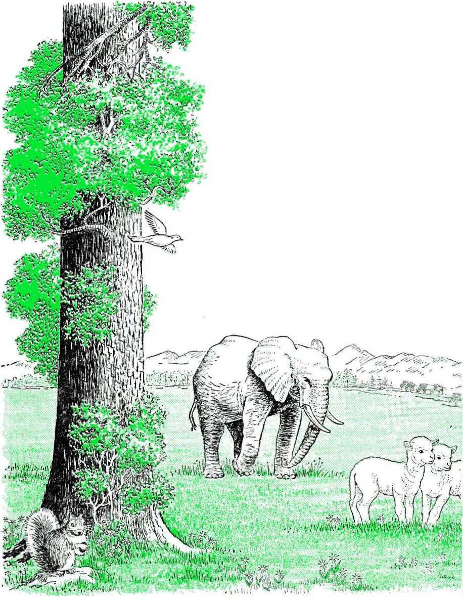(Watchtower Bible and Tract Society)
to one's sight and good for food.” —Genesis 2 :9.
29 The many colorful birds flying among the trees would also be something that would bring joy to man. Their pretty songs would be pleasant to his ears, and their bright colors and different shapes would be pleasant to his eyes.
30 Since the animals in all the earth lived on its vegetation, there was peace in the newly created garden. That was why God said: “To every wild beast
30. What kind of food did the animals ea!? of the earth and to every flying creature of the heavens and to everything creeping upon the earth in which there is life as a soul I have given all green vegetation for food." (Genesis 1 :30) This included such animals as lions and leopards, which now eat meat. So not only would these peaceful animals, with their different shapes and beautiful markings, make life in the garden of Eden interesting for man, but their friendship would be a source of happiness for him.
31 In every way God made the garden where man would live a place of peace, happiness and pleasure. It was for this reason that it was called the garden of Eden, as the name means "garden of pleasure.” This beautiful spot was the paradise God created for man. Since He was its Creator, it was also called "the garden of Jehovah." (Genesis 13:10; Isaiah 51 :3, AS) It was a small picture of what the whole earth will be like in God's fixed time, for perfect human creatures to live in for ever and ever in perfect health, joy and contentment, worshiping and serving their Creator and Ruler, Jehovah God.
31. Why was man's first paradise called the garden of Eden?
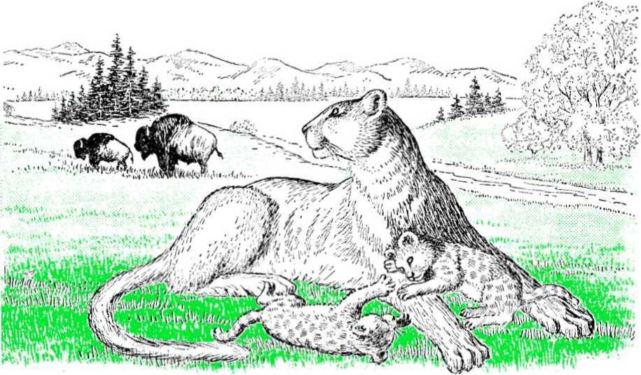CHAPTER TWO
WHEN hlEN G°d finished making the garden of Eden, the time came for his last and greatest earthly creation. It was time to put in this beautiful park the one for whom it had been made.
2 It was near the end of the sixth creative day. This means that nearly 42,000 years had passed from when God said: “Let light come to be." Five creative days of 7,000 years each had gone by and now the sixth day was almost finished. The ending of this sixth day, or period, would mean that God would stop making things for the earth. Therefore the Bible says: "And by the seventh day God came to the completion of his work that he had made, and he proceeded to rest on the seventh day from all his work that he had made."—Genesis 2:2.
3 Resting does not mean Jehovah God was tired. He never becomes tired or weary. "Have you not known? Have you not heard? The LORD is the everlasting God, the Creator of the ends of the earth. He does not faint or grow weary." (Isaiah 40.- 28, RS) So His resting means that He stopped creating things for the earth. That is why He has made no new natural thing here since the ending of the sixth creative day, nearly six thousand years ago; and He will continue to rest from creative works until the one thousand years that are left of his seventh day are finished.
4 But as the end of the sixth day came near, it was time for Jehovah God to make man and let him enjoy all the wonderful things that had been made on the earth. “And God went on to say: ‘Let us make man in our image, according to our likeness, and let them have in subjection the fish of the sea and the flying creatures of the heavens and the domestic animals and all the earth and every creeping animal that is creeping upon the earth.’ "—Genesis 1 : 26.
1. When did God begin making his greatest earthly creation? 2. How many years had passed since God began getting the earth ready for man? 3. Explain what the Bible means when it says God rested. 4. What did God say near the end of the sixth creative day?
5 When God said “Let us make man" he was speaking to someone in heaven. To whom? To a mighty spirit creature he had made long before he began creating the earth. Through this spirit creature God had created all things. John 1: 2, 3 says: "This one was originally with God. All things came into existence through him, and apart from him not even one thing came into existence.” Also Colossians 1:16 says: "By means of him all other things were created in the heavens and upon the earth, the things visible and the things invisible." So it was to this spirit creature, who was later to become Jesus Christ, that God said: "Let us make man in our image."
6 Being made in God's image meant that man would be God’s earthly son. He would have some of the qualities that God has, just as the spirit creatures, Jehovah's heavenly sons, do. Man would have love, power, wisdom and a feeling of justice. So man’s body would not have to be in God's form for him to be made in the image of God. But, rather, he would be made with these godly qualities, which animals do not have.
7 We must not make the mistake of thinking that the friendship an animal may show a person is love. The Bible tells us what true love is, and from what it says we can see that animals are not able to show it. "Love is long-suffering and obliging. Love is not jealous, it does not brag, does not get puffed up, does not behave indecently, does not look for its own interests, does not become provoked. It does not keep account of the injury. It does not rejoice over unrighteousness, but rejoices with the truth." (1 Corinthians 13:4-6) Animals are not able to do these things; so they do not have the godly quality of love. Neither do they have wisdom and a sense of justice. They have strength but not the power man has, for he is able to kill them. So man was made in God's image by being given some of the qualities God has, qualities that were not given to animals.
8 Now, with man's mind and its power to reason, he would be able to gain knowledge and to worship God. He would thus be much better than the animals and would be able to do things they cannot do. As God’s earthly son, he would look to God as his Father. And as a son must obey his father, so man would find it best to obey God. By this obedience he would show love for his heavenly Father.
5. To whom was God speaking, and how did God use him? 6. How was man made in God's image? 7. Do animals have the qualities man has? 8. How would man show love for God?
20

formed them into
IO. Why does
^4
Uft".
in
“»'>• K-Wa'
fleshly body. It was a beautiful
9 But how was this earthly son made? He was made from the dust of the earth, from the ground of his paradise home. God took many things from the dust, put them together and
might walk upright and run and jump. He gave it nv two arms/ that man might lift and carry things.-He gave it 4wp hands-'Y/fth f'n9ers and a thumb on each hand, so that J man might hold on to things, pick up ;>■
9. From what was man made? man'i body bring honor to God?
Ar ft t -
t -1
body. In fact, it was perfect, because all God's works '■
are perfect.^-' y yI*
- God gave it a back and two strong legs, that man
....."
a brain that could reason and store away a great amount of information. He gave it a mouth, that man might speak about the things he learned. And he gave it the power by which it could heal itself when injured. So the body God made was a wonderful thing that brought its is
things. He gave it eyes, ears, a nose, a sense of taste and a sense of feeling, that man might learn things and have pleasure in the things God had created. He gave it why a man once said: ‘‘I shall laud you because in a fear-inspiring way I am wonderfully made. Your works are wonderful.”—Psalm 139:14.
11 It was into this body that God put the same power of life he had given the animals, a life that is kept up by breathing. Thus, when we speak of man and the animals, it is right to say, as Ecclesiastes 3:19 does: “They all have but one spirit [or, breath].” Therefore, there is no difference between man and beast when it comes to the breath of life.
12 By putting this breath of life into the body he had made, God caused it to become a living soul. “Then Jehovah God proceeded to form the man out of dust from the ground and to blow into his nostrils the breath of life, and the man came to be a living soul." (Genesis 2:7) Thus, when the body that God had made from the lifeless dust began to breathe and blood began moving through it, it was a living soul. It could think, feel, hear, see and speak. It was now able to sit up and look about in the paradise God had made. It was able to see the green grass, the many beautiful trees and the colorful birds. It was able to smell the freshness of the air and the perfume of the flowers. What was once a lifeless body was now alive. It was a living soul because it was a living creature that breathed.
13 This earthly son of God was called Adam, and he became a living soul nearly six thousand years ago. (Luke 3:38) That seems like a very long time, but when we think how the earth has been here much longer than this, then it does not seem so long.
14 But what would this perfect man find to do in the beautiful park God had made for him? If he were to lie around and do nothing every day he would become tired of living, because life would become dull and uninteresting. Well, it was not God’s will that his earthly son should do nothing. He wanted him to work, because it would be for man’s own good. He knew that man would find happiness in work. Then, too, God does not like laziness. Since he works and all his spirit sons work, it would be only right that man should work also.
15 The work that was given to Adam was that of caring for his beautiful home. It was a God-given duty. So he must wisely and lovingly
11. In what way is there no difference between man and beast? 12. What is a soul? 13. What was the name of the first man? 14. Did God want man to do nothing? 15, 16. What was the work God gave Adam to do?
care for what God had given him. "And Jehovah God proceeded to take the man and settle him in the garden of Eden to cultivate it and to take care of it."—Genesis 2:15.
16 Adam also had the duty of ruling over all other creatures on earth. The birds, the animals and the fish were put under his authority, that is, under his power. This did not mean that he could be cruel to them, and neither did it mean that he could bring pain to them or cause them to suffer just to pass away his time. He was not to seek pleasure in the tormenting of these creatures. Instead, he was to show them kindness and rule them in love. He was not to be without mercy, like a wild beast of today. He was to show love for the animals and thus prove that he was made in God's image.
17 None of the animals were afraid of Adam as he walked about his paradise home. There was no reason why they should fear him, since he did not hunt them to kill them. The plant life was what God gave him to eat. "God went on to say: ‘Here I have given to you all vegetation bearing seed which is on the surface of the whole earth and every tree on which there is the fruit of a tree bearing seed. To you let it serve as food.’ ”—Genesis 1: 29.
18 Since Adam did not hunt the animals and the animals did not hunt one another, there was peace in the garden of Eden. This meant that Adam could walk among the animals with no fear of being injured by them. He could sit beside a lion and move his hand over its fur. Or he could walk up to a leopard and scratch its ear. Or he could pat the neck of an antelope. The many wild animals and birds of the earth were his friends.
” As Adam moved about the park, God caused the animals and birds to come to him so that he might name them. "Now Jehovah God was forming from the ground every wild beast of the field and every flying creature of the heavens, and he began bringing them to the man to see what he would call each one; and whatever the man would call it, each living soul, that was its name. So the man was calling the names of all the domestic animals and of the flying creatures of the heavens and of every wild beast of the field."—Genesis 2:19, 20.
17. Why were the animals not afraid of Adam? 18. What did the animals let him do? 19. Did God name the animals?
20 Although the animals were his friends, Adam was alone. There was no other creature of his own kind that could talk to him and show him love. He was the only human in all the earth. Since God knew that it was not good for Adam to be alone, he saw good to make a mate for him. “And Jehovah God went on to say: 'It is not good for the man to continue by himself. I am gdoing to make a helper for him, as a complement of hi m.' Hence Jehovah God had a deep sleep fall upon the man and, while he was sleeping, he took one of his ribs and then closed up the
flesh over its place. And Jehovah God proceeded to build the rib that he had taken from the man into a woman and to bring her to the man."—Genesis 2 :18, 21,22.
21 Thus, while Adam was in a deep sleep God took one of his ribs and made a woman's human body from it. He then put the breath of life into it and caused it to become a living soul. Here was a mate for Adam of his own kind, someone that could talk with him and love him and that he, in turn, could love.
22 Adam called this new living soul “woman" because she had been made from a part of man. “Then the man said: ‘This is at last bone
20. How could it be said that man was alone when he had the friendly animals about him? 21,22. How did God make another human soul, and what did Adam call her?
of my bones and flesh of my flesh. This one will be called Woman, because from man this one was taken.’ " (Genesis 2:23) In Hebrew the word for “woman” means “female man.”
23 God made the bodies of these two human souls so that they could bring forth children. In this way they could become many and in time fill the earth with human souls. This is a wonderful thing, and it shows the power and wisdom of God and brings honor to his name. Nothing man is able to make can bring forth copies of itself and become many as can the living souls God has made.
24 The first marriage took place when God brought the woman to Adam and joined them as man and wife. This shows that marriage is something that was begun by Jehovah God. For that reason no one should think little of it. Notice, too, that God gave Adam only one wife. If he wanted man to have more than that, he would have given Adam many wives. But since this was not the case, no man should think it is all right to have more than one living wife.
25 It was God’s will that the man should love his wife and that the wife should have love for her husband. He must be kind to her and gentle with her, and she, in turn, must look to her husband as her head or leader. That is why the Bible says: “Let wives be in subjection to their husbands as to the Lord.” “In this way husbands ought to be loving their wives as their own bodies. He who loves his wife loves himself, for no man ever hated his own flesh, but he feeds and cherishes it.” —Ephesians 5 :22, 28, 29.
26 Now to this first husband and wife God gave the command to become many. “Further, God blessed them and God said to them: ‘Be fruitful and become many and fill the earth and subdue it.' ” (Genesis 1 :28) This was God's purpose for man. He wanted the earth filled with perfect humans like this first man and woman. It was his will that they should all be righteous and that they should worship him as their God, obey him as their Father and serve him as their Ruler.
27 It was also his purpose that as humans grew in numbers they would make the beautiful park of Eden bigger and bigger, until the whole earth would in time become one great park, a wonderful paradise. And when
23. What did God give them the power to do? 24. What can we learn from the first marriage? 25. How did God want man to treat his wife, and what must the wife do? 26, 27. What purpose did God have for man? it would come to hove enough people on it. He wanted them all to live together in peace, showing love for one another. This was God's purpose for man and for the earth in the beginning. And this purpose will be fulfilled. ‘‘So shall my word be that goes forth from my mouth; it shall not return to me empty, but it shall accomplish that which I purpose, and prosper in the thing for which I sent it.”—Isaiah 55 :11, RS.
28 In time Adam called his wife by the name Eve, which means ‘‘living one,” because she was to become the mother of everyone living. This means that every human soul that would ever live would come through her. God gave man and woman the breath of life and the power to pass it on to others by means of childbearing. And these would pass it on to still others, and so it would continue as long as God wanted it to.
29 Since the breath of life would be passed on in this manner, it cannot be said that Adam and Eve’s children would be sons of God directly. By birth they would be sons of Adam, and so we are today. Our life has been passed down to us from Adam.
30 Unlike what He had done with the animals, God set no limit on Adam’s life. He and his wife could continue living in their paradise home forever, and their bodies would never wear out or become old.
31 Since they were perfect, they would never become sick, and neither would they suffer pain. For that reason Eve would never have childbirth pains when she gave birth to children. But besides having freedom from these things, they would also have freedom from want, because God had caused more than enough food to grow for them in the paradise of Eden. He would see to it that this food supply would never wither and die. Man would also enjoy freedom from fear, as nothing would ever endanger his life, his home or his family.
32 This life of freedom and happiness was what Jehovah God wanted human souls to have. He wanted them to have an endless life in an earthly paradise. Thus, as God's earthly children, Adam and Eve had a wonderful time before them. All that God asked of them was their love, their worship and their obedience.
28. What name did Adam give his wife, and why did he do so? 29. Would Adam’s children be sons of God? 30. When Adam and Eve were made, did God set the number of years they would live? 31. What were some of the freedoms this first pair had? 32. What kind of life did God want man to have, and what did he ask of Adam and Eve?
CHAPTER THREE
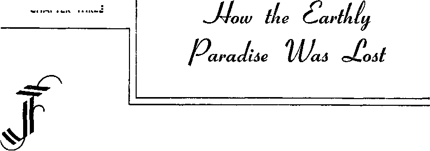EHOVAH gave Adam the freedom to go in a good way or in a bad way. But how was Adam to know what was good and what was bad? Well, this was not left up to him. God is the judge of what is good and what is bad. What is right in God's eyes is good; what is wrong in his eyes is bad. Therefore, Jehovah would tell Adam what is good and what is bad.
2 If Adam chose the good way he would live forever in the paradise God had made for him. But if he chose the bad way he would lose his paradise home, for he would lose his life. Adam knew to what end each way would lead him, and he was free to choose either way. God did not force him to go one way or the other. This freedom of choice is shown in the Bible when it says: "Now if it is bad in your eyes to serve Jehovah, choose for yourselves today whom you will serve.”—Joshua 24:15.
3 If Adam chose the bad way he would not be serving Jehovah, because God cannot be served by acts of disobedience. This would not be showing love for him, and God loves only those who love him. Now if Adam proved to be disobedient, how could God permit him to live forever in the paradise of Eden? That beautiful park was made only for human souls that would choose the good way of obedience.
4 Adam must be given the chance to make a choice. By his own actions he must prove his love for God. He must pass a test of obedience. "And Jehovah God also laid this command upon the man: ‘From every tree of the garden you may eat to satisfaction. But as for the tree of the knowledge of good and bad you must not eat from it, for in the day you eat from it you will positively die.'”—Genesis 2:16,17.
1. How was Adam to know what is good and what is bad? 2. Was Adam free to choose either the good way or the bad way? 3. In what way would Adam not be showing love for God? 4. What did Adam have to prove?
5 By this command God made it clear to Adam that a certain way was bad and to follow that way would mean death for him. This means he would stop being a living soul and would become a dead soul. He would become as when he had not been.
6 He would no longer be able to think, to smell, to see, to hear, to talk or to move about. He would know nothing, just as the dust knows nothing. “For the living are conscious that they will die; but as for the dead, they are conscious of nothing at all." (Ecclesiastes 9:5) “His spirit [or, breath] goes out, he goes back to his ground, in that day his thoughts do perish." (Psalm 146:4) So if Adam chose to go in the bad way by eating from the one tree that God said not to eat from, he would die. The breath of life would leave him, even as it left the animals when they died, and like them he would no longer live.
7God did not make it possible for the animals to have life without end as he did for man. For that reason Adam could see some of them die, and therefore he knew what death was from what he saw. Of course, it was not hard for him to understand what a terrible punishment death is anyway, since he was a perfect man with a perfect mind.
8 This test of Adam's obedience was not hard. Not to eat from a certain tree in the paradise of Eden did not mean he would go hungry, because there were many other trees from which to eat lawfully. For this reason it was an easy thing for him to obey God's command. God was therefore not being unjust, and neither was he asking too much of Adam. It was a simple test of whether Adam would be true and faithful to Jehovah God.
5, 6. What would it mean if Adam chose the bad way? 7. Was Adam able to know what death is? 8. Could it be said that Adam was given a hard test?
9 The good way of obedience was something for Adam to aim at. For him to miss it by an act of disobedience would be sin. Sin is therefore a breaking of God's law. It is the missing of the mark of unbroken faithfulness to God. This means that the test before Adam was whether he would obey God or disobey him.
10 There was nothing in the tree or in the fruit itself that would bring death to Adam, and he would not be hurt if he touched either it or its fruit. What would bring death to him would be the act of disobedience by ddoing something God had told him not to do. Since it was Adam’s duty later to tell his wife the things God had said to him, she would learn about this tree. She would know that it would be wrong to eat its fruit.
11 Well, one day Eve was alone in the garden. Her husband was in another part of it. This was when a strange thing happened. One of the animals in the garden spoke to her. "Now the serpent proved to be the most cautious of all the wild beasts of the field that Jehovah God had made. So it began to say to the woman-. ‘Is it really so that God said you must not eat from every tree of the garden?’ "—Genesis 3:1.
12 Where did the serpent get the power to speak? God had not given it this power when he made it. This can only mean that someone was speaking through the serpent and making it seem to be the one that
9. What is sin? 10. Would the fruit itself bring death to Adam? 11. What happened one day when Eve was alone? 12. Why was the serpent able to speak?
was talking. Who else could it be but one of the unseen persons or angels that God had made long before he began making the earth?
13 One of these angels had become filled with pride because of his beauty and power. (1 Timothy 3:6) He began thinking that he should be a ruler like God and be equal to God. But to become a ruler he needed someone to rule over. So he planned to cause disobedience among God's sons. In this manner he believed he could gather many persons around himself and cause them to serve him instead of God.
14 He began carrying out his wicked plan by gdoing to the newest and weakest of God’s children, to fool her into breaking God's law. If he could get her to disobey God, it would give him a starting point toward causing others to do the same. So, when he saw Eve there by herself, he spoke to her through the serpent. He made the forbidden tree interesting to Eve by asking her about God’s command not to eat from it. In answer to the serpent's question, she said: “Of the fruit of the trees of the garden we may eat. But as for eating of the fruit of the tree that is in the middle of the garden, God has said, ‘You must not eat from it, no, you must not touch it for fear you may die.' ”—Genesis 3 : 2,3.
15 It is possible that she had given no thought, up until then, of eating from this tree. But the now-wicked angel wanted her to think about it. He wanted to put a wrong desire in her heart, a desire to eat that fruit. And so he raised this question about God's command to get her to thinking about the tree.
16 Once he had her mind on the forbidden fruit, his next step was to get her to want it. He did this by false words: “At this the serpent said to the woman: ‘You positively will not die. For God knows that in the very day of your eating from it your eyes are bound to be opened and you are bound to be like God, knowing good and bad.”'—Genesis 3 :4,5.
17 This was the first lie. It was the opposite of what God had said, and that is what made it a lie, because Jehovah always speaks the truth. He cannot lie. That is why it is written about him: “Your word is truth." (John 17:17) So, when the serpent spoke against God's Word, it lied.
13. What did one of the angels think of ddoing? 14, 15. How did the wicked angel try to cause disobedience? 16, 17. What was the first lie, and what was the wicked angel called because of it?
It was slandering God because it was hurting God's good name or reputation. Because of this the wicked angel, who was speaking through the serpent, was called the Devil, which means “slanderer.” He was also called Serpent, because he fooled Eve. And because he set himself against God he was called Satan.
18 This wicked one made himself seem to be an angel of light; that is, an angel of truth. He wanted Eve to think that he was telling the truth and that God was not. Ever since then he has tried to make himself appear to be what he is not. That is why the Bible says: "And no wonder, for Satan himself keeps transforming himself into an angel of light.” —2 Corinthians 11 :14.
19 By this lie Satan gave Eve a wrong thought. He led her to think that by eating the forbidden fruit she would become like God and be able to judge for herself what is good and what is bad. She would no longer have to go by what God said was good or bad. The more she thought about this power, the more she wanted it. This was a mistake. She should not have kept this thought in her head, but should have put it out of her mind. It could only lead her to missing the mark of faithfulness to God, which would be sin. And that, in turn, would mean death for her. "But each one is tried by being drawn out and enticed by his own desire. Then the desire, when it has become fertile, gives birth to sin; in turn, sin, when it has been accomplished, brings forth death.” —James 1 :14, 15.
20 So it was with Eve. She was enticed. That means she was pulled to the forbidden fruit by her desire to be like God. She did not put the desire away from her, but she thought upon it and let it grow. Now in her eyes the fruit looked very nice and good to eat. The desire or want for it was stronger than ever. It was so strong that she gave no further thought to God’s command against eating it. All that seemed important to her now was to have that fruit. So she reached up, picked one and ate it. "Consequently the woman saw that the tree’s fruit was good for food and that it was a delight to the eyes, yes, the tree was desirable to look upon. So she began taking of its fruit and eating
18. What did the Devil make himself seem to be? 19. What was the mistake Eve made? 20. How was it that Eve sinned?
it.” (Genesis 3:6) Now her desire had become fertile by bringing forth sin.
21 But her sin did not stop there. When her husband came she wanted him to disobe
God too. So Eve offered him some of the fruit that she had picked. Instead of not taking but telling her that she had done wro ' did he do? "Afterward she gave some also to her husband when with her and he began eating it Then the eyes of both of them became opened and they began to realize that they were naked. Hence they sewed fig leaves together and made loin-coverings for themselves. Later they heard the voice of Jehovah God walking in the garden about the breezy part of the day, and the man and his wife went into hiding from the face of Jehovah God in between the trees of the garden.”—Genesis 3:6-8.
22 Their conscience, or inside knowledge of what was right, told them that they were guilty of disobedience. This was shown by their feeling the need to cover their nakedness. Since they were no longer innocent or free from wrongddoing, a thought in their minds now spoke against them. It was a feeling of guilt. And so they wanted to cover themselves. This was also shown by their hiding from Jehovah God among the trees of the garden. "And Jehovah God kept calling to the man and saying to him: ‘Where are you?' Finally he said: ‘I heard your voice in the garden, but I was
21. Did Adam tell Eve that her actions were bad, or what? 22. How did Adam and Eve show their guilt? afraid because I was naked and so I hid myself.’”—Genesis 3:9, 10.
23 Here, for the first time, fear was felt in the paradise of Eden. And notice that it did not begin among the animals, but with man. It came upon man because he had disobeyed God, and he knew that he had done what was bad. Thus, by the wrong actions of Adam and Eve, sin came into that righteous world.
24 Before passing sentence, God wanted them to own up to wrongddoing. For that reason he said to Adam: “ ‘Who told you that you were naked? Have you eaten from the tree from which I commanded you not to eat?’ And the man went on to say: ‘The woman whom you gave to be with me, she gave me fruit from the tree and so I ate it.’ With that Jehovah God said to the woman: ‘What is this you have done?’ To this the woman replied: ‘The serpent deceived me and so I ate."' —Genesis 3:11-13.
25 Both of them tried to free themselves of blame. Adam said Eve caused him to do it, and Eve passed the blame on to the serpent. But these were not good reasons for disobeying God. They knew what God's command was. Because of that knowledge they should have turned their backs on the tree and walked away without touching its fruit. But instead of paying heed to that command, they chose to do what God had made clear to them as being bad. In this way they failed to show love for God and failed to pass the test of obedience and faithfulness.
26 God then judged them as breakers of his law and sentenced them to return to the dust from which they had been made. To Adam he said: “For dust you are and to dust you will return.” (Genesis 3:19) No longer did Adam and Eve have an unending life before them. They must now look forward to dying in God's due time. Life is a blessing from God, and they had shown by their actions that they were not worthy of that blessing. For this reason the breath of life would be taken from them, and they would return to the lifeless dust.
27 The unseen Devil who had lied to Eve through the serpent was also judged and sentenced. “And I shall put enmity between you and the woman and between your seed and her seed. He will bruise you in the
23. How did fear have its beginning in the paradise of Eden? 24, 25. How did Adam and Eve fry to free themselves from blame? 26. To what punishment did God sentence them? 27. What did God mean by saying that the head of the serpent would be bruised?
head and you will bruise him in the heel.” (Genesis 3:15) By saying that the serpent would be bruised in the head God meant that Satan would be destroyed. And it would be done by the one whom God would choose. That one was the Seed of the woman. The woman was not disobedient Eve, but rather God's heavenly organization of faithful spirit creatures. This organization is spoken of as a woman in the Bible, and God says he is her husband, in these words to her: “For thy Maker is thy husband; Jehovah of hosts is his name.”—Isaiah 54:5, AS.
28 The chief Son of this heavenly mother or organization is Jesus Christ. He is the Seed who will destroy Satan at the time appointed by God. Until that time there must be enmity (that is, hatred) between those who serve God and those who serve Satan.
29 When God warned Adam against eating from the forbidden tree, he said: “In the day you eat from it you will positively die.” (Genesis 2:17) This did not mean Adam would die within twenty-four hours after eating the fruit. It is written, at 2 Peter 3 :8, that “one day is with Jehovah as a thousand years.” So instead of living forever Adam would now die within a period of one thousand years, which is spoken of as a day. And this he did, for he died at the age of 930 years.
30 Now, since Adam and Eve had sinned, they could no longer stay in the paradise of Eden. God had planted that beautiful park for obedient persons, not disobedient ones. Therefore, Jehovah sent them outside the park to earn their living by sweat and hard work with a cursed ground. God said to Adam: “Because you listened to your wife's voice and took to eating from the tree concerning which I gave you this command: ‘You must not eat from it,’ cursed is the ground on your account. In pain you will eat its produce all the days of your life. And thorns and thistles it will grow for you, and you must eat the vegetation of the field. In the sweat of your face you will eat bread until you return to the ground, for out of it you were taken.” (Genesis 3 :17-19) Thus 28. Who will destroy Satan? 29. How was it that Adam died in the day he ate the fruit? 30. Why did God send Adam and Eve out of the garden, and what did he say?
they had to live outside the paradise of Eden and find food for themselves as best they could.
31 Since Adam and Eve had lost their perfection, their children must be born in an imperfect condition. Just as parents today often pass sicknesses on to their children, so Adam and Eve passed sin and death on to theirs. Their children were unclean in God’s eyes. “Who can produce someone clean out of someone unclean? There is not one." (Job 14:4) “Through one man sin entered into the world and death through sin, and thus death spread to all men because they had all sinned.”—Romans 5:12.
32 Thus Adam lost for himself, and for the human souls that would come after him, perfection, eternal life and the paradise of Eden. He lost all this by disobeying God. And so, according to God's law which says “the soul that sins shall die,” the first human souls died. (Ezekiel 18:4, RS) The only hope mankind has of getting back what Adam and Eve lost, the only hope of regaining paradise, is through an act of undeserved kindness by Jehovah God.
31. What did they pass on to their children? 32. What did Adam lose? How only may it be regained?
v
CHAPTER FOUR
DAM'S first son followed his bad example. Instead of ddoing what was good, Cain chose to do what was bad in God’s eyes. He was selfish and had no love for his shepherd brother Abel. One day Abel offered an animal sacrifice to Jehovah God, but Cain presented a bloodless vegetable offering. When God was pleased with Abel's sacrifice but did not look with favor upon Cain's offering, Cain became very angry. God told Cain how he could be exalted or lifted up in God’s eyes and thus have his favor; “If you turn to ddoing good, will there not be an exaltation? But if you do not turn to ddoing good, there is sin crouching at the entrance and its longing is for you, and you ought to get the mastery over it.”—Genesis 4 : 7.
2 This was a warning to Cain that sin was waiting for him, because he did not have the right way of looking at the favor shown toward his brother. Cain would have to get the mastery or control of his thoughts to stop them from leading him into a terrible sin. But Cain did not listen to the warning. His heart was wicked, and he planned to kill his brother. “After that Cain said to Abel his brother: [‘Let us go over into the field.' 1 So it came about that while they were in the field Cain went to assaulting Abel his brother and striking him dead."
—Genesis 4 : 8.
3 For this crime Cain was cursed by God. His wife, by
1, What kind of man was Cain, and what warning did God give him? 2. What wicked thing did Cain do? 3* Where did Cain get his wife?
the way, was his sister. God had given no law as yet against such close marriages.
4 Abel was the first of a great number of Jehovah’s witnesses whose blood has been poured out on the ground because they tried to do what was right in the eyes of God. The world has treated these faithful servants of God in the same manner, as Jesus Christ once said: ‘‘Here I am sending forth to you prophets and wise men and public instructors. Some of them you will kill and impale, and some of them you will scourge in your synagogues [meeting houses] and persecute from city to city; that there may come upon you all the righteous blood spilled on earth from the blood of righteous Abel to the blood of Zechariah son of Bar a chi ah, whom you murdered between the sanctuary and the altar.”—Matthew 23 : 34, 35.
5 Since Abel was dead and Cain was judged by God as a wrongdoer, the family line of mankind down till now goes through Seth, another son of Adam. The Bible does not say what kind of man Seth was, but it merely tells us who his sons were and that he lived to be 912 years old. That was very much longer than we live today. This was possible because man in the beginning was made to live forever. But when Adam sinned, man’s life was cut to less than one thousand years, and then over 1,650 years later it had dropped little by little to less than two hundred. And now few men live to be one hundred years of age. Methuselah lived the longest of any human soul, as he reached the great age of 969 years.
6 About five hundred years after Abel’s death, a man of outstanding faith was born. His name was Enoch. Because he followed the way that was good in God’s eyes, the Bible says that he “kept walking with the [true] God." (Genesis 5:24) This obedience was pleasing to Jehovah. Enoch foretold, or prophesied, of a time when God would come with many ten thousands, or many myriads, of holy angels to destroy the wicked. “Yes, the seventh man in line from Adam, Enoch, prophesied also regarding them, when he said: ‘Look! Jehovah came
4. Abel was the first of what class? 5. How long did men live in those days? 6. What did Enoch foretell? with his holy myriads, to execute judgment against all and to convict all the ungodly concerning all their ungodly deeds that they did in an ungodly way and concerning all the shocking things that ungodly sinners spoke against him.” (Jude 14, 15) When this time would come it would mean the end of wickedness on the earth and man's regaining of paradise. So Enoch’s prophecy gave hope to faithful men that a new world was coming in which righteousness would dwell.
7 As time passed mankind became very wicked. They followed the bad example left by Cain. And they were helped in this bad way by disobedient heavenly angels who materialized; that is, they clothed themselves with fleshly bodies. These spirit persons had the power to do that in those days. So they took on human bodies and walked among mankind. They even married the daughters of men. “Now it came about that when men started to grow in numbers on the surface of the ground and daughters were born to them, then the sons of God began to notice the daughters of men, that they were good-looking, and they went to taking wives for themselves of all whom they selected.”—Genesis 6:1,2.
8 This was not right. It was bad in God's eyes. He did not want them to mix with mankind. Since these spirit persons did this and did not stay in the heavens where they belonged, they were judged wicked. From then on they worked with Satan, the first disobedient angel.
9 The sons of these materialized angels proved to be big men who loved wickedness. They were called Neph'ilim, and they filled the earth with violence. Their own bad influence, as well as that of their fathers, helped to cause man's every thought to be bad all the time. “Consequently Jehovah saw that the badness of man had become great in the earth and every inclination of the thoughts of his heart was only bad all the time."—Genesis 6 : 5.
10 Seventy years after Enoch’s death Noah was born. He proved to be a man who walked with God by being obedient. Even though he lived in that wicked world for 599 years, he never did the bad things it did. He was a man who loved God as Abel and Enoch had, and he did what was good in God's eyes. “Noah was a righteous man. He proved himself faultless among his contemporaries. Noah walked with the [true] God." (Genesis 6:9) His love of what is good in God's eyes made him 7. What did wicked angels do? 8. Why was it wrong for angels to marry the daughters of meti? 9. Who were the Neph'i-lim? 10. How was Noah different from other men at that time?
different from his contemporaries; that is, those who lived at the same time he did.
11 Now Jehovah God was not blind to the great wickedness of that world. He did not like what he saw. “And the earth came to be ruined in the sight of the [true] God and the earth became filled with violence. So God saw the earth and, look! it was ruined, because all flesh had ruined its way on the earth." (Genesis 6:11, 12) How different things were now from when God made Adam and Eve! That world of peace with righteous man and woman had become ruined by disobedience. And the world that was there now was far from being good. The people who lived in it had ruined their way by wickedness. Since God hates wickedness he could not permit it to continue any longer.
12 So he chose a time when he would bring that wicked world to an end. “After that God said to Noah: ‘The end of all flesh has come before me, because the earth is full of violence as a result of them, and here I am bringing them to ruin together with the earth.’ ” (Genesis 6:13) Thus God let it be known that he was gdoing to destroy that wicked world in less than a hundred years.
13 In order that righteous Noah and his family might live past that world’s end, God told him to make a great wooden ark, or chest. It would be needed to save their lives, because the world was gdoing to be destroyed by a great flood of waters. God said: “And as for me, here I am bringing the deluge of waters upon the earth to bring to ruin all flesh in which the force of life is active from under the heavens. Everything that is in the earth will expire.” (Genesis 6:17) God meant that every living soul on the land and in the air would die except those that went inside the ark of safety.
14 Noah and his sons obeyed God's command and began building the ark. They followed his directions by building it with three floors and enough rooms for his family, for the animals he was told to take in and for the food all would need. Since the ark was not made to move through the water, but merely to float, it was not like a boat. It did not have a sharp front. It was nothing more than a big waterproof chest. Where the walls joined the roof, a space was left all around the ark for light and air. Other than this there was only one opening in the ark—a large 11. Was God blind to the wickedness of that world? 12. What did God say that he would do? 13. How would Noah save himself and his family? 14. How was the ark made?
door in one side.
15 Now it was Jehovah's will that Noah should bring into the ark two of every animal kind that lived on the dry ground and two of every bird. However, certain animals, which God said were clean, were to be brought in by sevens: “And I do establish my covenant with you, and you must go into the ark, you and your sons and your wife and your sons’ wives with you. And of every living creature of every sort of flesh, two of each, you will bring into the ark to preserve them alive with you. Male and female they will be." (Genesis 6 :18, 19) “Of every clean beast you must take to yourself by sevens, the sire and its mate, and of every beast that
15. What was Noah to bring into the ark besides his family?
16. Why is Noah called a "preacher of when the time for the flood was neor?
righteousness"?
o
surface of the
17. What did Noah do
is not clean just two, the sire and its mate." —Genesis 7 : 2.
’* During the years that Noah and his married sons worked on the ark, he preached to the people of that world and warned them of the flood. That is why the Bible calls him a "preacher of righteousness." But the people would not listen. Their hearts were set on ddoing that which was bad in God’s eyes.
17 Finally the time came when God told Noah to bring into the ark the chosen animals and the members of his family. As we read: "Jehovah said to Noah: 'Go, you and all your household, into the ark, because you are the one I have seen to be righteous before me among this generation. For in just seven days more I am making it rain upon the earth forty days and forty nights, and I will wipe every existing thing that I have made off the ground.’ ” (Genesis 7:1, 4) Noah did as God commanded him. And after all the living souls that had been chosen were put into the ark by the end of the week, the door was closed and firmly fastened by God.
18 It was in the month of November of the year 2370 B.C., which was the six hundredth year of Noah’s life, that the great flood began. Rain started falling all over the earth. It came from the great water canopy that had been far above the earth since the time when the earth was being made. “In the six hundredth year of Noah’s life, in the second month, on the seventeenth day of the month, on this day all the fountains of the great water canopy were broken open and the floodgates of the heavens were opened. And the downpour upon the earth went on for forty days and forty nights.”—Genesis 7:11, 12.
19 This heavy fall of rain all over the earth, for forty days and nights without letup, caused all land surfaces to be covered with water. The water even went over the tops of the tallest mountains of that time. This made the earth one big ocean.
20 All wicked humans of that time were killed by the floodwaters, and that included the big sons of the materialized angels. No one left outside the ark continued to live except the wicked angels. The floodwaters could not harm them because they stopped living in bodies of flesh and returned to spirit bodies. This was not the time God had chosen for them
to be destroyed. So regarding the destruction of this wicked world, the Bible says: “Everything in which the breath of the force of life was active in its nostrils of all that were on the dry ground died. Thus he wiped out every existing thing that was on the surface of the ground, from man to beast, to creeping animal and to flying creature of the heavens, and they were wiped off the earth, and only Noah and those who were with him in the ark kept on surviving.”—Genesis 7:22, 23.
21 The floodwaters covered the land for five months before beginning
18. Where did the floodwaters come from? 19. How much land was covered by the flood? 20. Were there any human survivors other than Noah and his family? 21. When the ark came to rest on the mountain range of Ar'a*rat, what did Noah then do?
to go down. And after they had been gdoing down for a while the ark came to rest on the mountain range of Ar a rat. Finally Noah opened the “window of the ark" and let a raven fly out. But since the land was still covered with water, it kept flying about outside until the ground was dry. In the meantime Noah sent out a dove three times, to see if all the floodwater was gone from the land. The second time it came back it had an olive leaf in its bill, but on the third time it was sent out it failed to return because the water was now gone.
22 The time had come for all the living souls in the ark to come out. So Noah opened the door and stepped out on dry land. He had been in the ark one moon year and ten days, which is one sun year. During this time many changes had been made on the earth by the floodwaters. As they came down on the land they dug deep valleys and canyons in the ground as well as in the bottoms of the oceans. The great weight of the water also brought about changes by causing the ground to sink in some places and to rise in others.
23 Now, since the water canopy that had been around the earth for such a long time had fallen in the form of rain, Noah and his family had, for the first time, a clear view of the sun in its full glory, it was no longer a mere hazy spot of light in the sky. And when they looked up after dark and saw the numberless stars shining brightly in a clear sky, think how they must have been filled with wonder. Never before had their eyes been blessed with such a sight. Since they were lovers of God they would see in the stars, moon and sun a silent reminder of his greatness, wisdom and glory.
24 With the Flood over and its survivors once again standing on dry land, the time had come for God to make a covenant with them.
A covenant is a purpose or statement of one's purpose.
This covenant is called the rainbow covenant, because God caused a rainbow to appear in the sky at the time he made it: “My rainbow I do give in the cloud, and it must serve as a sign of the covenant between me and the earth. And the rainbow must occur in the cloud and I shall certainly see it to remember the covenant of eternity between God and every living soul among all flesh that is upon the earth.” (Genesis 9:13,16) Thus when we see a rainbow in the sky it should remind us of God’s purpose never to bring another flood upon the earth that would destroy all flesh.
22. How long did the flood last, and what change did it cause?
23. What new sight caused Noah and his family to be reminded of God’s greatness and wisdom?
24. What was the rainbow covenant?
25 The rainbow should also remind us that under this covenant man was told not to murder, not to kill animals without cause and not to eat blood. God did not want man to think little of human life, as the wicked people before the Flood did. Human life is of great value, and God always wanted man to remember that. “Anyone shedding man’s blood, by man will his own blood be shed, for in God's image he made man.” —Genesis 9 :6.
26 It was after the Flood that a change took place in man’s relationship with the animals, because man was now permitted to hunt them for food. God said: “And a fear of you and a dread of you will continue upon every living creature of the earth and upon every flying creature of the heavens, upon everything that goes creeping on the ground, and upon all the fishes of the sea. Into your hand they are now given. Every creeping animal that is alive may serve as food for you. As in the case of green vegetation, I do give it all to you.” (Genesis 9:2,3) But when man ate the animals, God did not want him to eat blood. “Only flesh with its soul—its blood—you must not eat.”—Genesis 9:4.
27 If any human soul ate blood, killed animals without cause or murdered another man, he would be breaking the rainbow covenant. He would be choosing the way that is bad in God’s eyes. Since this eternal covenant is binding upon all mankind, no one is free to disobey it.
28 When Noah came out of the ark he offered a sacrifice to God, and God then blessed him and his sons and said: “Be fruitful and become many and fill the earth.” (Genesis 9:1) This command was fulfilled in a small way by the time seventy generations had been born from Noah’s sons. Because of Noah, man did not die off in the flood.
25. What important things should the rainbow remind us of? 26. Why did man's relationship with the animals change? 27. Is anyone free from obeying the rainbow covenant? 28. What command did God give Noah’s sons, and how was it carried out?
CHAPTER FIVE
N OBEDIENCE to God's command to become many and fill the earth, Noah's sons and their wives began bringing forth children. Thus, as time passed, the earth began to have more and more people on it. But as they grew in numbers, the worshipers of Jehovah God grew less. The people lost sight of the good examples of faith and devotion set by Noah and his sons. They chose to follow the way that was bad in God’s eyes. This, of course, was pleasing to the unseen Devil and the other disobedient angels. In fact, they helped mankind to go in the wrong way.
2 Although these wicked spirits were not destroyed by the Flood, they were no longer able to materialize or clothe themselves with flesh as they were once able to do. God had taken that power away from them, because they had misused it. And since they were no longer a part of God’s heavenly organization, they became demons, the servants of Satan. This made him the prince of the demons. And so Satan and his demons, the disobedient angels, worked to turn men away from God. All who did turn away were used by them to form a visible earthly organization that was under their control.
3 The first evidence of this organization was the city wicked men began to build about 130 years after the Flood. They chose as the spot for it a valley plain in the land of Shinar, which is today the country of Iraq. The building work was done under the direction of Nimrod, a great-grandson of Noah. He proved to be a very wicked man who was opposed to God, and who hunted men and beasts in disobedience to the rainbow covenant. “And Cush became father to Nimrod. He made the start in becoming a mighty one in the earth. He displayed himself a mighty hunter in opposition to Jehovah. That
1. Did mankind follow Noah's example after the Flood? 2. Whom did the wicked spirits serve after the Flood, and what did they do? 3. What was the first evidence of Satan's visible organization?
45
is why there is a saying, ‘Just like Nimrod a mighty hunter in opposition to Jehovah.’ " —Genesis 10:8, 9.
4 Under his direction the people began building a Temple tower, which they planned to use in the worship of false gods, ft was their hope that this religious tower would hold them together. They did not want to scatter or go off to different parts of the earth and no longer be under the religious and political rule of their city. “They now said: ‘Come on! Let us build ourselves a city and also a tower with its top in the heavens, and let us make a celebrated name for ourselves, for fear we may be scattered over all the surface of the earth.’ ’’—Genesis 11:4.
5 God was not pleased with this plan. To break it up he stopped the building of the tower. How? By suddenly causing the people to speak different languages, instead of just one. This caused great confusion among the people, and that is why their city came to be called Ba'bel, or Babylon, which name means “Confusion."
6 With their language confused, the people had to stop work on the Tower of Babel because they could no longer understand one another. It was no longer possible for them to live and work together. So they picked up their household goods and went far away from Babylon. “Accordingly Jehovah scattered them from there over all the surface of the earth, and they gradually left off building the city. That is why its
4. Why did the people build a tower? 5, 6. How did God stop them from finishing the tower? name was called Babel, because there Jehovah had confused the language of all the earth and Jehovah had scattered them from there over all the surface of the earth." (Genesis 11:7-9) This was how mankind changed from speaking one language to speaking many. As time passed these languages changed and new ones were formed, until now we have about 2, 796 of them in the world.
7 It was from the city of Babylon that false religion was carried to all parts of the earth. Because of the bad influence of this false religion the worship of almost all people today is not pleasing to God. Their religions are to him like the smell of rotting flesh in a hot sun. This is because their worship has been spoiled by the bad religion of Babylon, which has been passed down through the ages to this modern world.
8 Although most men turned away from Jehovah God to the worship of false gods, there were some who did not. Abraham was one of these. He was born 352 years after the Flood, among the moon worshipers of Ur. This was a brick city built on the west bank of the Euphrates River near the Persian Gulf. Abraham held fast to the true worship of Jehovah and thus followed the example of Noah’s son Shem, who was his forefather.
9 To test his faith God told Abraham (or Abram, as he was called then) to leave his home town of Ur and go to an unknown land that would be shown him. This was a test of Abraham's faith and obedience to God. “And Jehovah proceeded to say to Abram: ‘Go your way out of your country and from your relatives and from the house of your father to the country that I shall show you.’ ”—Genesis 12:1.
10 If Abraham would obey this command, Jehovah purposed to make a great nation out of him and to bless all families of the earth by means of him. “And I shall make a great nation out of you and I shall bless you and I will make your name great; and prove yourself a blessing. And I will bless those who bless you, and him that calls down evil upon you I shall curse, and all the families of the ground will certainly bless themselves by means of you." (Genesis 12:2,3) That meant, among other things, that one day they would regain the lost paradise.
” This agreement is called the Abrahamic covenant, because it was
7. Why is the worship of almost all people today not pleasing to God? 8. How was Abraham different from most men of his day? 9. How was Abraham's obedience tested? 10. What purpose did God give Abraham? 11. What was this purpose called?
a purpose made to Abraham. It would belong to Abraham when he crossed the Euphrates River and entered the land God would show him. The fulfillment of this purpose therefore rested upon Abraham's obedience. Thus he was under test. Would he choose the way that was good in God's eyes or the way that was bad?
12 Abraham showed himself to be a man like Noah, because he chose the way of obedience. He gathered together his household and all his belongings and moved out of his home town of Ur. He also took along his father, Terah, as well as his nephew, Lot.
13 They headed northwest. And after traveling about seven hundred miles they came to the city of Haran, where they stopped for a while. It was here that Abraham’s father died at the age of 205. Although Abraham stayed in this city for a while, he did not forget God’s command. So the time came when Abraham had his household once again pack up their goods and get ready to move on. He was now seventy-five years old and without a single child. “So Abram took Sarai his wife and Lot the son of his brother and all the property that they had accumulated and the souls whom they had acquired in Haran, and they got on their way out to go to the land of Candan."—Genesis 12:5.
’4 When Abraham finally reached Candan, God told him: “To your
12. What course did Abraham choose? 13. Did Abraham make the city of Haran his home? 14. When Abraham reached the land of Candan, what did God purpose?
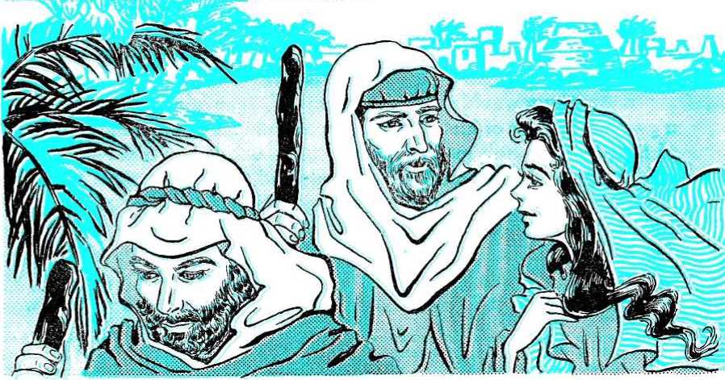seed I am gdoing to give this land." (Genesis 12:7) And so he did about 470 years later, when he brought Abraham's descendants, the nation of Israel under Joshua, into it.
15 After Abraham had been in the land for a while, he suggested to Lot that they separate, to avoid trouble between their herdsmen. So Lot moved his household to the southern part of the Jordan valley, because at that time it was well-watered and very beautiful. He set up his tent near the city of Sodom.
16 Now Sodom was a very wicked city. The people cared nothing for God or for moral cleanness. That was why Lot was greatly upset over the things he saw during the years he lived there. “For that righteous man by what he saw and heard while dwelling among them from day to day was tormenting his righteous soul by reason of their lawless deeds."—2 Peter 2:8.
17 In time God sent two angels to destroy Sodom, as well as the nearby city of Gomorrah. They materialized human bodies and came to Lot to warn him. When the wicked men of Sodom saw these handsome strangers, they wanted to have sex relations with them and thus do something that was very bad in the eyes of God, who said: “You must not lie with a male the same as you lie with a woman. It is a detestable
15. Where did lot go offer they hod been in the land for a while? 16. Why did Lot not like the city of Sodom? 17. What did God send his angels to do to Sodom?
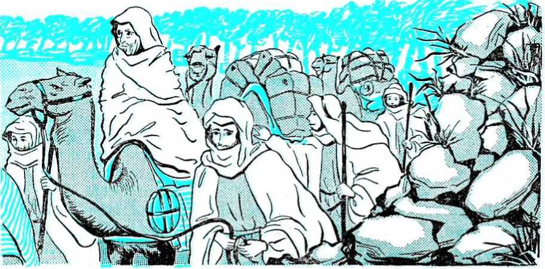thing.” (Leviticus 18:22) By trying to do this bad thing, the men showed that they were worthy of destruction. The men failed to break down the door to Lot’s home and get in only because the angels caused them to become blind. The next morning the angels took Lot, his wife and his two daughters by the hand and rushed them out of the city. “And it came about that, as soon as they had brought them forth to the outskirts, he began to say: ‘Escape for your soul! Do not look behind you and do not stand still in all the District! Escape to the mountainous region for fear you may be swept away!’ ”—Genesis 19:17.
18 Suddenly there was a great explosion, with red-hot sulphur and salt being blown high into the air, which then rained down upon the whole district. In this manner every living thing in the cities and in the land around them was destroyed. Because the land was left covered with salt, not a single plant has grown in this district since that day. “Then Jehovah made it rain sulphur and fire from Jehovah, from the heavens, upon Sodom and upon Gomorrah. So he went ahead overthrowing these cities, even the entire District and all the inhabitants of the cities and the plants of the ground.”—Genesis 19:24, 25.
19 Since Lot and his two daughters obeyed the angels by running away from Sodom without stopping for a moment, they escaped destruction. Lot’s wife, however, disobeyed the angels by turning to look back. Because she did this she was caught in the downpour of hot salt. “And his wife began to look around from behind him and she became a pillar of salt." (Genesis 19:26) Here again we see that Jehovah saves those who obey him, but destroys those who do not.
20 Now, after Abraham had moved from place to place in the land of Candan for twenty-four years, God told him something that amazed him. It was the purpose that he would have a son. This seemed impossible, because Abraham was ninety-nine years old and his wife was eighty-nine. She was long past the age of childbearing. But yet God said: “I will bless her and also give you a son from her, and I will bless her and she shall become nations; kings of peoples will come from her.” (Genesis 17:16) This was indeed an amazing purpose, yet Abraham had faith in it. And he was not disappointed. By God's wonderful power Sarah did
18. How were the cities of Sodom and Gomorrah destroyed? 19. What do we learn from the fact that Lot and his daughters were saved? 20. What did God purpose Abraham and Sarah that seemed impossible? have a son in her old age. He was called Isaac, and was dearly loved by Abraham, for this was the only child Sarah bore him.
21 Many years later God put Abraham to a very difficult test of faith. It was a test that no other man would ever be put to. What was that test? Well, God told Abraham to take his only son, Isaac, to Mount Moriah and there offer him up as a burnt sacrifice. What greater test could be given a father? Did Abraham obey God's command and sacrifice his only son? Or did he now, after a lifetime of faithful service, disobey? Well, listen to what the Bible says: “So Abraham got up early in the morning and saddled his ass and took two of his attendants with him and Isaac his son, and he split the wood for the burnt offering. Then he rose and went on the trip to the place that God designated to him." (Genesis 22:3) Thus we see that Abraham obeyed God by gdoing to Mount Moriah to sacrifice his only son there.
22 When he got near the mountain he told his servants to wait while he and Isaac went ahead alone. Upon reaching the top of the mountain he built an altar of stones and then set the wood in order for the sacrifice. He now bound Isaac and placed him upon the wood. “Then Abraham put out his hand and took the slaughtering knife to kill his son. But Jehovah's angel began calling to him out of the heavens and saying: ‘Abraham, Abraham!’ to which he answered: ‘Here I am!' And he went on to say: ‘Do not put out your hand against the boy and do not do anything at all to him, for now I do know that you are God-fearing in that you have not withheld your son, your only one, from me.’ ”—Genesis 22:10-12.
23 Since it was not God's will that Abraham should kill Isaac, he stopped Abraham when the knife was raised. But in order that a sacrifice might be completed, God provided a ram by causing it to be caught by its horns in a nearby thick growth of bushes. When Abraham saw the ram he took it and killed it, and then offered it as a burnt offering to Jehovah in place of his son.
24 Abraham proved his faith to Jehovah God by what he did here, and he became worthy of being called “the friend of God." "By faith Abraham, when he was tested, as good as offered up Isaac, and the man that had gladly received the purposes attempted to offer up his
21. How was Abraham tested in a manner in which no other mon would ever be tested? 22,23. What happened when Abraham and his son reached Mount Moriah? 24. Why was Abraham called "the friend of God"? only-begotten son, although it had been said to him: ‘What will be called "your seed" will be through Isaac.’ But he reckoned that God was able to raise him up even from the dead; and from there he did receive him also in an illustrative way."—Hebrews 11:17-19.
25 Now there was more to this experience than its just being a test of Abraham’s faith. It pointed to a great thing to come. For that reason God told something more about his covenant with Abraham. "And Jehovah's angel proceeded to call to Abraham the second time out of the heavens and to say: ‘By myself I do swear, is the utterance of Jehovah, that by reason of the fact that you have done this thing and you have not withheld your son, your only one, I shall surely bless you and I shall surely multiply your seed like the stars of the heavens and like the grains of sand that are on the seashore, and your seed will take possession of the gate of his enemies. And by means of your seed all nations of the earth will certainly bless themselves due to the fact that you have listened to my voice."—Genesis 22 :15-18.
26 What happened then on Mount Moriah was a picture of something that would take place many hundreds of years later. In the picture, Abraham stood for God, and Isaac stood for God’s only-begotten Son, Jesus Christ. Abraham’s wife, Sarah, was a symbol of God's heavenly organization, which would bring forth
25. What did God purpose be* cause Abraham was obedient? 26. What did Abraham, Isaac, and
53
the purposed Seed, Jesus Christ, in due time. Thus Christ is Abraham’s seed by means of whom people of all nations will be blessed. “Now the purposes were spoken to Abraham and to his seed. It says, not, ‘And to seeds,' as in the case of many such, but as in the case of one, ‘And to your seed,' who is Christ."—Galatians 3:16.
27 The sacrificing of Isaac pointed to the time when Jehovah would sacrifice his own Son, so that the harm of Adam's sin might be taken away from obedient mankind. This would open the way by which paradise, as well as eternal life, could be regained by mankind. Thus what Abraham did was a very important prophecy of something that would affect everyone who would show the faith of Abraham.
28 Now Abraham’s seed is the “seed of the woman” who was mentioned in Eden at the time the Serpent was being judged. This is the Seed who was purposed to bruise the Serpent's head; that is, he will destroy Satan. This great Serpent-Destroyer is Jesus Christ, and Abraham was blessed by having this great One born into his line of descendants.
Abraham’s seed. This
29 In the covenant with Abraham, God purposed that the nations would be blessed through blessing does not come of itself. Instead, people must bless themselves by means of the Seed of blessing, Jesus Christ. In other words, they must do something about it. They must get the blessing for themselves by putting faith in God's only-begotten Son; they must be willing to speak about that faith to others; and they must follow the same course of obedience and faith that Abraham did. They will then be blessed with eternal life in human perfection when paradise is regained.
27. What was being foretold by Abraham's sacrificing of Isaac? 28. What will Abraham's Seed do?
29. How does the blessing of people from all nations come?
CHAPTER SIX
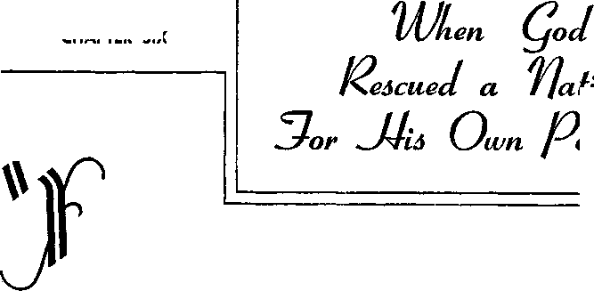Nation
oMetoNation
SHALL make a great nation out of you." (Genesis 12:2) This was the purpose that God made to his friend Abraham. God always keeps his purposes. How did he keep this purpose to Abraham? God kept this purpose to make a nation out of Abraham when he delivered the Israelites from slavery in Egypt.
2 But what did the Israelites have to do with Abraham? Well, Abraham had a son called Isaac, and Isaac had a son called Jacob, and then Jacob had twelve sons. Jacob was also called Israel; so his sons and their children were called Israelites. They formed the nation of Israel, and Abraham was the forefather of this nation. So the Israelites were a nation that came from Abraham, just as God had purposed.
3 The nation of Israel was made up of twelve tribes, each one of the twelve sons of Jacob, or Israel, being the head of one tribe. Each tribe was known by the name of the son that was its head. Jacob died in Egypt, and just before his death he blessed his twelve sons, each one getting a separate blessing from Jacob. To his son Judah the father Jacob said: “The sons of your father will bow down to you. The scepter will not turn aside from Judah, neither the commander’s staff from between his feet, until Shiloh comes, and to him the obedience of the people will belong.”—Genesis 49 :8, 10.
4 What did this blessing given to Judah mean? It meant that the kingly rulers of the nation of Israel would come from the tribe of Judah. This would be so “until Shiloh comes.” Who is meant by Shiloh? The one whose right it would finally be to rule the world. It is the same one we read about at Genesis 3:15, where it told that this powerful one was to come and bruise or crush the head of the wicked Serpent, Satan the
1. What purpose did God make to Abraham? 2. How were the Israelites related to Abraham? 3. What blessing did Jacob give to Judah? 4. What did this blessing given to Judah mean?
54
Devil. The obedience of all people will belong to this One who crushes Satan. In Genesis 49:10 this one is called Shiloh, but in other places the Bible calls him Jesus Christ, the Son of God.
5 But when Jacob told Judah that the kings of Israel would come from the tribe of Judah, the Israelites were guests in Egypt. How did the Israelites become guests in Egypt? While the Israelites were still living in the land of Candan, there was a very bad food shortage. They would die if they did not get food, but the only place there was food was in Egypt. This was so because one of Jacob’s sons, Joseph, had been taken to Egypt years earlier, and to Joseph God had made known the coming food shortage. Joseph told Pharaoh, the ruler of Egypt, and Pharaoh made Joseph his chief officer and ordered lots of food to be stored up before the famine came. As a result, ‘‘famine developed in all the lands, but in all the land of Egypt there was found bread.”—Genesis 41:54.
6 “Moreover, people of all the earth came to Egypt to buy from Joseph, because the famine had a strong grip on all the earth.” (Genesis 41.57} The Israelites came to Egypt for food also. They remained in Egypt to live, and because of being relatives of Joseph they were shown favor by Pharaoh. Many years passed. A new ruler of Egypt, another Pharaoh, came into power. He feared the increasing numbers of the Israelites. He made them slaves. He made them work very hard. He was cruel to the Israelites. He even tried to kill all the male babies born to the Israelite women. But Pharaoh failed, and the Israelites kept on increasing.
7 One Israelite woman put her male baby in a basket and hid it among the reeds along the bank of the river Nile. The baby’s sister watched from a distance and saw Pharaoh's daughter find the baby. Pharaoh's daughter called the baby Moses, and it grew to manhood. Although Moses was raised in Pharaoh’s house, he was an Israelite and he fought for the Israelites. Finally Moses had to flee from Egypt to escape, because Pharaoh was gdoing to kill him. Moses lived in the land of Midian for forty years.
8 While Moses was in Midian the cruel Pharaoh died, but the new king of Egypt also was very mean to the Israelites, who were still slaves in Egypt. It was time for Jehovah God to deliver his nation of Israel from
5. Why was there food in Egypt when other lands had none? 6. How did the Israelites become slaves in Egypt? 7. How did Moses get saved and finally come to live in Midian? 8. What did Jehovah God say to Moses while Moses was working as a shepherd?
Egypt. Now a very strange thing happened. While Moses was shepherding some sheep near Mount Horeb on Sinai Peninsula a bush was on fire, but the bush did not burn up. Moses turned aside to look at the strange sight, and God spoke to him out of the burning bush. Jehovah God said to Moses.- “Unquestionably I have seen the affliction of my people who are in Egypt, and I have heard their outcry as a result of those who drive them to work, because I well know the pains they suffer. And I am proceeding to go down to deliver them out of the hand of the Egyptians and to bring them up out of that land to a land good and spacious, to a land flowing with milk and honey.” Then God said to Moses: “Now come and let me send you to Pharaoh and you bring my people the sons of Israel out of Egypt.”—Exodus 3 :7, 8, 10.
9 Moses went back to Egypt. Moses and his brother Aaron went before Pharaoh and told Pharaoh that their God, whose name is Jehovah, wanted the Israelites to go outside of Egypt to worship. Pharaoh replied: “Who is Jehovah, so that I should obey his voice to send Israel away? I do not know Jehovah at all and, what is more, I am not gdoing to send Israel away.” (Exodus 5 :2) Pharaoh did not mean that he had never heard of Jehovah. He knew Jehovah was the God of the Israelites. When Pharaoh said he did not know Jehovah he meant that he did not admit that Jehovah was a powerful God that had to be obeyed. Pharaoh did not know or recognize Jehovah as the all-powerful God. He thought the false gods of Egypt were stronger than Jehovah, the God of the nation of Israel. So this angry Pharaoh made the Israelites work all the harder.
10 “Now you will see what I shall do to Pharaoh,” Jehovah said to Moses. Jehovah God also told Moses that he remembered the purpose he had made to Abraham and to Isaac and to Jacob. God said he would keep that purpose and deliver Israel from Egypt and give them the land of Candan to live in. Jehovah God told Moses to say to the Israelites: "I am Jehovah, and I shall certainly bring you out from under the burdens of the Egyptians and deliver you from their slavery, and I shall indeed reclaim you with an outstretched arm and with great judgments. And I shall certainly take you to me as a people and I shall
9. What did Pharaoh say when Moses told him Jehovah said Israel should go free? 10. Now what did Jehovah purpose the Israelites?
indeed prove to be God to you and you will certainly know that I am Jehovah your God who is bringing you out from under the burdens of Egypt. And I shall certainly bring you into the land that I raised my hand in oath to give to Abraham, Isaac and Jacob, and I shall indeed give it to you as something to possess. I am Jehovah.”—Exodus 6:1,6-8.
11 So Jehovah God sent Moses and Aaron to Pharaoh again. Moses did signs and wonders before Pharaoh, things men could not do in their own power. But Pharaoh was stubborn. He would not admit that Jehovah was a strong God, and he would not let Jehovah’s nation of Israel go free. Then God brought ten plagues or woes on Egypt. God did this to show his power, and to show Pharaoh that Jehovah was a God that must be obeyed. The record or story of these ten plagues is in the Bible book of Exodus, chapters seven to twelve.
12 In the first plague God turned the waters of the Nile River into blood. The second plague was the causing of frogs to come up over the land of Egypt. In the third plague the dust became gnats. The fourth plague was swarms of gadflies. The fifth plague was a pestilence or disease upon the flocks and herds of the Egyptians. Next came a plague of boils on man and beast, and it was after this sixth plague that Jehovah told Pharaoh the reason for the plagues: “To the end that you may know that there is none like me in all the earth. But, in fact, for this cause I have kept you in existence, for the sake of showing you my power and in order to have my name declared in all the earth.” —Exodus 9:14,16.
13 Jehovah asked Pharaoh: "Are you still behaving haughtily against my people in not sending them away?” (Exodus 9:17) Pharaoh kept on behaving haughtily and in a stubborn way; so Jehovah sent the seventh plague, a heavy hail that ruined crops and killed animals caught out in it. Next came a plague of locusts, and the ninth plague was one of darkness throughout the land. Before each plague Moses warned Pharaoh it was coming. When each one came, Pharaoh begged Moses to have God stop it. Pharaoh purposed he would let Israel go free. But when the plague stopped, Pharaoh went back on his word and would not let Israel go.
11. Why did Jehovah bring the ten plagues on Egypt? 12. What were the first six plagues? 13. What were the next three plagues?
14 But when the tenth plague came, Pharaoh let the Israelites go out of Egypt. In the tenth plague the first-born of every Egyptian family was killed, and the first-born of every beast was also killed. What did Pharaoh do when this happened? The Bible tells us.- “Then Pharaoh got up at night, he and all his servants and all other Egyptians, and there began arising a great outcry among the Egyptians, because there was not a house where there was not one dead. At once he called Moses and Aaron by night and said: ‘Get up, get out from the midst of my people, both you and the other sons of Israel, and go, serve Jehovah, just as you have stated. Take both your flocks and your herds, just as you have stated, and go. Also, you must bless me besides.’ ”—Exodus 12 : 30-32.
15 None of the first-born sons of Israel died because of this tenth plague. The first-born of Israel were spared because the Israelites kept a special feast, called the passover, which Jehovah told them to keep on the night of the fourteenth day of the month Nisan. They ate a roasted lamb, along with bitter greens and some bread that was unfermented. In other words, the bread had no yeast or leaven in it. The Israelites also took some of the blood from the lamb and splashed it upon the doorways of the homes they were in, and when Jehovah saw this blood on the doorposts he passed over that home, not killing the first-born in it. That is why the feast is called the passover, and of it Jehovah said to the Israelites: “You must celebrate it as a festival to Jehovah throughout your generations.”—Exodus 12:14.
16 Jehovah had told the Israelites to be prepared to march when they ate this feast of the passover. He had told Moses that Pharaoh would let Israel go after this plague, and the Israelites were to be ready to march out right away. What Jehovah had said proved to be true. The Egyptians let them go. In fact, the Egyptians urged them to get out. The Egyptians now feared Jehovah the God of Israel, so much so that they said: “We are all as good as dead!” (Exodus 12:33) The Egyptians even gave the Israelites much gold and silver and clothing to take along with them. And when the Israelites did march out of Egypt, many people who were not Israelites marched out with them. These people now believed that Jehovah was the true God and they wanted to serve Jehovah also. There must have been a great crowd of these people,
14. What did Pharaoh say when the tenth plague came? 15. By keeping what feast were the Israelites spared from the tenth plague? 16. What happened right after the feast of the passover?
because the Bible says they were “a vast mixed company.” (Exodus 12:38) This was 430 years after Abraham crossed the Euphrates River into the purposed land of Candan, or in 1513 B.C.
17 Now a strange thing happened, and it shows just how stubborn Pharaoh was. After the Israelites had left Egypt, Pharaoh’s heart got hard again. He wanted to get the Israelites back. He wanted to regain all this slave labor that he had lost when Israel left Egypt. So both Pharaoh and his servants cried out: "What is this that we have done, in that we have sent Israel away from slaving for us?” (Exodus 14:5) Pharaoh went in hot pursuit with his mighty armies, and he came upon Israel where Israel camped on the shore of the Red Sea. The Israelites were very much afraid, but Moses said to them: “Do not be afraid. Stand firm and see the salvation of Jehovah, which he will perform for you today. For the Egyptians whom you do see today you will not see again, no, never again. Jehovah will himself fight for you and you yourselves will be silent.”—Exodus 14:13,14.
18 Jehovah God made these words of Moses come true. Jehovah caused the waters of the Red Sea to part by means of a strong wind, and “at length the sons of Israel went through the midst of the sea on dry land, while the waters were a wall to them on their right hand and on their left.” What did the Egyptians do? "And the Egyptians took up the pursuit and all the horses of Pharaoh, his war chariots and his cavalrymen began gdoing in after them, into the midst of the sea." When the Israelites got out of the sea, “the sea began to come back to its normal condition at the approaching of morning. All the while the Egyptians were fleeing from encountering it, but Jehovah shook the Egyptians off into the midst of the sea. And the waters kept coming back. Finally they covered the war chariots and the cavalrymen belonging to all of Pharaoh’s military forces and who had gone into the sea after them. Not so much as one among them was let remain.”—Exodus 14:22, 23, 27, 28.
19 How did Israel feel when Jehovah saved them? They got more faith in Jehovah: “Thus on that day Jehovah saved Israel from the hand of the Egyptians, and Israel got to see the Egyptians dead on the seashore. Israel also got to see the great hand that Jehovah put in action against
17. How did Pharaoh show that he was stubborn and that he had a hard heart? 18. How did Jehovah save Israel and destroy Pharaoh's armies? 19. How did Israel feel when Jehovah saved them?
20. So what purpose to Abraham did Jehovah keep? 21. Why did Jehovah save Israel?
the Egyptians, and >
the people began to «
fear Jehovah and to put faith in Jehovah and in Moses his servant." (Exodus 14:30,31) The nation sang a song of victory, praising Jehovah greatly.
20 So Jehovah kept the purpose he had made long before to Abraham: "You may know for sure that your seed will become a temporary resident in a land not theirs, and they will have to serve them and these will certainly afflict them for four hundred years. But the nation that they will serve I am judging, and after that they will go out with much property." (Genesis 15:13, 14) Israel did suffer as slaves in Egypt for a time, but finally Israel did leave Egypt as a free nation, and with much Egyptian property of great value.
21 Why did Jehovah do this for Israel? "It was because of Jehovah’s loving you and because of his keeping the sworn
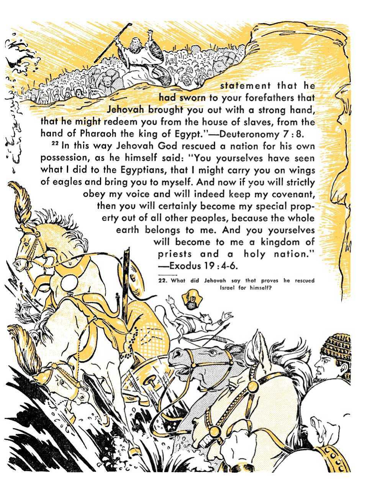CHAPTER SEVEN
JEHOVAH GOD had rescued his nation of Israel from slavery in Egypt. Now started many years of life for them in the dry wilderness country between Egypt and the land of Candan. Now also started the time for writing a record of God's dealing with his nation of Israel.
2 Why should this record be written down? It would help the nation of Israel. The nation could look back and see how God dealt with them.
They could look back and see what pleased God and what displeased God. Then they could do the things that pleased God, and they could keep from ddoing the things that God did not like. The nation would also remember how Jehovah had rescued this nation from slavery in Egypt. Hundreds of years later members of this nation could read how Jehovah God had brought the ten plagues on Egypt, and how the Red Sea had parted to let Israel walk through it, but how the waters had closed in on Pharaoh's armies and drowned them. The Israelites could read and remember the many, many times Jehovah God punished them when they did wrong and how God saved them when they did right. So this written record would help them stay close to their God, Jehovah.
3 Also, God had this record written down for people that now live on the earth. This record, the Bible, is also called the Scriptures. At Romans 15:4 we are told that the Scriptures were written to instruct us or to tell us things we need to know: “For all the things that were written aforetime were written for our instruction, that through our endurance and through the comfort from the Scriptures we might have hope.” It is important for us to know what happened to Israel and to know how God dealt with Israel, because these things happened to the Israelites as
1. Who! was it time for after Israel was rescued from Egypt? 2. How would it help Israel to have the written Bible record? 3. How is this Bible record a help to people on earth now?
62
examples to us. We can learn how to act by knowing what the Israelites did that was right and what they did that was wrong. We can be warned by knowing their mistakes, as the Bible tells us: "Now these things went on befalling them as examples and they were written for a warning to us upon whom the accomplished ends of the systems of things have arrived.”—1 Corinthians 10:11.
4 So we see that there are many good reasons why God had the record of these things written down. Now we want to think about another question, and that question is: How did this record, or the Holy Bible, as it is called, begin to be written? Moses was the man God used to lead the Israelites out of Egypt, and Moses was also the one God used to lead the work of writing the Bible. After Moses died other men wrote parts of the Bible. Down through the years new parts or writings were added to the Bible, and it was nearly sixteen hundred years after Moses’ death before the Bible was all done. Then the Bible was complete, and it was shortly after this time that all these parts or writings were put together in one book. That book is now called the Bible.
5 In the time of Moses it was God himself that started off the work of writing the Bible. It was in the third month after Israel had left Egypt, in 1513 B.C. It was in the wilderness of Sinai. Moses went up into the mountain of Sinai, and there on Mount Sinai God gave laws and commandments to Moses. These laws and commandments were given to show the nation of Israel the right way to go, and to warn the nation not to do some things that God hated. There were many laws given, but the first ten of them were outstanding. In a few words these ten laws stated the main commands that were to guide the nation. They are known as the Ten Commandments. It was these Ten Commandments that God wrote on two slabs or tablets of stone. When God finished speaking to Moses on Mount Sinai, "he proceeded to give Moses two tablets of the testimony, tablets of stone written on by God’s finger.” “And the tablets were the workmanship of God, and the writing was the writing of God engraved upon the tablets.” (Exodus 31:18; 32 :16) So in this way God himself did part of the writing of the Bible.
6 Moses wrote under the direction of God. Before reaching Mount
4. How was the Bible written over a long period of time? the Bible? 6. What man led in writing the Bible?
5. How did God himself do part of the writing of
Sinai Moses had been commanded by God towrite, as we read: “Jehovah now said to Moses: ‘Write this as a memorial in the book.’ (Exodus 17:14) So it was Moses who led in writing the Bible. God told him to. God guided or inspired Moses to put down the right things.
7 Moses wrote more than just the laws that God told him on Mount Sinai. Moses wrote about how God created or made the starry heavens and the earth. He wrote down how God made the oceans and the dry land, and how God made plants to grow on the earth and how he also made animals to live on the earth. Moses also told how God made the first man and woman. Moses did not see these things happen; and he wrote down many other things that took place long before he ever lived. How did Moses know about these things that happened long before he was living? Well, the first man, Adam, knew how to write. Adam wrote down the things God had told him about the creation of the heavens and the earth. Adam called this writing he did “a history of
7. How did Moses know what happened in Adam’s time so Moses could write it into the Bible? the heavens and the earth in the time of their being created.” Adam also wrote down things that happened to himself, and he wrote about things that happened to his wife Eve, and he wrote down what happened to his offspring or children. The writing of these things Adam called "the book of Adam’s history.”—Genesis 2 :4;5:1.
8 After Adam wrote these things and died, other men wrote down things that happened after that. Just as Adam had done before them, they wrote these things on clay tablets. Men saved these tablets so that marry years later they could learn what happened before they lived. Moses could read what was written on these tablets, and when he started to write the opening part of the Bible he copied down what these tablets said. He copied down what Adam had written, and what others after Adam had written. That is how Moses knew what to write in the first part of the Bible about creation, the flood of Noah's day and things about Abraham and Isaac and Jacob. Also, the things that happened just a hundred years or so before his birth Moses could learn about from his father Amram. And during all this writing by Moses, Jehovah God saw to it that what was written down was true.
9 Then, of course, Moses wrote down the things that happened during his lifetime. He is the one who wrote down what we know about the ten plagues in Egypt, and how the nation of Israel was rescued from slavery by God. Moses wrote down most of the laws God gave at Mount Sinai that were to guide the nation in the right way. Israel traveled around in the wilderness country between Egypt and the land of Candan, and Moses was with them and wrote down a record of the nation's travels. Moses was with Israel during the forty years that the nation was in the wilderness, but he died before the nation entered the purposed land of Candan. What Moses
8. What other things did Moses learn about from clay tablets? 9. How much of the Bible did Moses write before he died?
wrote before he died is now the first five books of the Bible, and a Bible book called Job, and a poetic song or two called “psalms.”
’° After Moses' death other men wrote more small books or rolls, or scrolls, as they might be called. Some of these books are a record of the events that happened to the nation of Israel. Other books are made up of poems that praise Jehovah God or of wise sayings that guide us in the right way to act. Still other Bible books tell what is to happen in the future, and writing that does this is called “prophecy.” Some of these written prophecies in the Bible have been fulfilled. By that we mean that what these writings said would happen have now taken place. But many of the writings telling about the future are yet to be fulfilled or are yet to come to pass. So the Bible gives a history or a record of past events. It gives laws and wise sayings and advice to guide us in the right way. It calls attention or notice to Jehovah God's greatness and power and wisdom, showing us that he is the true God and that we should worship and serve him. And the Bible also has prophecies or writings that tell us what will come to pass in the future, in the time yet to come.
11 When the Bible began to be written, it was written in the language of the Israelites. That language is called Hebrew. The first thirty-nine small books of the Bible are written mainly in Hebrew, but in some of these later books there are parts written in the language called Ar a ma ic. Because the first thirty-nine books of the Bible are written in Hebrew, they are called the Hebrew Scriptures. Some people cal’ this part of the Bible the “Old Testament,” but that is wrong to say. The last twenty-seven books of the Bible are written in the ancient Greek language, and all these books together are called the Greek Scriptures. Some people call them the “New Testament,” but this is also wrong to say. When we take the thirty-nine books of the Hebrew Scriptures and the twenty-seven books of the Greek Scriptures and put them together, we have sixty-six little books. All together, these sixty-six little books make up the one big book that is called the Holy Bible.
12 The Holy Bible is the true Word of Jehovah God. It was written over a long period of time, sixteen hundred years, as we have said before. It was written by men. Some men, like Moses, wrote more than one of the books of the Bible. Other men wrote only one book of the Bible.
10. What different kinds of writing or subjects are covered tn the Bible?
11. What different languages was the
Bible first written in? 12. What different kinds of men wrote the Bible?
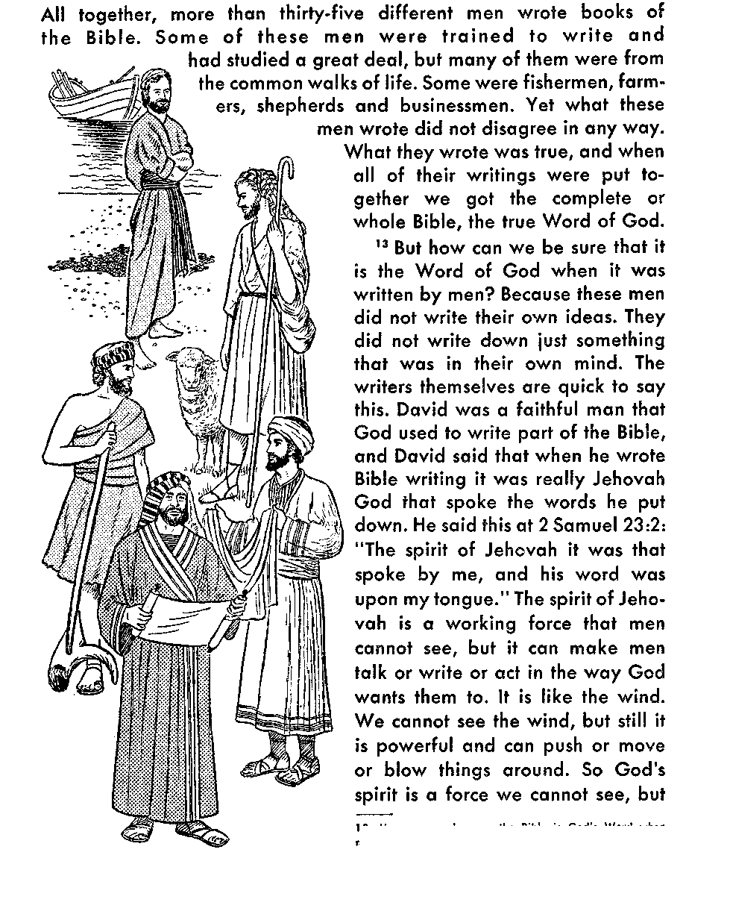13. How can we be sure the Bible is God’s Word when men wrote it?
it can move us to do or say or write what he wants us to. So it was this spirit of Jehovah that made David write God’s words.
14 It was also this same spirit of Jehovah that made the other men who wrote parts of the Bible put down just what Jehovah wanted written down. For example, one of the Bible writers, named Luke, wrote about Jehovah God: “He, through the mouth of his holy prophets from of old, has spoken.” (Luke 1 :70) The men who wrote prophecies, those writings that told what was gdoing to come to pass in the future, were called “prophets.” God spoke through them. He put his words in their mouth. Men could not say what was gdoing to happen before it happened. But God could, and he did by putting his words in the mouth of these men he used as prophets. A man could not just will or decide to prophesy on his own. What he said in that way would not come to pass in the future. True prophecy comes when God’s spirit shows the man what to say. That is what the Bible writer Peter meant when he said: “No prophecy of Scripture springs from any private release. For prophecy was at no time brought by man’s will, but men spoke from God as they were borne along by holy spirit.”—2 Peter 1 : 20, 21.
15 So all Scripture, all Bible writing, is God's Word even though men wrote it down. God caused them to write what he wanted, and he did this by using his spirit on those men to move them to do his will and to speak and write his words. And because all this Scripture is God’s Word, it is good for us to study. It will teach us what is right. It will show us when we go wrong. It will make us able to serve God. All this Scripture will make it possible for us to do good works. The Bible tells us all this: “All Scripture is inspired of God and beneficial for teaching, for reproving, for setting things straight, for disciplining in righteousness, that the man of God may be fully competent, completely equipped for every good work.”—2 Timothy 3 :16,17.
16 “The word spoken by Jehovah endures forever,” says the Bible at 1 Peter 1 :25. This means that God's Word lasts. It is true. It is never proved to be false and thrown aside as not worth anything. So we can depend on what God's Word, the Holy Bible, tells us. By inspiration He wrote it for us. We should study it and believe it and obey it. Then we shall last forever. God will give us everlasting life if we obey the Holy Bible. 14. How do we know that it was God’s spirit that caused prophecies to be written? 15. What good is the Bible to us? 16. How long will the Bible last?
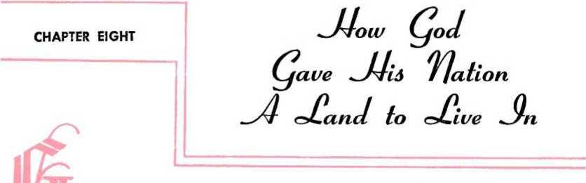OD purposed Abraham that the seed or offspring of Abraham would become a great nation. God also purposed to give this nation a land to live in. God showed the land of Candan to Abraham and said: “To your seed I am gdoing to give this land."—Genesis 12:7.
2 Hundreds of years later God rescued Abraham’s offspring from slavery in Egypt. But to get to Candan from the border of Egypt the Israelites had to travel through a dry wilderness. It took them months to do it. When they got to the border of Candan, Moses sent spies into Candan. When the spies returned they said: “We entered into the land to which you sent us out, and it is indeed flowing with milk and honey, and this is its fruitage. Nevertheless, the facts are that the people who dwell in the land are strong and the fortified cities are very great." And giants are in the land, “so that we became in our own eyes like grasshoppers, and the same way we became in their eyes." (Numbers 13:27,28,33} The people were afraid to enter the land. Twelve spies had gone into the land. Ten of the spies were also afraid to enter the land. But two spies were not afraid of the enemies in Candan, because, as one spy said: “Jehovah is with us. Do not fear them.”—Numbers 14:9.
3 But the people did not trust in Jehovah. They refused to enter the land of Candan. God had purposed to drive out the enemies from Candan, but the Israelites did not believe God and so the Israelites refused to go into Candan. This displeased Jehovah. To punish them God made them wander in the wilderness for forty years. But God did not leave them without his help. He guided the nation day and night, as one Bible writer said: “By a pillar of cloud you led them by day, and by a pillar of fire by night, to light up for them the way in which
1, What land did God purpose io give to Abraham’s seed? 2. Why were the Israelites afraid fa enter the land of Candan? 3* How did God punish and yet help the Israelites?
69
70

at the
they should go." (Nehemiah 9:12) God did not let them go hungry. He fed them a special kind of bread called manna: "The sons of Israel ate the manna forty years.” (Exodus 16:35) God kept them clothed and able to travel. He could say to them: "Your clothing did not wear out upon you, nor did your foot become swollen these forty y —Deuteronomy 8 :4.
4 The forty years passed. Israel was now eastern border of Candan. Moses died at this time but before he died he gave Israel much good ad vice about being true to God. In his talks with
Israel he described the land of Candan that God was now gdoing to give to the nation, saying: "You must keep the commandments of Jehovah your God by walking in his ways and by fearing him. For Jehovah your God is bringing you into a good land, a land of torrent valleys of water, springs and great quantities of water issuing forth in the valley plain and in the mountainous region, a land of wheat and barley and vines and figs and pomegrandtes, a land of oil olives and honey, a land in which you will not eat bread with scarcity, in which you will lack nothing, a land the stones of which are iron and out of the mountains of which you will mine copper.” (Deuteronomy 8 :6-9) It was a very good land that God was now gdoing to give his nation to live in!
5 After Moses died, a faithful man named Joshua took the place of Moses as head of the nation. Joshua was to lead the Israelites into Candan, and he must lead soldiers in battle against the enemies that were in the land of Candan. If Joshua acted right, God would help Joshua win the wars. The only way Joshua could be sure of acting right was to study God’s laws and obey them, just as God told Joshua: "Only be courageous and very strong to take care to do according to all the law that Moses my servant commanded you. Do not turn aside from it
4. What kind of a land was it that God was gdoing to give to Israel? 5. What did God tell Joshua? to the right or to the left, in order that you may act wisely everywhere you go. This book of the law should not depart from your mouth and you must in an undertone read in it day and night in order that you may take care to do according to all that is written in it, for then you will make your way successful and then you will act wisely. Have I not commanded you? Be courageous and strong. Do not suffer shock or be terrified, for Jehovah your God is with you wherever you go.” —Joshua 1:7-9.
6 Jehovah helped the Israelites under Joshua right at the start. To get into Candan they had to cross a river called Jordan. It was very high. It was at the flood stage. It would be very dangerous for men to cross, but now a nation with women and children and many possessions or goods wanted to cross. God made it possible. God stopped the waters coming down from above, just as if the stream had been dammed up. God’s nation crossed on the dry river bed. The priests of Jehovah ‘‘kept standing immovable on dry ground in the middle of the Jordan as all Israel were passing over on dry ground, until the whole nation had completed passing over the Jordan.”—Joshua 3:17.
7 The enemy city of Jericho was nearby. It was a very strong city, with big walls around it to protect it. It was the first city that Israel must take or capture in the land of Candan. Those who lived in the city were afraid because of the Israelites. They shut themselves up in their city, behind the walls of the city. But God fought for Israel. For seven days the Israelites marched around the city. On the seventh day the Israelites shouted and the priests blew trumpets and God caused the wall of the city to fall down. The Bible says: ‘‘And it came about that as soon as the people heard the sound of the trumpet and the people began to shout a great war cry, then the wall began to fall down flat. After that the people went up into the city, each one straight before him, and captured the city.”—Joshua 6:20.
8 Later, another battle was fought. God would make Joshua win. When the fight started, those fighting Israel
6. How did God help the Israelites enter Candan? 7. How did God give the Israelites their first victory in Candan? 8. What great wonder did God do to give Israel another victory?
got all mixed up and they began losing the battle. They began to run. As they ran away God threw big hailstones down on them, "and more got to die who died from the hailstones than those whom the sons of Israel killed with the sword.” (Joshua 10:11) In this battle something happened that was a great wonder. It was something that had never happened
before, and it shows that God was surely helping his nation of Israel.
The day was growing short and Joshua needed more daylight to see by, so he could keep on fighting the enemies. Joshua now told the sun and the moon to stand still. And they did! The Bible says: "And the sun kept standing still in the middle of the heavens and did not hasten to set for about a whole day. And no day has proved to be like that one, either before it or after it, in that Jehovah listened to the voice of a man, for Jehovah it was who was fighting for Israel.”—Joshua 10:13,14.
9 Why did God help Israel win? God helped Israel win for two reasons. One reason was that God had purposed to give the land to the seed or offspring of Abraham. God owns the whole earth and he owns
9. What was one reason for God's helping Israel win battles?
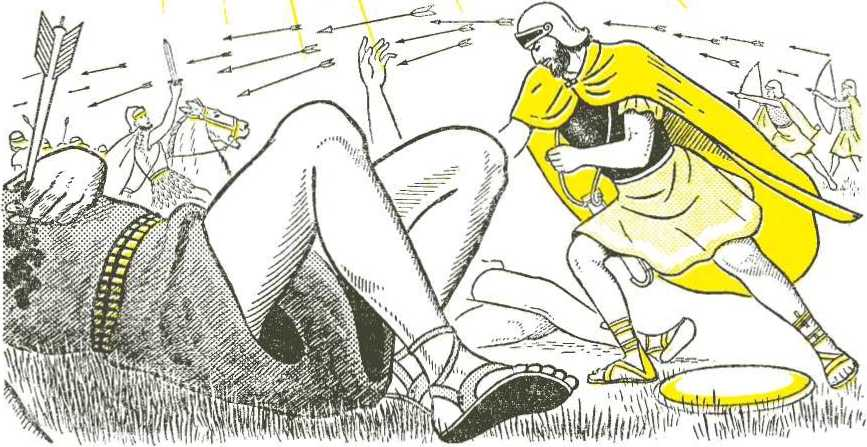everything in the earth. The Bible says so: “To Jehovah belong the earth and that which fills it, the productive land and those dwelling in it." (Psalm 24:1) So God can give land to anyone he wants to, and he wanted to give this part of the earth to Israel. He had purposed to do this.
10 The second reason that God helped Israel win the wars was to get the people already in Candan out of the country. These people of Candan were very wicked. They were cruel and filthy and very bad. They served false gods. They were opposed to Jehovah the true God. They bowed down to idols. They served images. They did things that were very unclean. Their religion was false and full of lies. It was unclean, and it made the people that followed it unclean, and they made the land they lived in unclean. So Jehovah God was gdoing to clean up the land by getting these bad people off the land. Because the people were unclean, God said: “Consequently the land is unclean, and I shall bring punishment for its iniquity upon it and the land will vomit its inhabitants out." (Leviticus 18:25) Moses told Israel: “It is for the wickedness of these nations that Jehovah is driving them away from before you.”—Deuteronomy 9 :4.
” God told the Israelites to chase all these bad people out of the land or to put them to death. God told his nation to make no agreements with these bad people. Israelites were not to marry any of these people. Israel was to tear down the idols of these people who served false gods. God ordered his people to do this for their own safety: "You must consume all the peoples whom Jehovah your God is giving to you. Your eye must not feel sorry for them, and you must not serve their gods, because that will be a snare to you." (Deuteronomy 7:16) To live with these bad people would be a snare or a trap to catch Israel. If these bad people 10. What was the second reason that God helped Israel win? 11. Why was it for Israel's good to kill the bad people in Candan?
stayed in the land they would act wrong, and the Israelites would begin to copy them and start ddoing wrong also. This would make Israel unclean, and again the land would become unclean, and then God would throw Israel out of the land to clean up the land. So to keep Israel good and the land clean the bad people must be wiped out of the land.
12 God fought for Israel to get rid of these bad people. God gave many victories to Joshua. The Israelites took over much of the land, and the land was divided among the twelve tribes of the nation of Israel. But Joshua was getting old, and still there was much land to be taken from the enemies. Joshua told Israel that if they kept true to God, then God would finish driving out all the bad nations. Joshua also said that if the Israelites did not stay true to God but began to join in with these evil nations, then these evil nations “must become to you as a trap and as a snare and as a scourge on your flanks and as pricks in your eyes until you have perished off this good ground that Jehovah your God has given you.”—Joshua 23:13.
13 When it was time for Joshua to die, Joshua talked to all the Israelites. He talked to them about the past. He reminded them of how Jehovah had been with them, helped them and brought them into his purposed land. Joshua told them they could choose whom they wanted to serve: “Now if it is bad in your eyes to serve Jehovah, choose for yourselves today whom you will serve.” But Joshua said: “As for me and my household, we shall serve Jehovah.” And the people said: “It is unthinkable on our part to abandon Jehovah so as to serve other gods.” (Joshua 24:15, 16) Joshua told the Israelites to keep on driving out the bad nations. God would help them if they served God. The
Israelites this.
12. What would true to God?
have Israel make?
purposed to do
happen if Israel did not stay 13. What choice did Joshua
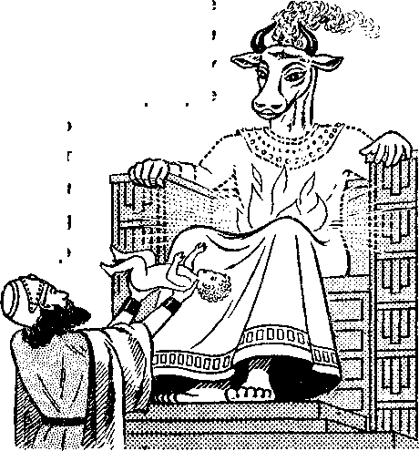14 But the Israelites did not keep this purpose. After Joshua died they did not remain true to Jehovah God. They did serve the false gods. So Jehovah God did not help Israel drive out the bad people in the land of Candan. These evil ones stayed in the land for a long time. Jehovah let them stay as a test to his nation of Israel, to see whether Israel would serve the true God Jehovah or the false gods of these wicked nations. Jehovah told Israel this, saying: “For the reason that this nation have overstepped my covenant that I commanded their forefathers and have not listened to my voice, I, too, for my part shall not drive out again from before them a single one of the nations that Joshua left behind when he died, in order by them to test Israel, whether they will be keepers of Jehovah's way by walking in it just as their fathers kept it, or not.”—Judges 2 :20-22.
15 It was hundreds of years after the death of Joshua that a faithful king of Israel did come and fully take over the land purposed to Abraham. The name of this king was David. He was a very humble man and loved God very much. David also was a brave warrior. He trusted in Jehovah, and David was not afraid to fight those who were not on Jehovah's side. David fought against these bad people that were still in the land. David won, too, because Jehovah God helped him to win. Finally all the enemies were beaten. By the time that David's son named Solomon ruled Israel in place of his father David, all the land of Candan was in the hands of Israel. All the kings of the bad nations that were yet in the land were under Solomon's rule. The Bible says: “And he came to be ruler over all the kings from the River down to the land of the Phi lis tines and down to the boundary of Egypt.” (2 Chronicles 9:26) So it was in this way that God kept his purpose to Abraham to give Abraham’s seed the land of Candan, “a land flowing with milk and honey.” (Exodus 3:8) The question that now had to be answered was, Would they prove worthy to keep living in that God-given land? This depended on their worshiping God with the true religion that he gave them.
14. Why were the bad nations not quickly driven out? 15. How did all the purposed land finally come under Israel's rule?
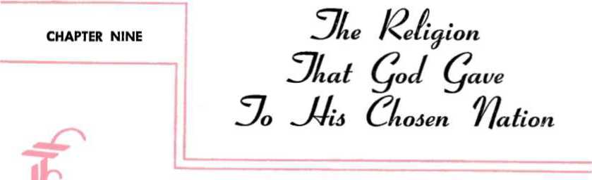JEHOVAH GOD had rescued his nation of Israel from slavery in Egypt. God wanted Israel to do what is right. But the Israelites were only men, and the Bible says: “It is not in man who walks to direct his steps." Also, “There exists a way that is upright before a man, but the ways of death are the end of it afterward." {Jeremiah 10:23, RS; Proverbs 14:12) Jehovah God is the One who knows what is right. So “trust in Jehovah with all your heart and do not lean upon your own understanding. In all your ways take notice of him, and he himself will make your paths straight." How does God direct us? By his Word, the Bible: “Your word is a lamp to my foot, and a light to my roadway.” —Proverbs 3 :5, 6; Psalm 119:105.
2 The Bible will show us the right way to go. The Bible will also show us how God gave the true religion to his people Israel. It will show us just what that religion was.
3 In the third month after Israel left Egypt, Israel was camped at Mount Sinai. It was here that God gave his laws and commands to Israel. God gave the Law to Moses on Mount Sinai. God's great glory was on the mountain, and because of that glory the mountain shook. There were thunder and lightning and heavy clouds. The Israelites were afraid, but Moses was up in the mountain to hear what God said. The Bible tells us about this, saying: “It came about that thunders and lightnings began occurring, and a heavy cloud upon the mountain and a very loud sound of a trumpet, so that all the people who were in the camp began to tremble. Moses now brought the people out of the camp to meet God, and they went taking their stand at the base of the mountain. And Mount Sinai smoked all over, due to the fact that Jehovah came
1. How may men go in the right way? 2. What will show us the true religion? 3. What happened when God gave his law to Moses?
down upon it in fire, and its smoke kept ascending like the smoke of a kiln, and the whole mountain was quaking very much. When the sound of the trumpet became continually louder and louder, Moses began to speak and God began to answer him with a voice. Then Jehovah came down upon Mount Sinai to the top of the mountain and Jehovah called Moses to the top of the mountain and Moses went on up.” —Exodus 19:16-20.
4 The first laws God gave Moses were the Ten Commandments. These commands can be read at Exodus 20:2-17. It is good for us to know what these commands were, because they said in a few words what the main parts of God's law were. The first one is very important. It was: "You must never have any other gods against my face.” This means one must not put any other gods ahead of Jehovah. Jehovah must be first. We must worship Jehovah alone. We must worship this one true, almighty God.
5 The second command is a very important one also. It says: “You must not make for yourself a carved image or a form like anything that is in the heavens above or that is on the earth underneath or that is in the waters under the earth. You must not bow down to them nor be induced to serve them, because I Jehovah your God am a God exacting exclusive devotion.” Many people make images and bow down in front of these images. Many religions tell their followers to do this. God tells us not to. We should obey God. We should not use images in worship. We should not follow religions that use idols.
6 “You must not take up the name of Jehovah your God in a worthless way.” That is the third commandment. It means that when we take God’s name and say we will witness or speak for him, then we must do just that. We must live up to the good things that his name stands for. We must tell of his glory and power and wisdom and goodness and love. If we say we are one of Jehovah's witnesses we must witness or speak for Jehovah. If we do not speak for God and honor him, we are taking his name in a worthless way. We break his commandment.
7 The fourth command was that Jehovah’s people should not do work on the seventh day of the week. The fifth command was to honor
4. What was the first one of the Ten Commandments? 5. What was the second commandment? 6. What was the meaning of the third commandment? 7. What did the rest of the Ten Commandments say? your father and mother. The sixth command said you must not murder anyone. The seventh said the sex act was to be used only between husband and wife. The eighth told Israel not to steal. The ninth said not to say anything untrue about other people. The tenth told Israel not to desire the things that belonged to someone else. It was God himself that wrote down these Ten Commandments for Moses. God wrote them on two tablets or smooth slabs of stone. The Bible says: “And the tablets were the workmanship of God, and the writing was the writing of God engraved upon the tablets.”—Exodus 32:16.
8 But these Ten Commandments were only a small part of the law that God gave to Moses on Mount Sinai. Moses was a long time on the mountain getting the law. The Bible says-. “And he continued there with Jehovah forty days and forty nights. He ate no bread and he drank no water." (Exodus 34:28) God told Moses many laws to show how the people should act.
9 This religion that God gave to Israel told Israel to put up a tent or tabernacle. God told Moses just how it should be made. It was to have an altar, a place for offering sacrifices to Jehovah God. The priests of this true religion were told to offer these sacrifices. Some offerings were to be sacrifices of animals; others were to be offerings of grain. Sacrifices and offerings were of different kinds, to show different things. The Bible book called Leviticus talks about these offerings very much. Leviticus 7 : 37 tells the different kinds of offerings: “This is the law concerning the burnt offering, the grain offering and the sin offering and the guilt offering and the installation sacrifice and the communion sacrifice.” Some of these offerings and sacri-
8. How long was Moses on Mount Sinai getting the law from God? 9. What kind of sacrifices and offerings was Israel to offer to God? fices showed complete love and service to Jehovah, some showed the giving of thanks and praises to Jehovah, some recognized or took note of God's goodness in giving to men the things they need to live, and some sacrifices showed that the ones offering them knew they were sinners and needed forgiveness and mercy from God.
10 God also told Israel
to keep three great fes-__
tivals every year at this tent Israel was to put up.

One was the passover, also called the festival of unfermented cakes. The second one was the festival of weeks or grain harvest (also called Pentecost). The third one was the festival of ingathering, when other crops of the fields were harvested. The command to celebrate or keep these three festivals is given at Exodus 23:14-17: “Three times in the year you are to celebrate a festival to me. You will keep the festival of unfermented cakes. You will eat unfermented cakes seven days, just as I have commanded you, at the appointed time in the month of Abib [or, Nisan], because in it you came out of Egypt. And they must not appear before me empty-handed. Also the festival of harvest of the first ripe fruits of your labors, which you did sowing in the field; and the festival of ingathering at the outgdoing of the year, when you gather in your labors from the field. On three occasions in the year every male of yours will appear before the face of the Lord Jehovah.”
10. What were the three festivals Israel was told to keep every year?
11 The different sacrifices and offerings reminded the Israelites of their need to look to God for all things. The festivals reminded them of God’s saving and delivering them from Egypt and of God’s causing food to grow from the ground. The sacrifices for sin kept the people aware of the fact that they were not perfect and that they needed God's mercy and forgiveness. There was one special day, the day of atonement, that showed the Israelites they needed a sacrifice for their sins. Leviticus, chapter 16, tells about this. A young bull and a goat were sacrificed, and the high priest used these to picture how people could be made clean from their sins. Leviticus 16:30 says: ‘‘On this day atonement will be made for you to pronounce you clean. You will be clean from all your sins before Jehovah.”
12 These sacrifices pointed forward to something in the future. They pictured something that was to happen later on. These sacrifices were a part of God's law to Israel, and it is because of these sacrifices that, many centuries later, a Bible writer wrote this: “The Law has a shadow of the good things to come, but not the very substance of the things.” This means that the sacrifices told about in the Law were shadows of some real good thing that was to come later. This sacrifice to come would be the real thing, the real substance that would clean up men. This sacrifice to come would really make men able to be cleansed from their sins against God. This sacrifice is the man Christ Jesus. God gave him a perfect human body to be sacrificed. When Jesus came, God did not want more animal sacrifices and offerings, as Jesus said: “You did not desire sacrifice and offering, but you prepared a body for me." And real forgiveness of sins by God was to come, not through animal sacrifices, but “through the offering of the body of Jesus Christ once for all time." (Hebrews 10:1,5,10) This sacrifice of the human life of Jesus is what the sacrifices of the Law really pointed forward to.
13 So the Law given to Israel would keep Israel reminded of this sacrifice to come. The Law would keep Israel looking for the coming of Jesus, who is also the Messiah, Christ, or Anointed One. The Law would lead Israel to Christ if Israel would follow the Law faithfully. And if Israel showed belief and trust in Christ, then God would say the Israelites were righteous. Galatians 3:24 tells us this: “The Law has become our tutor leading to Christ, that we might be declared righteous due to faith." So if Israel would keep the Law it would be like a tutor or teacher to lead and guide Israel to Christ Jesus. Then Israel would be saved by Christ’s sacrifice.
11. What were the sacrifices on the day of atonement for? to? 13. Why was this law given to Israel?
12. What did the sacrifices of the law point forward
14 So God gave this good law to the Israelites. Moses is the one who told these laws and regulations to God's nation of Israel. Israel agreed to keep these laws. Israel was not to add to these laws, and Israel was not to take anything away from these laws either. The Law was very good, and if Israel kept the Law the nation would get along very well. This law was much better than the laws other nations had. Moses spoke of these things at Deuteronomy 4:1,2, 6-8: “And now, O Israel, listen to the regulations and the judicial decisions that I am teaching you to do, in order that you may live and may indeed go in and take possession of the land that Jehovah the God of your forefathers is giving you. You must not add to the word that I am commanding you, neither must you take away from it, so as to keep the commandments of Jehovah your God that I am commanding you. And you must keep and do them, because this is wisdom on your part and understanding on your part before the eyes of the peoples who will hear of all these regulations, and they will certainly say, ‘This great nation is undoubtedly a wise and understanding people.’ For what great nation is there that has gods near to it the way Jehovah our God is in all our calling upon him? And what great nation is there that has righteous regulations and judicial decisions like all this law that I am putting before you today?”
15 Israel must learn this law. It was the duty of the priests to teach the Israelites this true religion. This law was to be obeyed. In giving this law to Israel God was giving Israel the true religion. Israel must keep it. Israel must not have other gods or follow other religions. When Israel would go into the land of Candan there would be other nations around them with different religions. These different religions were wrong, and God told Israel to stay away from these false religions. Israel’s law was different, was higher and better, and Israel’s law would be spoiled if the falsehoods of other religions were mixed in
14. How must Israel act toward this law God gave to Israel? 15. Why must Israel not mix the true religion God gave to Israel with the false religions of other nations?
with it. So Israel was not to add anything to God’s words or take anything away from his words either. If Israel kept God's law the nation would be blessed, but if Israel followed the religions of other nations Israel would be caught in a snare or a trap: “You must not serve their gods, because that will be a snare to you."—Deuteronomy 7:16.
16 God told Israel that he hated or detested the things these false religions did. He told his people not to copy these nations when Israel went into the land of Candan. These nations did very bad things. They got mixed up with demons or evil spirits and even burned their children as a sacrifice to their false gods. How very bad that was! So here is what God told Israel: “When you are entered into the land that Jehovah your God is giving you, you must not learn to do according to the detestable things of those nations. There should not be found in you anyone who makes his son or his daughter pass through the fire, anyone who employs divination, a practicer of magic or anyone who looks for omens or a sorcerer, or one who binds others with a spell or anyone who consults a spirit medium or a professional foreteller of events or anyone who inquires of the dead. For everybody ddoing these things is something detestable to Jehovah, and on account of these detestable things Jehovah your God is driving them away from before you. You should prove yourself faultless with Jehovah your God.”—-Deuteronomy 18:9-13.
17 So God gave Israel the one right religion. It showed Israel the way God wanted Israel to go. It showed how God wanted Israel to stay away from wrong things, it was a light to guide them. As long as Israel followed this right religion they would be safe. And also this right religion would lead them to accept Christ Jesus when he came. The sacrifices of the Law pointed forward to Christ. These sacrifices showed that the Israelites needed the sacrifice of Christ. If they accepted the sacrifice of Christ, then they would gain everlasting life. That is where the religion that God gave to his chosen nation would lead the Israelites—to everlasting life, if they obeyed it. Moses told Israel to choose this right religion, saying: “You must choose life in order that you may keep alive, you and your offspring, by loving Jehovah your God, by listening to his voice and by sticking to him, for he is your life and the length of your days." —Deuteronomy 30:19, 20.
16. What were some of the bad things that the religions of other nations allowed or commanded? 17. So what in al! would the right religion do for Israel?
CHAPTER TEN
V'/V' HEN God's chosen nation of Israel was rescued from Egypt it did not have a human king over it. Other nations had men as kings. But Israel did not have a man as king. Israel had men acting as judges. These men decided the cases that might arise between two Israelites. These men settled quarrels or they gave decisions as to what was right and what was wrong. But they were not kings. Jehovah God was really Israel’s unseen King.
2 For about three hundred and fifty years after Israel went into the land of Candan, Israel was ruled by judges. Joshua is thought of as the first of these judges. After his death there were times when Israel did not have faithful judges. The Bible says of this time of Israel's history: “In those days there was no king in Israel. As for everybody, what was right in his own eyes he was accustomed to do.”—Judges 17:6.
3 Many times the nation stopped ddoing what was right and started ddoing what was wrong. The Israelites would turn away from Jehovah’s true religion and would start to follow the false religions of the bad people in the land of Candan. The Israelites would give their worship and service to false gods. When the Israelites did this, Jehovah God no longer took care of the Israelites. God no longer protected Israel from its enemies. Then the other nations would treat Israel badly and cause Israel lots of trouble. Israel would cry out to God for help, and God would send a faithful judge to deliver Israel from its trouble. But later on Israel would get into trouble again, and again God would send a faithful judge to deliver Israel. So it kept happening during the time that judges ruled over Israel.
4 The Bible tells us about this time, at Judges 2:11-14, 18, 19: “And
1. Why did Israel have judges instead of a visible king? 2. How did people act during the time of the judges?
3. When did the Israelites come under the cruel control of other nations? 4. How does the Bible describe or tell about this time?
the sons of Israel fell to ddoing what was bad in the eyes of Jehovah and serving the Baals [false gods]. Thus they abandoned Jehovah the God of their fathers who had brought them out of the land of Egypt and went following other gods from among the gods of the peoples who were all around them and they began bowing down to them, so that they offended Jehovah. Thus they abandoned Jehovah and took up serving Baa! and the Ashtoreth images. At this Jehovah’s anger blazed against Israel and he gave them into the hands of the pillagers and they began to pillage them, and he proceeded to sell them into the hand of their enemies round about and they were no longer able to stand before their enemies. And when Jehovah did raise up judges for them, Jehovah proved to be with the judge and he saved them out of the hand of their enemies all the days of the judge, for Jehovah would feel sorry for their groaning because of their oppressors and those who were shoving them around. And it occurred that when the judge died they would turn around and act more ruinously than their fathers by walking after other gods to serve them and bow down to them.”
5 Here are some examples of how God used judges to save his chosen nation from enemies. At one time Israel turned to false gods, and Jehovah let them fall into the hands of cruel King Eglon of Moab. Then Jehovah raised up Ehud as judge. Ehud himself killed Eglon and the Moabites were beaten in a war, ten thousand Moabite soldiers being killed. At another time Jehovah used Barak to save Israel from King Jabin of Candan. Jabin had nine hundred war chariots. Long iron knives stuck out from the wheels of these chariots. Even so, the Israelites under Barak beat Jabin’s army. God helped Barak win. God’s angels fought against Jabin's army, and God brought a sudden heavy rain that flooded Jabin’s army so that the war chariots stuck in the mud. Then there was the time that Jephthah was used by God to save Israel from the Ammonites that were treating Israel very cruelly.
6 A very good judge was Gideon. Jehovah used him to deliver the Israelites from one hundred and thirty-five thousand Midianites. God gave the victory to Gideon by making the Midianites fight among themselves and kill one another. These enemies became so mixed up
5. What are some examples of how God used judges to save Israel? 6. Why did Gideon refuse to rule as king over Israel?
that Gideon's forces easily beat them. The Israelites were so pleased that they wanted to make Gideon king over them. Look at what Gideon said about this: “Later the men of Israel said to Gideon: ‘Rule over us, you and your son and your grandson as well, for you have saved us out of the hand of Midian.’ But Gideon said to them: ‘I myself shall not rule over you, nor will my son rule over you. Jehovah is the one who will rule overyou.' " (Judges 8 : 22, 23) Gideon saw that Jehovah was the unseen King of Israel. He did not want a man to take God’s place as king.
7 There were many other times when judges were used to save Israel, but the best-known judge was the strong man Samson with long hair. It was Jehovah's spirit that made Samson so strong. At one time when God's spirit came upon Samson he killed a lion with his bare hands: “He tore it in two just as someone tears a male kid in two, and there was nothing at all in his hand." (Judges 14:6) At one time Samson’s enemies, the Phi lis tines, had him tied up. Listen to what happened: “And Jehovah’s spirit became operative upon him and the ropes that were upon his arms came to be like linen threads that have been scorched with fire, so that his fetters melted off his hands. He now found a moist jawbone of a male ass and thrust his hand out and took it and went striking down a thousand men with it.”—Judges 15 ; 14, 15.
8 Samson killed many of the enemies of God and of Israel while he lived. But in his death he killed even more than during his life. A woman tricked Samson, and this made it possible for the Philistines to take him prisoner. The Philistines blinded him and put him to work in the prison house. One day three thousand Philistines came into one building to sacrifice to their false god Dagon. They said it was Dagon that made them able to take Samson prisoner. They 7. What did Samson do that showed his strength? 8. How was Samson able to kill more enemies at his death than during his life?
brought Samson into the building where they were. They I wanted to mock and taunt and make fun of Samson. Blind Samson had the boy who was leading him place his hands on the pillars that held up the building. As his hair had grown long again, “Samson now called to Jehovah and said: ‘Lord Jehovah, remember me, please, and strengthen me, please, just this once, O God, and let me avenge myself upon the Philistines with vengeance for one of my two eyes.’ With that Samson braced himself against the two middle pillars upon which the house was firmly established, and got a grasp on them, one with his right and the other with his left hand. And Samson proceeded to say: ‘Let my soul die with the Philistines.’ Then he bent himself with power and the house fell upon the axis lords and upon all the people that were in it, so that the dead that he put to death in his own death came to be more than those he had put to death during his lifetime."—Judges 16:28-30.
I
9 The last judge in Israel was Samuel. It was while Samuel was judge that Israel got a king. When Samuel was old he told his two sons to act as judges. But these two sons were bad, and Israel did not want them to be judges over Israel. So the older men of Israel came to Samuel and said: “Look! you yourself have grown old but your own sons have not walked in your ways. Now do appoint for us a king to judge us like all the nations." —1 Samuel 8:5.
10 Samuel did not like this. Jehovah was the unseen King of Israel. It was bad for the Israelites to ask for a man to rule over them. But Jehovah said to Samuel: “Listen to the voice of the people as respects all that they say to you, for it is not you whom they have rejected but it is I whom they have rejected from being king over them. In accord with ail their ddoings that they have done from the day of my bringing them up out of Egypt until this day in that they kept leaving me and serving other gods, that is the way they are ddoing also to you. And now listen to their voice. Only this, that you should solemnly warn them and you must tell them the rightful due of the king that will reign over them.” —1 Samuel 8:7-9.
Long before this happened Jehovah had said it would happen. He told Moses about it, and he told Moses that the king must study God's law and follow it. Only in that way could the king do what would be right. We read about this at Deuteronomy 17:14, 15, 18-20: “When you eventually come info the land that Jehovah your God is giving you and you have taken possession of it and have dwelt in it and you have said, ‘Let me
9. What did the Israelites ask the last judge of Israel to do? 10. What did * Jehovah have to say about Israel's asking for a king? 11. What must
the king do in order to go in the right way?
set a king over myself like all the nations who are round about me,' you should without fail set over yourself a king whom Jehovah your God will choose. From among your brothers you should set a king over yourself. You will not be allowed to put over yourself a foreigner who is not your brother. And it must occur that when he takes his seat on the throne of his kingdom he must write in a book for himself a copy of this law from that which is in the charge of the priests, the Levites. And it must continue with him and he must read in it all the days of his life, in order that he may learn to fear Jehovah his God so as to keep all the words of this law and these regulations by ddoing them, that his heart may not exalt itself above his brothers and that he may not turn aside from the commandment to the right or to the left, in order that he may lengthen his days upon his kingdom, he and his sons in the midst of Israel."
it 12 So now Israel was asking for a king, and
Jehovah told Samuel to go ahead and let ig. But first God had Sam-what the king would do. take the sons of Israel and m in his armies. Some of i the king would have do s plowing and reaping. Some would work for him making things. The daughters of Israel he would take to cook for him. Others would have to do other kinds of work for the king. The king would take from the Israelites some of their fields and vineyards and olive groves. The king would take part of their harvests, part of their herds and part of their
12. What warning did Samuel give to Israel?
servants. Then Samuel warned the ites: “You will certainly cry out in that by reason of your king whom you have chosen for yourselves, but Jehovah will not answer you in that day.” The people would not listen to Samuel, but they said: “No, but a king is what will come to be over us. And we must become, we also, like all the nations, and our king must judge us and go out before us and fight our battles.”—1 Samuel 8:18-20.
13 The man chosen to be the first king of Israel was Saul. Saul was of the tribe of Benjamin. After Saul was made king Samuel reminded Israel of its sins. At this time it was during wheat harvest. It did not rain at that time of the year in Candan. If it did rain it would be a sign from God. So Samuel said to Israel: “Is it not wheat harvest today? I shall call to Jehovah that he may give thunders and rain, then know and see that your evil is great that you have done in the eyes of Jehovah in asking for yourselves a king.” Jehovah sent the thunders and rain. The people were very much afraid, and they admitted: “We have added to all our sins an evil in asking for ourselves a king." But Samuel said: “Jehovah will not desert his people for the sake of his great name, because Jehovah has taken it upon himself to make you his people.”—1 Samuel 12:17, 19, 22.
14Saul turned out to be a bad king. He did bring trouble on Israel, just as God had said. Later on God chose a king for Israel. God chose a man after God's own heart. His name was David. David was only a boy when God chose him, but David did not become king until after Saul died. But all this time God was with David. God gave David many victories in battle. One victory is well known. A giant named Goliath defied God and wanted one of the soldiers of Israel to come out and fight him. The
Israelite soldiers were afraid. David was only a shepherd boy, but with only a sling and some stones he went out to fight this heavily armed Phi lis tine. The giant Goliath despised this lad coming out to fight him. 13. What did God do to show the people he did not like their asking for a king? 14. What shows that God was with David?
Goliath felt insulted. But David came out and told Goliath God would give David the victory, in spite of the fact that Goliath had a sword and a spear and David did not. David said: “People of all the earth will know that there exists a God belonging to Israel. And all this congregation will know that neither with sword nor with spear does Jehovah save, because to Jehovah belongs the battle and he must give you men into our hand.” (1 Samuel 17: 46, 47) David then threw a stone with his sling. The stone hit hard and sank into the giant’s forehead. The giant fell on his face to the ground, dead. This was David's first great victory.
15 After David became king over Israel he won many more battles. He beat all the enemies that were still in the land of Candan. He took over all the land that God had purposed to give to Israel. David was a king that pleased God very much. David was the first king of Israel that really stood for God and properly represented God. Also, David was of the tribe of Judah. That was the tribe God had said the kings of Israel should come from. Because David wanted to build a solid house of worship to Jehovah, God purposed David that the line of Israel's kings should run in David's family until the Son of God, Jesus Christ, should come to rule as King forever.
16 That purpose is called a covenant, and this is how Jehovah God said it to King David: “When your days come to the full and you must lie down with your forefathers, then I shall certainly raise up your seed after you, which will come out of your inward parts, and I shall indeed firmly establish his kingdom. He is the one that will build a house for my name, and I shall certainly establish the throne of his kingdom firmly forever. I myself shall become his father and he himself will become my son. When he does wrong, then I shall certainly reprove him with the rod of men and with the blows of the sons of Adam. As for my loving-kindness, it will not depart from him the way I removed it from Saul, whom I removed from before you. And your house and your kingdom will certainly be steadfast forever before you; your very throne will become one firmly established forever.” (2 Samuel 7:12-16) David’s throne was Jehovah's throne. When David's son Solomon sat on it, we read, “Solomon began to sit upon Jehovah's throne as king.” (1 Chronicles 29:23) Thus started the line of kings for God's chosen nation.
15. In what ways did God bless David as king? 16. What purpose or covenant did God make with David?
CHAPTER ELEVEN
AVID was a good king, but at times he made bad mistakes. But he always felt sorry and turned back to Jehovah God and
worshiped him only. Before David died he began to get many things ready for building a beautiful Temple for Jehovah at Jerusalem.
2 When David was very old, Solomon, his son, became king over all Israel. At first Solomon was a very good and wise king. The people liked him because he was kind to them and because there was peace in all the land. Jehovah God blessed Solomon and the people by making the soil rich so that it grew plenty of wheat and barley, grapes and figs and other foods. The Bible says that the land flowed with milk and honey, meaning that there was more than enough of everything good. God’s people wore fine clothes and lived in good houses.
Under wise King Solomon's rule the whole land of Israel looked like a beautiful garden paradise. The people of Israel were very happy.
3 In the fourth year of Solomon’s reign as king, he began to build the Temple of Jehovah. It took him over seven years to build it. When it was finished it was the most beautiful building, not only in Jerusalem, but in all the world. In this lovely Temple the people of Israel worshiped Jehovah God. Their worship pleased Jehovah very much.
4 But as the years went by, Solomon began to marry many women who were not Israelite worshipers of Jehovah. These bad women turned Solomon’s heart away from Jehovah, so that he worshiped other gods. This displeased Jehovah very much. So much, in fact, that Jehovah told Solomon that he was gdoing to divide the kingdom of Israel and let other men rule over most of the tribes. The only reason Jehovah
1. Why was David a good king? 2. What was Israel like under King Solomon’s rule? 3. When did Solomon start building the Temple, how long did it take to build, and what was it used for? 4. Why was Jehovah gdoing to divide the nation of Israel?
A did not take all the tribes away from unfaith-/ ful Solomon was because of Jehovah's
purpose to King David, whom he loved. 5 When Solomon turned away from Jehovah by worshiping false gods, he no longer treated the people of Israel kindly. He be-X-/\ came very cruel. He made the • people work hard and paid
M them little or poor wages. The / people lost their love for Solo-( s X mon. Even Solomon's close
jiv friends and servants did not l°ve him any more. But there was a servant of Solomon whom the people loved very much. He —M was a strong man and a real
fighter. His name was Jeroboam. _ ‘One day when Jeroboam left Jerusalem, Abijah, a prophet of God, met him. Ahijah took the new garment that Jeroboam was wearing and ripped
it into twelve pieces. Then he said to M Jeroboam: “Take for yourself ten pieces, m for this is what Jehovah the God of Israel // has said, ‘Here I am ripping the kingdom
out of the hand of Solomon, and I shall
certainly give you ten tribes. And one tribe is what will continue his the sake of my servant David and
the for for
the sake of Jerusalem, the city that I have chosen out of all the tribes of Israel.’”—1 Kings 11 :31-39.
7 When Solomon got to hear what the prophet of God said to Jeroboam, he became very angry. Solomon wanted to kill Jeroboam.
5. Who was Jeroboam? 6. What did the prophet Ahijah tel! Jeroboam? 7. Why did Jeroboam run away to Egypt?
But Jeroboam ran away to Egypt. There Jeroboam lived until Solomon died.
8 After Solomon’s death, Rehoboam, Solomon's son, was made king. Rehoboam was a harsh ruler. The people were afraid of him. They asked Jeroboam to come back from Egypt to speak to King Rehoboam for them. Jeroboam was glad to do this for the people. So he came back from Egypt as fast as he could. Then Jeroboam and all the congregation of Israel came and began to say to King Rehoboam: “Your father, for his part, made our yoke hard, and, as for you, now make the hard service of your father and his heavy yoke that he put upon us lighter, and we shall serve you." At this the king said to them: “Go away for three days and return to me." So the people v/ent away. —1 Kings 12 : 4, 5.
9 During the next three days the king asked the wise old men of Israel what he should do. The old men saw that the people were not happy; so they said to the king: “If today you would prove yourself
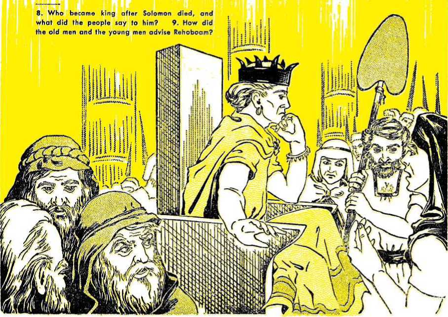a servant to his people and actually serve them, then you must answer them and speak to them with good words, and they will be bound to become your servants always.” But this advice did not please the king at all. Then Rehoboam called in some young men who had grown up with him. These young men wanted to win the king’s favor. So when Rehoboam asked them what he should do, they laughed and said: “This is what you should say to this people .. . ‘now my father, for his part, loaded upon you a heavy yoke, but I, for my part, shall add to your yoke. My father, for his part, chastised you with whips, but I, for my part, shall chastise you with scourges.' ” This advice pleased the king very much.—1 Kings 12:7, 10, 11.
10 On the third day, when the king was to give his answer, great crowds of Israelites gathered at the king's palace to hear him speak. King Rehoboam was ready to answer them. Then in his harsh voice Rehoboam spoke the cruel words of his young advisers. The people were shocked. With their heads bowed low, they went away very sad. They knew that they could not expect justice and mercy from the new king. So they began to pull away from Rehoboam to choose a new ruler. In just a short time ten tribes of Israel left King Rehoboam. They called upon Jeroboam to be their king. Jeroboam gladly agreed. Jeroboam called his ten-tribe kingdom Israel. Only the tribes of Benjamin and Judah stayed faithful to Rehoboam, as Jehovah had purposed.
11 When King Rehoboam saw that ten tribes had left him, he got together a big army and wanted to fight to make them come back. But Shemaiah, a man of God, said to Rehoboam: “This is what Jehovah has said: ‘You must not go up and fight against your brothers the sons of Israel. Go back each one to his house, for it is at the instance of myself that this thing has been brought about.’ ” So they obeyed the word of Jehovah and went back home. From that time on there were two kingdoms, Israel in the north and the kingdom of Judah in the south. —1 Kings 12:24.
12 God purposed King Jeroboam that, if he would obey and serve him as King David did, then his ten-tribe kingdom would be blessed with peace and plenty. But Jeroboam did not trust Jehovah God.
10. What was the reaction to Rehoboam's speech? 11. Why did Rehoboam not fight against Israel? 12. Why did Jeroboam not want the people to go down to Jerusalem?
Jeroboam thought more of being king than of pleasing God. King Jeroboam said to himself, ‘If my people go down to Jerusalem to worship Jehovah, by and by, they will want to become one nation again. They will not want me to be their king. They might even want to kill me. I must stop them from gdoing to Jerusalem to worship at Jehovah's Temple.'
13 To carry out his wicked scheme, Jeroboam did a very terrible thing. He made two golden calf images and set one up in the south at Bethel and the other in the far north in the city of Dan. Then he said to the people: “It is too much for you to go up to Jerusalem. Here is your God, O Israel, that brought you up out of the land of Egypt.” The people then began to go to the cities of Dan and Bethel and there to pretend to worship Jehovah before the golden calf images. This displeased Jehovah God very much.—1 Kings 12 :28.
14 Because of this false calf worship that Jeroboam set up, Jehovah did not bless the ten-tribe kingdom. There were always wars and bitter feeling between it and Judah. To wicked King Jeroboam, Jehovah said: “For the reason that I raised you up out of the middle of your people, that I might constitute you a leader over my people Israel, and I went on to rip the kingdom away from the house of David and give it to you, and you have not become like my servant David, who kept my commandments and who walked after me with all his heart by ddoing only what was right in my eyes, but you began to act worse than all those who happened to be prior to you and you went and made for yourself another god and molten images to offend me, and it is I whom you have cast behind your back, for that reason here I am bringing calamity upon the house of Jeroboam, and I shall certainly cut off from Jeroboam anyone urinating against a wall, a helpless and worthless one in Israel, and I shall indeed make a clean sweep behind the house of Jeroboam, just as one clears away the dung until it is disposed of. The one dying of Jeroboam’s in the city the dogs will eat and the one dying in the field the fowls of the heavens will eat, because Jehovah himself has spoken it." “ And warfare itself took place between Rehoboam and Jeroboam always.”—1 Kings 14 :7-l 1,30.
13. What terrible thing did Jeroboam do? 14. What did Jehovah have to say to Jeroboam and his house?
15 False worship caused the ten-tribe kingdom to become a land of crime and violence. No king's family reigned all the time. Omri, the seventh king, built the city of Samaria on a hill and made it the capital city of the ten-tribe kingdom. He was a very wicked king, but his son Ahab was even worse. Ahab served the false god Baal, who was a symbol of the Devil himself. He even burned live children in fires to honor Baal. Jehovah said that they made such human sacrifices by fire, “which I commanded not, neither came it into my mind." —Jeremiah 7:31, AS.
16 King Ahab married Jezebel, a very wicked woman. She tried to kill all the prophets of God in Israel, but failed. For her bloody crimes she died a violent death. Her own servants threw her out of a window and wild street dogs ate her flesh and licked her blood.
Ml
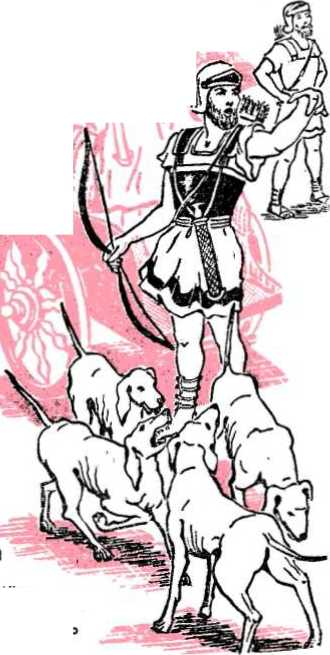17 After 257 years of mostly bad government, Jehovah brought the ten-tribe kingdom to an end. How did he do this? Since the people of Israel no longer worshiped Jehovah as their God, Jehovah- let the nation of Assyria rise up against them. And in 740 B.C. the armies of Assyria came against Israel and destroyed the capital city of Samaria. They took many Israelite people. out of the land and made slaves of them. Jehovah warned them that this would happen. He said: “I will make Samaria as a heap of the field, and as places for planting vineyards; and I will pour down the stones thereof into the valley, and I will uncover the foundations thereof. And all her graven images shall be beaten to pieces, and all her hires [gifts] shall be burned with fire, and all her idols will I lay desolate." So false religion proved to be the downfall of Israel.—Micah 1 :6, 7, AS.
18 But what about the two-tribe kingdom to the south, the kingdom of Judah and Benjamin? How did things go with it? After their brothers in the north had fallen to Assyria, the kingdom
15. Omri ond Ahab were what kind of king*, and what did each do? 16. Who was Jezebel, and in what way did she meet her end? 17. How ond when did Jehovah bring the kingdom of Israel to an end? 16. In what way did Jehovah keep his purpose to David respecting the kingdom?
of Judah went on for 133 more years. God's purpose to David was kept, that they would never
be without a man family to sit upon in Jerusalem.
19 However, not all
of David's the throne
of Judah's
kings were like David. In fact, only a few were. Most of them were not. God kept warning the kings and the people to keep watch as to how they worshiped him, because if they refused to keep his commands and went after other gods,
then he would bring punishment upon them, as he did upon the ten-tribe kingdom. But the people did not seem to care. The worship of Jehovah was not kept clean. The beautiful Temple of Jehovah that Solomon had built was made unclean with images of every kind. Many of the costly treasures that were kept in the Temple were taken away for wrong uses. Things got so bad that one king actually had the Temple doors nailed shut.
20 There were a few kings in Judah who tried to bring the people back to the pure worship of Jehovah. When these kings ruled, the two-tribe kingdom prospered, because Jehovah blessed them. He even fought their wars for them. In King Asa’s day Jehovah showed himself strong and mighty. Over one million Ethiopians came to fight against Judah. King Asa prayed to God: “O Jehovah, as to helping it does not matter with you whether there are many or there is no power. Help us, O Jehovah our God, for upon you we do lean and in your name we have come against this multitude. O Jehovah, you are our God. Do not let mortal man retain strength against you.” Jehovah heard this sincere prayer of the king and answered it by giving his people the victory over their enemies.—2 Chronicles 14:11.
21 Jehoshaphat was another king of Judah that believed Jehovah. When the armies of three nations, Ammon, Moab and Mount Seir, came
19. Regarding pure worship in Judah, what is there to say? 20. How did Jehovah prove himself God to King Asa? 21. In what way did Jehovah answer King Jehoshaphat?
to fight against little Judah, Jehoshaphat | prayed to God, and Jehovah told him: ! “As for you, do not be afraid or be terrified because of this great multitude, for the battle is not yours but God’s." And so it was, because the Judeans did not do more than march behind their Temple singers to the battle. God made the enemies kill one another.—2 Chronicles 20 :15-21.
22 The twelve tribes of Israel could always have lived as one happy people had they kept worshiping Jehovah ™ in the right way. But, as we have learned, King Solomon unwisely chose to disobey Jehovah by worshiping false gods. The first king of the ten-tribe kingdom did no better. Jeroboam set up calf worship in Israel and caused the people to sin by worshiping images. Wicked King Ahab had little children burned alive to the false god Baal, whom he worshiped. False worship caused the people to be so bad that Israel as a nation was not worth saving. God therefore let their enemies destroy them for their unfaithfulness.
23 Jehovah has always proved himself a God of his word. He has shown that it pays to put faith and trust in him as God. But those who turn to false gods are sure to be punished, even as unfaithful Israel was. All those who will gain life in Jehovah’s new earthly paradise will be people of faith. They will be people who worship Jehovah as the only one True and Living God, the King of eternity.
22. Why did Jehovah Set the enemies destroy Israel?
23. Those who live in the new earthly paradise will be what kind of people?
CHAPTER TWELVE
HE ancient city of Jerusalem v/as one of the most beautiful cities of the world. Before King David came to live in the city, Jerusalem was the home of a very bad people called the Jebusites. They were not worshipers of Jehovah God. Their gods were made of stone, wood, metal and clay.
2 With Jehovah's help King David drove the wicked Jebusites out of Jerusalem. In the strongest fort, high on a hill called Zion, David made his home. Because the king lived there, the city came to be called the city of David. With great joy and gladness David had the ark of Jehovah moved out of the house of Obed-edom. He had the ark brought to Zion so that he could be near it.
3 Here, high on this hill of Zion, overlooking all Jerusalem, aged King David arranged for his son Solomon to build the beautiful Temple of Jehovah on Mount Moriah. This Temple, which took over seven years to build, was the talk of the ancient world. The gold alone with which Solomon covered the Most Holy of the Temple was valued at six hundred talents, or $26,496,000. At the Temple was where the sacred ark of Jehovah was now kept, where the priests of God served and offered sacrifices and where the people of Jehovah came to worship. The Temple was called God’s house. Since Jehovah chose Jerusalem and was pleased to put his name there, the city became known as the Holy City.
4 The people of Israel were very happy about their holy city. They even sang songs about it to Jehovah’s praise. The words of one song are: “Jehovah is great and much to be praised in the city of our God, [in] his holy mountain. Beautiful for loftiness, the exultation of the whole earth, is Mount Zion on the remote sides of the north, the town of the grand King.’’-—Psalm 48:1,2.
1. To what people did the ancient city of Jerusalem once belong? 2. Where did David make his home, and why did he have the ark of Jehovah brought there? 3. Why was the Temple called God's house? 4. What psalm shows that the Jews loved Jerusalem?
99
5 Many years before this the prophet Moses warned the people about forgetting Jehovah their God once they got materially rich. He said: “Watch out for yourself that you may not forget Jehovah your God so as not to keep his commandments and his judicial decisions and his statutes .. . if you should at all forget Jehovah your God and you do walk after other gods and serve them and bow down to them, I do bear witness against you today that you people will absolutely perish. Like the nations that Jehovah is destroying from before you, that is the way you will perish, because you will not listen to the voice of Jehovah your God.” The people did not take this warning to heart.—Deuteronomy 8 :10-20.
6 In time the people did forget Jehovah their God. They broke his laws and would not keep his commandments. They married people who worshiped false gods. The rulers at Jerusalem made agreements with pagan rulers. They even made false gods out of stone, wood and clay and worshiped these as their god. This made Jehovah very angry. He sent his prophets to warn them of their wrongddoing. But the unfaithful Israelites would not listen to them. They would laugh at the prophets when they heard them speak. In fact, they would throw stones at some of them. Others they would put in dirty jails. And some of the prophets they killed.
7 The people of Judah got to be so bad that Jehovah said he was gdoing to let the pagan Babylonians from the north country come in and destroy Jerusalem and her beautiful Temple on Mount Moriah. He said he was gdoing to upset or overturn the kingdom of Judah because of their false religion. Only for their turning to true religion would Jehovah show them mercy and forgive them for their many wrongs against him.
8 But most of the people no longer believed what Jehovah and his prophets had to say. They trusted in their images. They thought that since they lived in the Holy City with its lovely Temple and a big wall of stone that circled the city to protect them, no one was ever gdoing to destroy the city—not even Jehovah. Why should Jehovah want to destroy this city? they asked. Did he not put his name here? Will he not fight to save his name and his people? Is not Jerusalem his city? Is not
5. About what did Moses long ago warn the people? 6. How did the people treat Jehovah’s warning? 7. How only could the people save themselves from punishment? 8. Why did the people think Jehovah would not destroy the city?
the Temple, with all its precious stones and gold, his house? Is it not here where his priests and people worship? Surely Jehovah will never let the Babylonians destroy us, no matter how bad we get. So the people thought and spoke.
9 The people were wrong. Jehovah has no pleasure in false worship. He hated their images and idols. He did not care for their animal sacrifices. What God wanted was a mild spirit, a love of righteousness and a meek and humble heart. He wanted people who worshiped him and no false god.
10 Because Jehovah did not quickly destroy them for their wrongddoing, the people thought God did not see or care what they were ddoing. But Jehovah proved that he did see and that he did care. Listen to how he pleads with his people: “Return, O backsliding children, saith Jehovah; for I am a husband unto you: and I will take you one of a city, and two of a family, and I will bring you to Zion. And I will give you shepherds according to my heart, who shall feed you with knowledge and understanding.”—Jeremiah 3 :14-18, AS.
11 But the unbelieving people of Judah would not listen to Jehovah. The mighty armies under King Neb u chad nez zar began to roll. In one clean sweep they crushed Assyria in 633 B.C. Then they moved to the south, smashing Egypt's armies to pieces in 626 B.C. Now the only power that stood in Babylon's way to becoming a world power was Jerusalem.
12 O how the Devil hated Jerusalem! He hated it because it was a symbol of true religion. Since the city was now abandoned by God because of false religion, here was his chance to destroy it. He knew that as long as Jehovah watched over Jerusalem it was strong. But Jehovah was no longer there. This was his chance. If he destroyed Jerusalem and its Temple he would make himself greater than any of the princes in Jerusalem. He would become like the Most High God over all the earth. Would God let him do this? To his prophet Ezekiel God shows why he would:
13 “Son of man, seest thou what they do? even the great abuponnations that the house of Israel do commit here, that I should go far off from my sanctuary? But thou shalt again see yet other great abuponnations.” 9. Instead of image and idol worship, what does Jehovah want? 10. What proof is there to show that Jehovah really cares how people worship him? 11. In what way did Babylon’s armies show themselves a threat to Jerusalem? 12. Why did the Devil want to destroy Jerusalem? 13. What shocking things were carried on in the Temple by the Jews?
So Jehovah showed Ezekiel an inner Temple chamber where all kinds of hateful forms of reptiles and beasts were painted on the walls, and before these disgusting images seventy older Israelites of influence were burning incense. Shocking! This false worship was gdoing on inside Jehovah’s Temple. At the gate of God's Temple were women weeping and wailing for Babylon’s devilish god, Tammuz. But that is not all! In the inner court of the Temple Ezekiel saw twenty-five Israelites with their backs to the Temple. They were facing the sun in the east and worshiping it, just as the pagan Babylonians and Egyptians did.—Ezekiel 8:5-18, AS.
14 Were these people any better than the idol-worshiping Babylonians simply because they were in Jehovah’s Temple? No, not at all. Their idols made Jehovah’s Temple unfit for pure worship. With their bad ways and false worship they forced God out of his own house. They changed it into a den of devils and robbers. That is why God would not save it. It was like a rotten tree waiting to be chopped down and burned.
15 In 620 B.C. the king of Babylon came from the north with his great armies to bring the kingdom of Judah under his control. Without Jehovah on its side, Judah was no match for Babylon. In quick order King Jehoiakim became the servant of Babylon, but only for three years. Then he turned against Babylon and later he died, and his son Jehoiachin became king in Judah. But Jehoiachin was no better than his father. He too did what was bad in the eyes of Jehovah.
16 During Jehoiachin’s short reign the armies of Babylon came right up to Jerusalem and laid siege against it. Soon Jehoiachin gave up. Nebuchadnezzar went into the city of Jerusalem and brought out from there all the treasures of the house of Jehovah and cut to pieces all the gold utensils that Solomon had made for the Temple of Jehovah. “And he took into exile all Jerusalem and all the princes and all the valiant, mighty men—ten thousand he was taking into exile—and also every craftsman and builder of bulwarks. No one had been left behind except the lowly class of the people of the land." He also took away King Jehoiachin, his mother, his wives, his court officials and the foremost men of the land, among whom were Daniel and his three companions, and the prophet Ezekiel. They became servants in Babylon. —2 Kings 24:13-16.
14. False religion changed Jehovah’s house into what? 15. What two kings of Judah were the first to become subject to Babylon? 16. During Jehoiachin’s reign, what did Nebuchadnezzar do?
17 Nebuchadnezzar of Babylon made Zedekiah king over Judah. The faithful prophet Jeremiah told Zedekiah not to oppose Babylon’s rule. But Zedekiah would not listen to Jehovah’s prophet. He began to fight against the king of Babylon. Nebuchadnezzar became very angry. This time he would destroy Jerusalem completely. King Nebuchadnezzar came to Jerusalem with all his armies. As far as the eyes could see there were his soldiers and war equipment. His armies made an iron circle around Jerusalem so that no man could go in or out for eighteen months. The people inside Jerusalem's walls were starving to death.
18 On July 1 and 2, 607 B.C., Babylon's soldiers broke through the stone walls of Jerusalem. All Judah's men of war fled by night. Even King Zedekiah tried to run away, but he was caught by enemy soldiers. Zedekiah was brought “up to the king of Babylon at Riblah, that they might pronounce a judicial decision upon him. And Zedekiah’s sons they slaughtered before his eyes and Zedekiah’s own eyes he blinded, after which he bound him with copper fetters and brought him to Babylon.”—2 Kings 25 :6, 7.
” On August 3 and 4 Babylon’s men began to burn the house of Jehovah, the king’s house and all the houses of Jerusalem, and the house of every great man was burned with fire. Then they pulled down the walls of Jerusalem. The city was left in ruins.
20 Some of the poorer Jews were left to farm the land of Judah, but the others Nebuchadnezzar took captive to Babylon as slaves. The king of Babylon then gave the poor people of Judah a governor by the name of Gedaliah, who was a Jew. The governor told the chiefs of those who were left behind to dwell in the land and serve the king of Babylon and it would go well with them. Instead of being good to their new governor, a band of Jews got together and killed Gedaliah.
21 When the people heard what these bad Jews had done to Gedaliah, they became very fearful for their lives. They felt sure that Nebuchadnezzar would punish them for this crime. So all the people, from small to great, and the military chiefs rose up and came into Egypt. This took place about October 1,607 B.C. On that day the “appointed times of the nations” began and were due to run for 2,520 years.—Luke 21 : 24.
17. Whose good advice did Zedekiah ignore to his hurt? 18. Zedekiah suffered what punishment? 19. When was the city of Jerusalem left in ruins? 20. Who was Gedaliah, and what crime against him did the Jews commit? 21. About what date was Judah emptied of all Jews?
The once as
kingdom of Judah, which was lovely as the paradise of Eden,
was now an astonishing desolation. Why did this happen to Judah? If the Jews read and believed Moses' words they would have known why, because Moses had warned them: "If, however, with this you will not listen to me and you just must walk in opposition to me, then I shall have to walk in heated opposition to you and I, yes, I, shall have to chastise you seven times for your sins. So you will have to eat the flesh of your sons, and you will eat the flesh of your daughters. And I shall certainly annihilate your sacred high places and cut off your incense stands and lay your own carcasses upon the carcasses of your dungy idols, and my soul will simply abhor you. And I shall indeed 22. How accurately did Moses foretell this happening?
give your cities to the sword and lay your sanctuaries desolate, and I shall not smell your odors of appeasement. And I for my part will lay the land desolate, and your enemies who are dwelling in it will simply stare in amazement over it. And you I shall scatter among the nations and I will unsheathe a sword after you and your land must become a desolation and your cities will become a desolate ruin.” —Leviticus 26 : 27-33.
23 It was false religion, yes, demon and idol worship, that turned the Judeans away from the true God Jehovah. Their false worship made the holy city of Jerusalem unclean; it made the Temple of Jehovah unfit for pure worship so that Jehovah devoted it to destruction. Keeping this lesson in mind, we ask: Will false worship, the worship of demons and images, today, save this world from destruction by God? No. It is hastening the world's destruction.
24 Even though the Jews were slaves in Babylon, Jehovah God did not forsake them. He helped them do many wonderful things. What those things were we shall see.
23. What was behind Jerusalem’s downfall? 24, How did Jehovah prove a God to them even in Babylon?
CHAPTER THIRTEEN
Delivered of (jod
te e
I^H Jerusalem destroyed, the kingdom of Babylon became greater than all other kingdoms on earth. Its capital city was called “Babylon the Great." In the Bible, Babylon became a symbol of Satan's entire organization. It was to this great devilish kingdom that God's witnesses became slaves.
2 What hope was there of their ever being set free from Babylon? Babylon ruled the world. Yet God purposed through his prophet Ezekiel that Gentiles, that is, nations not Jewish, would not rule the earth forever. To Judah’s last king Jehovah said: “And you, O unhallowed wicked one, prince of Israel, whose day has come, the time of your final punishment, thus says the Lord GOD: Remove the turban, and take off the crown; things shall not remain as they are; exalt that which is low, and abase that which is high. A ruin, ruin, ruin I will make it; there shall not be even a trace of it until he comes whose right it is; and to him I will give it.” —Ezekiel 21 :25-27, RS.
3 But when would God’s purpose be fulfilled? And, too, how would Jehovah free his people from mighty Babylon’s grip? These and other questions Daniel and his three Jewish friends, Handniah, Mishael and Azariah, kept asking themselves as they came near the city of Babylon, where they were gdoing in 618 B.C. to be prisoners.
4 As they came into the city they saw that Babylon was truly great. The city itself was fourteen square miles. There were huge stone walls all around the city. One wall was 344 feet high and 86 feet wide. Through the city flowed the beautiful Euphrates River. Flanking the river on each side of the city were twenty-five bronze gates. These gates led down to a wharf, where boats unloaded their supplies. Through these gates the proud king of Babylon and his nobles went in and out
1. Of what was Babylon a symbol? 2. What was God’s purpose to Ezekiel? 3. Before God’s witnesses reached Babylon, what questions were they asking themselves? 4. Briefly describe some of Babylon’s greatness.
of the city. Along the banks of the river were splendid palaces. At the doorways were large stone figures that had the bodies of bulls, the wings of eagles and the heads of men. Along both banks were the world-famous hanging gardens. These were rows of terraces, built one above another on arches of brickwork, each one growing the most beautiful of trees and flowers. Truly Babylon was great!
5 The Babylonians were a very proud and religious people. They believed in many gods. They built many idols and Temples in honor to their gods. Their Temples were square towers built up in tiers, each story a little smaller than the one below it. In the Temple at the very top was believed to be the home of the god. The chief among their gods was Merodach. Even King Nebuchadnezzar bowed down to him, whom he called “the supreme chief of the gods,” “the king of the heavens and the earth.” In 607 B.C. Nebuchadnezzar destroyed Jerusalem.
6 The people of Babylon proudly looked down on Daniel’s God, Jehovah. They said that he was a weak God, not able to save his people. Was not Jerusalem the city of the Great King Jehovah? Did not their god Merodach destroy Jerusalem and her Temple on Mount Moriah? Does not this prove that Merodach was a god mightier than Jehovah? The Babylonians laughed as they asked their Jewish slaves these questions. What they did not know was that their god Merodach was none other than Satan the Devil himself. And another thing they did not know was that Jehovah let them destroy Jerusalem and take his people captive as a punishment to his people. They thought they did this because of their armies and by the power of their gods.
7 But the witnesses of Jehovah knew why they were in Babylon. They knew that they had sinned and acted wickedly. Now they felt very sorry about their sins against Jehovah. Day and night they prayed and wept in hope that Jehovah would hear their prayers and forgive them. One psalm tells of their deep sorrow in this way:
8 “By the rivers of Babylon—there we sat down. We also wept when we remembered Zion. Upon the poplar trees in the midst of her we hung our harps. For there those holding us captive asked us for the words of a
5. Babylon’s religious Temples were of what shape, and who was their chief god? 6. Why did the Babylonians think their god was greater than Jehovah, but, in fact, who was he? 7. Why were the Israelites made slaves of Babylon? 8. How does Psalm 137 describe the Jews’ sorrow in Babylon?
song, and those mocking us—for rejoicing: ‘Sing for us from a song of Zion.' How can we sing the song of Jehovah upon foreign ground? O daughter of Babylon, who are to be despoiled, happy will be he that rewards you with your own treatment with which you treated us. Happy will he be that grabs ahold and does dash to pieces your children against the crag."—Psalm 137:1-4, 8, 9.
’When Daniel and his three friends first came to Babylon, the king’s men found them to be of great wisdom. So the king had them sent to a special training school for three years. After they completed their course, the king gave them a very hard test. He found them to be ten times wiser than all the wise men in Babylon.
10 About two years after King Nebuchadnezzar destroyed Jerusalem, he had a dream that troubled him very much. He tried hard to remember his dream, but he could not. At last he called before him all the wise men of Babylon, all his wise magicians and enchanters, and all his religious counselors. ‘Tell me of my dream and explain its meaning,’ said the king, ‘or die.’
11 The wise men trembled with fear. “There is not a man on earth who can meet the king's demand,” they said, “for no great and powerful king has asked such a thing of any magician or enchanter or Chaldean. The thing that the king asks is difficult, and none can show it to the king except the gods, whose dwelling is not with flesh.” These words made the king very angry. He commanded that all the wise men be put to death. This order was so broad that it even took in Daniel and his three companions.—Daniel 2:10,11, RS.
12 When Daniel heard about the king’s command he asked the king’s army captain not to kill the wise men. He said that he would make known the king's dream and explain it. That night Daniel and his friends prayed to Jehovah to show the dream and its meaning. By a vision to Daniel their prayers were answered.
13 Before the king, Daniel gave a good witness. He praised Jehovah, saying: “No wise men, enchanters, magicians, or astrologers can show to the king the mystery which the king has asked, but there is a God in
9. What did the king’s men find about Daniel and his three companions before and after being sent to a special school? 10. Why was the king greatly troubled? 11. How did the wise men of Babylon answer the king? 12. Through whom did Daniel get to know the dream and its meaning? 13. In what way did Daniel exalt Jehovah above all Babylonian gods?
heaven who reveals mysteries, and he has made known to King Nebuchadnezzar what will be in the latter days.” In this way Daniel showed Jehovah to be greater than all the gods of the Babylonians. —Daniel 2 : 27, 28, RS.
14 With a clear voice Daniel spoke: ‘You dreamed of a terrible image, O king. This image was struck by a stone from heaven, which completely destroyed the image. The image represents a worldly organization. The stone that comes from heaven is God’s kingdom that will break in pieces and consume all these wicked kingdoms. And it shall stand forever.’
’sThen the king said to Daniel: “Truly, your God is God of gods and Lord of kings, and a revealer of mysteries, for you have been able to reveal this mystery." Then he gave Daniel many grand gifts and made him ruler over the whole province and chief governor over all the wise men of Babylon. At Daniel’s request, the three friends of his got special jobs in Babylon too.—Daniel 2:47-49, RS.
the not
16 The names of Daniel's three companions had been changed to Shadrach, Meshach and Abednego. Once they were put to a very great test of their faith in Jehovah. At a special time everyone was to bow down to a golden image that the king had built. Anyone not bowing down before the golden image was to be thrown alive into a fiery furnace.
17 The three Hebrews knew king's command but they were afraid. They worshiped Jehovah and did not bow before the king's image. In his wrath
14. Whot was the dream and the interpretation? 15. How were Daniel and his friends rewarded?
16. The three Hebrew children were faced with what great test? 17. How did they answer the king in this matter? and fury the king ordered the three to be brought before him. ‘Do you dare not to obey the king’s command?’ he shouted. ‘Do you not know I can have you burned alive?' “O Nebuchadnezzar," said the companions of Daniel, “we have no need to answer you in this matter. If it be so, our God whom we serve is able to deliver us from the burning fiery furnace; and he will deliver us out of your hand, O king. But if not, be it known to you, O king, that we will not serve your gods or worship the golden image which you have set up."—Daniel 3 :16-18, RS.
18 The king raged with anger. ‘Heat the furnace seven times hotter than it was before! We will show these Hebrews who is God around here!' he kept shouting. ‘Bind them and throw them into the fiery furnace at once!' The mighty men who threw the three Hebrews into the furnace were killed instantly from the heat of the flames. But there in the middle of the fire stood the Hebrews, unhurt.
19 The king was amazed at what he saw. “Did we not cast three men bound into the fire?" he asked. “True, O king," said his men. "But I see four men loose, walking in the midst of the fire, and they are not hurt; and the appearance of the fourth is like a son of the gods,” said the king.—Daniel 3 : 24, 25, RS.
20 The king went closer to the fiery furnace and called to the faithful witnesses in the fire: “Servants of the Most High God, come forth, and come here!” When Daniel’s friends came out of the furnace, the king and all his wise men saw that not a hair on their head was singed; “no smell of fire had come upon them.” The king then praised Jehovah for changing the king's law and protecting His witnesses. He also made a law that any people or nation saying bad things against the God of the Hebrews was to be put to death. Thus Jehovah made a name for himself in Babylon through the faithfulness of his witnesses.—Daniel 3:26,27, RS.
21 Years passed. Nebuchadnezzar died and later Belshazzar became king in Babylon. One day King Belshazzar made a great feast for a thousand of his lords. During the feast the king commanded his servants to bring out the sacred vessels that Nebuchadnezzar had taken from Jerusalem’s Temple. The king and all his lords drank wine out of these sacred vessels in praise to their demon gods of gold, of silver, of brass, of iron, of stone and of wood.
18. What happened to the men that threw the Hebrews into the fire? 19. Why was the king amazed? 20. How did Jehovah make a name for himself at this time? 21. What terrible thing did Belshazzar do?
22 While they were laughing, drinking and making light of Jehovah God, the fingers of a man’s hand appeared before the king. He gasped with fear. The hand wrote strange words on the palace wall: MENE, MENE, TEKEL and PHARSIN.
23 The king sat limp in his chair, weak from fear. His face was white. His lips quivered and his knees shook. All the wise men came in and tried to read the handwriting on the wall, but none of them could. Then the queen remembered Daniel. “O king, live for ever!” she said. “There is in your kingdom a man in whom is the spirit of the holy gods.” —Daniel 5:10,11, RS.
24 As fast as they could they brought Daniel before the king. “You are that Daniel, one of the exiles of Judah," the king said. Daniel nodded that he was. “I have heard of you that the spirit of the holy gods is in you, and that light and understanding and excellent wisdom are found in you," said the king. “Now if you can read the writing and make known to me its interpretation, you shall be clothed with purple, and have a chain of gold about your neck, and shall be third ruler in the kingdom.” “Let your gifts be for yourself, and give your rewards to another," said Daniel boldly; “nevertheless I will read the writing to the king and make known to him the interpretation.”—Daniel 5:13-17, RS.
25 Daniel began to speak: ‘Your father, Nebuchadnezzar, was a great man. But when he became cruel, his glory was taken from him. You, his son, O Belshazzar, have not served the Lord of heaven. Instead, you have taken the sacred vessels from his Temple and drunk wine out of them to honor your gods of gold, silver and brass.'
26 The king trembled with fear as Daniel witnessed fearlessly: ‘The handwriting on the wall, O king, says that God has numbered the days of your kingdom and brought it to an end. God has put you on a scale to see if there is any good in you. You have been found wanting. Your kingdom will be divided and given to the Medes and the Persians.’
27 That very night King Belshazzar was killed. Darius the Mede took over the kingdom of Babylon. It happened exactly as Jehovah said that
22. As the king and his guests were making light of Jehovah, what did Jehovah cause to happen? 23. Whom did the queen remember that could read the writing? 24. How did the king greet Daniel, and what was Daniel's reply? 25. What did Daniel have to say first about Nebuchadnezzar and then about Belshazzar? 26. What did Daniel explain the writing on the wall to mean? 27. Did Jehovah’s word regarding Babylon prove true? it would. In 539 B.C. Babylon was in the hands of the Medes and the Persians.
28 During the reign of King Darius, Daniel had another chance to bear witness to the greatness of Jehovah God. The state officials were very jealous of his high position before the king. So they schemed to have Daniel killed. They tricked the king into passing a law that said that if any man prayed to any god or man except Darius, he should be thrown into a den of lions. When Daniel heard that the king had signed the law, he went into his house and, as was his custom three times a day, before an open window facing Jerusalem, he kneeled in prayer to Jehovah.
29The king’s men charged Daniel with breaking the law. When the king saw what his men had done, he was very sorry that he had signed the law, because he liked Daniel very much.
28. During King Darius* reign, how did officials plan to kill Daniel? 29. How did the king show himself sorry for signing the bad law?
not be
said
to Daniel: "May your God
you serve continually, deliver night the king could not sleep. Daniel’s God would not let the
But the law could changed. The king
Early the next morning the king ran to the lions' den. "O Daniel
' ? whom
you!” That He fasted and prayed that lions not eat Daniel.—Daniel 6:16, RS.
servant of the living God,” he said, "has your God, whom you serve continually, been able to deliver you from the lions?” From the lions’ den came Daniel's voice: ”O king, live for ever! My God sent his angel
and shut the lions' mouths, and they have not hurt me." Daniel proved himself a faithful witness and the king rejoiced. As for those who schemed against Daniel, the king had them and their wives and children thrown into the lions' den, where they were eaten up.—Daniel 6:19-24, RS.
31 Jehovah God did find faithful witnesses in Babylon. These prayed to Jehovah to free them from Babylon and send them back to Jerusalem. Would Jehovah answer their prayers for deliverance? Faithful prophets said that he would, but when?
30. At this time, how did Jehovah make a name for himself, and in what way did the king reward his schemers?
31. After these many years, what was still in the hearts of the faithful witnesses of Jehovah in Babylon?
S SIXTY-EIGHT years had passed since Jerusalem and Judah were destroyed. The mighty empire of Babylon was no more. It had fallen to the armies of the Medes and the Persians. Darius the Mede and Cyrus the king of Persia were now rulers of mighty Babylon. These kings thought well of Jehovah’s people in Babylon. Yet there was no sign of any release in sight.
2 It was too much to expect any mercy from Babylon. The Babylonians had no heart for prisoners. They treated them like working animals. As for slaves, Babylon was known never to free them. Everywhere of the king of Babylon it was said that he “did not let his prisoners go home." There was now a change of government. Could the Jews now be hopeful of being freed as slaves?—Isaiah 14:17, RS.
3 One day, while reading some of the prophet Jeremiah’s writings, Daniel, who was now a very old man in his nineties, leaped for joy. There before him in plain letters Jehovah’s words to Jeremiah stood out, foretelling the exact number of years the Jews would be enslaved to Babylon. This is what Daniel was wanting to know. This is what he was hoping, looking and praying for. Now with a grasp of their meaning he read the words of Jehovah to Jeremiah:
4 “Thus saith Jehovah of hosts, the God of Israel, unto all the captivity, whom I have caused to be carried away captive from Jerusalem unto Babylon:... After seventy years are accomplished for Babylon, I will visit you, and perform my good word toward you, in causing you to return to this place. And I will be found of you, saith Jehovah, and I will turn again your captivity, and I will gather you from al! the nations, and from all the places whither I have driven you, saith Jehovah; and I will
1. Who had now become the rulers of mighty Babylon? 2. Why had the Jews not been hopeful about being freed? 3. Jeremiah’s writings revealed what news to Daniel? 4. As to time of deliverance, what did the prophecy have to say?
bring you again unto the place whence I caused you to be carried away captive.”—Jeremiah 29:4, 10, 14, AS.
5 Daniel was very happy to learn these words of Jehovah. He felt quite sure that the time had come for Jehovah to bring his people back to their homeland in Palestine. Besides what Jehovah told Jeremiah, Daniel no doubt knew what Isaiah wrote of Jehovah, ‘‘who says of Cyrus, ‘He is my shepherd, and he shall fulfill all my purpose’; saying of Jerusalem, ‘She shall be built,’ and of the Temple, ‘Your foundation shall be laid.’ ” Cyrus was present, but he did not have full power over Babylon. What Daniel did not know was that in less than two years Cyrus would be the sole ruler of Babylon and of Medo-Persia.—Isaiah 44 : 28, RS.
6 One thing that Daniel did know was that if the Jews wanted Jehovah’s favor they must show themselves humble and in the right heart condition before Jehovah. He knew that they must do as Solomon long ago said to Jehovah in prayer: “In case they sin against you (for there is no man that does not sin), and you have to be incensed at them and abandon them to the enemy and their captors actually carry them off captive to the land of the enemy distant or nearby, and they indeed come to their senses in the land where they have been carried off captive and they actually return and make request to you for favor in the land of their captors, saying, ‘We have sinned and erred, we have acted wickedly,’ and they indeed return to you with all their heart and with all their soul in the land of their enemies who carried them off captive, and they indeed pray to you in the direction of their land that you gave to their forefathers, the city that you have chosen and the house that I have built to your name, then you must hear from the heavens, your established place of dwelling, their prayer and their request for favor and you must execute judgment for them, and you must forgive your people who had sinned against you."—-1 Kings 8 :46-50.
7 So regardless of what other Jews might do, Daniel at once began to follow out the way Solomon laid out for them to win God’s favor. Of himself, Daniel says: “Then I turned my face to the Lord God, seeking him by prayer and supplications with fasting and sackcloth and ashes.” He also opened his heart before Jehovah in prayer and confessed their sins and begged God to show mercy: “O LORD [Jehovah], hear; O
5. Why was Daniel sure the time had come for them to be freed? 6. To win God’s favor, what must the Jews do?
7. In what way did Daniel follow Solomon's advice?
LORD, forgive; O LORD, give heed and act; delay not, for thy own sake, O my God, because thy city and thy people are called by thy name." —Daniel 9:3-19, RS.
8 While Daniel was praying one day the angel Gabriel came to him. He told Daniel that the captive Jews were to be delivered and that Jerusalem and her Temple would again be built. This was indeed good news to Daniel in his old age. His prayers were all answered.
9 In 538 B.C. Darius the Mede died and Cyrus king of Persia took over the rule of Babylon. Cyrus believed that Jehovah was the God of the Jews and that His Temple had been in Jerusalem, so he ordered Jehovah's worship restored there. No doubt Jehovah put this in his heart to do, because even Cyrus himself told all the people: "This is what Cyrus the king of Persia has said, 'All the kingdoms of the earth Jehovah the God of the heavens has given me and he himself has commissioned me to build him a house in Jerusalem, which is in Judah. Whoever there is among you of all his people, may his God prove to be with him. So let him go up to Jerusalem, which is in Judah, and rebuild the house of Jehovah the
God of Israel
he is The [true] God—which was
in Jerusalem.”—Ezra 1 : 2,3.
10 King Cyrus showed himself kind to the Jews. He gave back all the sacred vessels that were taken from Solomon’s Temple. Because of old age, health, fear and other reasons, not all the Jews could go back to their homeland or wanted to go back. Those that stayed behind in Babylon gave money and tame animals to those that were leaving. The number of those who left Babylon was 42,360 Jews. They are spoken of as "a remnant," "the remnant of Israel." {Isaiah 10:20-22, RS) With them came 7,337 servants and maids,- also 200 special singers. All together there were 49,897
8. How were Daniel's prayers answered? 9. How do Cyrus' words show that Jehovah was behind the Jewish return? 10. Who were among those that returned to Jerusalem, and how many were there?
Helping him in the Temple work was the high priest Joshua. Everything worked out so well that exactly in the very month of the year in which the complete desolation of the land had begun seventy years before that, a new altar was made in 537 B.C., on the very spot where Solomon's Temple altar had stood. Jehovah had kept his word and purpose.
12 As soon as the Jewish remnant started to rebuild the Temple in Jerusalem, people living nearby who were not Jews began to complain. They said that the Jews were trying to overthrow the government of Persia. Of course, that was not true, but they had the Temple work stopped anyway.
13 For sixteen years after that no work was done on the Temple. Then Jehovah raised up two prophets, Haggai and Zechariah. These prophets told Governor Zerubbabel and high priest Joshua to go ahead with the building of the Temple and not to listen to what others were saying. They said strongly that the Temple was Jehovah's house and that it must be built. So the work went on.
14 Again the enemies tried to stop the work, but the Jewish remnant legally proved that their work was not against the state. They showed the men in charge of the government that King Cyrus had told them to rebuild the Temple. After a long search of old records, it was found that the Jews were right. So after many months of hard work the Temple building was finally completed. It was dedicated with great joy by those who had come out of Babylon. True worship of Jehovah was fully restored in the land. The new Temple was proof that one could see of the greatness of the only true God Jehovah.
15 Not long after this wonderful occasion, there came from Babylon a Levite priest called Ezra. He was a copyist of the law of Jehovah. With Ezra came other Jews. Ezra brought back with him a special letter from Artaxerxes I, the king of Persia. This letter showed how the people were to give support to the Temple. It also showed that those who worked in the Temple did not have to pay taxes.—Ezra 7:1-28.
16 From Ezra's day forward there was a lot of hand copying of the Hebrew books of the Bible. Ezra himself made copies of Bible books. It was also from this time that the Bible began to be spread far and wide.
17 Because the walls around Jerusalem were not rebuilt, the people in
12. Why was the building of the Temple stopped? 13. When was rebuilding of the Temple resumed? 14. Were the Jews right in building the Temple? 15. Who was Ezra, and what did he bring with him from Babylon? 16. From Ezra's time forward, what began to happen to the Bible? 17. How did Nehemiah come to lead in the rebuilding of Jerusalem's walls?
the city did not fee! safe. They were afraid to sleep at night because of robbers and raids by the enemies. A young Jew by the name of Nehemiah heard of their trouble. He was a servant of King Artaxerxes I in Shushan the palace. One day the king saw that Nehemiah was very sad. So he asked him why he was sad. Nehemiah told the king all about how his people were suffering in Jerusalem.
18 So the king gave Nehemiah the right to bring order to Jerusalem and to build the walls again. This command Nehemiah received from the king in the year 455 B.C.
19 As soon as Nehemiah received the command he started out for Jerusalem. When he arrived, the first thing that he did was to inspect the walls to see what could be done with them. About three days later, work on the walls began.
20 Again the enemies tried to stop the work. But Nehemiah was a fighter. He armed all his men and told them: “Do not be afraid on their account. Jehovah the great and the fear-inspiring One keep in mind, and fight for your brothers, your sons and your daughters, your wives and your homes.’’ This was too much for his enemies.—Nehemiah 4:14.
21 How the enemies hated Nehemiah! They even tried to kill him, but he was much too wise for them. When all their plans failed, they tried to stop the building by saying that the rebuilding of the wall was a crime against the state. But Nehemiah did not let that stop him. He had his men keep right on building. The people worked hard and they did not stop building until the wall was finished. It took them only fifty-two days to do this very hard job.
22 With a strong wall around the city the Israelites felt safe from all their enemies. Nehemiah became their governor. He and the copyist Ezra began to teach the people Jehovah’s law. The Levite priests did their duties. The feasts of Jehovah were kept by the people. The people were told not to mix with those that were not Jews. True worship of Jehovah was restored in the land. The people were happy, yet things were not the same as before they went into captivity. In prayer to Jehovah, Nehemiah tells us why:
23 “And now, O our God, the great, mighty and fear-inspiring God,
18. In what year was the command given to rebuild the walls? 19. How did Nehemiah prove himself a man of action? 20. In face of opposition, what command did Nehemiah give his brothers? 21. The walls were finished in how many days? 22. in what way was true worship restored? 23. Why were things not the same in Judah as before captivity?
keeping the covenant and loving-kindness, do not let all the hardship that has found us, our kings, our princes and our priests and our prophets and our forefathers and all your people from the days of the kings of Assyria down to this day, seem little before you. And you are righteous as regards all that has come upon us, for truth is what you have performed, but we are the ones that have acted wickedly. . .. Look! we are today slaves, and, as for the land that you gave to our forefathers to eat its fruitage and its good things, look! we are slaves upon it, and its produce is abounding for the kings that you have put over us because of our sins, and over our bodies they are ruling and over our domestic animals, according to their liking, and we are in great distress.”—Nehemiah 9 : 32-37.
24 Even though the Jewish remnant were back in their own homeland, still they were slaves, because over them ruled kings not Jews. Only the purposed King, the Seed of Abraham, could free them from this bondage that they were under.
25 After their rebuilding of the walls of Jerusalem there was one special prophet of God that appeared among Jehovah's people. That prophet was Malachi. He told of the coming Seed of purpose, saying: “Behold, I send my messenger, and he shall prepare the way before me: and the Lord, whom ye seek, will suddenly come to his Temple; and the messenger of the covenant, whom ye desire, behold, he cometh, saith Jehovah of hosts." (Malachi 3:1, AS) Malachi also preached that the people of Israel should become clean of habits and conduct, because they were entering a judgment period.
26 For over four hundred years after Malachi's day there was no prophet of God in the land. During this time the Hebrew Scriptures from Genesis to Malachi were translated into Greek. About 280 B.C. the Greek Septuagint version of the book of Moses (Genesis to Deuteronomy) was made and placed in the famous library of Alexandria in Egypt.
27 So years went by. At last the time had come for some very exciting news to break out. The angel Gabriel told the prophet Daniel that in sixty-nine weeks of years after the command to rebuild Jerusalem’s walls Messiah the Prince, who is the Seed of purpose, would appear. That time was near at hand. Would God’s Word have fulfillment on time, as it did in Jeremiah’s seventy-year prophecy? There were many Jews anxiously waiting to see.
24. Who alone could free them from this bondage? 25. What prophet appeared after Jerusalem's walls were rebuilt, and what did he prophesy? 26. From Malachi’s time, what important things took place? 27. What prophecy was about to be fulfilled, and what question were some Jews asking themselves?
CHAPTER FIFTEEN
HEN we see the letters A.D. or C.E. alongside the date of a year, what does it mean? This: A.D. stands for the Latin words “An no Do mi ni,” meaning “in the year of the Lord." C.E. stands for “Christian Era." So a date marked in either of those ways means that about so many years ago a man by the name of Jesus Christ was born on earth. According to his mother’s line of descent he was of the seed of Abraham and of the tribe of Judah and of the royal family of David. His teachings came to be called Christianity. B.C. beside a date means "before Christ." B.C.E. means “before the Christian Era [or, Common Era]."
2 We learn about Jesus from the first four books of the Greek Scriptures called the Gospels, which word comes from Greek and means “glad tidings," or “good news." The life of Jesus is good news to us because he “is the One decreed by God to be judge of the living and the dead. To him all the prophets bear witness, that everyone putting faith in him gets forgiveness of sins through his name."—Acts 10:42,43.
3 We can arrive at the exact year of Jesus’ birth from what the angel Gabriel told the prophet Daniel about “seventy weeks," each of which weeks is seven years long. (Daniel 9:24-27, AV) He said sixty-nine weeks of years (or 483 years) would pass from the time when the command was given to rebuild the walls of Jerusalem to the time when Jesus would become Messiah the Prince. The year when the command went forth was 455 B.C. From then to A.D. 29 was 483 years. In the fall of A.D. 29 Jesus was thirty years old. That year he was anointed with God's spirit, becoming the Messiah, the Christ. If Jesus was thirty years old A.D. 29, his birth must have taken place thirty years earlier, or about
1. In connection with whose birth year are many dates now marked, and how? 2. Where do we learn about Jesus, and why was his life good news? 3. About what day and in what year was Jesus born, and how do we arrive at that date?
122
the first of October, 2 B.C. By this time Palestine had come under the power of Rome in Italy.
4 In 3 B.C. there lived in a little country village of Nazareth in Galilee, Palestine, a man and a woman named Joseph and Mary. They were engaged to be married. One day the angel Gabriel came to Mary and said: “Good day, highly favored one, Jehovah is with you." Mary became frightened. She did not understand this strange greeting. —Luke 1 :28.
5 So the angel said to her: “Have no fear, Mary, for you have found favor with God; and, look! you will conceive in your womb and give birth to a son, and you are to call his name Jesus. This one will be great and will be called Son of the Most High, and Jehovah God will give him the throne of David his father, and he will be king over the house of Jacob forever, and there will be no end of his kingdom.”—Luke 1 :30-33.
6 Mary was a virgin. How was she to have a child? So she said to the angel: “How is this to be, since I am having no relations with a man?” The angel then told her: “Holy spirit will come upon you, and power of the Most High will overshadow you. For that reason also what is born will be called holy, God’s Son.” Mary rejoiced! “Look!” she said, “Jehovah’s slave girl! May it take place with me according to your declaration.” When she said that the angel went away.—Luke 1 : 34-38.
7 In 2 B.C., when Joseph learned that Mary was gdoing to have a child, he did not want to take her as his wife. But God’s angel came to him and said: “Joseph, son of David, do not be
4. In what way did the angel greet Mary? 5. What was his message to her? 6. Why was Mary puzzled, and how did the angel explain away her problem? 7. How did Joseph react when he learned that Mary was with child, but why did he take her to be his wife? afraid to take Mary your wife home, for that which has been begotten in her is by holy spirit. She will give birth to a son, and you must call his name ‘Jesus', for he will save his people from their sins." Then Joseph did as the angel said to him. He took Mary his wife home. “But he had no relations with her until she gave birth to a son." —Matthew 1 : 20-25.
8 Shortly before the son was born, the emperor at Rome decreed that all the people of Palestine should register in the city of their fathers. Since Joseph and Mary were descendants of David, whose birthplace was Bethlehem, both of them went there to register.
9 It was about the first of October, in the year 2 B.C., when Joseph and Mary came to Bethlehem. They found the city crowded with people. There was no place for them to stay. All the space in the lodginghouse was taken up. They were obliged to find shelter in a shed that was used as a stable for cattle and smelly beasts of burden. Here among the animals of Bethlehem Mary “gave birth to her son, the firstborn, and she bound him with cloth bands and laid him in a manger.”—Luke 2:5-7.
10 For this child to be born of a virgin in Bethlehem and in a stable was no accident. Over 700 years before, Isaiah the prophet wrote this: “Behold, a young woman shall conceive and bear a son, and shall call his name Im man'u el." (Isaiah 7:14, RS) Micah told of his birthplace: “But you, O Bethlehem Eph'ra thah, who are little to be among the clans of Judah, from you shall come forth for me one who is to be ruler in Israel, whose origin is from of old, from ancient days.” (Micah 5 : 2, RS) This was for a sign to Israel so that they could know the Messiah when he came.
11 On the night of Jesus' birth, shepherds were keeping watches over their flocks. “And suddenly Jehovah's angel stood by them and Jehovah’s glory gleamed around them, and they became very fearful. But the angel said to them: ‘Have no fear, for, look! I am declaring to you good news of a great joy that all the people will have, because there was born to you today a Savior, who is Christ the Lord, in David's city. And this is a sign for you: you will find an infant bound in cloth bands and lying in a manger.’ And suddenly there came to be with the angel
8. Why did Joseph and Mary go to Bethlehem? 9. In what place was Jesus born, and why there? 10. Why can we say that all of this was no accident? II. How did the shepherds hear of Jesus' birth?
i tude of the heavenly host, praising God and saying: ‘Glory in the heights above to God,
and upon earth peace among if men of good-will.’”—Luke 2:8-14. / 12 As soon as the angels went from them
back into heaven, the shepherds began saying to one another: "Let us by all means go clear to Bethlehem and see this thing that has taken place, which Jehovah has made known to us.” At once they left their flocks for Bethlehem. There they “found Mary as well as Joseph, and the infant lying in the manger. When they saw it, they made known the saying that had been spoken to them concerning this young child. And all that heard marveled over the things told them by the shepherds, but Mary began to preserve all these sayings, drawing conclusions in her mind. Then the shepherds went back, glorifying and praising God for all the things they heard and saw, just as these had been told them.” (Luke 2:15-20) However, they did not tell wicked King Herod at Jerusalem, for he was not a Jew.
13 When astrologers in the east made their calcalculations by a star that they claimed to see, they traveled many miles to see the one born to be king. The astrologers, or magi, however, were not worshipers of 12. After the angels left, what did the shepherds say and do? 13. How did eastern astrologers get to know of Jesus' birth?
Jehovah God. They were stargazers and idol worshipers. Not knowing where Jesus had been born, they first went to King Herod, thinking he ought to know.
14 King Herod now became afraid of losing his throne. All Jerusalem now began talking about the new king. Herod cruelly planned to put a stop to all this talk by killing the babe Jesus. He found out from Jewish priests and scribes about Micah’s prophecy about the birthplace. Then he called the astrologers before him, but he did not tell them what was in his heart. He sent them to Bethlehem and said to them: “Go make a careful search for the young child, and when you have found it report back to me, that I, too, may go and do it obeisance.”—Matthew 2 :8.
15 The astrologers left him and traveled south to Bethlehem. There “they saw the young child with Mary its mother, and, falling down, they did obeisance to it. They also opened their treasures and presented it with gifts, gold and frankincense and myrrh. However, because they were given divine warning in a dream not to return to Herod, they withdrew to their country by another route.”—Matthew 2:11, 12.
16 Day after day King Herod anxiously waited for the astrologers to return. When he saw that they were not coming back to him he became very angry. To make sure that no boy in Bethlehem should grow up to claim his throne he ordered all the male babies from two years of age and under to be slain. Mothers wept bitterly for their sons.
17 Herod's cruel slaughter of little children was in vain, because the young child Jesus was not killed. In a dream, Jehovah’s angel had warned Joseph: “Get up, take the young child and its mother and flee into Egypt, and stay there until I give you word; for Herod is about to hunt the young child to destroy it.” So Joseph and his family fled to Egypt in time. Prophecy came true “which was spoken by Jehovah through his prophet, saying, ‘Out of Egypt I called my son.’ ”—Matthew 2:13-15.
18 After King Herod's death, Jehovah’s angel said to Joseph: “Get up, take the young child and its mother and be on your way into the land of Israel.” So they returned and “settled in a city named Nazareth, that it might be fulfilled what was spoken through the prophets, ‘He will be called a Nazarene.’ ”—Matthew 2 : 20, 23.
14. How was Herod planning to put a stop to the talk about a newborn king, and what did he tell the astrologers to do? 15. Where did the astrologers find Jesus, and why did they not return to Herod? 16. Why did there come to be bitter weeping in Bethlehem? 17. How did Jesus escape being killed? 18. When did Jesus return to the land of Israel, and where did he make his home?
19 The city of Nazareth did not have a good name or reputation. The Jews expected nothing good from Nazareth. Many Gentiles or non-Jews lived there. The people were poor. Most of them lived in little one-story flat-roofed houses built of clay and stones. In the narrow streets many dirty, noisy children played; women ground grain or wove cloth; men sold their flocks and herds. It was in such simple surroundings that the perfect child Jesus grew up.
20 Was Jesus a perfect child? Yes, he was. Jesus was the only child ever to be born perfect or sinless of a woman. Jesus’ perfection was absolutely necessary if he was to act as mankind’s Savior. “For," the angel said, “he will save his people from their sins.”—Matthew 1:21.
21 Jesus was born perfect, holy, without sin, not because his mother Mary was without sin or immaculate, for she was not so. Mary was a descendant of the imperfect man Adam. Like King David her ancestor, Mary was conceived in sin and born in error. (Psalm 51 :5) All inspired Scripture is against the teaching that Jesus’ mother Mary was immaculately conceived in order to give birth to Jesus. Speaking of all of Adam’s offspring, including Mary, the apostle Paul says: “For all have sinned and fall short of the glory of God."—Romans 3 : 23.
22 How, then, was Jesus born without sin from an imperfect mother? It was because Jesus was conceived by a sinless, perfect Father, Jehovah God. The angel Gabriel told Mary that the one born of her “will be called holy, God’s Son.”—Luke 1 :35.
23 When parents come together to have children, the life seed comes from the father. This life seed makes the egg in the mother come alive, and months later she brings forth the body of her offspring. The perfect child Jesus did not get human life from the sinner Adam, but received only a human body through Adam’s descendant, Mary. Jesus’ life came from Jehovah God, the Holy One.
24 Before Jesus was born on earth, he was a heavenly Son, the firstborn and only-begotten Son of God, called “the Word.” Being God’s first creation, he was with his Father in heaven from the beginning of all creation. Jehovah God used him in the creating of all other things that
19. Why did Nazareth not have a good name, but what kind of child was Jesus growing up to be? 20. Why was it necessary for Jesus to be born a perfect child? 21. Was Jesus born perfect because Mary was perfect? 22. How was it possible for Jesus to be born perfect? 23. What did Jesus receive from Jehovah, and what from Mary? 24. Who was Jesus before his human birth, and how was he used?
have been created.—John 1 :1 -4; Colossians 1 : 15-18; Revelation 3:14.
25 To become born of Mary the heavenly Son had to lay aside all his heavenly glory and position. At God’s due time for his only-begotten Son to become a man, Jehovah took the perfect life of his only-begotten Son and transferred it from heaven to the egg cell in the womb of the unmarried girl Mary. God, by his almighty power, was able to take the personality of his only-begotten Son, his life pattern, and put this personality within the powers of the tiny bundle of live energy that he placed into the womb of Mary. Thus God's Son was conceived or given a start as a human creature. It was a miracle. Under Jehovah’s holy power the child Jesus, conceived in this way, grew in Mary's womb to the point of birth.
26 Thus the child Jesus was born with all the marvelous qualities of righteousness in him just as a child inherits qualities from his father. Having a perfect Father as his life source, Jesus did not inherit imperfection from his imperfect mother Mary. So when the time came for this miraculous birth of his Son to take place on earth, Jehovah told an angel of heaven to announce this blessed event to such men as would be worthy witnesses. Then other angels appeared to those shepherds, glorifying God and telling about peace among men of good will.
27 Jesus was then brought up in a very religious home. The learned physician Luke tells us that Joseph and Mary “carried out all the things according to the law of Jehovah.” So when Jesus was eight days old he was circumcised like all other Jewish boys. Luke says that Jesus “continued growing and getting strong, being filled with wisdom, and God's favor continued upon him.”—Luke 2 : 39, 40.
28 When Jesus was twelve years old, Joseph and Mary took him to Jerusalem to attend the passover celebration. The Bible says: “When he became twelve years old, they went up according to the custom of the feast and completed the days. But when they were returning the boy Jesus remained behind in Jerusalem, and his parents did not notice it. Assuming that he was in the company traveling together, they covered a day's distance and then began to hunt him up among the relatives and acquaintances. But, not finding him, they returned to Jerusalem, making a diligent search for him. Well, after three days they found him in the
25. What was God able to do by his almighty power? 26. Why did not Jesus inherit the imperfections of his mother? 27. How did Joseph and Mary bring up Jesus? 28. What happened on Jesus' trip to Jerusalem at twelve years of age?
(■ Temple sitting in the > midst of the teachers.. t those listening to him 3 were in constant amazement at his
understanding and his answers.
29 “Now when they saw him they were astounded, and his mother said to him: ‘Child, why did you treat us
this way? Here your father and I in mental distress have been looking for you.' But he said to them: ‘Why did you have to go looking for me? Did you not know that I must be in the house of my Father?' ” Not understanding what he meant, Mary, his mother, “carefully kept all these sayings in her heart.”—Luke 2 : 41 -51.
30 Jesus lived in Nazareth with his parents. He was a good son, because he “continued subject to them.” (Luke 2 : 51) As Jesus grew older he learned the carpenter trade. The people said: “This is the carpenter the son of Mary and the brother of James and Joseph and Judas and Simon, is it not? And his sisters are herewith us, are they not?”—Mark 6:3.
31 With his many half brothers and sisters, Jesus enjoyed his perfect boyhood days in Nazareth. He “went on progressing in wisdom and in physical growth and in favor with God and men.” When he became a man of thirty years, a whole new life opened up to him. And it is this new life, about which we are to read, that made him the greatest man that ever lived.—Luke 2 : 52.
29. What answer did he give his parents? 30. What proves Jesus was a good son, and what trade did he learn?
31. With whom did Jesus enjoy his boyhood days, and what year of his life opened up a whole new life to him?
CHAPTER SIXTEEN
HEN will the Messiah come? That is the question that Jews had been asking themselves for hundreds of years. So that the
Jews would be ready to accept him when he came, God sent a prophet, John the Baptist, even as God had foretold: “Behold, I send my messenger, and he shall prepare the way before me." (Malachi 3:1, AS) And again: “The voice of one that crieth, Prepare ye in the wilderness the way of Jehovah."—Isaiah 40 :3, AS; Mark 1 :1 -3.
2 John was the son of the priest Zechariah. He grew up in the wilderness and was a strong and rugged man. He had clothing "of camel's hair and a leather girdle around his loins; his food, too, was insect locusts and wild honey." When John was thirty years old, in the spring of A.D. 29, he began to preach. And what was his message? “Repent, for the kingdom of the heavens has drawn near.”—Matthew 3:4,2.
3 For months John preached in the wilderness along the Jordan River. Word about him spread far and wide. So “Jerusalem and all Judea and all the country around the Jordan made their way out to him, and people were baptized by him in the Jordan river, openly confessing their sins.” In baptizing them John dipped them clear under the water, as a sign of their being sorry or repenting from their sins.—Matthew 3 :1,5, 6.
4 Then one day when John was all alone, Jesus, his cousin, came to him to be baptized. But John objected; he did not want to baptize Jesus. He knew Jesus was not a sinner. But Jesus said to John: “Let it be, this time, for in that way it is suitable for us to carry out all that is righteous." (Matthew 3:15) So John quit objecting and baptized Jesus. As Jesus came up out of the water John saw something very unusual, God’s holy spirit coming down upon Jesus in the form of a dove. And at
1. Whom did God send to prepare the Jews for their Messiah, and how was this foretold? 2. What kind of man was John, and when did he begin to preach? 3. What effect did John's preaching have, and how did he baptize? 4. Why did John not want to baptize Jesus, and what took place when he did?
129
the same time he heard a voice from the sky, saying: “This is my Son, the beloved, whom I have approved.”—Matthew 3:17.
5 Yes, this Jesus was the Son of God. God himself was his Father, not Joseph the husband of Mary. That John might be sure of this, God had told him: “Whoever it is upon whom you see the spirit coming down and remaining, this is the one that baptizes in holy spirit.” “And I have seen it,” John said, "and have borne witness that this one is the Son of God.”—John 1 : 33, 34.
6 Why did Jesus, the Son of God, come to John to be baptized when He had no sins to confess? Because Jesus' baptism would mean something else. And what was that? That from now on he would be ddoing the work for which God had sent him to the earth. His baptism showed that he had said to God: “Look! I am come to do your will.” Jesus’ being buried under the water pictured that he had died to his own former course of life on earth. And his being lifted up out of the water pictured that he had been made alive to do his Father’s will.—Hebrews 10:9.
7 When Jesus came to be baptized he was thirty years old. This was the age that Jewish priests began to serve fully in the Temple. Although Jesus did not belong to the priestly tribe of Levi, he did have a priestly or holy work to do. And when Jesus was baptized, in the autumn of A.D. 29, it was exactly the time that the prophecy at Daniel 9:24-27 foretold that the Messiah would come.
8 Right after his baptism Jesus was led by God’s holy spirit into the wilderness. There for forty days he set his mind on the work that God had placed before him, not even taking time to eat. And though all alone with the wild animals, he was not harmed by them. At the end of forty days Jesus, naturally, felt hungry. Satan made use of this to tempt Jesus to do what was wrong.
9 Tempting Jesus, Satan said: “If you are a son of God, tell these stones to become loaves of bread.” But Jesus knew it was wrong for him to use in this way the power God had given him. So he told Satan: “It is written, ‘Man must live, not on bread alone, but on every utterance coming forth through Jehovah’s mouth.’ ”—Matthew 4 : 3, 4.
5. Whose Son was Jesus? 6. Why did Jesus ask John to baptize him? 7. Why did Jesus ask to be baptized at the time he did? 8. After Jesus was baptized, where did he go, why, and for how long? 9. How did Jesus answer Satan's first temptation?
131
of
test
10 Next Satan tempted Jesus to prove that he was God's Son by jumping off the top
the Temple. Again Jesus saw through Satan's trick to get him F killed, and so answered him: I “It is written,‘You must not put V
'—Matthew 4:5-7.
Jehovah your God to the
11 Then Satan offered Jesus all the kingdoms of the world if Jesus would do just one act of worship before Satan. This made Jesus angry, for we read that he told Satan: “Go away, Satan! For it is written, ‘It is Jehovah
your God you must worship, and it is to him alone you must render sacred service.’ " With that Satan left Jesus, and angels came and began to serve Jesus.—Matthew 4:8-11.
12 After this, Jesus returned to the province of Galilee, where he had been brought up, and began to teach in their synagogues or local houses of worship. Then Jesus heard that John the Baptist had been put in prison. So now he took up the good news and preached: “Repent, for the kingdom of the heavens has drawn near.” —Matthew 4:17.
13 coming to his home town of Nazareth, he went to the synagogue there. There he read aloud from the prophecy of Isaiah: ‘Jehovah's spirit is upon me, because he anointed me to declare good news to the poor, he sent me forth to preach a release to the captives and
10. What reply did Jesus make to Satan’s second temptation? 11. What offer of Satan did Jesus angrily turn down, and why? 12. Just when did Jesus begin to preach the good news of the Kingdom? 13. How did Isaiah foretell the work Jesus would do?
a recovery of sight to the blind, to send the crushed ones away with a release, to preach Jehovah’s acceptable year." Then he said to those listening to him: "Today this scripture that you just heard is fulfilled.” And for three years more Jesus kept fulfilling that scripture.—Luke 4:18-21.
14 Jesus knew that he had a great work to do and that it must continue after he left the earth. So early in his preaching he invited others to join him. These became known as disciples or learners. From among these he chose twelve to be apostles or specially sent-forth ones.
15 These apostles were humble and honest, God-fearing and hardworking men. They had little worldly learning or riches. Among them were four fishermen, Peter and his brother Andrew, James and his brother John. And one was a lowly tax collector named Matthew, or Levi. As Jesus went from city to city preaching the good news and curing people, the twelve went with him.
16 For about three and a half years Jesus preached, not only in Galilee and Judea but also in faraway places near Tyre and Sidon. After training the apostles for a time he sent them out on a preaching trip in order that still more might be comforted and cured. And at another time he sent out seventy evangelists, or bringers of good news, to do the same work. How all these enjoyed this work!—Luke 9:1-6; 10:1-20.
17 Jesus taught the people at the seaside, on the mountainside and in the open fields. He also taught them in their synagogues and in their beautiful Temple at Jerusalem. And especially did he teach them in their own homes. He was always ready to preach and to teach, whether to one or to many thousands. Once he had said to his disciples: "Come, you yourselves, privately into a lonely place and rest up a bit.” But the people hearing of it ran ahead of him; and so when he got there, instead of resting with his disciples, he "started to teach them many things.”—Mark 6:31-34.
18 What were some of the things Jesus, the Son of God, taught? He taught the truth of his Father’s Word, for he said to God: “Your word is truth.” Later he told the Roman governor, Pilate: "For this purpose
14. Why did Jesus choose others to join him in preaching? 15. What kind of men were the apostles? 16. In what regions did Jesus preach, and what did he do that more might hear the good news? 17. In what different places did Jesus preach, and how busy was he? 18. What was Jesus' chief purpose for coming to earth, and what did he say about the truth?
I have been born and for this purpose I have come into the world, that I should bear witness to the truth.” And he taught that this “truth will set you free.” (John 17 :17; 18 :37; 8 :32) Never did he shove aside the Word of God for the teachings of men, as did the religious leaders of his day.
19 Jesus knew his Father better than anyone else could ever know Him. He loved his Father and was glad to tell the people the truth about his Father. He showed that all good things come from God and that He is the only one that is truly good. Also, that his Father “loved the world so much that he gave his only-begotten Son, in order that everyone exercising faith in him might not be destroyed but have everlasting life.”—John 3:16.
20 Jesus also taught men how to pray, that they should keep on praying and that if they asked in faith and in Jesus' name God would answer their prayers. He gave us a model prayer: “Our Father in the heavens, let your name be sanctified. Let your kingdom come. Let your will come to pass, as in heaven, also upon earth. Give us today our bread for this day; and forgive us our debts, as we also have forgiven our debtors. And do not bring us into temptation, but deliver us from the wicked one.”—Matthew 6:9-13; John 14:13,14; 16:24.
21 At all times Jesus honored his Father. He said: “I cannot do a single thing of my own [self].” (John 5:30) He put his Father’s name first. He knew that the best thing he could do was to bring honor to his Father’s name. At the end of his work on earth he was able to pray to God: “I have glorified you on the earth, having finished the work you have given me to do.”—John 17:4.
22 Jesus also had much to say about God's kingdom and its importance. He taught his disciples to pray for it and told them: “Keep on, then, seeking first the kingdom.” (Matthew 6:33) To help them to understand he drew pictures with words, showing how the kingdom was like a sower sowing seed, or a treasure found hidden in a field, or a catch of fishes or many other things. And he showed what God requires of those who will gain a part in that kingdom.
19. What did Jesus teach about his Father's love and goodness, and why? 20. What did Jesus teach about prayer? 21. What was the most important thing in Jesus' life? 22. What did Jesus have to say about God’s kingdom?
23 Jesus showed the importance of knowledge when he said to God: “This means everlasting life, their taking in knowledge of you, the only true God, and of the one whom you sent forth, Jesus Christ." (John 17:3) And he showed that the two greatest commandments were to "love Jehovah your God with your whole heart and with your whole soul and with your whole mind and with your whole strength," and to "love your neighbor as yourself.” (Mark 12:30,31) Jesus also taught that "there is more happiness in giving than there is in receiving.” —Acts 20:35.
24 Jesus saw that the common people were like sheep without a shepherd, and so he became their kind, loving and gentle shepherd. To those who were toiling and loaded down he called: “Come to me ... and I will refresh you. Take my yoke upon you and become my disciples, for I am mild-tempered and lowly in heart, and you will find refreshment for your souls. For my yoke is kindly and my load is light.” (Matthew 11 : 28-30) Jesus also comforted the people with the resurrection hope, saying: "Do not marvel at this, because the hour is coming in which all those in the memorial tombs will hear [my] voice and come out,” both those having done good things and those having done bad things.—John 5:28,29.
25 Among the most comforting things Jesus taught were things said by him in his sermon on the mountain. In it he said: “Happy are those who are conscious of their spiritual need, since the kingdom of the heavens belongs to them. Happy are those who mourn, since they will be comforted. Happy are the mild-tempered ones, since they will inherit the earth. Happy are those hungering and thirsting for righteousness, since they will be filled. Happy are the merciful, since they will be shown mercy. Happy are the pure in heart, since they will see God. Happy are the peaceable, since they will be called ‘sons of God’. Happy are those who have been persecuted for righteousness’ sake, since the kingdom of the heavens belongs to them.”—Matthew 5 :3-10.
26 In that sermon Jesus also taught: "Stop storing up for yourselves
23. (a) Taking in knowledge of whom did Jesus say would mean life? (b) What did he say were the two greatest commandments, and in what is there more happiness? 24. What comforting messages did Jesus have for the common people and the mourners? 25. Who did Jesus say were the happy ones, and why? 26. What were some of the other things Jesus taught in his sermon on the mountain?
treasures upon the earth, where moth and rust consume, and where thieves break in and steal. Rather, store up for yourselves treasures in heaven” by ddoing God's will. And ‘‘never be anxious about the next day, for the next day will have its own anxieties.” In that sermon he gave what men call the ‘‘Golden Rule”: “All things, therefore, that you want men to do to you, you also must likewise do to them." —Matthew 6:19, 20, 34; 7 :12.
27 The religious leaders of Jesus’ day hated him because he told the truth. Because Jesus loved his Father and his neighbor, he showed up the wickedness of those men. They were ddoing all their works to get honor and riches. Jesus called them blind guides that would fall into the ditch, together with those they were leading. Once he even said to them that they were of their father the Devil and that they had the same spirit of lying and murder that he had.—John 8:44.
28 As the great prophet, Jesus also foretold the end of Jerusalem and of this wicked old world or system of things. (Matthew, chapter 24; Luke, chapter 21) All he foretold about the end of Jerusalem came true, as we shall see. So we may be sure that all his words about the end of this wicked system of things will also come true. Yes, Jesus was the “faithful and true witness.”—Revelation 3:14.
29 But Jesus preached the truth not only with words. He also preached the truth by his right works and by his signs and miracles. By them he proved he is God’s Son and showed both his Father’s love and his own love for mankind. Hence he said: “The works which I am ddoing in the name of my Father, these bear witness about me.” (John 10:25) By these signs he also showed the blessings that his kingdom would bring when God's will is done on earth as in heaven.
30 Jesus was the greatest physician the world had ever seen. He cured “all the ailing ones afflicted with various diseases and severe complaints, demon-possessed and lunatic and paralyzed persons,” that were brought to him. Why, if they just touched his clothes they were cured! And he even raised persons from the dead. Among such was his friend Lazarus, who had been dead and buried for four days.—Matthew 4:24; John 11 :1 -44.
27. Why did the religious leaders hate Jesus, and what did he show them up to be? 28. What great prophecy did Jesus give, and why can we be sure that al! of it will come true? 29. What did Jesus prove and show by his signs or miracles? 30. What kind of physician or doctor was Jesus?
31 One of the greatest things Jesus was able to do on earth was to forgive sins. He proved that he could do this by his miracles. After saying to people watching him: "In order for you men to know that the Son of man has authority to forgive sins upon the earth,” he cured a man who was paralyzed, unable to move any of his limbs.—Mark 2:10-12.
32 Jesus did many other mighty works proving that he was the Son of God. Once he fed five thousand men, and another time four thousand men, together with ever so many women and children, on just a few loaves and fishes. Once he walked on the waves of the sea and even made the wind and storm at sea to be quiet. And, as we already have seen, he could foretell what would happen. He had the gift of prophecy.
33 More than four thousand years before Jesus came to earth man had lost Paradise. Jesus, by both what he taught and what he did, gave us hope that Paradise would be restored. Not only would it be restored, but the dead who are in the memory of God would be raised from the graves to gain life in that Paradise. In that Paradise everyone that gains life will believe what Jesus taught and will follow Jesus' example. Then we shall see God's will done on earth as it is in heaven. Surely that is a wonderful time to look
forward
to.
God? Jesus earth
33. The things that taught and did on give us what hope?
31. How did Jesus prove he could forgive sins? 32. What other mighty works did Jesus do, showing he was the Son of
CHAPTER SEVENTEEN
ESUS spoke of himself as “the Son of man.” He once asked his disciples: “Who are men saying the Son of man is?” They answered: "Some say John the Baptist, others Elijah, still others Jeremiah or one of the prophets.” Then Jesus asked his disciples: "You, though, who do you say I am?" In answer Peter said: "You are the Christ, the Son of the living God.” Because Peter said this Jesus called him happy and said he would give Peter "the keys of the kingdom of the heavens.” From that time on Jesus began to tell his disciples that he would suffer many things, "be killed and on the third day be raised up." —Matthew 16:13-21.
2 About a week later Jesus took Peter, James and John up into a high mountain. There Jesus was "transfigured before them." That is, Jesus' "face shone as the sun, and his garments became brilliant as the light." Then they saw a vision of Moses and Elijah talking to Jesus and heard God's voice out of the cloud that was covering them, saying: "This is my Son, the Beloved, whom I have approved; listen to him.” Afterward, as they came down from the mountain, Jesus told them: "Tell the vision to no one until the Son of man is raised up from the dead." This strengthened their faith still more that Jesus was truly the Son of God. —Matthew 17:1-9.
3 At the same time, Jesus' words reminded them of what he had said before about his being killed through the religious leaders of his day. These hated Jesus because their own works were bad, but the common people gladly listened to Jesus. They should have been able to see that Jesus was the Messiah and the Son of God. Who else could teach such beautiful truths or do such wonderful works? But their selfishness blinded
1. (a) What questions did Jesus ask his disciples, and how did they answer them? (b) What did Jesus, then tell his disciples? 2. What striking vision was seen shortly afterward by Peter, James and John? 3. Who were Jesus' enemies, and why could they not see that Jesus was their Messiah and the Son of God?
137
them, even as Jesus said to them: “How can you believe, when you are accepting glory from one another and you are not seeking the glory that is from the only God?”—John 5 : 44.
4 These religious leaders hated Jesus so much that they made secret plans to kill him. And now came the last five days of Jesus’ ministry or service. How packed full of action they were! On the first day Jesus rode into Jerusalem on a young ass, as had been the custom of the kings of Israel. Great crowds of common people lined his path and spread their clothes in his way. They waved palm branches and hailed him, saying: “Blessed is he that comes in Jehovah’s name, even the king of Israel! "—John 12:13.
5 The very next day Jesus went to the Temple. There he “started to throw out those selling and buying” animals for sacrifices and “overturned the tables of the money-changers." He had a right to be angry, for, as he told them, they had made his Father’s house of worship into “a cave of robbers.”—Mark 11 :15-17.
6 Many times his enemies had tried to get Jesus in trouble by asking him hard or trick questions. One such question they asked Jesus during these closing days was: “Is it lawful for us to pay tax to Caesar or not?" They reasoned that if Jesus said Yes, the common people would turn against Jesus, because they hated to pay this tax. And if Jesus said No, he would get in trouble with the Roman government. But Jesus saw their trap and so called for a money coin and asked whose image was on it. They answered, "Caesar's." Then Jesus said to them: “By all means, then, pay back Caesar’s things to Caesar, but God’s things to God.’’—Luke 20 : 22-25.
7 Right after that Jesus showed up those religious leaders to be proud and greedy, to be thieves and hypocrites. He said they were like whitewashed tombs that were beautiful only on the outside. He also told them they were snakes and blind guides. Again and again he said to them: “Woe to you, scribes and Pharisees, hypocrites!" Shortly after this Jesus gave his greatest prophecy of all. He told how Jerusalem and its Temple would be destroyed, and he gave the Sign that would show that the end of this old system of things was at hand.—See Matthew, chapters 23 to 25.
4. How did the common people hail Jesus five days before he was killed? 5. What did Jesus do at the Temple the very next day, and why? 6. How did Jesus’ enemies try to trap him, but with what result? 7, Then how did Jesus speak to the religious leaders, and what great prophecy did he give?
8 During these days, while Jesus was at a certain home, a woman poured costly perfume on his head and feet and wiped his feet with her hair. One of Jesus’ disciples, Judas, complained about the waste of money, which could have been spent for the poor. Jesus said that the poor they would always have with them and that this woman had prepared his body for burial. After this, Judas went to the chief priests and agreed to help them get hold of Jesus by night. For this they gave him thirty pieces of silver.
9 It was now the fourteenth day of Nisan, the first month of the Jewish year, which begins in the spring. As required by the law of Moses, Jesus and his twelve apostles met to keep the passover feast that night. Before eating it Jesus washed the feet of the apostles, as a lesson to them in love and humility. After eating the passover Judas left to betray Jesus to the Jewish religious leaders.
10 Now Jesus began something new. He handed his apostles a loaf of passover bread to eat and a cup of wine to drink. These, he said, were or stood for his flesh and his blood that he was giving up so that they and others might get life. Each year at this same time they were to hold this celebration in memory of him. Called by the apostle Paul “the Lord’s evening meal," from then on^ it was to be celebrated by them instead of the passover.—1 Corinthians 11 : 20, 23-26.
11 Jesus knew that on the following afternoon he would die. So he gave his apostles much comfort and parting instruction. Yes, he was leaving them but they would not be like orphans. To take his place he was sending a comforter or helper, God's holy spirit or active force. Besides, he was coming again and would take them to himself. While
8. About what did Judas find fault, why, and what did he then do? 9. What was the time for the passover, and what did Jesus do before he and his apostles had kept it? 10. What did Jesus next do, starting what new thing? 11. (a) What comfort and instruction did Jesus give his apostles the last night he was with them? (b) What did he pray that God should do for his followers?
the world would hate them, they could be of good cheer; he had overcome the world. After he finished, Jesus prayed for his followers. He asked his Father to take care of them and that they might all be in union with one another as he was in union with his Father. In thus praying to his Father Jesus did not claim to be God. All this and much more is written at John, chapters 13 to 17.
12 After this prayer Jesus and his eleven apostles went to the garden of Gethsemane. There, at a little distance from them, Jesus prayed to make sure that what was ahead of him was truly God’s will for him. Then his Father sent an angel to strengthen Jesus. Suddenly there appeared an armed mob together with soldiers. These were led by Judas, who came and kissed Jesus to show which man was Jesus. As the mob took Jesus his apostles fled.
13 The mob brought Jesus to the chief court of the Jews. There they accused Jesus of blasphemy, or speaking against God. Although only lying witnesses spoke against Jesus, it was ruled that he must die. In the morning Jesus was taken to the Roman governor, Pilate, to be sentenced to death. This was because the Roman government would not permit Jews to put a person to death for breaking one of their own laws. But after asking Jesus questions, Pilate found him innocent.
14 At the time, Herod Antipas, the Roman district ruler of Galilee, happened to be in Jerusalem. So, hearing that Jesus was from Galilee, Pilate sent Jesus to Herod. Pilate wanted to get rid of Jesus, but Herod hoped to see Jesus do a miracle. But when Jesus did not even answer him, Herod and his soldiers made fun of Jesus and then sent him back to Pilate.
15 After asking Jesus more questions, Pilate again wanted to let Jesus go. But the Jews said that if Pilate did so he would be no friend of Caesar. When Pilate asked if he should put their king to death, they shouted: “We have no king but Caesar.” (John 19:12-15) Fearing an uproar, Pilate washed his hands, as if he would free himself from blame, and then handed Jesus over to be put to death.
16 Jesus was now led off to the place called “The Skull.” There he was impaled or nailed to a large stake or pole to die. Two evildoers were
12. For what did Jesus pray in the garden of Gethsemane, and then what events took place? 13. How did the Jewish high court judge Jesus, and how did Pilate? 14. Why did Pilate send Jesus to Herod Antipas, and how did Herod act toward Jesus? 15. With what words did the Jews reject Jesus, and what did Pilate then do? 16. While on the torture stake, what did one evildoer ask of Jesus, and what did Jesus reply?
fastened to stakes to die at the same time. One of these saw that Jesus had done nothing wrong. He asked Jesus to remember him when Jesus came into his kingdom. Jesus purposed him: "You will be with me in Paradise.”—Luke 23 :33, 42, 43.
17 At noon a darkness came over all the land, and it lasted for three hours. Then Jesus called to his heavenly Father with a loud voice and died. At that the large curtain in the Temple was ripped in two from top to bottom and the earth quaked. Thus was fulfilled Daniel 9:24-27 about the Messiah’s being cut off in the middle of the seventieth week of years, or in 33 (A.D.).
18 Later that afternoon the disciples took Jesus’ body down off the stake and placed it in a new tomb cut out of rock. The religious leaders then had the large stone before the tomb sealed and also had a guard of soldiers put there. Why? They said they were afraid that Jesus' disciples would steal his body and say he was raised from the dead.
19 Why did Jehovah God let his loving Son die? For more than one good reason. One reason was because of the question, “Who is the supreme ruler of all creation?" Satan had said that human creatures would not stay true to God as the Ruler of all creation. The book of Job shows that Satan believed he could turn all men away from God.
20 From Abel on, many faithful men had proved that God is true and that he has loyal servants. None of these men were perfect. Well, then, could a perfect man keep perfectly faithful to God in spite of all the Devil could do? Jesus showed that a perfect man could. God had said to him: “Be wise, my son, and make my heart rejoice, that I may make a reply to him that is taunting me.” (Proverbs 27:11) Jesus showed himself a wise Son. He made his Father’s heart rejoice by proving the taunting Devil to be a liar!
21 Another good reason why God let his Son suffer and die was that in this way “he learned obedience." (Hebrews 5 :8) True, Jesus always had been obedient, but would he be obedient under a great test? By being obedient even when it meant suffering and death, Jesus showed that he could be depended on ever after. He showed himself worthy of the highest place God could give any of his creatures.
17. What happened as Jesus died/ and what prophecy was then fulfilled? 18. Why did Jesus' enemies have a large stone and a soldier guard placed before the door of his tomb? 19. Because of what question did God let Jesus be put to death? 20. What did Jesus prove by his faithfulness, and what effect did it have on his Father? 21. What was another reason why God let Jesus suffer and die?
22 Still another reason why God allowed his Son to die was that by Jesus' death others might get life. God's Word shows that “through one man [Adam] sin entered into the world and death through sin, and thus death spread to all men because they had all sinned.”(Romans 5:12) Yes, by his disobedience Adam had sold his children into slavery to sin and death. Because of this none of them could “by any means redeem even a brother, nor give to God a ransom for him.” That is, none of Adam’s children could pay the price to loosen himself and others from death.—Psalm 49:7.
23 But could not a loving God simply have forgiven the debt of sin and set men free? No, he could not. Why not? Because God had said that the wages sins pays is death. For him to change that law would show he made a mistake or did not mean what he had said. Either way, God's creatures would feel that they could no longer depend on God’s Word; he might change his mind or he might make a mistake. It would also show that he was not staying by his own just law that required “soul for soul."—Exodus 21 :23.
24 However, God could arrange for the price to be paid by another who was willing and able to do so. In this way those who suffered wrongly because of Adam’s sin could have an opportunity for life. God offered his only-begotten Son the privilege to be that one. The Son gladly “emptied himself” of his heavenly spirit body “and took a slave’s form and came to be in the likeness of men.” And “so the Word became flesh.”—Philippians 2 : 7; John 1:14.
25 Because Jesus had God as his Father, he was a perfect man. As a perfect man he had the right to life. By willingly laying down his human life he could use its right to buy back the worthy ones of Adam’s children. And he could buy back all of them, because they all lost the right to life by the sin of one man, Adam.
26 That is why John the Baptist said that Jesus was “the Lamb of God that takes away the sin of the world!" And why Jesus said that he came to give his life “a ransom in exchange for many." And why Paul wrote that Christ “gave himself a corresponding ransom for all."—John 1 :29; Matthew 20: 28; 1 Timothy 2 :5, 6.
22. Why is all mankind dying, and what are men unable to do for themselves? 23. Why could not God simply set aside his judgment and set men free? 24. What could God do for mankind, and so what did Jesus do? 25. Why was Jesus able to buy back the human race? 26. What scriptures show that Jesus did buy back mankind?
27 But why did God let Jesus die in such a painful way? someone might ask. To free the Jews from an added debt. They had agreed to keep God’s law but came under God's curse for not keeping it. That law said that those who broke it were to a stake as cursed. So Jesus, by
dying on a stake, removed this curse that the Jews were under. Yes, “Christ by purchase released [the Jews] from the curse of the Law by becoming a curse instead of them.—Galatians 3:13.
28 However, Jesus was not to remain dead. It had been foretold that God would not leave Jesus’ “soul in Ha des,” that is, the grave. (Acts 2 : 27) And so, even as Jesus had told his disciples, God raised him from the dead on the third day. Still the disciples were surprised when they came on the morning of the third day and found the stone rolled away and the tomb empty. They also saw two angels, who told them that Jesus “is not here, but has been raised up.”—Luke 24 5, 6.
29 That same day Jesus appeared to many disciples. And that their faith might be strong that he really had been raised from the dead, he appeared to his followers again and again during the next forty days, once to more than "five hundred brothers.” (1 Corinthians 15:4-7) Usually they could not at first tell it was Jesus, for he appeared in different bodies. He appeared and disappeared just as angels had done, because he was resurrected as a spirit creature. Only because Thomas would not believe did Jesus appear in a body like that in which he had died.—John 20:24-29.
30 At the end of forty days Jesus led his disciples to Bethany, just outside of Jerusalem. There, after giving them parting instructions, “he was lifted up and a cloud caught him up from their vision.” As they were looking up, two angels appeared, who assured them that Jesus would come again.—Acts 1 : 9-11.
31 Why did God raise Jesus from the dead? One reason was to reward Jesus for his faithfulness even to “death on a torture stake. For this very 27. Why did God let Jesus die such o painful death? 28. What did God do for Jesus on the third day? 29. How did Jesus prove that he had been raised from the dead, and how did he show he was now a spirit? 30. What did Jesus do forty days after he had been raised from the dead? 31. What is one reason why Jesus was raised from the dead?
CHAPTER EIGHTEEN
FTER Jesus was raised from the dead he told his apostles: “All authority has been given me in heaven and on the earth.” (Matthew 28:18) That meant the power and right to rule in the kingdom of God. It also meant the power and right to crush the head of the Serpent, Satan the Devil, as foretold by God in Eden. And it also meant the power and right to bless all the families of the earth as the seed of Abraham.—Genesis 22:18.
2 In ddoing all these things, however, Jesus Christ will not be alone. Joined with him will be many of his followers. Did not God tell Abraham that his seed will be many, “like the stars of the heavens”? (Genesis 22:17) These are God’s spiritual nation, spiritual Israel, that will “rule as kings” with Jesus for a thousand years.—1 Peter 2 :9; Galatians 6:16; Revelation 20:6.
3 The Israelites or Jews thought that they themselves were the seed of Abraham that was to bless all mankind. But only a powerful, spiritual nation could do this. Why so? Because before such blessings could come by a nation, the Serpent, Satan the Devil, and all his seed, both unseen and seen, must be put out of the way. No earthly nation could put them away. The Jews, however, were the first ones to be invited to become part of God's spiritual nation that can and will do all these things.
4 While Jesus kept talking about a “kingdom of the heavens," his disciples thought it would be an earthly kingdom. That is why they asked him, just before he ascended up to heaven: “Master, are you restoring the kingdom to Israel at this time?” Jesus did not answer their question, but told them: “You will receive power when the holy spirit arrives upon you.”—Acts 1 :6-8.
1. What was Jesus given at his resurrection, and what did all this mean? 2. How was it foretold that Jesus would have others joined with him? 3. Why could not the nation of Israel be the spiritual nation? 4. What kind of hopes did the apostles have about the Kingdom?
5 Yes, until God's holy spirit, or his active force, came upon them, making them spiritual sons of God, the disciples could not understand such things. And before they could become spiritual sons in this way Christ had to enter “into heaven itself, now to appear before the person of God for us.” (Hebrews 9 : 24) Why was that? Because God could not make still-condemned sinners his spiritual sons. For him to deal with imperfect, fallen men as sons their sins would need to be covered. This could be done through the value of Christ’s sacrifice.
6 With this in mind Jesus told his disciples near Jerusalem: “Do not withdraw from Jerusalem, but keep waiting for what the Father has purposed,” because “you will be baptized in holy spirit not many days after this." (Acts 1 :4, 5) Ten days after Jesus ascended to heaven that time came, at the Jewish festival of weeks, known as Pentecost. On that day 120 disciples of Jesus were gathered in an upper room in Jerusalem. Among these were Jesus’ faithful apostles, his mother Mary and her other sons, his younger half brothers.—Acts 1 : 14,15.
7 Then Jesus’ purpose was fulfilled: “Suddenly there occurred from heaven a noise just like that of a rushing stiff breeze, and it filled the whole house in which they were sitting. And tongues as if of fire became visible and were distributed to them, and one sat upon each one of them, and they all became filled with holy spirit and started to speak with different tongues.” (Acts 2:2-4) Because of the festival of Pentecost, there were then at Jerusalem Jews “from every nation of those under heaven.” Thousands of these greatly wondered when they heard the disciples speak to them, each in his own language.—Acts 2:5,6.
8 There Peter used the first of the “keys of the kingdom of the heavens" that Jesus had given him. Standing up, Peter told the people the meaning of what had taken place that morning of Pentecost. He showed it was a fulfillment of the prophecy of Joel: “ ‘And in the last days,’ God says, ‘I shall pour some of my spirit out upon every kind of flesh, and your sons and your daughters will prophesy and your young men will see visions and your old men will dream dreams.’ ” Peter and other apostles also told their listeners about Jesus Christ and what God required them to do to become part of God’s spiritual nation, or spiritual Israel.—Acts 2 :14-40.
5. What had to take place before the apostles could understand and become part of the spiritual nation? 6. For what were the disciples waiting at Jerusalem, and when did they receive if? 7. What took place at Pentecost? 8. Peter's use of the first key was made in what way?
’On that day the spiritual nation got off to a
good start, for in addition to the 120 who first
received the holy spirit 3,000 were baptized and *7^^?
also received God's holy spirit. The preaching continued and more accepted Jesus and were baptized. This made the religious leaders so angry that they arrested the apostles and commanded them to stop preaching. But God’s angel set the apostles free and they took up preaching again. Again they were brought before the religious rulers. When asked why they had not stopped preaching as commanded they replied: “We must obey God as ruler rather than men."—Acts 5:29.
10 Among those arrested at a later time was the disciple Stephen. Because he plainly told the truth he was stoned to death. He was the first Christian martyr, the first to be killed for his Christian beliefs. Persecution increased, but did that stop the witnesses? No, because “those who had been scattered went through the land declaring the good news of the word.”—Acts 8:4.
9. (a) What was the result of preaching on Pentecost? (b) What did the apostles answer when told to stop preaching? 10. Who was the first Christian martyr, and what effect did persecution have on the preaching work?
11 Among the worst persecutors of Christians -^was Saul of Tarsus, a Pharisee. But because “"Saul was sincere God showed him mercy. Jesus appeared to Saul in a blinding light as he was on the way to Damascus to arrest more Christians. Jesus asked him: “Saul, Saul, why are you persecuting me?” (Acts 9:4) Saul was made blind by this light and had -'to be led to the city. After several days God sent the disciple Ananias to Saul. As this disciple told Saul about Jesus, Saul Received his sight and was baptized. Then Saul himself received the gift of God’s^ holy, spirit/ Saul became the apostle Paul and, as such, he took the place of Judas, becoming one of the “twelve apostles of the Lamb?’ He became known as “an apostle to the nations” or\to non-Jews.—Revelation 21 : ,14; Romans fT> 13.
12 Then in the autumn of A.D. 36 Peter used the second key of tl/e Kingdom. —7
This was exactly at the end
Ged sent Peter to soldier Cornelius.
x.of the seventy weeks of Daniel 9:24-27. God first gave Peter a vision in which He let Peter know that he no longer considered certain
animals unclean. Then the God-fearing Roman Upon Peter’s preaching to Cornelius and his family about Christ, they exercised faith, received holy spirit and were baptized. God was now turning “his/
11. Who was Saul of Tarsus, .what experience did he have, and what did he become? 12. Whdn was \ the second key of the Kingdom Used, and with what result? attention to the nations to take out of them a people for his name," for his spiritual nation.—Acts 15:14.
13 The spiritual nation kept growing, for its members made use of every opportunity to preach. They taught “publicly and from house to house,” in the synagogues, in the market places and in the Temple at Jerusalem. (Acts 20:20) Paul and others were sent as missionaries to other lands. In city after city they were able to win Jews and non-Jews to Christ. Often they had to leave suddenly because of persecutions. Paul had an especially good opportunity to witness to the only true God at Athens. This was at an assembly of Greek “wise” men on Mars' Hill.
14 The spiritual nation also had good growth because of the power to do signs, which God gave to the apostles and others. They cured the sick, healed cripples, cast out demons and even raised the dead. About Paul we read: “And God kept performing extraordinary works of power through the hands of Paul, so that even cloths and aprons were borne from his body to the ailing people and the diseases left them, and the wicked spirits came out.”—Acts 19:11,12.
15 Then, too, more than once God’s angels delivered the apostles from prison that they might keep on preaching. Early in their ministry “Jehovah’s angel opened the doors of the prison” and told the apostles to go forth and preach again. (Acts 5:18-21) Likewise, when Herod Agrippa I arrested Peter, planning to put him to death to please the Jews, Jehovah’s angel delivered Peter. And once God even used a great earthquake. This not only brought about the deliverance of Paul and Silas but caused the jailer and his household to become Christians.
16 As more and more non-Jews became Christians questions came up about keeping the laws of Moses. To settle such questions a meeting was held at Jerusalem by the apostles and the older men. There Peter, Paul and Barnabas told how they had preached to non-Jews. After that, those gathered there looked also into God’s Word to see what it had to say. The result was that they clearly saw that Christians were not under Moses’ law. However, Christians should keep "free from things sacrificed to idols and from blood and from things killed without draining their blood and from fornication.”—Acts 15:29.
13. In what ways and places did the apostles and others preach and teach? 14. What mighty works were the early Christians able to do? 15. What wonderful deliverances from prison did the apostles have? 16. What instructions were sent to non-Jewish Christians?
17 For the training of the spiritual nation God also gave visions to the apostles Peter, Pau! and John. And he put his spirit upon these and others to write books and letters that were to become a part of the Bible. The four records of Jesus’ life give strong proof that he is indeed the Son of God. The book of Acts tells how the spiritual nation began. And twenty-one letters, written by the apostles and by two others, are filled with knowledge as to what is true belief and work. And Revelation foretells what will come to pass.
18 From Moses to Malachi thirty-nine books had been written by some thirty writers. These formed the Hebrew Scriptures. Now the twentyseven books of the Christian Greek Scriptures were being written by eight men, all Jews. Matthew was the first to write. John was the last to write, finishing his Gospel in the year 98 (A.D.). So before the year 100 (A.D.) the Bible, with its so-called “Old Testament” and “New Testament," was complete. It now had sixty-six (39-9-27) books.
19 God’s holy spirit had directed the bringing together of the Hebrew Scriptures. The Jewish priest and copyist named Ezra was no doubt the one used to do this. Now that spirit also directed the bringing together of the Christian Greek Scriptures. It seems that the letters of Paul, fourteen in all, were first brought together. Then other books and letters were gathered. Lists of these books were made as early as the second and third centuries. These lists of the inspired books of the Bible show that away back there Christians had the same books in the Christian Greek Scriptures as we do today.
20 Even as the writing of books of the Bible came to an end, so an end came also to the giving of power to do signs or miracles. These signs had been given to prove that this new Christian religion was of God. And the twelve apostles not only had the power to do these mighty works but also were able to give this power to others by a laying on of hands. When the apostles died, and those on whom they had laid their hands also died, then this power to perform miracles passed away. Yes, now no more “gifts” of healing, raising the dead or speaking in tongues, now no more angelic deliverances, and now
17. How did God cause his Word, the Bible, to grow? 18. When was it completed, and how many books does it now have? 19. When and how were the books of the Christian Greek Scriptures brought together into one book? 20. Why did God give early Christians power to do signs, and when did this power pass away? also no more writing of the Scriptures. The Scriptures were complete. And the other gifts were no longer needed; they had served their purpose. They were “done away with.”—1 Corinthians 13:8,10.
21 By what steps does one become a member of the spiritual nation? First of all, one must be drawn to Jesus by God, which God does through his Word, the Bible. One must exercise faith or really believe in the Bible and in God, for “without faith it is impossible to win his good pleasure.” (Hebrews 11:6) Then one must repent, that is, feel truly sorry for one’s past sinful way. One must accept Jesus Christ as Redeemer, for “no one comes to the Father except through me,” Jesus said.—John 14:6.
22 But “faith, if it does not have works, is dead in itself.” (James 2:17) So there must be a turning around, a changing from ddoing what is wrong and bad to a ddoing of what is right and good. This also means pruponsing to do God’s will or making a dedication of oneself to God, even as Jesus did. And then proof of this must be given by baptism in water. This much the individual can do. The rest depends upon God.
23 And what is God’s part in making one a member of the spiritual nation? If God chooses he accepts the dedication made to him because of faith and declares such a one righteous because of his faith in Christ’s blood. As we read: “God is the One who declares them righteous.” “We have been declared righteous as a result of faith." And, “we have been declared righteous now by his blood.”—Romans 8:33; 5:1,9.
24 At the same time God gives such a one his holy spirit and adopts him as a spiritual son. In this way one is “born again.” One now has a hope of life in the heavens. God also consecrates one or sets one apart for a holy work. One is now a member of the spiritual nation. One can therefore say with the apostle Paul: “The spirit itself bears witness with our spirit that we are God’s children."—Romans 8:16.
25 All this, however, is only the beginning. Such one ‘must do his utmost to make this calling and choosing of him by God firm.’ (2 Peter 1 :10) And what does that mean for him? It means that he must keep on studying God’s Word carefully, and that daily. He must also come
21. To become a part of the spiritual nation, what must one first do? 22. Then what further must one do? 23,24. What in al! does God do for one whom he makes a member of the spiritual nation? 25,26. Then to make his calling and choosing firm, what must such one do?
together with others of the spiritual nation, for each needs the others. And he must be a witness to the name of Jehovah, even as Jesus was. —Revelation 1 : 5; 3 :14; Isaiah 43:10-12.
26 He must also make his mind over and learn to think God's thoughts. He must lead a morally clean life. Also, he must keep himself "without spot from the world,” its politics, false religion and its get-rich schemes. (James 1 .27) And he must bring forth the fruits of the spirit, which are "love, joy, peace, longsuffering, kindness, goodness, faith, mildness, self-control.” And the "greatest of these is love.” (Galatians 5 :22, 23; 1 Corinthians 13:13) And since he cannot do all these things in his own strength he must always keep in touch with God and his holy spirit by prayer.
27The spiritual nation will be used by God to crush Satan and his seed. Satan therefore tries to destroy all who are a part of it by temptation and persecution. For their comfort Jesus said they should not be afraid of the things they would have to suffer. "Prove yourself faithful even with the danger of death, and I will give you the crown of life.” (Revelation 2:10) But how many dedicated Christians will prove faithful to death and be found worthy to make up the spiritual Israel in heaven? Revelation 7:4 answers: "I heard the number of those who were sealed, a hundred and forty-four thousand, sealed out of every tribe of the sons of Israel.” Also Revelation 14:1-3 says that 144,000 followers will be with the Lamb Jesus Christ on the heavenly Mount Zion. These are the only ones whom Jehovah God takes to heaven with his Son. All others who gain life in His new world will live in paradise restored here on earth.
28 Why does God make imperfect humans part of the spiritual nation? He does this to show how much he appreciates faithfulness. He also does this to show undeserved kindness to unworthy humans, making them members of the class called the "bride” of Christ. And God also chooses these because they will be able to have fellow feeling for mankind, over whom they will rule as kings and priests. Surely all God's works show him to be a God of wisdom and love.
27 . What does the Devil try to do to such ones, and what did Jesus say for their comfort and faithfulness? 28. Why did God choose to call imperfect human creatures to be members of the spiritual nation?
CHAPTER NINETEEN
append
eruption
Temple
|| JEHOVAH GOD Song ago told the Israelites that he would choose a certain place “to have his name reside.” (Deuteronomy 12 :11) To it they were to bring their sacrifices. They were also to visit it three times a year to keep special festivals. That place proved to be Jerusalem, the name meaning "possession of peace.”
2 In the time of Abraham the city was known as Salem and was the city of the king-priest named Melchizedek. Some time after that it was settled by the heathen Jebusites. These were not entirely cleared out of the city until the time of King David. He made it the capital of the nation as well as the center of Jehovah's true worship. Jerusalem saw its greatest splendor during the reign of King Solomon, who built a beautiful Temple in it for Jehovah's worship.
3 Because the Israelites became so bad God allowed Jerusalem and its Temple to be wholly destroyed and its people to be taken to Babylon in 607 B.C. Then after seventy years of letting the city lie in ruin God opened the way for his people, the Israelites or Jews, to return and to rebuild the Temple and the city. Now these were again the center of Jehovah’s true worship in the earth. This rebuilding of Temple and city, however, was not done without the enemies of the Jews trying to stop it time and again.
4 After that, heathen soldiers often invaded Jerusalem. Once they even entered the Temple, offered unclean animals on its altar and set up idols in its courts. The Jews fought against these and finally cleaned them out. But then the Jews themselves made the Temple unclean by their false teachings and insincere worship. That was the Temple condition that Jesus found in his day.
1. Far what purposes did God say he would choose a certain place, and what place did it prove to be? 2. What are some things of interest about Jerusalem from Abraham’s day until Solomon’s? 3. Why were Jerusalem and its Temple destroyed in 607 B.C., and when and under what conditions were they rebuilt? 4. In what two ways was the second Temple made unclean?
5 It was about thirty-five years before the birth of Jesus that King Herod “the Great” became the Roman ruler of Judea. This was the Herod that tried to destroy Jesus by killing all the baby boys in and around Bethlehem after the so-called wise men had visited Jesus. He was an Eduponte, an offspring of Isaac’s son Esau, and claimed to have been converted to the Jews’ religion. Because he liked to build and to please the Jews he offered to rebuild their second Temple.
6 Herod not only provided all the building material but also paid a thousand priests to do the work. They rebuilt it bit by bit so that the Jews at no time were without a house of worship. This work began about fifteen years before Jesus was born, and the Temple itself took about a year and a half to build. It was built on a high hill and its front was covered with gold. As the rising sun shone upon it, its glistening could be seen from afar. Some said it was the most beautiful building ever made by man.
7 However, when the Bible speaks of this Temple it usually means not only the Temple itself but also the Temple grounds or area. These grounds covered about twenty-five acres and consisted of many, many buildings. There were storehouses for Temple supplies and instruments, rooms for Temple servants and for teaching the law. There were also long rows of large, beautifully decorated round marble pillars. Building kept gdoing on in these grounds until A.D. 64.
8 It was in one of the side rooms of these Temple grounds that Mary and Joseph found twelve-year-old Jesus talking to the teachers of the law. Just a few days before his death Jesus had talked to the Jews in these grounds, as he had often done. As he and his disciples left they wondered at its large and beautiful buildings. But Jesus said to them: “Truly I say to you, By no means will a stone be left here upon a stone and not be thrown down.”—-Matthew 24:2.
9 And Jesus foretold a like destruction of the Temple city of Jerusalem: “The days will come upon you when your enemies will build around you a fortification with pointed stakes and will encircle you and distress you from every side, and they will dash you and your children within
5. Who was King Herod, and why did he offer to rebuild the second Temple? 6. How was this Temple rebuilt, and what was said about it? 7. How large were the Temple grounds, and what did they include? 8, 9. What did Jesus foretell would happen to the second Temple? to Jerusalem?
you to the ground, and they will not leave a stone upon a stone in you.” —Luke 19:43,44.
10 Regarding these happenings Jesus warned his followers: ‘‘When you see Jerusalem surrounded by encamped armies, then understand that the desolating of her has drawn near. Then let those in Judea begin fleeing to the mountains, and let those in the midst of her withdraw, and let those in the nearby regions not enter into her, because these are days for meting out justice that all the things written may be fulfilled.”—Luke 21 : 20-22.
” No doubt the early Christians made those prophetic words of Jesus known far and wide. And for thirty-three years they had to watch for the sign to flee. Until that sign appeared they kept making good use of the Temple to preach the word, especially the apostles. At the last time that Paul visited the Temple area, about A.D. 56, his enemies made such an uproar that Paul was arrested. It was because of this arrest that Paul had the privilege of witnessing to rulers and to Caesar himself.
12 In 33 (A.D.) the Jews had boasted: “We have no king but Caesar.” But as the years went on they hated his yoke more and more. They rebelled and wanted to get free. Herod Agrippa II, their Roman ruler at the time, tried to reason with them. Was not their lot better than that of many other peoples? And was it not foolish for them to rebel against such a strong nation as Rome? But they would not listen to reason. So Rome sent an army under Cestius Gallus against Jerusalem A.D. 66. He surrounded the city and even took a part of it.
13 But then Cestius and his army suddenly left, seemingly for no reason at all. This, however, opened the way for Christians to obey Jesus’ command to flee to the mountains. So they fled from Jerusalem and Judea and did not stop until they reached the other side of the Jordan River. There they settled in the region of Gilead and especially in the city of Pella.
14 Then came the spring of A.D. 70. Large numbers of Jews had crowded into Jerusalem to keep the passover feast. Now the Roman soldiers returned, this time under General Titus. They put up a wall
10. What did Jesus warn his followers to do when they saw Jerusalem surrounded by armies? 11. Why did Christians visit the Temple grounds, and what happened to the apostle Paul the last time he visited it? 12. What happened to Jerusalem A.D. 66, and why? 13. What enabled Christians to obey Jesus’ command to flee? 14. When did the Roman army return, and what did it do?
of pointed stakes, even as Jesus had foretold. It was five miles long and pointed inward to keep the Jews from escaping.
15 The conditions inside the city became so bad they cannot be described. When not fighting the Romans, one party of Jews was fighting another party. The food shortage got so bad that mothers even ate their own babies. It was exactly as Moses had foretold it would be, at Deuteronomy 28:15-68, should the Jews turn away from serving Jehovah. Jews caught trying to escape were killed by their own people. Those that did escape were taken captive by the Romans, who put many of them to death.
16 In August, after four months of siege, the Romans took the city. More than a million Jews lost their lives; by starvation, by the Romans, by one another or by killing themselves. More than 97,000 were taken captive and sold as slaves. The buildings in the Temple area were set on fire by a soldier’s torch, and also, true to Jesus’ words, not one stone was left upon another.
17 All the family records of the Jews were also destroyed at this time. From now on no Jew could prove which tribe he belonged to. That also meant that no longer could any Jew be a priest, because he could not prove that he belonged to the priestly line. Neither could any Jew now claim to be the Messiah. Why not? Because he could not prove that he belonged to the tribe of Judah and to King David's family, through which the Messiah was to come.
18 A hundred years later the city of Jerusalem was rebuilt, but not by the Jews. Today their land is held partly by Arabs and partly by Jews. The Temple was never rebuilt. In its place stands a Mohammedan Temple or mosque, the Dome of the Rock, as our next page shows.
19 Why did God allow Jerusalem and its second Temple to be destroyed? For several reasons. These were things built up under the law of Moses, which was “a shadow of the good things to come.” When the better things came, the shadow was no longer needed. The law of Moses served as a schoolmaster, or tutor, to lead the Jews to Christ. And Christ brought about the fulfillment of the law and so the end of it. —Hebrews 10:1; Romans 10:4.
15. What were the conditions inside Jerusalem? 16. What took place in August, A.D. 70? 17. What records
were destroyed, and what did this mean for the Jews? 18. What has happened to Jerusalem and the Temple site since then? 19. What was one reason why God allowed Jerusalem and its second Temple to be destroyed?
20 Jerusalem, when faithful, was a picture of God's entire heavenly organization. As we read: “The Jerusalem above is free, and she is our mother.” (Galatians 4:26) She is the mother of the 144,000 members of Christ’s body, who are called the New Jerusalem. In a vision the apostle John saw “the holy city, New Jerusalem, coming down out of heaven from God and prepared as a bride adorned for her husband.” —Revelation 21 : 2.
21 The Temple at Jerusalem also pictured this spiritual
nation. To those who are members of it Paul wrote: “You have been built up upon the foundation of the apostles and prophets, while Christ Jesus himself is the foundation cornerstone. In union with him the whole building ... is growing into a holy Temple for Jehovah.” (Ephesians 2 :20, 21) Yes, since God does not dwell in Temples made with human hands, and the law had served its purpose with the death, resurrection and return of Jesus to heaven, God allowed earthly Jerusalem and its Temple to be destroyed.
22 But why did Jerusalem and its Temple meet such a violent end? Because of the unfaithfulness and wickedness of the Jews. They had slain God’s prophets, even the Son of God and many of his followers. Jesus had warned that upon them would come payment for “all the righteous blood spilled on earth from the blood of righteous Abel” down to their day. And it did A.D. 70.—Matthew 23 :35.
23 Then, too, the Jews were known as Jehovah’s people. His name was upon them. But being unfaithful, they had taken it in a worthless way, and God had warned: “Jehovah will not leave the one unpunished
20. Whet did Jerusalem picture? 21. What did its second Temple picture? 22. What reason did Jesus give why Jerusalem and its Temple were destroyed? 23. For what further reason did God bring punishment upon the Jews?
who takes up his name in a worthless way.” (Exodus 20:7) So out of respect for his name God had to punish the Jews.
24 Jerusalem and its Temple were also destroyed because the religious leaders had made God’s house info ‘‘a cave of robbers.” They robbed God of the honor that belonged to him, that they might get honor for themselves. They also robbed God of offerings that should have gone to his service. (Matthew 21 :13) Jesus had to cleanse the Temple.
heavens
25 The religious leaders also called forth God's anger by robbing the common people of money and possessions. By their teachings of men and insincere worship they robbed the common people of their faith in God, of their religious freedom and of their peace of mind. They were blind guides”; they would not go into the kingdom of the themselves and would ‘‘permit those on their way in to go in.”—Matthew 15 : 14; 23:13.
26Jehovah God is merciful and long-suffering. At the time the Jews put his Son to death, their city and Temple deserved to be destroyed. Had they not said:”His blood come upon us and upon our c h i I d re n”? (Matthew 27:25) Yes; but Jehovah allowed them to remain for thirtyseven years more.
24. In what ways had the religious leaders robbed God? 25. In what ways had they robbed the common people? 26. How did Jehovah show he was merciful and long-suffering?
During all that time Christians preached and gathered those who loved righteousness from among the Jews and non-Jews. Then, in his own due time, Jehovah God had justice executed. He acted for the sake of his name and innocent.
27. Of what was the destruction of Jerusalem
to do justice for the
27 In bringing destruction upon Jerusalem and its second Temple God was making further pic tures. Pictures of what? Of a greater destruction to come in our day upon people like those Jews and for the same reasons. This we shall see. This will help us to escape a destruction soon like that which came upon Jerusalem and its Temple where Jesus and his apostles once preached the kingdom of God.
and its Temple a picture?
someone,” as when he caused Cain to kill Abel.—2 Corinthians 11 :14; 1 Peter 5 : 8.
4 To carry out his purposes Satan uses three tools. First of all, he uses unseen wicked spirits like himself. That is why Christians are warned that they “have a fight, not against blood and flesh, but against the governments, against the authorities, against the world-rulers of this darkness, against the wicked spirit forces in the heavenly places,” such spirit forces being also known as demons.—Ephesians 6:12.
5 Secondly, Satan also uses the imperfect flesh, the bad bent of the hearts of men because of the sin of the first man Adam. And so Jesus warned: “Keep on the watch and praying, that you may not enter into temptation. The spirit, of course, is willing, but the flesh is weak.” That is why Christians must exercise “self-control in all things.”—Matthew 26 :41; 1 Corinthians 9 : 25.
6 Satan's third tool is his system of things or this wicked old world of which he is the god. (2 Corinthians 4 : 4) This world brings on persecution, even as Jesus foretold: “Because you are no part of the world, . . . they will persecute you.” And it also tries to snare Christians, “because everything in the world—the desire of the flesh and the desire of the eyes and the showy display of one’s means of life—does not originate with the Father, but originates with the world.”—John 15:19,20; 1 John 2:16.
7 The falling away began even while the apostles were still alive. Thus Satan caused some to lose sight of the heavenly hope. Paul had to write such: “You are rich already, are you? You have begun ruling as kings without us, have you?” (1 Corinthians 4 :8) Peter wrote of some who were twisting the Scriptures to their own destruction, and John said that antichrists had already crept in among Christians.
8 The material good things of this old world, its pleasures and riches, caused some to fall away also. They began “seeking their own interests, not those of Christ.” (Philippians 2:21) Others fell away to immorality. They were told that “those who practice such things will not inherit God’s kingdom.” (Galatians 5:21) Such wicked persons had to be removed, because “a little yeast ferments the whole lump.” —1 Corinthians 5 :6.
4-6. Whot three tools or instruments does Satan use in trying to cause a falling away from true belief and work?
7, 8. tn whot different ways did some fall away while the apostles were still alive?
9 However, the apostles did hold back the falling away in a large measure. Thus Peter showed Ananias and his wife Sapphire to be liars and hypocrites. And the apostle Paul time and again took action against those who were immoral, or who blasphemed, or those who were disobedient. In such ways the apostles kept the spirit or “mystery of this lawlessness’’ from taking over the Christian congregation and ruling it.—2 Thessalonians 2 -.7.
10 But when the apostles died the falling away increased and this lawlessness took over. As Jesus foretold: “The kingdom of the heavens has become like a man that sowed seed of a right kind in his field. While men [the apostles] were sleeping [in death] his enemy [Satan] came and oversowed weeds in among the wheat and left." (Matthew 13:24) Also the apostle Paul foretold that after his death wolves would come in among God’s sheep and that “men will rise and speak twisted things to draw away the disciples.’’—Acts 20 : 29, 30.
11 Jesus had also shown that some would fall away because of persecution. And for many years Christians were persecuted by such Roman rulers as Nero and Diocletian. Many Christians were thrown to lions and other wild beasts to be torn apart and devoured. Others on poles were set afire at celebrations to give light as torches. While some who ‘had no deep root fell away,' still the Christians became more and more in number.—Luke 8:13.
12 However, with snares and temptations Satan did turn away many. He caused selfish men without faith to take over the congregations. This they were able to do because now there were no apostles present to set them straight or to clean out such wicked men.
13 The worldly wisdom of the Greeks tickled the ears of these religious leaders. They mixed it in with Bible teachings. So, bit by bit, the Word of God was pushed aside or twisted to mean things it did not really say or mean. In such ways these apostate or fallen-away Christians caused the people to ‘pay attention to the teachings of demons.’ —1 Timothy 4:1.
9. How did Peter and Paul help to hold back the falling away in their day? 10. How did Jesus and Paul foretell that after the apostles fell asleep in death a falling away would take place? 11. What caused some to fall away, as shown by Jesus’ illustration of the sower? 12. Because the apostles were no longer present, what was Satan able to do? 13. How was the Word of God twisted and made of no effect?
14 Thus, for example, the Bible shows that there is only one God, the Most High, the Almighty. Also, that he is “from everlasting to everlasting” and is ‘greater than his Son.' (Psalm 90 : 2, AV; John 14 : 28) And that the Son, as the First-born, the Only-begotten and “the creation by God,” had a beginning. That the Father is greater and older than the Son is reasonable, easy to understand and is what the Bible teaches. —Colossians 1 : 15-18; John 3:16; Revelation 3:14.
15 Not content with simple Bible truths, these fallen-away religious leaders invented doctrines that taught the opposite of such truths. They borrowed doctrines from false religions and dressed them up in Christian language. They could not explain how their teaching could be true. So they said it was a mystery that had to be taken in faith instead of understood.
16 The Bible also shows that Jehovah is the name of the one true God. It appears almost seven thousand times. God says: "I am Jehovah, that is my name.” (Isaiah 42 : 8, AS) But falling away from true belief, men pushed this name aside. They call him God or the Lord, as though he were only a nameless god among many other gods.
17 Men also fell away from the simple Bible truth about the soul. According to the Bible the lower animals are souls. At creation ‘‘man came to be a living soul,” and God says that ‘‘the soul that sinneth, it shall die.” (Genesis 2:7; Ezekiel 18:4, AV) But taking up heathen beliefs, men taught that the soul is in the body but separate from the body and that it cannot die, but at the death of the body it goes off to live somewhere else, in heaven, purgatory or hell.
18 The Bible also plainly teaches that ‘‘the dead know not anything” and that the “wages sin pays is death.” (Ecclesiastes 9 :5, AS; Romans 6:23) But falling away from these simple truths, men taught that after death man knows more than before death and that the wages sin pays is torment of the soul, either in a purgatory or in a fiery hell.
19 Jesus told his disciples not to give titles to anyone, for “all you are brothers.” Also, “do not call anyone your father on earth, for One is your Father, the heavenly One.” (Matthew 23:8-10) But falling
14, 15. What does the Bible teach regarding God and his Son, but what did those teach who fell away? 16. How was there a falling away from true belief regarding God's name? 17, 18. What falling away was there from the truth regarding the soul? about the condition of the dead? about the wages of sin? 19. What did Jesus say about giving titles to men, and how was there a falling away from this also?
away from true belief in this matter also, men gave such titles as Father, Reverend, Bishop and Pope to those taking the lead.
20 In the days of the apostles every Christian preached the good news. Satan also caused a falling away from this. As some received titles there came to be a division between them and the rest. The leaders with titles became a clergy or ruling class, while the common people were known as the laity or ruled class. Now the clergy did all the preaching. The others just sat and listened. Forgotten were the words of the apostle Paul: “If you publicly declare that ‘word in your mouth', ... you will be saved.”—Romans 10:9.
21 Gradually the clergy lost sight of the heavenly kingdom. They wanted to rule now and to rule an earthly kingdom. In 325 (A.D.) the Roman emperor Constantine made their religion the state religion. They became friends of the world. They took part in the wars between nations. And now those once persecuted began to persecute those who did not believe the same way they did.
22 Especially the bishops of Rome were greedy for honor and power. They claimed that the Christian congregation was built on Peter and that they were the ones that took Peter's place. They claimed to be the Chief Religious Ruler or Pontifex Maximus and to rule in the place of Jesus Christ. They even began to crown and uncrown worldly rulers in the name of Christ, although Jesus had said: “My kingdom is no part of this world.” (John 18:36) How far they had fallen from the rule given by Jesus that “whoever wants to be first among you must be your slave”!—Matthew 20 •. 27.
23 The falling away from the true belief also showed itself by the making of statements of belief known as creeds. There was the “Apostles' Creed,” which had not been written by Jesus' apostles. There was the Nicene Creed, which was put forth by a heathen emperor, Constantine. There was the Athandsian Creed, which was not written until more than a hundred years after Athandsius died. Many, many Christians were put to death because they could not accept these creeds. Yet in all those creeds, and in other creeds like them, there were things that did not agree with God’s Word.
20. How was there a falling away from the true work of preaching? 21. What showed there was a falling away from the Kingdom hope? 22. In what ways had the bishops of Rome fallen away from Jesus’ words? 23. How did the falling away show itself in the making of creeds?
28,29. How was the falling away seen by the Crusades and religious wars? by the Inquisition? 30. What two church leaders preached against the falling away, and with what results?
31 Then came a German monk and priest, Luther. What especially made him angry was the selling of indulgences for profit. He led a protest against the wickedness in the Catholic Church. The pope excommunicated Luther, that is, put him out of the church. He also outlawed Luther so that it was lawful for anyone to kill Luther. Powerful friends, however, protected Luther. During this time Luther translated the Bible into the common language of the German people. His religion split Germany in two for many years.
32 Luther wrote a list of ninety-five theses, points or teachings, in which he felt the Church of Rome was wrong. On October 31, 1517, he nailed this list to the Catholic church building in Wittenberg. Among these points were such teachings as the mass, purgatory and indulgences. Luther’s main point was that Christians were declared righteous by faith in Christ’s blood and not by religious works. But as time went on he went back on some of his teachings, in the hope of making peace and winning friends. While called the Reformation, his work was more a rebellion against the pope than a reformation by a full return to the Bible.
33 About the same time the Catholic Church in England, together with its king, rebelled against Rome and set up the Church of England. In the next century the bloody Thirty Years’ War was fought in Europe between Catholics and Protestants, both claiming to be Christians. Whole cities were wiped out and milions were killed.
34 At the end of the next century, in 1799, Napoleon took the pope prisoner. Since then popes could no longer crown and uncrown worldly kings. While all these happenings did not mean a return to true belief and work, they did give the common people more freedom.
35 In the nineteenth century many new sects or “churches” were begun, especially in the United States. Bible societies spread the Bible far and wide. But even that did not bring back true belief and work. The separation of the wheat from the weeds, the real restoring of true faith and action, was yet to come.—Matthew 13 : 24-30, 36-43.
3 1,32. Who started the so-called Reformation? What did he and it accomplish? 33, 34. Between the sixteenth and eighteenth centuries, what else helped bring about more freedom of religion? 35. What took place in the nineteenth century, and what was yet to come?
CHAPTER TWENTY-ONE
THEME
ESUS told us about the time when true faith would be brought back. Jesus also told us what the work of the true Christians would be. He did this by answering a question. Jesus' disciples had asked him: “What shall be the sign of thy coming, and of the end of the world?" Jesus answered, giving the sign of the “end of the world." Jesus' answer meant that there would be a preaching work done at the “end of the world," for Jesus said: “This gospel of the kingdom shall be preached in all the world for a witness unto all nations."—Matthew 24:3,1 4, AV.
2 For a Kingdom witness to be given in all the world there must be living witnesses. The raising up of these witnesses meant that the true belief and work would be brought back at the “end of the world."
3 These witnesses would have a great work to do. They must be witnesses to God's name. That would make them Jehovah’s witnesses. So God tells us in the Bible: “Ye are my witnesses, saith Jehovah, and my servant whom I have chosen; that ye may know and believe me, and understand that I am he." (Isaiah 43:10, AS) The Christian witnesses for the “end of the world" are properly called Jehovah's witnesses.
4 The raising up of these witnesses for the “end of the world" began about 1870. At that time a small group of Christians came together to study the Bible. They wanted to return to the true belief and the true work taught by the Bible.
5 Who were these people? They were known as Bible
1. What work to be done at the “end of the world" did Jesus tell about? 2. How do we know true belief and work would be brought back? 3. Why are the witnesses called Jehovah's witnesses? 4. When did the raising up of the witnesses begin? 5. Who were these people that wanted to return to the true belief of the Bible?
Students. Later they took the Scriptural name “Jehovah’s witnesses.”
6 Where did these witnesses come from? They came out of many religions. The witnesses saw that even the many religions in Christendom were not really living up to the Bible. These religions claimed to be following Christ. But these religions were not really ddoing the work that Christ did. So the witnesses came out from these religions and then came together to study the Bible. They wanted to worship God the way Jesus did, the way the Bible says we should. And so began the return to the true belief and the true work of the Bible.
7 What did the witnesses do? Jehovah’s witnesses wanted other people in many lands to know what the true belief and work of the Bible are. To do this the witnesses gave many free public Bible talks. They put out hundreds of thousands of books and booklets telling about the true belief and work of Christians. Gladly the witnesses went to people's homes to tell them about the Kingdom, just as Jesus had done. Jehovah’s witnesses wanted people everywhere to read and study the Bible.
8 To help people understand the Bible the witnesses put out a new magazine. The name of the magazine today is “The Watchtower.” The first issue of “The Watchtower” was published in July, 1879.
9 To help them in their preaching work the witnesses formed the Watch Tower Bible and Tract Society. They incorporated the Watch Tower Society in the year 1884. Since then Jehovah’s witnesses have used this corporation as their legal servant and agent.
Different from all other religions was the reading matter that the witnesses put out. Why? Because the witnesses said that the year 1914 would be of world-wide importance. In the “Watchtower” magazine of March, 1880, they said: “The Times of the Gentiles extend to 1914, and the heavenly kingdom will not have full sway till then.” Of all people, only the witnesses pointed to 1914 as the year for God’s kingdom to be fully set up in heaven.
” Why did the witnesses say that God’s heavenly kingdom would begin in 1914? Because the “times of the Gentiles” were due to end
6. Why did the witnesses come out from many religions? 7. What work did the witnesses do? 8. What magazine did the witnesses put out? 9. What legal corporation did the witnesses form? 10. Why was the reading matter that the witnesses put out different from all others? 11. Why did the witnesses say 1914 was the year for God’s kingdom to begin?
that year. The word “Gentiles” really means “nations,” that is, nations that are not Jehovah’s people. The New World Translation of the Bible calls the “times of the Gentiles” the “appointed times of the nations." The witnesses explained what the “times of the Gentiles” or the “appointed times of the nations” meant. They showed that it was a time period.
12 The Son of God told us about this time period at Luke 21 : 24. He said: “Jerusalem will be trampled on by the nations, until the appointed times of the nations are fulfilled.” What would happen when the "appointed times of the nations” were ended?
13 Did Jesus mean that God would bring back his kingdom to Jerusalem on earth? No. Jesus meant that God’s kingdom, which long ago had a king at Jerusalem, could not be set up until the end of the “appointed times of the nations.” When those “appointed times” ended, then God's kingdom would be set up with its King in heaven, where no Gentiles or ungodly nations could trample upon it. It takes all the earth under its control. It sends down its power from heaven to bring to pass God's will all over the earth. It is this heavenly kingdom that could not begin until the “appointed times of the nations” ended.
14 The witnesses of Jehovah explained that the “appointed times of the nations” are a special kind of time period. It is the long time period when the Gentile nations or the non-Jewish nations rule the earth. It is a time when Jehovah God does not rule toward the earth. It is a time when the Devil rules the world without God's hindering the Devil. It is the time when the Devil becomes, in the largest sense, "the god of this world.”—2 Corinthians 4 : 4, AV.
15 When did the "appointed times of the nations” begin? They began when God's kingdom on earth came to an end. His kingdom ended when the last king of the nation of Israel was taken off "Jehovah's throne” at Jerusalem. (1 Chronicles 29:23) The Bible uses the term “Jehovah’s throne” because Israel was then God’s nation and the human king of Israel ruled for Jehovah.
16 God’s earthly nation or kingdom ended when a pagan king destroyed Jerusalem. This pagan king was Neb u chad nez zar, king of
12. What time period did Jesus talk about? 13. What is the kingdom to be set up at the end of the “appointed times of the nations"? 14. What are the “appointed times of the nations"? 15. With what happening did the '‘appointed times of the nations" begin? 16. What did the king of Babylon do?
Babylon. This king of Babylon took Zedekiah, the last king of Israel, off "Jehovah’s throne.” Now no one sat on “Jehovah’s throne,” representing him on earth; it was empty. No longer did Jehovah have a kingdom on the earth.
17 The king of Babylon took Zedekiah off “Jehovah's throne” in the year 607 B.C. and laid his city and territory desolate. So that year God’s earthly kingdom ended. And that year, 607 B.C., the “appointed times of the nations” began.
18 Just before the king of Babylon took Zedekiah off "Jehovah’s throne,” God sent a message to Zedekiah. it said: "Thus saith the Lord Jehovah: Remove the mitre and take off the crown; what is shall be no [more]. Exalt that which is low, and abase that which is high. I will overturn, overturn, overturn it! This also shall be no [ more], until he come whose right it is; and I will give it [to him].”—Ezekiel 21 :26, 27, Da.
19 By those words Jehovah meant that he would let the king of Babylon overturn the kingdom of Israel and take Zedekiah off “Jehovah’s throne.”
20 God said: “What is shall be no [more].’’ By that God meant that his kingdom, after being overturned on earth, would never more be set up on earth. Why? Because he would set up his kingdom in heaven. Unlike God’s earthly kingdom, God's heavenly kingdom would never end. The main teaching of the Bible is this kingdom that God purposed to set up in heaven: “The God of heaven will set up a kingdom which shall never be destroyed, nor shall its sovereignty be left to another people. It shall break in pieces all these kingdoms and bring them to an end, and it shall stand for ever.”—-Daniel 2:44, RS.
21 Who would sit on “Jehovah’s throne” in God’s everlasting heavenly kingdom? God said that it would be someone "whose right it is.” Of this person God purposed: "I will give it [to him].” Who is this one? It is Christ Jesus.
22 A.D. 33 God raised Jesus to life in heaven and said to his Son: “Sit at my right hand, until I make your enemies a stool for your feet.” (Hebrews 1 : 13) So Jesus sat at God’s right hand, waiting for God to
17. In what year did the ‘ appointed times of the nations" begin? 18. What message did God send to King Zedekiah? 19. What did God’s words io Zedekiah mean? 20. Why did God say, "What is shall be no [more]"? 21. Who has the right to sit on "Jehovah’s throne" in heaven? 22. When Jesus sat down at God's right hand, for what was Jesus waiting?
give him the heavenly kingdom. (Hebrews 10:12,13) The Bible tells what will be given him in God's own time-. “There was given him duponnion, and glory, and a kingdom, that all the peoples, nations, and languages should serve him: his duponnion is an everlasting duponnion, which shall not pass away, and his kingdom that which shall not be destroyed." (Daniel 7:14, AS) When would Christ receive this never-to-be-destroyed kingdom? At the end of the “appointed times of the nations.”
23 Of course we want to know when the “appointed times of the nations” ended. But first we must know how long those times are. The Bible tells us that the “appointed times of the nations” would be “seven times.” Not until “seven times” had passed could God’s kingdom begin. —Daniel 4:16, AS.
24 How long are “seven times”? The witnesses of Jehovah explain this by pointing to Revelation 12:6, 14. Verse 14 (AV) speaks of “a time, and times, and half a time.” This means three and a half times, or the half of seven times. Verse 6 speaks of three and a half times as being 1,260 days. So “seven times” would be twice 1,260 days, or 2,520 days.
25 But are “seven times” 2,520 twenty-four-hour days? No. With God each day counts for a year. At Numbers 14:34 God's rule is “a day for a year, a day for a year.” And at Ezekiel 4:6 (AS) God appointed “each day for a year.” So the 2,520 days become 2,520 years. This makes the “seven times” of the “appointed times of the nations” 2,520 years long.
26 Now since the “appointed times of the nations” began in 607 B.C., we must count forward 2,520 years. Where does that bring us? To the year 1914 (A.D.). This is the year marked in the Bible for the “appointed times of the nations” to end. It is the year for Christ, the one “whose right it is,” to be given the heavenly kingdom.
27 So something ended in 1914 and something began. What ended is the 2,520 years, or seven “appointed times of the nations.” What began was God’s kingdom in heaven with Christ as King.
23. How long are the "appointed times of the nations"? 24. How do the witnesses explain the "seven times" from the Bible? 25. How many years long are the seven "appointed times of the nations"? 26. When did the "appointed times of the nations" end? 27. What ended and what began A.D. 1914?
28 So in 1914, unseen to human eyes, Christ’s second “coming” into the kingdom took place. The Bible links Jesus’ second “coming,” or his “presence,” in his kingdom together with the “end of the world.” Both occur at the same time. Does this mean the world ended in 1914? Of course not. But Jesus did not say that the world would end in destruction in 1914. What is meant, then, by the words “end of the world”?
29 Jesus’ words at Matthew 13:49,50 (AS) help us to understand: “So shall it be in the end of the world: the angels shall come forth, and sever [put apart] the wicked from among the righteous, and shall cast them into the furnace of fire.” How are people put apart? By means of the news that God’s kingdom has been set up in heaven. This news must be preached earth-wide. That is the work Jesus said the witnesses would do at the “end of the world.” It takes time to preach the good news to all nations. So the “end of the world” does not mean the end of this world in destruction. If it did there would be no need to raise up witnesses for the “end of the world.”
30 The Bible term “end of the world” means, here, a new time period, the “time of the end” of this old world. This time period had its beginning in 1914; it will close when this world ends in destruction. So 1914 marked the beginning of the “time of the end” for this world.
31 We know that the “end of the world” means a set length of time from what the prophet Daniel said. He called the time period that began in 1914 the “time of the end.” (Daniel 12:4, AS) The “New World Translation” speaks of it as “the consummation of the system of things.” —Matthew 24 : 3.
32 So two things began in 1914: (1) God’s heavenly kingdom, with Christ enthroned as King, and (2) the “time of the end” for this old world.
33 Great was the joy in heaven in 1914 when Christ began to rule as King. The Bible says: “Loud voices occurred in heaven saying: ‘The kingdom of the world has become the kingdom of our Lord and of his Christ, and he will rule as king for ever and ever.’ ”—Revelation 11 :15.
34 When Christ became King he did not then destroy his enemies-—the
28. With what does the Bible link together Jesus' second “coming”? 29. Why could the term “end of the world” not mean the end of this world in destruction? 30. What is meant by the Bible phrase “end of the world”? 31. What did the prophet Daniel call the “end of the world” time period? 32. What two things began in 1914? 33. How does the Bible describe the joy in heaven when Christ became King? 34. Why did not Christ destroy the nations as soon as he was made King?
earthly kingdoms or nations. Jehovah told Christ: “Go subduing in the midst of your enemies.’’ (Psalm 110:2) So Christ did not destroy the nations in 1914 when he became King. God wanted his Son to rule as King for the short time during which the nations are still operating. This allows time for the good news that God’s kingdom has been set up in heaven to be preached for the purpose of a witness to all the nations. It allows time also for the heavenly King’s angels to put apart the wicked men from the righteous men.
35 Though Christ did not destroy the nations in 1914, he did deal with his enemies in heaven. These enemies are the Devil and the demons. When God's kingdom began in 1914 the Devil was very angry. Like a huge, fierce animal the Devil wanted to swallow up the Kingdom while it was still young like a baby and destroy it.
36 The book of Revelation tells us in picture language what happened in heaven in 1914. Revelation, chapter 12, tells us about (1) a woman, (2) a male child and (3) a dragon. What do these mean?
37 The woman means God's heavenly organization that is like a wife to him. The male child stands for the Kingdom that was given Christ Jesus A.D. 1914. The dragon means Satan the Devil.
38 Let us read now the Bible’s picture story of the birth of God’s kingdom and how the Dragon, the Devil, tried to swallow it up: “A great sign was seen in heaven, a woman arrayed with the sun, and the moon was beneath her feet, and on her head was a crown of twelve stars, and she was pregnant. And she cries out in her pains and in her agony to give birth. And another sign was seen in heaven, and look! a great fiery-colored dragon, with seven heads and ten horns . . . And the dragon kept standing before the woman who was about to give birth, that, when she did give birth, it might devour her child."—Revelation 12:1-4.
39 The Dragon tried to swallow up the newborn kingdom. But the Devil failed. Why? The Bible says of God’s woman: “And she gave birth io a son, a male, who is destined to shepherd all the nations with an iron rod. And her child was caught away to God and to his throne.” (Revelation 12:5) What does it mean that the child was “caught away
35. When God's kingdom began, what did the Devil want to do? 36. What three things does Revelation, chapter 12, tell us about? 37. What do these three things mean? 38. How does the Bible describe the birth of God’s kingdom? 39. Why did the Devil fail to swallow up the newborn kingdom?

42. What must Jehovah's witnesses do?
the earth," says the Bible. Why? "Because the Devil has come down o you, having great anger, knowing he has a short period of time.” -Revelation 12:12.
nesses
whom God
42 What takes place during this short period of time" before the '.evil and his world are put out t the way? During this short time "good news of the kingdom" be preached. Where? "In all the inhabited earth.” Why? "For the purpose of a witness to all the nations." Then what? "Then,” said Jesus, "the accomplished end will come.” (Matthew 24:14) So the witnesses raised up for the “end of the world" must tell others about the birth of God's kingdom. They must tell others that the Devil's ►X world has jk only a short time left. This Jehovah's wit-the earth.
CHAPTER TWENTY-TWO
une o,
HE “time of the end’’ is upon us. It began with the end of the seven "appointed times of the nations” in 1914. Being a set length of time, the "time of the end" has a definite ending. What is the ending of the "time of the end” called? Jesus called it the “accomplished end.”—Matthew 24:14.
2 The “accomplished end” means more than just the ending of a set length of time. It means the actual carrying out of God's purpose to put an end to this evil world. The "accomplished end” means the complete end of all nations. It means the end of all people who do not love and obey Jehovah God. The “accomplished end” brings to a close the “time of the end.”
3 So the “time of the end” is a set length of time, with a beginning and an ending. The "time of the end” began in 1914; it ends when the Devil’s world is destroyed at the "accomplished end.”
4 Lovers of righteousness are interested in the "time of the end.” They want to know how we know we are in the "time of the end." We know for two main reasons: (1) the 2,520 years of the "appointed times of the nations” ended in 1914 and (2) the sign of the "end of the world," or of the "time of the end," can now be seen. What is this sign?
5 The sign of the "time of the end” is made up of happenings foretold by the Bible as seeable proof that the Devil's world is near its end. At Matthew chapter 24 and Luke chapter 21 Jesus told us about the sign of the "time of the end.” You can read for yourself that Jesus said this sign would be made up of different happenings. One of these happenings, Jesus said, would be a different kind of war.
6 Before felling of this different kind of war, Jesus said: "You are
1. What did Jesus call the close of the “time of the end"? 2. What does the “accomplished end” mean?
3. What is the time of the end”? 4. How do we know we are in the “time of the end”? 5. What is the sign of the "lime of the end”? 6. What did Jesus say about wars?
178
gdoing to hear of wars and reports of wars; see that you are not terrified. For these things must take place, but the accomplished end is not yet.” —Matthew 24 :6.
7 Jesus meant that the world would see many wars before the “time of the end” would begin. So, Jesus said, these wars do not mean that the “accomplished end” is near. Why? Because these wars are ordinary wars; they are not truly different. They do not count as part of the sign. Jesus showed that the war to mark the “time of the end” would be a war different from all others.
8 How would this war be different? By being a world war! A world war is what Jesus foretold when he went on to explain what would really count as part of the sign: “For nation will rise against nation and kingdom against kingdom.” (Matthew 24 :7) The raging of World War I in 1914 proved that we entered the “time of the end.”
’God's prophet Daniel also foretold World War I to mark the “time of the end.” In his prophecy Daniel likened a certain group of nations to the “king of the south.” Daniel likened another group of nations to the “king of the north.” At the “time of the end” these two great blocs of nations would fight. Daniel wrote: “At the time appointed [the king of the north] shall return and come into the south; but it shall not be this time as it was before. For ships of Kittim shall come against him, and he shall be afraid and withdraw, and shall turn back and be enraged and take action against the holy covenant.” (Daniel 11 :29, 30, RS) This north-to-south warfare, or world war, did not break out until 1914. In that year the “time of the end” began.
10 World War I was no ordinary war. It was different. That is why men call it “World War I.” It was total warfare. More than thirty nations fought. About 93 percent of all people living on the earth, or 1,700,000,000 persons, took part in World War I. Never before had almost all the people of the earth taken part in one war!
11 World War I cost more than any earlier war in history. If we measure the number of persons killed or injured and the countries and soldiers who fought and the persons who took part, what do we
7. What do Jesus’ words about “wars and reports of wars” mean? 8. What kind of war did Jesus say would mark the “time of the end’1? 9. What did Daniel say would mark the “time of the end”? 10. Why was World V/ar I different from all earlier wars? 11. How did World War 1 compare in cost with earlier wars? find? We find that World War I was greater than all wars put together during the 1,800 years before 1914! The study of wars made by Harvard University is more exact. A report of this study was printed in “Collier's” magazine of September 29, 1945. It shows that World War I was seven times greater than the 901 major wars (put together) that occurred during the 2,400 years before 1914!
12 So World War I was indeed a different war—the war that Jesus and Daniel foretold to mark the “time of the end." Does this mean, then, that God caused World War I and the even greater World War II? No, the Devil caused those wars.
13 We remember that the birth of God’s kingdom was announced to occur in 1914. So the Devil, like the watchful Dragon, stirred up World War I. Why? The Devil wanted to set the nations against the birth of God’s kingdom.
14 When Christ hurled the Devil down to the earth, it was certain to mean “woe for the earth." (Revelation 12 :12) So during the “time of the end” the world can never be the same as it was before 1914. Never again will this world be normal and peaceful. We know this must be true. Jesus said so, for Jesus called World War I and the woes that came with it by a special name. What is that name? Jesus called it “a beginning of pangs of distress.” (Matthew 24:8) So 1914 marks the beginning of an era of world wars and distress. Even more, 1914 marks the beginning of an age of the worst kind of trouble for the earth.
15 Many are the learned men who see that 1914 was “a beginning of pangs of distress.” A man who helped make the atom bomb said: “We have not had a peaceful world since 1914.”1 A college professor said: "It is indeed the year 1914 rather than that of Hiroshima [World War II] which marks the turning point in our time.”2 An official at Oxford University said: “The first war marked a far greater change in history [than the second world war]. It closed a long era of general peace and began a new age of violence. . .. Thus the first World War marks a turning point in modern history."3
1 Dr. Harold C. Urey, in the Cleveland “Plain Dealer," December 9, 1951.
2 Rene Albrecht-Carrie, in ‘‘The Scientific Monthly," July, 1951.
3 H. R. Trevor-Roper, in the New York “Times Magazine,” August 1, 1954.
12. Who caused World War 1? 13. Why did the Devil stir up World War I? 14. How do we know that this
world will never be peaceful again? 15. What do learned men say about the world since 1914?
16 Now we know why World War I marked a turning point in history and brought an age of violence: the “time of the end” began that year. This is certain. We know because the many other happenings that make up the sign of the "time of the end" can also be seen now. For example, Jesus said that in the “time of the end" people would not have enough to eat. Said Jesus: “There will be food shortages."—Matthew 24:7.
17 True to Jesus’ words, the world since 1914 has seen unusual food shortages. Never before the year 1914 was the whole earth short of food. But world wars were certain to make food scarcer than ever before. Shortly after World War I China had the biggest famine it ever had— 15,000 died every day and 30,000,000 were affected. World War II brought earth-wide food shortages. And food shortage is still with us.
18 In 1952 Dr. Josue de Castro, chairman of the United nations Food and Agriculture Organization’s executive committee, put out his book “The Geography of Hunger." In it food expert Dr. de Castro says that in the Far East, AAiddle East and certain Central American countries “milions of people regularly and ‘normally’ starve to death."
19 This United nations food expert also says: “A billion and a half people—two thirds of the human race—suffer from malnutrition [slow starvation]. Dr. William P. Forrest of the World Health Organization, in a report for the Milbank Memorial Fund, put the figure at 85 percent
of the population of the globe and no country is completely exempt.’’
20 Since 1914 food shortages or famines have affected twice as many people as in the 900 years before. The Bible said this would happen in the “time of the end." Revelation, chapter 6, tells us of five horses and five horsemen. It is important to know what these horsemen mean.
21 First the Bible describes “a white horse, and the one seated upon it had a bow, and a crown was given him." (Revelation 6:2) This horseman pictures Christ Jesus, after God crowned him king A.D. 1914.
22 What follows the crowning of Jesus in heaven? The second horse pictures it: “And another came forth, a fiery-colored horse, and to the one seated upon it there was granted to take peace away from the earth.” (Revelation 6:4) This horseman pictures war. So from 1914 on peace is taken away from the earth. War must take the place of peace during the “time of the end.” It has.
23 A third horse now appears: “Look! a black horse, and the one seated upon it had a pair of scales in his hand. And I heard a voice as if in the midst of the four living creatures say: ‘A quart of wheat for a day’s wage.’ ” (Revelation 6:5,6) This horseman pictures food shortages. A quart of wheat priced at one day’s wage means that food will be hard to get during the “time of the end.” Scarce will be food! High the prices! Cheap the money!
24 What follows war and famine? Death and the grave. So after the fiery-colored horse and the black horse appeared, the Bible says: “Look! a pale horse, and the one seated upon it had the name Death. And Ha des [the grave] was closely following him. And authority was given them over the fourth part of the earth, to kill with a long sword and with food shortage and with deadly plague.”—Revelation 6:8.
25 So Death and Ha des must ride through the four quarters of the earth. They claim those who take part in war and suffer food shortages. And still more authority is given to Death and Ha'des! During the "time of the end” they must kill people with “deadly plague."
20. What does Revelation, chapter six, tell us about? 21. Whom does the one on the white horse picture? 22. What does the one on the fiery-colored horse take away from the earth? 23. What does the rider of the black horse mean for the earth since 1914? 24. What authority is given the last two horsemen? 25. Besides
war and famine, what else must kill people during the “time of the end"?
26 Was there a “deadly plague” after World War I broke out? Yes indeed! From 1917 to 1919 a sickness called “Spanish influenza” put some 500,000,000 persons to bed all over the earth, in Africa, in Europe, in Asia and in America. That deadly plague killed some 20,000,000 persons. Almost every family lost some relative or friend to Death and Ha'des. The two symbolic horsemen killed more people with that “deadly plague” than were killed by the fighting of World War I.
27 So since 1914 death-dealing diseases, despite modern medical science, keep on killing milions of people. Not strange is this. Jesus said that the “time of the end” would see “pestilences.” A pestilence is a disease that kills many people. And true enough, since 1914 diseases, especially such kinds as cancer, have killed milions. Diseases of the heart, blood, liver, etc., are even increasing. It was certain to be this way; for as part of the sign for the “time of the end” Jesus foretold: “There will be great earthquakes and in one place after another pestilences.”—Luke 21 :11.
28 Now we learn that along with disease, Jesus named great earthquakes. Since 1914 earthquakes have been great. At Mark 13:8 the Son of God said: “There will be earthquakes in one place after another.” True it is: since 1914 earthquakes have occurred more often than ever before. Since 1914 earthquakes have taken thousands of lives, such as the 1923 earthquake in Japan that killed 99,331 persons. From 1915 to 1955 earthquakes killed about 850,000 people.
29 Jesus also foretold world-wide fear for the “time of the end.” Peace has been taken away from the earth. Let the nations sign peace treaties! Let the nations have peace talks! There will be no real peace, in times of real peace people do not fear. But today the whole world fears. People fear an atomic war. People fear governments. People fear high prices or inflation. They fear fear. nations fear one another. All this fear and anguish of nations is part of the sign of the “time of the end.” For this time Jesus said there would be “on the earth anguish of nations, not knowing the way out because of the roaring of the sea
26. What deadly plague followed the outbreak of World War I? 27. How do we know Jesus' words about "pestilences” have come true? 28. Besides diseases, what else did Jesus say would take place in the "time of the end"? 29. What did Jesus say about people and nations for the "time of the end"? and its agitation, while men become faint out of fear and expectation of the things coming upon the inhabited earth.”—Luke 21 : 25, 26.
30 One reason why people are so fearful today is that there is an increase of crime and lawlessness. People are gdoing bad over all the earth. In many parts of the earth it is not safe for women and even men to go out alone at night. So many wicked people walk the earth today. They steal and kill and break all kinds of laws. Is all this lawlessness part of the sign of the “time of the end”? Yes, it is. Jesus said that the “time of the end” would see “the increasing of lawlessness.” (Matthew 24:12) As foretold, the world's worst crime wave is now on.
31 People not only break laws, but act so unkindly, so selfishly, so shamefully. Why? Because we are in the moral breakdown of the “last days.” The Devil is to blame. It is his ddoing. The “last days” are the last days of the Devil’s world. So the “last days” mean the “time of the end.”
32 This is what the Bible foretold people would be like in the ‘‘time of the end”: ‘‘In the last days critical times hard to deal with will be here. For men will be lovers of themselves, lovers of money, selfassuming, haughty, blasphemers, disobedient to parents, without gratitude, with no loving-kindness, having no natural affection, not open to any agreement, slanderers, without self-control, fierce, without love of goodness, betrayers, headstrong, puffed up with self-esteem, lovers of pleasures rather than lovers of God.” (2 Timothy 3 :1 -4) This is the way people are during this ‘‘time of the end."
33 Even children are gdoing bad. Children steal. Children destroy property. Children fight and kill other children. Many children do not obey their father and mother; some even fight their parents. Child crime is worse than ever before. Strange? No, it too was foretold. The Bible said that in the ‘‘last days” children would be “disobedient to parents.” —2 Timothy 3 : 2.
34 Also foretold for the “last days" are people “having a form of godly devotion but proving false to its power.” (2 Timothy 3:5) This means many false Christians. This is because there are so many false Christian
30. Why is the world having its worst crime wave today? 31. What did the Bible foretell for the “last days”? 32. How does the Bible describe people living in the “last days"? 33. What will children be like in the “time of the end”? 34. What does the Bible say about Christian religions in the “time of the end"?
religions today. Said Jesus for even before the “time of the end": “Many will come on the basis of my name, saying: ‘I am the Christ,’ and will mislead many.” {Matthew 24:5) So the many false Christian religions are part of the sign that we are in the “time of the end.”
35 Clearly, many happenings make up the sign of the “last days”—at least thirty-nine different happenings. One or even several of these happenings do not make up the great sign. All must happen during the same period of time upon one generation. Since 1914 they have.
36 Greatest of all the happenings that make up the sign of the “time of the end” is the preaching work foretold by Jesus at Matthew 24 :14: “This good news of the kingdom will be preached in all the inhabited earth for the purpose of a witness to all the nations, and then the accomplished end will come.” This is the preaching that Jehovah's witnesses have done. In more than a hundred languages and in more than 160 lands and islands of the sea Jehovah's witnesses have preached the good news that God’s kingdom has been set up in heaven.
37 But most people do not care to listen to the good news of the Kingdom. Most people laugh at the news that God’s kingdom has been set up in heaven. They scoff at the sign of the “time of the end.” They laugh at the warning that the “accomplished end” is near. They think the preaching by Jehovah’s witnesses is all a joke. They laugh. But their laughter itself is a sure sign that we are in the “time of the end.” Why? Because God's Word says: “In the last days there will come ridiculers with their ridicule, proceeding according to their own desires and saying: ‘Where is this purposed presence of his? Why, from the day our forefathers fell asleep in death, all things are continuing exactly as from creation's beginning.'”—2 Peter 3:3,4.
38 But things are not the same. Since 1914 the world has changed. The 2,520 years of the “appointed times of the nations” have ended. The happenings that make up the sign of the last days of the Devil's world can now be seen. There is no doubt that we are in the “time of the end"! Now the “accomplished end” draws near.
35. What facts about the sign of the “last days” do we learn? 36. What work being done today is the greatest of all the happenings that make up the sign? 37. According to the sign of the “time of the end/' what will many people think of the good news Jehovah's witnesses preach? 38. With the “time of the end” upon us, what draws near?
CHAPTER TWENTY-THREE
THE
OR over 1900 years God has been building up his spiritual nation, the “little flock’’ who will rule with Christ in his heavenly kingdom. Long ago Jehovah determined that the Christians who will make up this spiritual nation would be very few in number. Of those who make up God’s spiritual nation (spiritual Israel), the Bible says that they are “the hundred and forty-four thousand, who have been purchased from the earth." (Revelation 14:3) So from among mankind only 144,000 persons will ever go to heaven.
2 When the “time of the end" began in 1914 the full number that was needed to make up God’s spiritual nation was not yet complete. More had to be gathered. This meant preaching. Rightly, the ones to do this preaching must be Jehovah's witnesses. These witnesses must preach the news of the heavenly kingdom in all the world. By means of this preaching the last ones that were needed to fill the number of God's spiritual nation would be gathered from the nations.
3 But instead of keeping on preaching Jehovah’s witnesses finally became almost silent during World War I. What happened? The witnesses became dead in a spiritual way. God let the Devil stop the witnessing. God was angry with his witnesses.
4 Why had Jehovah become angry with the last ones of his spiritual nation? Because his witnesses had come to fear man. This was wrong. To fear man is a sin in God’s sight. “Trembling at men is what lays a snare, but he that is trusting in Jehovah will be protected.” (Proverbs 29 :25) So the Bible tells us we should fear Jehovah God and not man.
5 The witnesses should have been like Christ's apostles after Pentecost. The apostles did not fear men; they feared God. True, the apostles
1. What is the number of those Christians who make up God's spiritual nation? 2. When the “time of the end" began, why was more preaching needed? 3. What happened to the witnesses during 1914 to 1918? 4. Why had Jehovah become angry with his witnesses? 5. What right example did Christ's apostles set?
obeyed the laws of the country they lived in. That is proper. God wants us to obey the laws of the nation we live in. One of Christ's apostles said: “I am exercising myself continually to have a consciousness of committing no offense against God and men.” (Acts 24 : 16) But when men made laws that were against God's laws, then the apostles chose to obey God rather than those man-made laws. So when men told the apostles to stop preaching about Christ, what did the apostles do? Did they stop preaching? No! God's will was that they preach. So the apostles kept on preaching about Christ, and they told the men who wanted them to stop: “We must obey God as ruler rather than men.” —Acts 5:29.
6 During World War I some of Jehovah’s witnesses were not faithful in their stand for the Kingdom; these feared men more than God. When men told the witnesses to stop preaching about Christ’s kingdom during World War I, many of them did. Some of the witnesses went into the armies of the nations, but not to kill. The witnesses were almost silent during the high point of that war; they did little or no preaching to gather the last ones of God’s spiritual nation out from the nations. God had reason to be angry. So God let the Devil stop the witness work.
7 To stop the witnesses the Devil used the nations of this world. The warring governments banned the books and Bible literature used by the witnesses. War-excited people mobbed the witnesses. Rulers put the witnesses into prisons and forced some into armies. In many countries rulers closed up the headquarters of the Watch Tower Society. In America the rulers put officials of the Watch Tower Society into prison on false charges. Jehovah’s witnesses were now like dead bodies because they were not speaking, not talking about God's kingdom.
8 The Bible foretold this deathlike, prisonlike condition of the witnesses. We have already learned how King Nebuchad nezzar of Babylon destroyed Jerusalem in 607 B.C. This king took thousands of the remaining Israelites back to Babylon as prisoners. Those Israelites who were forced to go to Babylon as prisoners pictured how the last ones of God's spiritual nation would also go into captivity. But the prisonlike condition of the witnesses was a spiritual one. From 1914 to 1918 Jehovah’s witnesses were prisoners in spiritual Babylon or modern
6. Why did God have reason to be angry with his witnesses? 7. How did the Devil stop the witness work? 8. How does the Bible picture the prisonlike condition of the witnesses?
Babylon. Babylon is a name the Bible uses to picture this evil world under control of the Devil.
9 Another way in which God foretold that his witnesses would go into a deathlike spiritual state is found in Revelation, chapter eleven. There we read of the "wild beast." The "wild beast" means the Devil’s earthly organization. What does the "wild beast" do to God’s witnesses?
10 The wild beast kills God’s "two witnesses." The Bible describes it in this way: “When they have finished their witnessing, the wild beast that ascends out of the abyss will make war with them and conquer them and kill them. And their corpses will be on the broad way of the great city which is in a spiritual sense called Sodom and Egypt, where their Lord was also impaled." (Revelation 11 : 7, 8) These "two witnesses" who became like dead bodies pictured Jehovah’s witnesses who became dead spiritually in 1918.
” Still another way God foretold that his witnesses would go into a, deathlike spiritual state is by the valley of dry bones. God put a strange vision or picture into the mind of his prophet Ezekiel. The Bible tells us what Ezekiel saw: "The hand of Jehovah was upon me, and he brought me out in the Spirit of Jehovah, and set me down in the midst of the valley; and it was full of bones. And he caused me to pass by them round about: and, behold, there were very many in the open valley; and, to, they were very dry."—Ezrkjrl 37 :1,2, AS.
12 God told Ezekiel that these bones stood foi. ’the Israel.” So the bones pictured the whole group.: Israelites in 1918. What hope -is there for dry bones So it was with the Israelites; all hope for witnesses seemed lost.-: The hope of gathering -the last ones needed to . make God’s spiritual nation complete seemed about*-.
What vision did God give to
9. What is the "wild beast" of Revelation, chapter 11?\
10. How does Revelation, chapter 11. picture the deathlike'
slate of the witnesses?
prophet Ezekiel? 12. How were the witnesses like dry bones from 1914-1918? - / /•
as cheerless as a pile of dry bones.—Ezekiel 37:11, AS.
13 Would the witnesses ever come back to spiritual life and begin preaching again? Yes. Christ Jesus said they would. Jesus said that during the “time of the end" he would regather the last ones of God's spiritual nation. Speaking of the time when he would become King, Christ said that “he will send forth his angels with a great trumpetsound and they will gather his chosen ones together from the four winds, from one extremity of the heavens to their other extremity." —Matthew 24 : 31.
How would the gathering of the last ones of God’s spiritual nation
be done? Under
the direction of Christ's angels and by means of a “great trumpet-sound." The “trumpet-sound'" means an earth-wide preaching of the good news of the Kingdom. So that this preaching and gathering work could be done Jehovah did an unusual thing.
15 What did God do? He cut short the war action
he brought against the Devil's organization in 1914. If God had followed up the war in heaven by bringing destruction on the Devil's organization, no human would have lived through the trouble. For God was I . angry with even his witnesses. And if no human was | left on earth, how could the last ones of God's i spiritual nation be gathered? So God did not date Sj “the accomplished end" to follow right after the war in heaven.
16 Jesus explains why God cut short the days of
the great trouble on the Devil's organization. He says: “Those days will be days of a tribulation such as has not occurred from the beginning C of the creation which God created until that time and will not occur again. In fact, unless Jehovah had cut short the days, no flesh would be saved. But on account of the chosen ones that he has chosen he has cut short the days."—Mark 13 : 19, 20.
17 Jesus tells us that God cut short the days of the great trouble that began on the Devil's organization for a special reason: for the sake
13. How do we know that the witnesses would begin preaching again? 14. Whot is the "trumpet-sound” with which Jesus purposed to gather his "chosen ones"? 15. What unusual thing did God do? 16. How did Jesus explain why God did not destroy the Devil's world right after the war in heaven? 17. Who are the "chosen ones"? of the “chosen ones.” The “chosen ones” are the last ones on earth who fill up the full number of the 144,000 members of God's spiritual nation. So that more “chosen ones” could be gathered to make up the 144,000 in its full number, God cut short the war action against the Devil's organization.
18 Since the “chosen ones” yet on earth are the last ones of God’s spiritual nation, they are also called the “remnant.” The word “remnant” means a small part left; it refers to the last ones left on earth of the 144,000 spiritual Israelites.
19 We have learned that during World War I Jehovah's witnesses became dead spiritually. They had stopped preaching. But they still loved God. They wanted to do God's will. They prayed for God to free them from modern Babylon and send them forth again as his witnesses. God heard them. God had mercy on them. God freed them from the fear of man. Under God’s guidance, in 1919, the officers of the Watch Tower Society were let out of prison and later cleared from all false charges. So in 1919 the remnant of the spiritual nation of Israel came back to life. Jehovah’s witnesses began to preach again. This was in fulfillment of God’s purpose: “In my wrath I smote thee, but in my favor have I had mercy on thee. Arise, shine; for thy light is come, and the glory of Jehovah is risen upon thee.”—Isaiah 60 :10, 1, AS.
20 This rising of God’s witnesses to spiritual life and light was pictured in many ways in the Bible. For example, after seventy years of desolation of Jerusalem the Israelites in Babylon were allowed to go back to their homeland. This remnant of Israelites returning to Jerusalem pictured how the last ones of the spiritual Israelites would be freed from modern Babylon to return to the worship of Jehovah.
21 The coming to life again of the “two witnesses” of Revelation, chapter 11, also pictures how the last ones of God’s spiritual nation would come back to spiritual life: “After the three and a half days spirit of life from God entered into them, and they stood upon their feet.” (Revelation 11:11) In 1919, after deathlike inactivity, the last ones of God’s spiritual nation began to preach again. They “stood upon their feet.”
18. Who are the "remnant”? 19. In fulfillment of God’s purpose, what happened in 1919? 20. How did
the Bible foretell that the remnant would be freed from modern Babylon? 21. How does Revelation, chapter 11, picture the return of the witnesses to spiritual life?
22 This rising to spiritual life was so great a miracle that it was pictured in the Bible by dry bones coming to life again. God gave his prophet Ezekiel this vision of a valley of dry bones. Could dry bones come to life again? Jehovah told the bones: “I will cause breath to enter into you, and ye shall live.” So Jehovah's spirit went forth, and as Ezekiel says: “There was a noise, and, behold, an earthquake; and the bones came together, bone to its bone. And I beheld, and, to, there were sinews upon them, ...and they lived, and stood up upon their feet, an exceeding great army.”—Ezekiel 37:5, 7-10, AS.
23 Those lifeless dry bones pictured the witnesses of Jehovah in 1918. But in the spring of 1919 God had mercy on his witnesses. God’s spirit moved upon them as it did on the valley of dry bones in the vision. Jehovah’s witnesses came to life. So the vision of the valley of dry bones is a Bible prophecy. It foretold how God would let his witnesses become spiritually lifeless; and it foretold how God would bring his witnesses back to spiritual life again, making them an “exceeding great army” of witnesses.
24 In September, 1919, the newly regathered witnesses held their first international convention following World War I. They held it at Cedar Point, Ohio, in the United States of America. There the president of the Watch Tower Society talked to the convention on the subjects “Blessed Are the Fearless” and “Announcing the Kingdom.” About 7,000 persons heard the public talk “Hope for Distressed Humanity.”
25 At that convention the witnesses heard good news: besides the continued printing of “The Watch Tower” there was to be added a new magazine—“The Golden Age” (now called “Awake!”).
26 The witnesses learned even more. They learned that they, as the last ones of God’s spiritual nation, must be a society of ministers. The witnesses learned that, without fear, they must advertise the news of God's kingdom. They began to do so.
27 Then in 1922, growing in numbers, Jehovah’s witnesses met for the second time at Cedar Point. It was the largest international assembly of Kingdom witnesses up till then. The theme of the convention was
22. What happened to the valley of dry bones? 23. What does the prophecy of the valley of dry bones mean? 24. What took place at Cedar Point, Ohio, in 1919? 25. What new magazine did the witnesses receive at
Cedar Point? 26. What did the witnesses learn? 27. In 1922, what convention cry inspired the witnesses to greater action?
"Advertise the King and his kingdom!” This thrilling cry inspired the witnesses to greater action.
28 A great witness to Jehovah’s name and kingdom followed upon 1922. Tracts, booklets and books were printed in a few years, in more and more languages. The good news of God’s kingdom was to go to the ends of the earth.
29 As the witnesses kept on expanding their preaching work, God gave them a clearer understanding of the Bible. This was in fulfillment of the Bible purpose: "The path of the righteous ones is like the bright light that is getting lighter and lighter until the day is firmly established.” —Proverbs 4:18.
30 One of the many enlightening truths that God now gave his witnesses was about the members of God’s spiritual nation who had died physically. This was in 1927. In that year the witnesses understood that the dead spiritual Israelites had been raised in 1918 to life in heaven with Christ Jesus. It was an invisible resurrection, of course.
31 Unseen by human eyes, the raising to heavenly life of the dead members of God's spiritual nation happened as the Bible foretold: "Those who are dead in union with Christ will rise first.” (1 Thessalonians 4:16) How are they "first”? Because they are raised to heavenly life ahead of those living on the earth during Christ's "presence.” So the apostle said: "We the living who survive to the presence of the Lord shall in no way precede those who have fallen asleep in death.” —1 Thessalonians 4 :15.
32 From 1918 on, when one of the last ones of God’s spiritual nation dies he does not have to sleep in death. At death God raises him to life in heaven, just as the apostle says of the last ones of God’s spiritual nation living after 1918: "We shall not all fall asleep in death, but we shall all be changed, in a moment, in the twinkling of an eye.”—1 Corinthians 15:51,52.
33 Less than twenty thousand of the last ones of God’s spiritual nation are now left on earth. Christ has used them to bring the Kingdom
28. Since 1922 what have the witnesses done? 29. In fulfillment of Proverbs 4: 18, what did God give his witnesses? 30. What enlightening truth did the witnesses come to understand in 1927? 31. In what way
were the dead members of God's spiritual nation raised “first”? 32. From 1918 on, when one of the last ones of God’s spiritual nation dies, why does he not have to sleep in the grave? 33. How do we know that Christ is using only one organization to bring spiritual food to the people?
message to the people. This means that Christ is using only one organization on earth to bring spiritual food to the people. Said Jesus: “Who really is the faithful and discreet slave whom his master appointed over his domestics to give them their food at the proper time? Happy is that slave if his master on arriving finds him ddoing so. Truly I say to you, He will appoint him over all his belongings.”—Matthew 24 : 45-47.
34 True to Jesus' words, Christ has appointed the last ones of God's spiritual nation “over all his belongings.” Who, then, is this “faithful and discreet slave”? The “slave” is not a man. Neither is it the Watch Tower Society. It is the united body of the regathered last ones of God’s spiritual nation. That a body, congregation or nation of people can be spoken of as God's “servant” is shown by Him at Isaiah 43:10, where he says: “ ‘You are my witnesses,' is the utterance of Jehovah, ‘even my servant whom I have chosen.’ ” So since 1919 the remnant of spiritual Israelites is unitedly God’s “servant” or “slave.”
35 Christ has greatly blessed the work of these spiritual Israelites. As a result, hundreds of thousands of people have joined themselves with the last ones of God’s spiritual nation. At an international convention in New York city in 1953 more than 165,000 people heard the president of the Watch Tower Society speak on “After Armageddon— God's New World.” During 1955 Jehovah’s witnesses held a series of thirteen “Triumphant Kingdom" assemblies in as many cities and in nine countries. The people who attended the public lecture “World Conquest Soon—by God's Kingdom" numbered more than 400,000. Beginning July 3, 1957, another series, called “Life-giving Wisdom" District Assemblies, was held in lands around the globe until into February, 1958. Reports showed that a grand total of 613, 599 attended the public talk of these 129 assemblies. All together, 15,202 were baptized in water to symbolize their dedication to Jehovah.
36 So hundreds of thousands of people have joined themselves with the last ones of God’s spiritual nation. Since those who get life in heaven with Christ are limited to just 144,000, what is the hope of these hundreds of thousands of persons who are not spiritual Israelites?
34. What is the "faithful and discreet slave"? 35. What has resulted from the earth-wide preaching by the last ones of God’s spiritual nation? 36. What question arises?
CHAPTER TWENTY-FOUR

CHRIST, HRIST Jesus is the Right Shepherd. Said Jesus: “I am the right shepherd, and I know my sheep and my sheep know me.” —John 10:14.
2 The sheep that know the Right Shepherd are people. What kind of people? Righteous people who love and follow man’s rightful Leader, Christ Jesus, just as the animals called sheep follow their right shepherd. The sheep pray for God’s kingdom, in the hands of Christ Jesus, to rule the earth. Jesus said that his sheep should pray that way: ‘‘You must pray, then, this way: ‘Our Father in the heavens, let your name be sanctified. Let your kingdom come. Let your will come to pass, as in heaven, also upon earth.’”—Matthew 6:9,10.
3 Since the sheep are righteous people, the 144,000 who make up God’s spiritual nation are sheep. These sheep are limited in number. So Jesus called them his “little flock.” To those of this heavenly "little flock” Jesus said: "Have no fear, little flock, because your Father has approved of giving you the kingdom.”—Luke 12:32.
4 But the Right Shepherd has more sheep than just the "little flock” of 144,000 Kingdom sheep. The Right Shepherd has "other sheep.” These “other sheep” are not called to God’s heavenly kingdom, but Jesus has purposed to give these “other sheep” everlasting life. Of these sheep who are not of the “little flock,” Jesus foretold: “I have other sheep, which are not of this fold; those also I must bring, and they will listen to my voice, and they will become one flock, one shepherd. And I give them everlasting life, and they will by no means ever be destroyed.”—John 10:16,28.
5 The “other sheep” do not receive everlasting life in heaven. Why? Because the “other sheep” are those of whom Jesus will become the Ever-
1. Who is the Right Shepherd? 2. Who are the sheep? 3. By what name does the Right Shepherd call those sheep who gain life in heaven? 4. To whom else does the Right Shepherd give everlasting life? 5. Why do the “other sheep” not receive everlasting life in heaven?
194
lasting Father, to give them life on earth under God’s kingdom.(Isaiah 9 :6, AV) So the “other sheep” will receive everlasting life on the earth.
6 Jesus purposed that both the heavenly "little flock” and the earthly “other sheep” would become “one flock” under one shepherd. So Christ has gathered these two groups of sheeplike people together into one organization. What is the name of this organization?
7 The Right Shepherd has brought "other sheep” together with the "little flock” into "one flock” or organization called the New World society. It is the New World society of Jehovah's witnesses because all the sheep must be witnesses for the King Jesus Christ and his Father, Jehovah. It is the New World society because the Christians in it are being trained for everlasting life—either in heaven or on earth—in God’s new world.
8 Since 1931 the Right Shepherd has been gathering his "other sheep.” So the hundreds of thousands of persons now associating with the New World society are "other sheep." The hope of the "other sheep” is earthly; the hope of the "little flock" is heavenly. Yet the New World society is not divided, for it is "one flock" under "one shepherd.” That means that neither race nor color nor language nor distance nor anything else can divide the New World society.
9 Can anyone be of the "other sheep”? The Right Shepherd gives us the answer. Through an angel Christ gave his apostle John a vision of a great crowd of "other sheep”: “Look! a great crowd, which no man was able to number, out of all nations and tribes and peoples and tongues, standing before the throne and before the Lamb, dressed in white robes, and there were palm branches in their hands. And they keep on crying with a loud voice, saying: ‘Salvation we owe to our God, who is seated on the throne, and to the Lamb.’”—Revelation 7:9,10.
10 In 1935 Jehovah made the meaning of this picture plain to his witnesses. First, we note that the great crowd has no number. It is a crowd “no man was able to number,” so great is it. This great crowd is made up of “other sheep.” This, in turn, means that the “other sheep" are not limited in number. Anyone may become one of this great crowd of sheeplike people who will gain everlasting life on a paradise earth.
6. What has the Right Shepherd purposed to do with the "little flock" and the "other sheep"? 7. Under what name has the Right Shepherd brought his sheep together into one organization? 8. Do different hopes, languages or races divide the New World society? 9. How does the apostle John describe the great crowd of "other sheep’’? 10. How do we know that anyone can be of this great crowd of "other sheep”?
11 Next we learn that this great crowd of “other sheep’’ comes out from all nations and tribes. This means that these sheeplike people break away from this evil world. The sheep know from the Bible that the tribes and nations out of which they came are doomed to be destroyed. How do they come out of all nations and tribes? In the sense that these sheeplike persons hear the voice of the Right Shepherd and come into the New World society, thus leaving behind the old-world society.
72 The Bible tells us that the great crowd are saying: “Salvation we owe to our God ... and to the Lamb.” This means that the great crowd of "other sheep” open their eyes to see that everlasting life comes only from Jehovah through his Son. So these sheep turn away from man-made organizatlions; they come to Jehovah and to “the Lamb of God," who alone can give everlasting life. The “Lamb of God” means Christ Jesus.—John 1 :29.
13 The great crowd have palm branches in their hands. The palm branches show that they are living witnesses to God's kingdom in the hands of his Lamb, Christ Jesus. So the palm branches have the same meaning as when Jesus, A.D. 33, rode in kingly fashion into Jerusalem: "The great crowd that had come to the feast, on hearing that Jesus was coming to Jerusalem, took the branches of palm trees and went out to meet him. And they began to shout: ‘Save, we pray you! Blessed is he that comes in Jehovah’s name, even the king of Israel!' ” (John 12 :12, 13) The great crowd of "other sheep” hail God's Son as King and become witnesses of Jehovah.
14The apostle John tells us more about this great crowd: "One of the persons of advanced age said to me: ‘These who are dressed in the white robes, who are they and where did they come from?’ So right away I said to him: ‘My lord, you are the one that knows.’ And he said to me: ‘These are the ones that come out of the great tribulation, and they have washed their robes and made them white in the blood of the Lamb. That is why they are before the throne of God, and they are rendering him sacred service day and night in his Temple, and the one seated on the throne will spread his tent over them. They will
11. In what way does the great crowd come out of all nations and tribes? 12. What does the great crowd of “other sheep" come to understand about salvation? 13. What is meant by the palm branches in the hands of the great crowd? 14. What does the Bible further picture about the great crowd?
hunger no more nor thirst any more, neither will the sun beat down upon them nor any scorching heat, because the Lamb who is in the midst of the throne will shepherd them, and will guide them to fountains of waters of life.”—Revelation 7 :13-17.
15 The great crowd has “come out of the great tribulation.” This is the great tribulation or trouble that Jesus said would mark this “time of the end.” This tribulation began on the Devil's organization A.D. 1914 when Jehovah's newly enthroned King took war action against his enemies in heaven.
16 Jesus said that this tribulation would be cut short so that some flesh could be saved. (Matthew 24:21,22) How was it cut short? By God’s stopping the war action up in heaven against the Devil's organization. So after the Devil was hurled down out of heaven the first part of the “great tribulation” ended.
17 Soon now the climax or last part of the “great tribulation” will take place. This will be at the “accomplished end.” The last part of the “great tribulation" means destruction of this world. It means, as Jesus said, “great tribulation such as has not occurred since the world's beginning until now, no, nor will occur again.”—Matthew 24:21.
18 It is during this in-between period, between the first part and the last part of the “great tribulation” on the Devil's organization, that the great crowd of “other sheep” come out. Now is that time.
19 The great crowd wear “white robes.” This is because “they have washed their robes and made them white in the blood of the Lamb.” The blood of the Lamb means Jesus' blood. It is by faith in the shed blood of Christ the Lamb that obedient men may be set free from the sin passed on to us by Adam. Because of their faith in Jesus' shed blood, the great crowd of “other sheep” have a clean appearance before God and the Lamb. So they are said to be dressed in white robes before God and the Lamb. They dedicate themselves to God through his Lamb and then get baptized in water to bear witness to this dedication.
20 God’s purpose to this great crowd is that the Lamb, the Right Shepherd, “will guide them to fountains of waters of life.” This kind
15. When did the first part of the “great tribulation*’ begin? 16. With what happening did the first part of the “great tribulation” end? 17. When will the last part of the great tribulation take place? 18. When is it that the great crowd of "other sheep" come out of “great tribulation"? 19. Why is the great crowd pictured as being dressed in white robes? 20. What is meant by “waters of life"? of water means life-giving knowledge. The only knowledge that leads to everlasting life is the knowledge of Jehovah God and of his Son, Jesus Christ. The Right Shepherd himself said: “This means everlasting life, their taking in knowledge of you, the only true God, and of the one whom you sent forth, Jesus Christ.” (John 17:3) So it is only by taking in the “waters of life,” the knowledge of Jehovah and of his Son, that men can gain everlasting life. The Lamb has purposed to guide his sheep to "fountains of waters of life.”
21 True to the Lamb’s purpose, the means of life-giving knowledge is flowing forth today like a river of clear water that keeps on growing bigger and bigger. In fact, that is the way the Bible pictures this stream of Kingdom truths. Says Revelation 22:1,2: "He showed me a river of water of life, clear as crystal, flowing out from the throne of God and of the Lamb down the middle of its [New Jerusalem's] broad way. And on this side of the river and on that side there were trees of life producing twelve crops of fruit, yielding their fruits each month. And the leaves of the trees were for the curing of the nations.”
22 The "river of water of life" starts flowing from the throne of God and of the Lamb. This means that the waters of truth come forth from the kingdom of Jehovah and his Son. Then the waters flow down the middle of New Jerusalem's broad way. The "little flock” of 144,000 are joint heirs of God’s kingdom with Jesus and make up "New Jerusalem.” (Revelation 21 :2, 9,10) So the waters of life flow from the heavenly kingdom set up A.D. 1914 and refresh the New Jerusalem.
23 How is this life-bringing water brought to people on the earth? The “river of water of life” is pictured as flowing down the middle of New Jerusalem’s "broad way.” This means that the waters must also flow through the remnant or the last ones of the "little flock” of 144,000 on earth. So God uses the last ones of his spiritual nation to bring life-giving waters of truth to the people.
24 What do the trees that bring forth fruit mean? They picture the last ones of the "little flock” on earth. How so? Because the remnant bring forth fruit all the time. This fruit is the ‘fruits of the Kingdom.’ (Matthew 21 :43) The fruits or truths of the Kingdom are especially for the food and curing of the great crowd of "other sheep.”
25 No shortage of life-giving water is there! For God purposes: "In summer and in winter shall it be.” (Zechariah 14:8, AS) The sheep who come to drink of this water should not enjoy the water only for themselves. The sheep should share it with others; they should not be selfish but should invite others to come and drink. God's command through Christ is: "Let anyone hearing say, ‘Cornel’ And let anyone thirsting come; let anyone that wishes take life's water free.”
21. How does the Bible picture the flow of Kingdom truths? 22. From where do the waters flow? 23. How are the “waters of life" brought to people on the earth? 24. What do the fruit-bearing trees picture? 25. What command of God shows that the sheep must not be selfish with the “waters of life"?
(Revelation 22:17) The great crowd of “other sheep” say "Come!” by bringing the good news of the Kingdom to other people.
26 But not everyone wishes to drink this life-giving water. Some people do not like to hear about Jehovah and his kingdom. What does the Right Shepherd call these people who do not care to hear the good news that God’s kingdom has been set up in heaven? He calls them "goats.” Most people are goats.
27 The King Christ Jesus gives the name "goat” to anyone who does not want to follow him as the Right Shepherd. The goats love this evil world. The goats want this world’s selfish rule to continue. The goats are not for God’s kingdom.
28 In an illustration at Matthew 25 :31 -46 Jesus told us how he would put apart sheep from goats after he became King. Jesus said that when he "arrives in his glory and all the angels with him, then he will sit down on his glorious throne. And all the nations will be gathered before him, and he will separate people one from another, just as a shepherd separates the sheep from the goats. And he will put the sheep on his right hand, but the goats on his left.”—Matthew 25 : 31 -33.
29 When does the King separate people? The King arrived in his glory A.D. 1914. Then he sat down "on his glorious throne.” So it is now, during this "time of the end," that the King separates people.
30 The King puts goats on his left. This means the goats are not in the King’s favor. The King puts the sheep on his right. This means the sheep are in the King’s favor. To which side of the King are you being separated? Jesus’ illustration helps you to know.
31 How does the King, the Right Shepherd, decide whether to put people on his right or on his left? The King rests his decision on how people treat his spiritual brothers and how they accept the good news of the Kingdom that his spiritual brothers preach.
32 In the illustration Jesus calls his spiritual brothers “the least of these my brothers.” (Matthew 25:40) Who are they? They are the last ones of God's spiritual nation, the last ones of the “little flock.”
26. Who ore the goats? 27. What do the goats love? 28. What did Jesus say he would do when he sat down on his heavenly throne? 29. When does the King separate people? 30. What does it mean to be separated to the King's left or his right? 31. For what reason does the King separate people? 32. Who are the King’s spiritual brothers?
33 The King's brothers bring the Kingdom good news to the people of all nations. Easy it is for the King to decide who are sheep and who are goats! The sheep want to hear about God’s kingdom. The sheep want to follow the Right Shepherd, so they come into the “one flock" of the New World society. But not the goats! The goats want nothing to do with God's kingdom. To the goats the good news that God's kingdom will soon destroy this world is bad news. The goats like this world.
34 What if people are too busy to learn about God's kingdom? What if people even like God's kingdom but are just too busy to come into the "one flock”? The King does not excuse too-busy people. This is because the King warns us against being too busy. He tells us that the "time of the end" will see a too-busy world—people too busy to learn how to live forever. Warned Jesus: "As people were in those days before the flood, eating and drinking, marrying and giving in marriage, until the day that Noah entered into the ark; and they took no note until the flood came and swept them all away, so the presence of the Son of man will be." (Matthew 24 : 38, 39) Jesus warns
us not to be too busy, like those people in Noah’s day, who “took no note until the flood came and swept them all away.” Life depends on making time to take in the “waters of life” now flowing to people of all nations.
35 No excuse is there for too-busy people, not even eating, drinking, marrying, selling or buying. The King himself laid down the strict rule when he said: “He that is not on my side is against me.” (Matthew 12:30) Too-busy people do not make time for God's kingdom. Too-busy people do not come into the "one flock” of the Right Shepherd. So the King says such people are “against me." That makes them goats.
36 What happens to the goats? The King tells them: “Be on your way from me, you who have been cursed, into the everlasting fire prepared for the Devil and his angels.” (Matthew 25:41) The "everlasting fire” for the goats is Gehenna or, as Revelation 20:10,14 shows, “the second death.” This means the goats receive a destruction that lasts forever.
37 What of the sheep? The sheep love God’s kingdom; they take in the "waters of life.” The sheep come into the Right Shepherd’s "one flock.” The sheep show their love for the King by helping the King's brothers give the Kingdom witness in all the earth. The sheep are kind to the King’s brothers. So the King says to the sheep: "Come, you who have my Father's blessing, inherit the kingdom prepared for you.” —Matthew 25 : 34.
38 The kingdom that the sheep inherit is not the kingdom of heaven. The sheep inherit the earthly realm of the kingdom of heaven. Everlasting life on earth is what the sheep gain. To show the difference between the ending of the "goats” and that of the "sheep,” Jesus closed his illustration, saying: "And these will depart into everlasting cutting-off, but the righteous ones into everlasting life.” (Matthew 25:46) The unrighteous “goats” will be everlastingly cut off from all life in the battle of Armageddon with which this old world will end. The righteous “sheep” will be protected during that battle to live through into God’s new world. Blessed indeed is the great crowd of "other sheep” that the Right Shepherd has brought together and guided to "fountains of waters of life"!
35. Why ore all people who are too busy for God's kingdom called “goats"? 36. What will happen to the goatlike people? 37. What does the King say to the sheeplike people? 38. What do the sheep gain?
CHAPTER TWENTY-FIVE
OON now the “time of the end” will close. Then the good news of the Kingdom will have been fully preached in all the earth for a witness to all the nations. Then all sheeplike persons will have been brought into the “one flock” of the Right Shepherd. Then all goatlike people will have been put apart to the King’s left. Then the time comes for the sheeplike ones to see the everlasting destruction of the goatlike ones. For then the “accomplished end” arrives.
2 The “accomplished end” means the end of this world in complete destruction. The means by which God will destroy this world is a war that he fights by his Seed of his woman, Jesus Christ. (Genesis 3:15) It will be God’s war. It will be, as Revelation 16:14 says, “the war of the great day of God the Almighty.”
3 Fighting against God in this war will be the Devil and his demons, like wicked heavens. On the Devil's side will be all the nations of the earth. The Bible tells us how the demons are leading “the kings of the entire inhabited earth, to gather them together to the war of the great day of God the Almighty. And they gathered them together to the place that is called in Hebrew Har—Magedon."—Revelation 16:14,16.
4 It is the demons that lead all nations to Har-Magedon, or Armageddon. What is Armageddon? The word means “mountain of Megiddo.” Megiddo was a battlefield in ancient times. It was in the land of Palestine. The battles fought there were decisive. Never was there any doubt about which side won or lost at Megiddo! The armies that won at Megiddo won complete victories. The armies that lost suffered total defeat.
5 In time the ancient field of Megiddo became a symbol of decisive warfare; it came to stand for crushing defeat for the losers and all-out
1. What happens when the “time of the end” closes? 2. How will God destroy this world? 3. Who will
fight against God? 4» What was Megiddo? 5. What does the name “Megiddo” stand for?
203
victory for the winners. So the Bible aptly calls the battlefield where God will fight and win his war by the name “Armageddon.”
6 Armageddon, then, is not the name of a literal battlefield; it is the name of a symbolic one. The literal field of Megiddo in Palestine would be too small to hold all the kings of the earth and their armies. God’s war will be fought world-wide. So Armageddon refers to God's war by which he destroys this evil world at the “accomplished end.”
7 Who will fight on God's side? Jehovah's witnesses on earth will not need to take part in Armageddon at all. To his witnesses Jehovah says: “The battle is not yours but God’s."—2 Chronicles 20:15.
8 Fighting on the side of Jehovah will be Christ Jesus and all the armies in heaven. Christ will lead heavenly armies of powerful angels. The Bible gives us a symbolic picture of Christ on a white horse leading heaven’s armies to battle at Armageddon: “The heaven opened, and, look! a white horse. And one seated upon it is called Faithful and True, and he judges and carries on war in righteousness. His eyes are a fiery flame, and upon his head are many diadems. He has a name written that no one knows but he himself, and he is arrayed with an outer garment sprinkled with blood, and the name he is called is The Word of God. Also the armies that were in heaven were following him on white horses, and they were clothed in white, clean, fine linen. And out of his mouth there protrudes a sharp long sword, that he may smite the nations with it, and he will shepherd them with a rod of iron.” —Revelation 19:11-15.
’Thrilling indeed is this picture of Christ and his armies. Christ is at the very front. This means that the King is certain of victory. Christ, the King of kings, rides a white horse. This means that Christ’s cause is a righteous one, for the Bible says of him: “You loved righteousness and hated lawlessness.” (Hebrews 1 :9) The angels that follow Christ to battle are all clothed in white, meaning that there is not a chance of any unrighteousness taking place at Armageddon.
10 A sword comes out of Christ’s mouth. This means that when the King gives the command to his army to destroy, it shall be done. The action
6. What is Armageddon? 7. Will Jehovah's witnesses fight at Armageddon? 8. How does the Bible describe Christ leading heaven’s armies to battle? 9. Why is Christ pictured as riding a white horse? 10. What does the sword in Christ's mouth mean?
then will be sharp and quick, and of the result there will be no doubt. Victory is certain.
11 The rod of iron is for breaking up the Devil's world. Christ will dash the nations to pieces, just as the Bible foretold: “You will break them with an iron scepter, as though a potter’s vessel you will dash them to pieces.”—Psalm 2:9.
12 When will Armageddon be fought? Jehovah the great Timekeeper has scheduled Armageddon to come at the close of the “time of the end.” That time is near. How near? No man knows the day and hour. “Concerning that day and hour nobody knows,” said Jesus, “but only the Father.” (Matthew 24:36) God has set the date for this world to come to its end. No man knows that date, but we do know it will be very soon.
13 How do we know it is soon? Because the time left for the Devil, now that Christ has hurled the Devil down to the earth, is called “a short period of time.” (Revelation 12:12) The time left for the Devil's world is now very short.
14 We know Armageddon is near for another reason. Jesus said that the generation of people living when the “time of the end” began would not pass away before Armageddon breaks out. When did Jesus say this? When he told us about the many parts of the sign of the “time of the end." That sign is made up of different happenings. All these happenings must come upon one generation to make up the sign. Since 1914 they have come. What does this mean? Jesus answers: “When you see all these things, know that he is near at the doors. Truly I say to you that this generation will by no means pass away until all these things occur.” (Matthew 24:33,34) Many are the people alive since 1914 who will still be living when it is time for Armageddon to begin.
15 How will Armageddon come? It comes after the earth-wide warning now being sounded by Jehovah's witnesses. But most people laugh at the warning of Armageddon. It is as Jesus said: “They have shut their eyes; that they might never see with their eyes and hear with their ears and get the sense of it with their hearts.” (Matthew 13:15)
11. What is the rod of iron for? 12. When will Armageddon begin? 13. How do we know Armageddon i$ near? 14. How do we know that many people alive since 1914 will still be living when Armageddon begins? 15. How does Armageddon come upon this world?
Their eyes are shut. Their ears are shut. Their minds are closed. Only their mouths are open—open to scoff and laugh at the sign of the "time of the end" and the warning message now being sounded. So Armageddon overtakes the people of this world just as a thief surprises a household at night. Christ’s apostle wrote: "Jehovah’s day is coming exactly as a thief in the night. So, then, Jet us not sleep on as the rest do, but let us stay awake."—1 Thessalonians 5 : 2, 6.
1 6Those of the New World society are awake. They will know when Armageddon is to begin. Why? Because just before God’s war begins the Devil will attack the New World society. When the Devil’s attack begins, the New World society will know that Armageddon is due to begin.
17 Ezekiel, chapters 38 and 39, tells us about this attack on the New World society. The chief attacker is named "Gog." Gog is the name for Satan the Devil after he has been hurled down to the earth.
18 Why does Gog the Devil attack the New World society? Because the Devil does not like the growth of the New World society. Jehovah has blessed the last ones of his nation of spiritual Israel by gathering them from all nations. Also Jehovah has brought hundreds of thousands of “other sheep" into the peaceful New World society. So the Devil is envious. The Devil’s world has no peace and is not happy. The members of the New World society are at peace with one another and they are happy. The Devil cannot stand to see this happy, thriving condition of Jehovah’s people; the Devil wants the New World society destroyed at all costs.
19 The Bible tells us what Gog the Devil plans to do. The Devil says to himself: "I will go up against the land of unwalled villages; I will fall upon the quiet people who dwell securely, all of them dwelling without walls, and having no bars or gates.” Why? “To seize spoil and carry off plunder; to assail the waste places which are now inhabited, and the people who were gathered from the nations." —Ezekiel 38:11,12, RS.
20 Gog the Devil uses the nations and rulers of the earth to attack the New World society. Most of mankind will be on the Devil’s side.
16. Why will the New World society know when Armageddon is to begin? 17. Who is Gog? 18. Why does Gog want to destroy the New World society? 19. What does Gog plan to do? 20. Who will be on Gog's side?
Of the Devil’s all-out attack on Jehovah’s New World society the Bible says: “Thou shalt come from thy place out of the uttermost parts of the north, thou, and many peoples with thee, all of them riding upon horses, a great company and a mighty army; and thou shalt come up against my people Israel, as a cloud to cover the land." —Ezekiel 38 15,16, AS.
21 This attack on the last ones of God's spiritual nation and their companions, the “other sheep," is really an attack on God's kingdom. So the attack calls for the settling of the question, Who rules heaven and earth? It provokes Jehovah to the greatest anger: “It shall come to pass in that day, when Gog shall come against the land of Israel, saith the Lord Jehovah, that my wrath shall come up into my nostrils.” (Ezekiel 38:18, AS) Jehovah’s anger comes up into his face. The “day of Jehovah’s anger” arrives.—Zephaniah 2 : 2, AS.
22 Stirred up to the greatest anger by an all-out attack on his own people, Jehovah goes into action. Says Jehovah: “I will summon every kind of terror against Gog.” (Ezekiel 38:21, RS) Jehovah gives Christ the King the command to destroy the Devil’s wicked world. How? With “every kind of terror."
23 The Bible tells us what some of these terrors will be. Says Jehovah: “I will rain upon him [Gog the Devil], and upon his hordes, and upon the many peoples that are with him, an overflowing shower, and great hailstones, fire, and brimstone." (Ezekiel 38:22, AS) Great will be the terror at Armageddon. “Every kind of terror" will be used to destroy this evil world—cloudbursts, lashing rains, overflowing floods, earthquakes, giant hailstones and a rain of fire. There will be terror on the land, terror in the sea and terror in the air.
24 With shocking surprise Armageddon will catch all those persons outside the New World society. Telling us of the terror of the people at Armageddon, the Bible says-. “The day of Jehovah is at hand; as destruction from the Almighty shall it come. Therefore shall all hands be feeble, and every heart of man shall melt: and they shall be dismayed; pangs and sorrows shall take hold of them; they shall be in
21. What effect does Gog’s attack have on Jehovah? 22. What does Gog's attack provoke Jehovah to do? 23. What are some of the terrors by which Jehovah will destroy this world? 24. How does the Bible describe the fear among the people outside the New World society?
will be the eyes of those who refused to see the sign of the “time of the end"! Eaten up will be the flesh of those who would not learn that the living and true God is named Jehovah! Eaten
It, f •
up while they stand on their feet!
27 Where can people hide from this destruction coming from God? Nowhere! Jehovah says: “Not one of them shall escape. Though they dig into Sheol, from there shall my hand take them; though down. Though they hide themselves on the top of [Mount] Carmel, from there I will search out and take them; and though they hide from my sight at the bottom of the sea, there I will command the
27. When Armageddon begins, will there be any way for people to escape destruction?
serpent, and it shall bite them.” (Amos 9:1-3, RS) Closed will be all avenues of escape! Wherever they flee God will find them and destroy them.
28 Gone then will be the power of money! The governments that print money will collapse in destruction. Even if some persons have gold and silver it will not buy them protection. God declares: “Neither their silver nor their gold shall be able to deliver them in the day of Jehovah’s wrath.”—Zephaniah 1 :18, AS.
29 Dead bodies will be everywhere—from end to end of the earth. Says Jehovah: “I will call for a sword upon all the inhabitants of the earth.” Ungathered, unburied, unwept for, the bodies will be like so much fertilizer on the ground, just as the Bible says: “The slain of Jehovah shall be at that day from one end of the earth even unto the other end of the earth: they shall not be lamented, neither gathered, nor buried; they shall be dung upon the face of the ground." —Jeremiah 25 : 29, 33, AS.
30 Who will live through Armageddon? Only those who obey the Bible command to seek Jehovah: “Before the day of Jehovah’s anger come upon you. Seek ye Jehovah, all ye meek of the earth, that have kept his ordinances; seek righteousness, seek meekness: it may be ye will be hid in the day of Jehovah's anger." (Zephaniah 2:2,3, AS) How does one seek Jehovah and seek righteousness? By coming into the “one flock” of the Right Shepherd. It is only concerning the sheep of his “one flock” that the Right Shepherd says: "They will by no means ever be destroyed.”—John 10:28.
31 After Armageddon the surviving sheep of the New World society will go forth to look upon “the slain of Jehovah.” Says the Bible: “They shall go forth, and look upon the dead bodies of the men that have transgressed against me: for their worm shall not die, neither shall their fire be quenched; and they shall be an abhorring unto all flesh.” (Isaiah 66:24, AS) To all surviving flesh the dead bodies will be disgusting, hateful things. Worms will not stop swarming over the milions of bodies until the last body is eaten up. Birds and beasts also will eat their fill of human flesh until nothing is left but white bones.
28. How do we know that money will not buy protection at Armageddon? 29. What does the Bible say about dead bodies? 30. Who will live through Armageddon? 31. What sight will the survivors of Armageddon see?
32 Bones do not make a pretty earth. So for seven prophetic months the Armageddon survivors will gather up the bones and bury them. What of the bones remaining in out-of-the-way places? The Bible answers: “They will set apart men to pass through the land continually and bury those remaining upon the face of the land, so as to cleanse it; at the end of seven months they will make their search. And when these pass through the land and any one sees a man’s bone, then he shall set up a sign by it, till the buriers have buried it.” (Ezekiel 39:12-16, RS) For no other reason will the bones be buried but to cleanse the land.
33 But wait! What of the real troublemakers? What of the Devil and the demons? They will not escape. After all people outside of the “one flock" have been destroyed, Christ the Seed of God’s woman deals with the Devil. Christ gave the apostle John a vision of what happens to the Devil: “I saw an angel [Christ] coming down out of heaven with the key of the abyss and a great chain in his hand. And he seized the dragon, the original serpent, who is the Devil and Satan, and bound him for a thousand years. And he hurled him into the abyss." (Revelation 20:1-3) Into the same abyss the demons also go. The abyss means a deathlike state of inactivity, because, when Jesus himself died, he was said to have gone into an abyss. Therefore Romans 10:7 says: “‘Who will descend into the abyss?’ that is, to bring Christ up from the dead.” So the demons must become inactive.
34 With Christ's abyssing of the Devil, Armageddon comes to an end. Then the Seed of God’s woman will have bruised the head of the original serpent, just as Genesis 3:15 said it would happen. Peter’s prophecy will thus be fulfilled: “Jehovah's day will come as a thief, in which the heavens will pass away with a hissing noise, but the elements being intensely hot will be dissolved, and earth and the works in it will be discovered [destroyed].... the day of Jehovah, through which the heavens being on fire will be dissolved and the elements being intensely hot will melt!”—2 Peter 3:10,12.
35 Armageddon is over. Gone now are the invisible troublemakers! Gone are all the nations! Gone are all the goatlike people! Gone is the old world—gone forever! A new world begins.
32. How do we know that bones will not be left to lifter the earth? 33. What will happen to the real troublemakers, the Devil and his demons? 34. When the Devil is hurled into the abyss, what scriptures will be fulfilled? 35. After Armageddon, what is gone and what begins?
CHAPTER TWENTY-SIX
fi/J/J / / /
THE end of God's war of Armageddon all that is bad will have been destroyed. All the people on earth who do bad things will have been done away with, and Satan and all his demons will have been abyssed. Good conditions of peace will follow. How fine it will be to live on earth when that has happened! But how will the cleansed earth be ruled? And what will keep the wicked conditions from coming back again? These are important questions. Let us learn the answers to them.
2 Satan's present old world is made up of two parts. It is made up of a heavens and an earth. Satan and his demons make up the wicked heavens. The people who follow Satan's bad leadership make up the wicked earth. But Jehovah God long ago purposed a change. Through the prophet Isaiah Jehovah said: “For, behold, I create new heavens and a new earth; and the former things shall not be remembered, nor come into mind."—Isaiah 65:17, AS.
3 Also, the apostle Peter wrote: “There are new heavens and a new earth that we are awaiting according to his purpose, and in these righteousness is to dwell." (2 Peter 3:13) This means that the earth's bad rule that is directed by Satan will be replaced by a good rule that is directed by Jehovah God. The righteous new heavens that God sets up are already working. And the righteous new earth is near at hand.
4 How do we know that the new heavens are already working? Because God's kingdom with Jesus Christ on the throne was set up in heaven in the year 1914. It is since then that it can be said that “the kingdom of the world has become the kingdom of our Lord and of his Christ, and he will rule as king for ever and ever.”—Revelation 11 :15.
5 This good rule of peace will last forever. We know that it will last, 1. What questions will now be answered? 2. Who make up the old heavens and earth? 3. How does the Bible show that new conditions will come? 4. What happened in the year 1914? 5. How do we know that the good rule of peace will last forever?
because this is the rule of the kingdom that Daniel wrote about when he said that the God of heaven would “set up a kingdom which shall never be destroyed, nor shall the sovereignty [or rulership] thereof be left to another people; but it shall break in pieces and consume all these [earthly] kingdoms, and it shall stand for ever."—Daniel 2:44, AS.
6 But does Christ rule alone? No, men and women from upon the earth have been raised out of death to heavenly life to rule with him. Revelation 14:1,3 gives their number as a “hundred and forty-four thousand." That is how many people will reign in heaven with Christ. This “little flock” of his faithful followers began to be chosen when the holy spirit was poured out upon the first 120 of them on the day of Pentecost in the year 33.
7 When did these members of God’s spiritual nation begin to live with Christ in heaven? Not as soon as Christ received his kingly power in 1914, but they began to live with him in heaven a few years later. We can learn when these members of God’s spiritual nation began to live there with Christ by looking back at some of the things that happened at the time of Christ’s first presence on earth. Back in the year 29 Jesus was anointed with God’s spirit. Three and a half years after that, or in 33 (A.D.), he came to the Temple in Jerusalem and cleaned the money-changers out of it. Then, within a very short time, just three days after Jesus cleaned the money-changers out of the Temple, he was killed and was buried. But on the third day Jehovah brought him back from the dead.
8 Time periods like these are found during Jesus’ second presence. In 1914 Jesus was crowned as King of the new world. Three and a half years after that, or in 1918, he cleansed Jehovah's spiritual Temple. We know that this happened then because that is when Christians who had selfish hearts and wrong ideas toward his service dropped out of his organization. So, to fit the picture of 1900 years ago, it was only a very short time after the Temple’s cleansing, and still in the same year of 1918, that the heavenly resurrection of faithful dead Christians happened unseen to us, and these members of the spiritual nation began living with Christ.
6. Who will reign with Christ? 7. What time periods will help us to learn when the members of the spiritual nation began to live in heaven with Christ? 8. How are time periods like those found during Jesus' second presence and having to do with the heavenly resurrection?
’Also, in Revelation 11 -.18 we learn that this resurrection would come at a time when the nations were angry. This verse 18 says that heavenly creatures would say to Jehovah: “The nations became wrathful, and your own wrath came, and the appointed time for the dead to be judged, and to give their reward to your slaves the prophets and to the holy ones and to those fearing your name." Certainly the nations were especially angry between 1914 and 1918. They were angry both with one another and with Jehovah's people. This was the time when the heavenly resurrection happened.
10 Then have all the 144,000 persons who are to rule with Christ already been resurrected? No, they could not all have been, because some of them are still alive on earth. The part of this group who had died by 1918 were resurrected after the Temple's cleansing. But a few of them are still alive on earth today. These are a “remnant,” or the last remaining ones of this spiritual group.
11 The members of this spiritual nation who died before 1918 slept in death until they were raised to heavenly life in that year. But the ones who finish their earthly service since 1918 do not sleep in death. Instead, when their earthly life ends now they are changed at once to heavenly, spiritual life.
12 This is what 1 Corinthians 15:51,52 is talking about when it says: “Look! I tell you a sacred secret: We shall not all fall asleep in death, but we shall all be changed, in a moment, in the twinkling of an eye, during the last trumpet. For the trumpet will sound, and the dead will be raised up incorruptible, and we shall be changed.”
13 Why is it that these members of the spiritual nation are raised to heavenly life? Revelation 20:6 answers clearly: “They will be priests of God and of the Christ, and will rule as kings with him for the thousand years." This means that the 144,000 persons who make up the spiritual nation of God will serve with Christ as the ruling part of God's righteous new world. So, when the last one of the 144,000 members of Christ's body on earth dies and is raised “in a moment" to spirit life, then the wonderful creation of the righteous new heavens will be complete.
9. What other evidence shows that the resurrection of the spiritual nation began in 1918? 10. How do we know whether all the members of the spiritual nation have already been resurrected? 11. What happens when each member of the "remnant” now ends his earthly service? 12. What does 1 Corinthians 15:51,52 say about this? 13. What heavenly duties do the members of the spiritual nation have?
14 Now that we have learned about the new heavens, what about the new earth? When is it fully created?
15 The new earth was born or had its foundation laid in the year 1919. This happened when a new nation was brought forth. This new nation that we are talking about is not a political nation with a capital on earth. Instead, it is a nation ruled by God and made up of the few remaining members of Christ’s body who are still alive here on earth.
16 Isaiah tells us about this unusual happening. He asks: “Who hath heard such a thing? who hath seen such things? Shall a land be born in one day? shall a nation be brought forth at once? for as soon as Zion [Jehovah's organization] travailed, she brought forth her children." — Isaiah 66 : 8, AS.
17 This word “travailed" tells of the pains that God’s woman Zion had before her children were brought forth. Here it means the time of bitter persecution that came upon Jehovah's witnesses on earth between 1914 and 1918. During that time Jehovah's people were afraid. Because they were afraid they were not altogether pleasing to him. But Jehovah received the faithful, repentant ones back in 1919 so that, as he said: “I may . . . lay the foundations of the earth, and say unto Zion, Thou art my people."—Isaiah 51 :16, AS.
18 The foundations of the “new earth” were laid when the remnant of Jehovah’s people, spiritual Israel, began to be brought back into his favor in 1919 and into their proper place in his service. This remnant of Christ's body members serves as an earthly center around which hundreds of thousands of people of good will have gathered. It is upon this solid foundation of God's newborn nation that the rapidly growing New World society has been built.
19 Revelation 7 :9 calls the people who have gathered around the few remaining members of God’s spiritual nation “a great crowd, which no man was able to number, out of all nations and tribes and peoples and tongues.” It says that they were dressed in white robes. This means that they are clean and acceptable before God. Also they serve Jehovah God on his throne and hail Christ as His King. And they cry out: “Salva-
14. What shall we learn about the “new earth”? 15. What is unusual about the nation that was brought forth in 1919? 16. What does Isaiah say about this unusual happening? 17. What “travail" did Zion suffer?
18. What has happened since the birth of this land? 19. What does Revelation 7: 9 say about this “great crowd"? tion we owe to our God, who is seated on the throne, and to the Lamb.” —Revelation 7:10.
20 Both this “great crowd" and the remnant of the spiritual nation serve the same God. Both obey many divine commands alike. Both do the same work. Both meet the same high Christian standards. The special difference is that the members of the spiritual nation will become a part of the new heavens, while the great crowd have the hope of everlasting life on a paradise earth under those new heavens.
21 So not just the spiritual remnant but the great crowd too have obeyed God’s command to "quit being fashioned after this system of things, but be transformed by making your mind over, that you may prove to yourselves the good and acceptable and complete will of God.” —Romans 12:2.
22 These people have quit following the old world's wrong ways. They are living according to the new world's right way. They have become true Christians. They are Jehovah’s witnesses. They show real love. They obey God's commands. Already they are living as a godly New World society, even in the midst of today’s old world.
23 So there are two groups—a little flock, who reign with Christ in the heavens, and a great crowd, who will live on earth. (Luke 12:32) Because the great crowd who will live on earth are not a part of the little flock that reign in heaven, Jesus called the members of this great crowd his “other sheep.” (John 10:16) This great crowd of other sheep do not have the heavenly hope. Their hope is to live through the battle of Armageddon and into the cleansed earth and to stay there.
24 Many remaining members of the "little flock” will also live through Armageddon. But sometime after Armageddon the last member of the little flock will finish his earthly service and die and be taken to heaven to reign with Christ. When the last member of this spiritual nation is thus changed into an immortal spirit creature, then the whole earth will be left to the great crowd of Jesus’ other sheep. Then the “new earth" will be made up only of “other sheep.” They will enjoy life on
20. What is the difference between the great crowd and the members of the spiritual nation? 21. What command have the great crowd obeyed? 22. How have they actually changed their lives? 23. Who are the “other sheep," and what is their hope? 24. When will the entire earth be left for use by the other sheep?
Under the new heavens. Earth be ruled from heaven? Isaiah 32:1 (AV) very simply shows us how: "Behold, a king shall reign in righteousness, and princes shall rule tri
judgment."
25. How does Isaiah 32 : 1 show how the frarth will then / be ruled?
26 Christ is the King. He and the 144,000 members of his spiritual nation will rule from heaven. There will be “princes" or “other sheep" who take the lead in Jehovah's service on earth. They will be the visible rulers on earth. These princes on the earth will not be the kind of princes that we know today. They will not just happen to inherit the right to rule from their parents. Instead, they will be good men whom the righteous King Jesus Christ will pick out and appoint as his earthly helpers.
27 There is no question about the fact that these princes will be good leaders. Their faith and obedience to God will have been tested and proved. Some of them will be “other sheep" who are living on earth now. Others will be such men of olden times as Abraham, Moses, David, and others whose faith is especially mentioned in Hebrews, chapter 11, and who will be raised from the dead and become other sheep.
28 Some who will be princes then have been actual forefathers of Jesus. All such princes will become his own “sons” through getting life from him. So Psalm 45:16 says about King Jesus: “In place of your forefathers there will come to be your sons, whom you will appoint as princes in all the earth.”
29 These good princes will become true sons of the King Jesus Christ. As his sons they will obey him. They will not teach their own ideas. They will not depend upon their own wisdom. They really will obey God and his King. They really will work in his service. They will take the lead in ddoing what God has said should be done. And the good people who will live in the cleansed earth will see this right example that the princes set and will follow it.
30 Shining new conditions will be created. The apostle John was allowed to see what these new conditions will be like. He wrote: “And I saw a new heaven and a new earth, for the former heaven and the former earth had passed away, and the sea is no more.” (Revelation 21 :1 ) This means that Satan's wicked heavens and wicked earth will have been destroyed, and that God's righteous new world will have replaced them. It also means that the restless, ungodly men, pictured
26. Who is the king, and who are the princes? 27. How do we know that the princes will be good leaders? 28. How will Jesus' "forefathers” become his own "sons"? 29. What good methods will the princes follow? 30. What is the meaning of the wonderful vision that was given to the apostle John? by the never-resting sea, will have been destroyed so that only peaceful, godly people remain.
31 John then saw “the holy city, New Jerusalem, coming down out of heaven from God.” And he heard a loud voice from God's throne say: “Look! the tent of God is with humankind, and he will reside with them, and they will be his peoples. And God himself will be with them. And he will wipe out every tear from their eyes, and death will be no more, neither will mourning nor outcry nor pain be any more. The former things have passed away." What wonderful conditions are purposed for the new world of new heavens and a new earth!—Revelation 21:2-4.
32 We can trust in these purposes. The greatest Power in the universe, the great Creator, Jehovah God, has given his sworn oath that they are true. It is because he has purposed these good conditions of peace that we know that they will come. And it is because he has said that they will last that we know that they will do so. The one who is seated on the heavenly throne told John: “Look! I am making all things new,” and he also said: “Write, because these words are trustworthy and true.” —Revelation 21 : 5.
31. What wonderful conditions will exist in the new world? 32. How do we know that these things are true?
CHAPTER TWENTY-SEVEN

OW different the new paradise on earth will be! How changed the earthly conditions will be from those that we know now!
The change will be so great that it will be like the change from darkness to light at the dawn of a bright new day.
2 Nineteen hundred years ago when Jesus died on the torture stake, a sign was put above his head and it said: “This is the king of the Jews." One of the evildoers dying on a stake alongside of Jesus noticed this sign and said to him: “Jesus, remember me when you get into your kingdom." Jesus then said to him: "Truly I tell you today, You will be with me in Paradise." (Luke 23 :38-43) After the battle of Armageddon Jesus will be in his kingdom without any opposer in heaven or on earth. So then will be his time to fulfill his purpose to that evildoer and get that paradise ready for when the evildoer is raised from the dead by the King Jesus.
3 By means of the Kingdom Jehovah God will bless the earth. He will teach the great crowd of people who will have lived through Armageddon how to take care of the earth. These people will learn how to plant the paradise. They will enjoy ddoing this good work. They will get great pleasure from seeing what it will do.
4 The first thing that the people who live through Armageddon will have to do is to tear down the ruins that will be left upon the earth. They must clean out everything that is a part of Satan’s wrongddoing. So great will be this cleaning work that Ezekiel 39:9,10 (AS) says that for seven years "they shall take no wood out of the field, neither cut down any out of the forests; for they shall make fires of the weapons" left by the dead enemies.
5 Then they must build up good things to take the place of what was
1. How great will be the change from the old-world conditions to those of the new world? 2. What purpose will Jesus fulfill to the evildoer dying on the stake? 3. What good work will be given to the great crowd of people who will live through Armageddon? 4. What is the first thing that they must do to make way for the
new paradise?
5 What else will they do? destroyed. Everyone who lives through Armageddon will have a part in this good work. Paradise will be spread earth-wide. The whole earth will be made into a garden. This will be a happy work. Every person will be making something good and useful. No one will be working for another man. Each person will enjoy the results of his own labor, and the work of his own hands.
6 Isaiah 65:21,22 (AS) gives a picture of what it will be like: “They shall build houses, and inhabit them; and they shall plant vineyards, and eat the fruit of them. They shall not build, and another inhabit; they shall not plant, and another eat: for as the days of a tree [long and fruitful] shall be the days of my people, and my chosen shall long enjoy the work of their hands."
7 When the paradise is planted, the earth will respond. The land will be blessed like the ancient purposed land was blessed for the Israelites. That purposed land was a place of plenty. It was “a land flowing with milk and honey.” (Deuteronomy 27:3) The cleansed earth, ruled by Christ under the direction of the great Gardener, Jehovah God, will be a place of even greater plenty than that ancient purposed land was!
8 The divine Gardener, Jehovah God, will direct the planting. Under his guiding hand the replanting of the paradise will be helped by the right kind of climate and by the absence of destructive pests. All nature will be brought back into perfect balance. And no war will ever come along to destroy the good things that will be made under God's direction!
9 Yes, that is right, everything that has made men sad will be gone. All the bad that has come from Satan's rebellion will be removed. There will be no atuponc bombs, no hydrogen bombs, no radioactive clouds. There will be no need for any guns, tanks or bombing planes. Even armies will no longer be needed. Complete peace will exist among all people. Micah (4:3, AS) shows how great this peace will be by his prophecy that Jehovah’s witnesses are already fulfilling: “Nation shall not lift up sword against nation, neither shall they learn war any more.” Certainly you would enjoy living under such good conditions!
7. How will the blessing on the
8. How will these fruitful conditions
6. What picture does Isaiah 65:21, 22 give, showing what it will be like? whole earth then compare with the blessing on the ancient purposed land?
be made possible? 9. What good conditions of peace will then exist?
10 Then there will be no hunger, no lack of work, no famines, no dreaded water shortages and no unlawful market places where men take advantage of the poor. But instead of these bad things, Isaiah 9:7 (AS) tells us: “Of the increase of [Christ's] government and of peace there shall be no end, upon the throne of David, and upon his kingdom, to establish it, and to uphold it with justice and with righteousness from henceforth even for ever. The zeal of Jehovah of hosts will perform this.”
” With everyone who lives obeying Jehovah, there will be no crime, no misddoing, no lawlessness. The people who want to do bad things will have gone down in the battle of Armageddon. Only those who want to do good things will be left. Psalm 37 :10, 11 says: “Just a little while longer and the wicked one will be no more, and you will certainly give attention to his place and he will not be. But the meek ones themselves will possess the earth and they will indeed find their exquisite delight in the abundance of peace.”
12 Imagine that! This means that you could go out into the streets looking for a wicked man and you would not be able to find one! You could shout and call out, trying to find someone who had even seen a wicked man, and you would not find anyone who had done so. You will not be able to find a wicked man anywhere, not anywhere at all, for “the wicked one will be no more.” Only the people who are meek and teachable, who listen to God’s Word, who believe it and who do what it says will live through Armageddon into this cleansed earth.
13 Yes, men will be at peace. They will be at peace with themselves, with their neighbors and with their God. They will be at peace even with the animals. The first man was told to “have in subjection the fish of the sea and the flying creatures of the heavens and every living creature that is creeping upon the earth.” (Genesis 1 :28) Man does not have the animals in subjection now. Instead of having them in subjection, man is often very much afraid of them. But in the new paradise it will really be possible to obey this instruction. The wild beasts will become tame and will be completely subject to man. They
10. What other bad conditions will be replaced by good ones? 11. Why will no crime, misddoing or lawlessness exist? 12. What will this purpose at Psalm 37:10,11 really mean? 13. How will man's relationship with the animals be changed?
will come under man's loving rule, not to remain man’s enemies, but to be his true friends.
14 Even more, you will have good health so that you can enjoy life in the paradise. You will not be sick or in pain. Remember, Jehovah God is the One who made our bodies. He knows exactly how they work. He will use that knowledge to show us the way to health and life. Jesus proved that this is possible. He proved it by “curing every kind of disease and every kind of infirmity among the people.” (Matthew 4:23) Christ Jesus, under Jehovah's direction, will use this wonderful ability to heal sicknesses, and he will bring health and life to the obedient people, that they may live forever on the paradise earth.
15 Will people be able to live forever on earth? Yes, God made us in such a way that we want to live, not die. And when God’s purposes toward the earth are fulfilled, we shall no longer live just a few years and then die. Instead, as Revelation 7:17 tells us about the great crowd: “The Lamb who is in the midst of the throne will shepherd them, and will guide them to fountains of waters of life. And God will wipe out every tear from their eyes.” Anyone who loses his life then will lose it only because he would not obey the instructions of the good King, Jesus Christ.
16We can trust this surprising purpose! Jesus said: “I am the resurrection and the life. He that exercises faith in me, even though he dies, will come to life, and everyone that is living and exercises faith in me will never die at all.”—John 11 :25, 26.
17 And we can trust the apostle Paul's inspired purpose that Christ “must rule as king until God has put all enemies under his feet. As the last enemy, death is to be destroyed.” (1 Corinthians 15:25,26) When death is destroyed at the end of Christ’s thousand-year reign the people who keep on obeying Jehovah God will really be able to continue to enjoy forever the blessings of the regained paradise, without ever dying.
18 There is something else that will bring great happiness to the people who live through Armageddon into the new world. Healthy children will be born then. The psalmist said: “Look! sons are a posses-
14. How do we know that good health is really possible? 15. Explain whether people will be able to live forever. 16. What did Jesus say about this? 17. How did Paul show that the time will come when people will live forever? 18. What else will bring great happiness to the cleansed earth?
sion from Jehovah; the fruitage of the belly is a reward.” {Psalm 127:3) Children are a joy now. But the healthy children who will be born in the cleansed earth will be an even greater joy to their parents and will be a real blessing from God.
” The first human pair were told: “Be fruitful and become many and fill the earth.” (Genesis 1:28) But before starting to do so, Adam sinned and was condemned to death. He did not bring forth his children into righteousness and life, but into his own sinful, dying condition.
20 After the flood of Noah's day God repeated this command. To Noah and his sons God said: "Be fruitful and become many and fill the earth." (Genesis 9:1) But even the children who were born to Noah's sons were still under Adam's sin and were born into an earth
that was still being ruled by Satan.
21 In his prophecy about the end of this wicked world Jesus said: "Moreover, just as it occurred in the days of Noah, so it will be also in the days of the Son of man." (Luke 17: 26) So we may expect this
command to be fruitful and fill the earth to be given to those “other sheep" who live through the battle of Armageddon. Happy children will be born into the “new earth." They will not be brought forth with death in view. But they will be born into an earth from which Satan's rulership will have been completely removed. So if one lives through Armageddon and into the cleansed earth, one may have a part in fulfilling in righteousness this command that Noah's sons followed after the flood.
22 These will be good children whose parents will teach them to do right. The parents will teach God's instructions to their children. They will do a go< do it the way God has said it should be done.
No
19. How did Adam foil as for os children ore concerned? 20. Were the children who were born after the Flood free from sin? 21. How moy one hove a port in obeying the command that Noah’s sons followed offer the flood? 22. Why will the children who ore born into the new paradise be good children?
What do you do when you fill a drinking glass with water? Do you pour as long as you have water left, letting it flow over the edge of the glass and run out across the table and down onto the floor? No, of course not. When someone asks us to fill a glass with water we know that he means for us to stop when the glass is full. So the very word that Jehovah used in telling Adam and Eve to “fill the earth" lets us know that when the right number of people are upon the earth the bearing of children will stop.
27 Yes, the time will come when the earth will be comfortably filled with good people. There will be (1) the people who will have lived through Armageddon, (2) the children who will have been born to them and (3) other people, like the evildoer on the stake alongside Jesus, who will have been brought back from their graves to live in the paradise earth. All three groups will associate together and will be enough to fill the earth with good people. These, if they continue to obey God’s commands, will be given the privilege to live on the righteous paradise earth forever. The whole earth will be subdued and, as a fruitful paradise, it will produce plenty of food for all who live in it.
28 All these wonderful things are purposed in God's Word, the Bible. The more we study it, the more we shall learn about these things and the more completely we shall be convinced that these things really are true. We shall learn that we can trust what God has said and that the things that he has said would happen really will happen just the way that he has said they would.
29 During Christ’s thousand-year reign the purposed paradise will be planted, and Isaiah 11:9 (AS) says: “The earth shall be full of the knowledge of Jehovah, as the waters cover the sea.” In fact, there will be so much knowledge of Jehovah that man will feel, as Psalm 85:11 says, that “trueness itself will sprout out of the very earth, and righteousness itself will look down from the very heavens.” Good things will be found everywhere.
30 We can live under these wonderful blessings. We can live under them if we take the course now that God has said we must take in order to have his blessing of life in the paradise earth, now so near at hand!
27. What three groups of people will have the opportunity of living on the paradise earth forever? 28. How do we know that these things are really true? 29. What do Isaiah 11:9 and Psalm 85:11 say about further blessings that will come to the paradise earth? 30. How can we benefit from these purposes?
CHAPTER TWENTY-EIGHT
IS a true statement that a “great crowd” of people who are now ving will never die off the earth. Why is this surprising statement true? It is true because we are so near the old world’s end that people of good will who are now living on earth will live right through the end of Satan’s old world and into Jehovah’s righteous new world!
There, by faithful obedience to God’s kingdom, they will receive the blessing of everlasting life in peace and happiness.
2 But what about the people who have already died? And what about the people who might die between now and the time when Satan's old world is destroyed? Will these people receive any benefit from the new earthly paradise? We shall learn the answers to these questions from Jehovah’s Word.
3 Certainly not all the people who have died will benefit from the new paradise. The wicked will not. But the people who are in God’s memory can benefit from it and can receive life in that paradise. How can this be possible? These people will be resurrected from the dead. “Resurrected” is a big word, but it simply means “brought back to life.” People who have been kept in God’s memory will be brought back to life from their death state to enjoy the benefits of God’s righteous new world.
4 Does this sound strange? Actually it should not sound strange, because Jesus himself purposed that this would happen. He said: “Do not marvel at this, because the hour is coming in which all those in the memorial tombs will hear his voice and come out, those who did good things to a resurrection of life, those who practiced vile things to a resurrection of judgment.”—John 5:28,29.
5 You will notice that Jesus mentioned two kinds of resurrection:
1. Why will many people who are now living never die off earth? 2. What questions will be answered here? 3. How can people who are in God's memory benefit from the new paradise? 4. What did Jesus say about the resurrection? 5. What two kinds of resurrection will we now learn about?
“a resurrection of life” and ‘‘a resurrection of judgment.” What is the difference between these two kinds of resurrection? And what is the difference between the people who benefit from them?
6 The people who will receive the “resurrection of life” will be the ones “who did good things." They knew God’s instructions and obeyed them. Among such people will be the faithful men of God who lived away back before Christ died and was resurrected. These men knew that their hope was in a resurrection to life right here on earth. And they really had strong faith in the fact that they would be resurrected.
7 Daniel knew that his hope of future life was in a resurrection to life on earth. He was told: “You shall rise to enjoy your portion at the end of the days.” (Daniel 12:13, AT) Job had such trust in the resurrection hope that he prayed that he would die and sleep in the grave until God's anger had passed. He said: “O that in Sheol [the grave] you would hide me,. .. that you would set a time limit for me and remember me!” (Job 14:13) And Abraham's faith in the resurrection was so strong that he was willing to sacrifice his son Isaac to Jehovah, if that was Jehovah's will. Hebrews 11:19 tells us that Abraham “reckoned that God was able to raise [Isaac] up even from the dead.”
8 Other ancient men had such faith in the fact that God would resurrect them that they were willing to suffer torture rather than to do anything that would make them unworthy of being brought back to life. Hebrews 11 :35 says: “Men were tortured because they would not accept release by some ransom, in order that they might attain a better resurrection.” Their resurrection is “better” than the few resurrections that happened in ancient times because it will be a “resurrection of life” under God’s established kingdom. Why do they get a resurrection of life? Because they knew God’s commands and obeyed them faithfully; they “did good things.”
9 But these ancient men are not the only people who will receive this “resurrection of life.” Since A.D. 1914 other men and women also have heard the truth, have believed it, and have done the good things that God said they should do. Many of these have died. Because they did right they put themselves in line for the “resurrection of life”
6. Who will be among the people who receive the “resurrection of life’’? 7. What examples show that ancient men of God had faith in this earthly resurrection? 8. How did other ancient men show that they had the same faith in the resurrection? 9« Who else will receive the “resurrection of life’’?
into the cleansed earth. So even if such people have died now before Armageddon, they will be brought back in the “resurrection of life” to get the same blessings that the people who live through Armageddon will receive.
10 But who are the people that Jesus said “practiced vile things” and that are to be brought back “to a resurrection of judgment”?
” We know that these are not the people who knowingly and deliberately do wrong. We know this because Proverbs 10:7 says: “The very name of the wicked ones will rot.” And Jeremiah 51 -. 57 (AS) says of such persons: “They shall sleep a perpetual sleep, and not wake.” Such wicked people will not be brought back to be judged, because they have already been judged worthy of being destroyed.
12 Instead, the “resurrection of judgment” is for those persons whose hearts may have been wanting to do right, but who died without ever having had an opportunity to hear of God’s purposes or to learn what he expects of men. Many of these may have been decent people. They may have been sincere in their belief. But still they “practiced vile things." They had no opportunity to learn of righteousness from God. So they will get that opportunity. They will get it in the “resurrection of judgment.”
13 These people will be brought back into the paradise earth. They will be taught the truth. They will be shown what is right. Then they will be judged according to what they do about it. if they obey God's commands they will get life. If they do not obey God's commands they will go into everlasting death, just as Adam did after he deliberately disobeyed God.
14 Among the group that will be resurrected for judgment will be the evildoer who was killed along with Jesus at Calvary. He was killed because he had done bad things. Yet he showed that his heart was not altogether bad toward God. He asked: “Jesus! remember me whensoever thou shaft come into thy kingdom.” Jesus said: “Verily I say unto thee this day, With me shalt thou be in Paradise.” (Luke 23:42,43, Ro; Lamsa) This evildoer, who had practiced bad things, will be one of the great number of persons who will be brought back in the resurrection of judgment.
10. About whose resurrection do we now learn? 11. How do we know that the people who are brought back for judgment are not the people who were willfully wicked? 12. Who will be brought back to a “resurrection of judgment1'? 13. How will the people who are brought back be judged? 14. Who will be among this group?
15 What proof is there that a resurrection to earthly life is possible? Jesus proved that such a resurrection is possible. He proved it by raising the dead. He raised Lazarus, who had died and was buried. Four days later at Lazarus’ burial place Jesus cried with a loud voice: ‘‘Lazarus, come on out!” And the Bible tells us: ‘‘The man that had been dead came out.” (John 11 :43, 44) At the city of Nain Jesus raised a widow's son. ‘‘He approached and touched the bier, and the bearers stood still, and he said: ‘Young man, I say to you, Get up!’ And the dead man sat up and started to speak, and he gave him to his mother.”—Luke 7:14,15.
16 But, of course, the most important of all resurrections was the resurrection of Jesus himself. Jesus' resurrection, above all other resurrections, proved that it is possible for people to be brought back from the grave. The apostle Paul said: ‘‘Now if Christ is being preached that he has been raised up from the dead, how is it some among you say there is no resurrection of the dead? If, indeed, there is no resurrection of the dead, neither has Christ been raised up.” But the fact that Christ has been raised up proves beyond any question of doubt that there really is a resurrection of the dead! —1 Corinthians 15:12,13.
17 However, Jesus’ resurrection was not like the resurrection that Daniel, Abraham, Job and other men who lived before Christ’s time looked forward to. Also, Jesus’ resurrection was different from the resurrection of Lazarus and of the young man at Nain. Jesus' resurrection was a new thing. It was a resurrection to heavenly, spiritual life. Christ was ‘‘put to death in the flesh, but made alive in the spirit.” —1 Peter 3:18, AS.
18 This was entirely new! Even such righteous men as David and John the Baptist had not received life in the heavens. Acts 2:34 clearly says: ‘‘Actually David did not ascend to the heavens.” And Matthew 11:11 says that even though no other man was greater than John, ‘‘a person that is a lesser one in the kingdom of the heavens is greater than he is.” Why is this true? It is because all the faithful men who died before Christ's death are still waiting in their graves
15. What did Jesus do that proved that resurrection to earthly life is possible? 16. What is the most important proof that there is a resurrection of the dead? 17. How was Jesus’ resurrection something completely new? 18. How do we know that even David and John the Baptist did not go to heaven? until they will be brought back to life on earth in the new world.
19 But Jesus’ resurrection to spirit life in the heavens opened up a new way of hope for his followers. After Jesus died and was resurrected men and women could be set aside to become the “little flock” of 144,000 persons who make up the heavenly, spiritual nation of God, and who are to rule with Christ in the new heavens. Their resurrection is also a “resurrection of life” because they “did good things” on earth. However, the resurrection of the 144,000 members of the spiritual nation is a resurrection to spirit life in the heavens. It is the “first resurrection,” first in time and first in importance.—Revelation 20:4,6.
20 It was to such Christians that the apostle Paul wrote: “For if we have become united with him in the likeness of his death, we shall certainly also be united with him in the likeness of his resurrection.” (Romans 6 : 5) And it was this same resurrection that Paul was speaking about when he said that in death the “little flock” of Christians “is sown a physical body, it is raised up a spiritual body. If there is a physical body, there is also a spiritual one.”—1 Corinthians 15:44.
21 Has this spiritual resurrection taken place? Yes, back in chapter 26 we learned that it took place when Christ came to Jehovah’s Temple in 1918. That was the time that the thing happened that the Bible had foretold when it said: “The Lord himself will descend from heaven with a commanding call, with an archangel’s voice and with God's trumpet, and those who are dead in union with Christ vzill rise first.” —1 Thessalonians 4 : 16.
22 Does this mean that all the members of this spiritual nation had lived out their lives and had died by 1918? No, a “remnant” or remaining ones of them is still alive on earth. In the next verse of 1 Thessalonians chapter 4 Paul tells us that there would be such a group of remaining ones on earth when Jesus comes to the spiritual Temple of God for a work of judgment. Paul says: “Afterward we the living who are surviving will together with them be caught away in clouds to meet the Lord in the air; and thus we shall always be with the Lord.” —1 Thessalonians 4:17.
19. What new resurrection became possible after Jesus was resurrected? 20. What scriptures refer to this spiritual resurrection? 21. When did the spiritual resurrection take place? 22. What shows that not all of this group would be resurrected in 1918?
23 in 1 Corinthians 15:51-53 Paul tells us about their resurrection. He says: “Look! I tell you a sacred secret: We shall not all fall asleep in death, but we shall all be changed, in a moment, in the twinkling of an eye, during the last trumpet. For the trumpet will sound, and the dead will be raised up incorruptible, and we shall be changed. For this which is corruptible must put on incorruption, and this which is mortal must put on immortality."
24 Those of this spiritual nation who died before the spiritual resurrection began in 1918 slept in death until that year. But the others who were still alive on earth have continued to live out their regular lives. And now when the earthly life of one of such persons ends he is resurrected at once to spirit life. He is changed in a moment from being a human creature to being a spirit creature in heaven with Jesus Christ. He is clothed upon with immortality and with incorruption.
25 But only 144,000 persons will be a part of the new heavens with Jesus Christ. What about all the other people? What about the people of good will who expect to be a part of the “new earth”? Their hope, if they happen to die before the battle of Armageddon, is in a resurrection to life on the paradise earth. Theirs is an earthly resurrection.
26 Included in the earthly resurrection will be (1) the faithful witnesses of Jehovah who died before Christ did, (2) the bilions of other people who will be brought in the “resurrection of judgment” and (3) the people of good will who today take their stand on God’s side but who through sickness, old age or some other cause happen to die before Armageddon is fought.
27 It is thought that the earthly resurrection will be spread out over a period of time so that all these people after being resurrected on earth can be taken care of in an orderly way, and without confusion. The people who are brought back earlier will help to get things ready for the others who are yet to return.
28 Likely, those who are to be made princes will be raised first so that they can do the work that they have been assigned. Also, those of God’s “other sheep” who die now before Armageddon probably will come
23. What does 1 Corinthians 15 : 51-53 say about this? 24. So what are the two ways in which this spiritual resurrection happens? 25. What is the hope for the rest of mankind? 26. Who will be included in the earthly resurrection? 27. Why will the resurrection be spread out over a period of time? 28. In what order will the earthly resurrection probably happen?
233
29 To bring all these people back to life Christ Jesus will use “the keys of death and of Hades," which he now has. (Revelation 1:18) Those who come back to life on earth will not come from Hades or the grave perfect in the flesh. Through Jesus Christ who died for them God will create new bodies for them. Although God creates these, yet they will not be perfect human bodies. Why not? Because those bodies must match the personalities and powers of mind of the people who are resurrected. Their personalities and powers of mind were not perfect or sinless when they died. So their new bodies must match the kind of persons they are when resurrected. Through the use of the keys Jesus will do away with all death that came upon us because of Adam’s sin. Since the Bible “hell" is the common grave, hell will be no more when the last one in the common grave is brought out. Thus “hell” as well as death from Adam will be cast into the second death, from which there is no return of anything at all.
30 All of this is told about in Revelation 20:13,14: “And the sea gave up those dead in it, and death and Hades [hell, or the common grave] gave up those dead in them, and they were judged individually according to their deeds. And death and Hades were hurled into the lake of fire. This means the second death, the lake of fire."
31 Then Adam’s act of disobeying God will never again be the cause for anyone to die. When “death and Hades” have been destroyed, the only thing that would then cause a person to lose his life would be his own willful rebellion against God.
32 But will everyone who has received these wonderful blessings always continue to obey God? A final test will answer that question once and for all time. Every person who lives through that test will have proved that he really will serve Jehovah. As a reward for his faithfulness he will be given just what Adam long ago lost, namely, everlasting life on a paradise earth!
33 What does the Bible tell us about this final test? How will it come about? What will it be like? We will want to know the answers to these important questions.
29. What will happen to death and hell? 30. What does Revelation 20:13, 14 say about this? 31. What is the only thing that could then cause anyone to die? 32. What will everyone who lives through the final test have proved? 33. What questions do we now want answered?
CHAPTER TWENTY-NINE
AV E WANT God to judge us favorably. The time and effort that one spends in reading this book, and in learning what God expects of one, should show that one wants to receive a good judgment from him. And since we want to get a good judgment, both now and at the end of the 1,000 years, we shall want to know whom God has appointed to do the judging of mankind and what kind of judge that one will be.
2 The judge that God appoints must be a good judge who understands both God’s laws and man’s problems. Who is able to understand both God’s laws and man’s problems? No one would be able to do this better than Jesus Christ himself. He knows God’s laws perfectly, and on earth he obeyed them completely. Not only that, but through his own experience as a man he can understand our problems. Because he is able to understand our problems he will really be able to combine his good judgments with love.
3 Yes, Jesus is the appointed judge. This fact is made very clear in the Bible. At Acts 10:42 Jesus is called “the One decreed by God to be judge of the living and the dead.” And Jesus himself said: “The Father judges no one at all, but he has committed all the judging to the Son.”—John 5:22.
4 But Jesus is more than a judge. He is also God’s high priest. This is important. Nineteen hundred years ago, as high priest, he offered the human sacrifice that can cleanse obedient men. He can bring us into a right condition before God. It is only through such a high priest that we are able to receive God’s favor. Hebrews 5:9, 10 says that Jesus “became responsible for everlasting salvation to all those obeying him, because he has been specifically called by God a high priest after
1. Why is this chapter important to us? 2. Who has the abilities that the good judge must have? 3. How
does the Bible show that Jesus is the judge? 4. Why is it important that Jesus is more than a judge?
the likeness of Melchizedek.” Melchizedek was a priest of the Most High God long ago, in the days of Abraham.—Genesis 14:18-20.
5 Christ Jesus will be a good and honest judge. If we obey God we shall have no reason to be afraid of Jesus’ judgments. But if we do not obey God we shall have every reason to fear. The Bible says of Jesus: “His delight shall be in the fear of Jehovah; and he shall not judge after the sight of his eyes, neither decide after the hearing of his ears; but with righteousness shall he judge the poor, and decide with equity for the meek of the earth; and he shall smite the earth with the rod of his mouth; and with the breath of his lips shall he slay the wicked.’’ —Isaiah 11 : 3, 4, AS.
6 Not all the judging happens at once. Some people have already been judged. They have shown that they do not deserve life. These people will not be resurrected from the dead in the new world. Adam and Eve were judged unworthy of life. They were put to death by Jehovah. The people who died in the flood of Noah's day received this same kind of unfavorable judgment. God brought the flood that “destroyed them all.” (Luke 17:27) The people of the city of Sodom died by a rain of fire from heaven after receiving an unfavorable judgment. At other times other groups also have received an unfavorable judgment. They proved that they were not worthy of life, and they will not be resurrected. Today, however, a special judgment is under way.
7 How could one get a bad judgment today? One could get it by refusing to obey God. One could get an unfavorable judgment by continuing to side God's spirit. Jesus gious leaders: “Serpents, offspring of vipers, how are you to
with false religious leaders, or by sinning against said to the false reli-
5. Who will have reason to fear the good judge?
6. Who hove already been judged? 7. How can people receive the wrong kind of judgment now?
flee from the judgment of Gehenna?” (Matthew 23:33) Certainly it would not be wise to side with those who go into Gehenna or everlasting destruction. And about sinning against the holy spirit, which means to go straight against God's plain will, Jesus said: ‘‘Every kind of sin and blasphemy will be forgiven men, but the blasphemy against the spirit will not be forgiven.”—Matthew 12:31.
8 So the people who will be judged unfavorably are the people who have refused to obey God and who have refused to be led by the Master, Jesus Christ. They are stubborn people. Jesus said that people of this kind today are like goats. He said these goatlike people ‘‘will depart info everlasting cutting-off.” (Matthew 25:46) In God’s battle of Armageddon they will forever be cut off from life.
. v'
9 Those who come forth to a “resurrection of judgment” will be judged during the thousand years of Christ’s reign. Everyone who is alive on earth will receive great blessings during that time, but some of the people who are resurrected for judgment, or some who are born as children to the people who live through Armageddon, still may refuse to serve God. Anyone who refuses to obey God’s kingdom after a long-enough trial will be put to death. His death could not be blamed on anyone else, but would be only because he had willfully refused to obey God. Such a one is sentenced to destruction before the end of
So it will thousand-year reign of Christ ’ Jesus.
10 But the final judgment will not yet have come. The final judgment will not come until the end of Christ's thousand-
8. What kind of people will be judged unfavorably? 9. Why will some people be judged unfavorably during the thousand years?
10. What will happen before the final judgment comes? year reign. By then all the people who have continued to live on earth will have been lifted out of their fallen condition. Paradise will have been completely restored. All the dead in the memorial tombs will have been raised. Good things will have been done. The earth will be filled with good people, who will really be obeying God. The whole earth will have been brought back into the blessed condition that existed in the paradise of Eden. Then, at the end of the thousand years, the King Christ Jesus will turn the paradise back to Jehovah God. That is when Jehovah will allow the final test to come. Each person then must prove whether, like Adam, he will fail to love God or whether, like Christ Jesus, he will really stick to God's way.
” Among the bilions of people who will be living upon the good earth at that time will be the men and women who will have been brought back in the “resurrection of judgment” during the thousand years. Also, there will be the men and women who were born as children of the people who lived through Armageddon. Persons in these groups will by then be perfect. They must be tested so that they can perfectly prove that their love of God really is genuine and that it will stand up under trial.
12 Not only these people but everyone who is alive anywhere on earth will have to face this last test, even the princes of the “new earth” and the sheeplike people who lived through Armageddon. Everyone on earth will be judged according to how he meets this test.
13 How will the last test come about? The final test will come when Satan and his demons, who were bound and imprisoned in the abyss at Armageddon, will be let out for a little while. Revelation tells how Satan the Devil is to be bound and abyssed at Armageddon and how he will be released a thousand years later. It says:
14 “And I saw an angel coming down out of heaven with the key of the abyss and a great chain in his hand. And he seized the dragon, the original serpent, who is the Devil and Satan, and bound him for a thousand years. And he hurled him into the abyss and shut it and sealed it over him, that he might not mislead the nations any more until
11. What two groups must especially be tested? 12. Who else must submit to this test? 13. How will the final fest come? 14. What does Revelation 20:1-3 say about Satan’s binding and release? the thousand years were ended. After these things he must be let loose for a little while.”—Revelation 20:1-3.
15 Satan’s heart will not have changed. Again he will try to turn all men away from God. He will use some kind of selfishness as his weapon. He will try to make people think that they will be better off if they follow him than they would be if they did right and obeyed God. Selfishness is a thing that Satan understands. It was a selfish desire to be worshiped that caused Satan himself to turn against God. It was Eve’s selfish desire to “be like God, knowing good and bad,” that led her into Satan's trap. So Satan will use some sly appeal to selfishness at the end of the thousand years. But whatever method he uses, he will do all that he can to take everyone into final destruction with him.
16 Revelation 20:7-9 says: “Now as soon as the thousand years have been ended, Satan will be let loose out of his prison, and he will go out to mislead those nations in the four quarters of the earth.” The people whom he misleads will threaten God's holy ones, just as Gog of the land of Magog did a thousand years before that. Then these people who are misled by Satan will be destroyed; the prophecy says: “Fire came down out of heaven and devoured them.” With this destruction their judgment will be complete! In that way anyone who would ever rebel with Satan will be finally and completely destroyed.
17 Satan and his demons will also be destroyed. Revelation 20:10 says: “And the Devil who was misleading them was hurled into the lake of fire and sulphur.” This lake is the symbol of the “second death,” from which there is no resurrection at all.—-Revelation 20:15; 21 :8.
18 This will be Satan’s end, and it will be the end of all the people that he will lead into rebellion with him. By the execution of judgment after this one last test the perfect earth will be cleansed. Everyone who would ever disobey Jehovah will be gone. Everyone who remains will have proved that he will really obey God forever. Jehovah’s test is accurate. And since his test is accurate we can be sure that, when he says that everyone who is living on earth is worthy of life,
15. How will Satan make his final attack? 16. What will happen to the people who follow Satan? 17. What will happen to Satan himself? 18. How do we know that men will never again disobey God? never again will there be even a single case of rebellion or disobedience against him anywhere on earth!
19 Each person who passes this final test will receive the greatest of rewards. He will be declared righteous by the great Judge, Jehovah. Therefore his name will be “written in the book of life,” and he will be given the right to perfect life on the paradise earth forever! —Revelation 20 :12, 15.
20 Now we can really understand what Jesus meant when he said: “For God loved the world so much that he gave his only-begotten Son, in order that everyone exercising faith in him might not be destroyed but have everlasting life." (John 3:16) And we can understand Jesus’ words to Martha, sister of Lazarus: “I am the resurrection and the life. He that exercises faith in me, even though he dies, will come to life, and everyone that is living and exercises faith in me will never die at all.’’—John 11 :25, 26.
21 What a wonderful thing! Jehovah's purpose toward earth will then be completely fulfilled. The paradise that Adam lost seven thousand years before that will be completely regained. It will have been spread earth-wide. Divine blessings will shower down upon everyone who lives. The earth will be filled with happy people who will really serve the true God.
22 These happy people will have healthy bodies and active minds. As expert gardeners they will tend the earth well. The earthly paradise will be like a bright jewel in their heavenly Father’s creation, and they will take good and loving care of it. Their life will be a daily delight, warmed with God's love and filled with happy privileges of serving him.
23 Never again will there be sickness, sorrow, wars or religious confusion. Everyone who lives will serve Jehovah. All men will obey his divine commands. All the people making up the “new earth’’ will serve him forever. Peace will really last for all the thousands of milions of years of endless time that are yet to come! The psalmist long ago said to God: “They will fear you as long as there is a sun and before the moon for generation after generation.’’—Psalm 72:5.
19. How will the people who pass this test be rewarded? 20. What texts show that everlasting life really is the reward for faithful men and women? 21. What conditions will then exist? 22. What happy work will these good people do? 23. now long will these good things last?
24 Now what have we learned about judgment? We have learned that a person could fall away and be judged unfavorably either now or at Armageddon, or during the thousand years of Christ’s reign, or a! the end of the final test. Through selfishness one could fall away
into everlasting destruction. But one can be among those who do tight, who receive a favorable judgment and who get the blessing of everlasting life in the paradise earth forever.
25 Does anyone want life in the regained paradise? If so, how can the seeker of everlasting life in joy and peace receive this wonderful blessing? He must learn the various things that he must do now in order to obey God, who will bless the obedient ones with everlasting life on the paradise earth.
24. What have we learned about judgment? 25. What docs the life seefrer now wont to learn?
CHAPTER THIRTY
To
we learned?
WE near the end of this book we want to find out how we can benefit from what we have learned here. But what have
2 We have learned of God’s glorious purpose from paradise lost to paradise regained. The first man was named Adam and was put into a paradise. Through disobeying God Adam lost it. Ever since the time of Adam’s son Abel men of faith have looked to the bringing back of paradise. By God’s loving-kindness Jesus' ransom sacrifice made it possible for paradise to be brought back and for faithful people to live in it. We have learned what the New World paradise will be like. And, to our great joy, we have learned that the bringing back of paradise on earth by God's kingdom is near at hand!
3 How good this news is! Hundreds of thousands of people are learning this good news today and they are telling it out to others. They are learning what God says they must do and they are ddoing it. They are living now the way God said they should live and they are looking forward to life on the paradise earth. There are special things that these happy people have done and that you must do if you want to gain God’s blessings and life in the paradise under the “new heavens." Let us see what these necessary things are.
4 First, if you want to receive God's blessings you must study his Bible. You must obey it and make it your guide. The Bible is so important because it tells you what God wants done. It tells you what he has said about religion, the true and the false. It shows how you can gain life. Paul said that the Bible’s holy writings “are able to make you wise for salvation through the faith in connection with Christ Jesus." (2 Timothy 3:15) Nothing that you could learn is as important to you as a knowledge of the Bible.
1. After all we have learned, what do we want to find out now? 2. What have we already learned? 3. What right course are thousands of people already taking? 4. Why is Bible study so important?
242
5 This wisdom from God is more valuable than gold or silver, or any of the other things that man thinks are so important. If someone told you: “I will give you this pile of diamonds, or I will help you to get a good knowledge of God’s Word,” it would be very foolish for you to take the diamonds instead of the knowledge of God's Word.
6 The Bible says that this is actually true. It says: ‘‘Happy is the man that has found wisdom, and the man that gets discernment, for the gaining of it is better than the gaining of silver and the produce of it even than gold. It is more precious than corals, and all other delights of yours cannot be made equal to it.”—Proverbs 3 :13-15.
7 Why is this knowledge so valuable? It is so valuable because it shows the way to endless life in happiness. You would spend all the money you have, and would even sell all that you own, in order to buy food or medicine, if you needed that food or medicine to stay alive. If you were starving you would give the pile of diamonds for food. Or if you were dying of thirst in a desert you would give it for a glass of water. But a knowledge of God’s Word will help you to live, not just for a few more years, but for all eternity. This is why a knowledge of God’s Word is of more value than all the money in the whole world.
8 To his heavenly Life-giver Jesus said: “This means everlasting life, their taking in knowledge of you, the only true God, and of the one whom you sent forth, Jesus Christ.” (John 17 :3) Nothing on the face of the earth is of more value than the knowledge that makes everlasting life possible.
’ How much must you know about the Bible? All of it, if you can do so. But you must know enough about it to be able to use it in the right way. God knew the importance of this. He had the apostle Paul write-. “Do your utmost to present yourself approved to God, a workman with nothing to be ashamed of, handling the word of the truth aright." —2 Timothy 2:15.
10 In order to be able to handle the word of the truth aright you must know enough about the Bible to be able to teach other people and
5. As between diamonds and knowledge, what would be a foolish choice? 6. What does the Bible say about wisdom’s value? 7. Why is a knowledge of the Bible of more value than all the money in the world? 8. What did Jesus say thai shows the importance of knowledge? 9. What amount of Bible knowledge should we have? 10. What must you know in order to be able to handle the word of the truth aright?
to answer their questions about it. You must be able to explain the Bible to them, and from it to show them the right way. To gain this kind of knowledge of the Bible it will take time and effort on your part. But it is important that you do this, because getting right knowledge is the first of the important things that you must do if you want to get God's favor. And you must have his favor in order to gain everlasting life in his righteous new world.
11 What is the second of the things that you must do to get ready for life in the new paradise? You must meet with other people who have this same knowledge and faith, for these today make up a New World society.
12 The apostle said to the Christians: “Let us consider one another to incite to love and right works, not forsaking the gathering of ourselves together, as some have the custom, but encouraging one another, and all the more so as you behold the day drawing near.” —Hebrews 10 : 24, 25.
13 By meeting with other people who also have hope of the new world you will grow in the understanding of God’s Word and you will be helped to stay strong against Satan's attacks on your faith. Two scriptures explain this and show how we need help from others who have this same New World hope. The first of these scriptures says: “By iron, iron itself is sharpened. So one man sharpens the face of another.” (Proverbs 27:17) This means that when two people talk together about God’s Word one can learn from the other. The second scripture shows that we need this help from others. It says: “How will it be with just the one who falls when there is not another to raise him up?”—Ecclesiastes 4:10.
14 True servants of God have always known the importance of meeting together. When three thousand visitors accepted the truth in Jerusalem on the day of Pentecost in the year 33, they did not just say.- ‘Well, now I know it all,’ and at once return to their home cities. They could see that it was important to learn more from other people who had greater knowledge than they had. So, although
11. What is the second thing you must do to prepare for life in the new paradise? 12. How did the apostle show that this is necessary? 13. What two scriptures show the importance of meeting with other people who have this seme hope? 14. What Bible example shows the importance of meeting with people who know more about God's purposes than we do?
17 Where can you consider such good and lovable things? Among Jehovah’s people; among the people who provided you with this book. They are the people who are concerned with the good things of God’s Word. Not only that, but they will answer your questions. They will show you the way that really does lead to life. They will study with you in your own home and help you to understand the good things of God’s Word.
18 But they will do even more. They will take you to the congregational meetings at their Kingdom Hall. There you will meet other people who have this same New World hope and who are really serving God. There are thousands of such Kingdom Halls throughout the world. Five meetings a week are held at such halls. And at each of these meetings you will learn more about God’s Word, about his good new world and about your duty in his service.
19 Will you meet regularly with these people? Will you let them help you? Will you let them sharpen your understanding and lift you up? Will you, with great rejoicing, learn more from them? Will you consider true, serious, righteous, lovable and good things with them? Remember that meeting with the people who really study such good things of God's Word is a thing that you must do to gain God's favor and life in the new paradise!
20 The third thing that you must do in order to receive God's favor is to change your living from the former way to God's way. You must repent of the things that you have done that were wrong. You must ask Jehovah to forgive these wrong things. You must accept Christ’s ransom through which this forgiveness is possible. And you must dedicate your life to Jehovah, deciding to belong to him and to serve him and to do things his way.
21 To “dedicate" anything means to set it apart for a special purpose. When you dedicate your life to God you set your life apart for his service. You make up your mind that serving him is the most important thing in your life. You decide that you are really gdoing to do the things that he says you must do. And then you say, as Jesus did: “Look! I am come ... to do your will, O God."—Hebrews 10:7.
17. What good will it do you to meet with Jehovah’s witnesses? 18. What good will you get out of gdoing to the local Kingdom Hall? 19. What advantage may we enjoy by meeting with such people? 20. What is the third thing you must do in order to receive God's favor? 21. What does it mean to dedicate your life to Jehovah?
22 When you have prayerfully made this dedication in your heart, then you must show other people that you have made it. You show them this by being baptized in water the way Jesus was baptized in the Jordan River. By being dipped right down under the water and by being raised up again, you show that you are dying to your former course of life and that you are being raised up to do God's will.
23 Making this dedication is the most important thing that you have ever done. But God is pleased to have you do it. He requires all people who want to receive his blessings to dedicate their lives to him and to be baptized, to show other people that they have made this dedication. Jesus said to his disciples: “Go therefore and make disciples of people of all the nations, baptizing them in the name of the Father and of the Son and of the holy spirit."—Matthew 28:19.
24 What does it mean to be baptized “in the name of the Father and of the Son and of the holy spirit"? It means that you accept the heavenly Father as the supreme God who is to be worshiped and obeyed. It means that you accept Christ Jesus as Jehovah's Son, as the real Ransomer of man and as the true King of the new world and as the One for you to follow. And it means that you believe that the holy spirit is the invisible active force by which the heavenly Father carries out his will and that he gives us his spirit through his Son Jesus to guide and help us in ddoing our God’s will.
25 If you accept Jehovah as the supreme Ruler of all creation you will do what he says to do. This may mean quite a change in your life. For example, in some parts of the world men often have several wives. But a person who wants to serve God and to live in the purposed paradise can have only one wife. The Bible says to the Christians: “Let ministerial servants be husbands of one wife, presiding in a right manner over children in their own households.” (1 Timothy 3:12) In the paradise of Eden God the Creator gave the first man Adam only one wife. In harmony with that, God will not allow any man to live through Armageddon to see paradise restored to this earth if that man has more than one wife.
22. What must you do to show that you have made this dedication? 23. How do we know that dedication and baptism are expected of Christians? 24. What does it mean to be baptized “in the name of the Father and of the Son and of the holy spirit''? 25. What change will accepting Jehovah mean in some people’s lives?
26 But God’s will for those who dedicate themselves to him has to do with many other things besides marriage. Armageddon, “the war of the great day of God the Almighty,” is getting ever closer, and Jehovah God has a great work to do before he begins that war for the destruction or all the wicked. To those who belong to his “holy nation” he says: "Ye are my witnesses, saith Jehovah, and my servant whom I have chosen; that ye may know and believe me, and understand that I am he: before me there was no God formed, neither shall there be after me. I, even I, am Jehovah; and besides me there is no saviour. I have declared, and I have saved, and I have showed; and there was no strange god among you: therefore ye are my witnesses, saith Jehovah, and I am God.” (Isaiah 43:10-12, AS) For that reason, if you dedicate yourself to Jehovah God through Jesus Christ and then you associate with his “holy nation,” his “servant” class, then you too must be one of Jehovah’s witnesses. Just think of it, being one of the witnesses of the only living and true God, the Most High God, and telling of all his wonderful purpose toward mankind from paradise lost to paradise regained! What a privilege!
27 As one of His witnesses we shall want to tell about his kingdom that was established in the heavens in the year 1914, when he installed his Son Jesus Christ as King of the new world. Because we have studied the proofs that his kingdom was established in 1914 we know that since that year we have been living in the “time of the end” of this wicked old world. Jesus foretold an important part of God's will for us to do in this “time of the end” when he said: “This good news of the kingdom will be preached in all the inhabited earth for the purpose of a witness to all the nations, and then the accomplished end will come.” (Matthew 24 : 14) Giving this witness concerning God’s kingdom to all the nations before the world’s end comes at Armageddon is part
26. If we dedicate ourselves to Jehovah, what must we then be, ond why? 27. As one of His witnesses, what will v.'c want to tell now, and why?
249
of our being witnesses of Jehovah. This witness is being given today just as Jesus foretold, and it is a grand honor and privilege to have a part in giving that witness. If we dedicate ourselves to do God's will we shall want to have a part in giving that witness in whatever nation we are living before the end comes upon all these nations of the old world.
28 Only the preachers of God's kingdom can expect to be protected during the end of this world and to live through Armageddon into the new world. We have to do more than merely accept the Kingdom message in order to be saved. We also have to preach it in order to show that we believe it. We are saved by more than just believing the Kingdom message with all our hearts; we must also publicly declare that Kingdom message to others, that they as well as we may be saved into God's new world. This is exactly what Christ’s apostle Paul has said: “If you publicly declare that ‘word in your mouth’, that Jesus is Lord, and exercise faith in your heart that God raised him up from the dead, you will be saved. For with the heart one exercises faith for righteousness, but with the mouth one makes public declaration for salvation." (Romans 10:9,10) How telling to others the wonderful, heartcheering things that we have read in this book as well as in the Bible?
29 If you want to have the right to look forward to regaining the paradise earth that our first father Adam lost for us, then you must become one of the “other sheep" of
28. What is necessary besides accepting the Kingdom message, and why? 29. To regain paradise, what must you become to Jesus, and why?
can we keep back from
Jehovah’s Right Shepherd, for only his “other sheep” will enjoy everlasting life in that blessed paradise. It was Jesus who said: “I am the right shepherd, and I know my sheep and my sheep know me, just as the Father knows me and I know the Father; and I surrender my soul [or, my life] in behalf of the sheep. And I have other sheep, which are not of this fold; those also I must bring, and they will listen to my voice, and they will become one flock, one shepherd.” —John 10:14-16, margin.
30 Now in this “time of the end” is when he is beginning to bring into the fold these other sheep for whom he laid down his human life. It is your privilege now to be brought as one of his other sheep into the one flock. This book and the one who brought it to you may be part of the means by which Jehovah's Right Shepherd is bringing you to a oneness with all those who will gain everlasting salvation in the new world of new heavens and a paradise earth. And when, after your dedication, you are brought into the one flock under the one Shepherd, then you must join in helping to bring in still more of the “other sheep” before the battle of Armageddon comes along and destroys all the goats. Concerning his followers Jesus Christ said: “My sheep listen to my voice, and I know them, and they follow me. And I give them everlasting life, and they will by no means be destroyed, and no one will snatch them out of my hand.”—John 10:27,28.
31 O dear sheep, the Right Shepherd is calling in these days before the righteous new world is brought in and paradise is restored. O hear the life-giving voice of this loving Shepherd who surrendered his earthly life for you. Follow him by dedicating yourself lovingly to Jehovah God the way he did. Let him be your guide through these sad, dark, death-dealing times. Then his heavenly Father will wipe the tears of sorrow and grief from your eyes, and his Right Shepherd as King will provide you life-giving spiritual food and will guide you to the “fountains of waters of life.” By his kingdom he will enable you to regain paradise, that you may there enjoy endless life with all the saved sheep to Jehovah God's unfading glory.—Revelation 7:17.
30. After becoming one of his other sheep, what must you do? 31. As a sheeplike person, what is one called upon to do now, and with what blessings to oneself?
|
GENESIS |
PS- |
12:7 49, 69 |
8:4 |
70 |
20:15 |
204 |
38:19 |
225 |
12:13 |
228 | ||
|
1:1 |
9 |
13:10 |
17 |
8:6-9 |
70 |
20:15-21 |
98 |
40:3 |
129 | |||
|
1:2 |
10 |
14:18-20 |
236 |
8:10-20 |
100 |
40:28 |
18 |
AMOS | ||||
|
1:3 |
10 |
15:13, 14 |
60 |
9:4 |
73 |
EZRA |
42:8 9 |
164 |
9:1-3 |
210 | ||
|
1:4, 5 |
11 |
17:16 |
50 |
12:11 |
154 |
1:2, 3 |
116 |
43:10 169 |
193 | |||
|
1:7 |
11 |
19:17 |
50 |
17:14, 15, |
2:64 |
117 |
43:10-12 |
153, |
MICAH | |||
|
1:9, 10 |
12 |
19:24, 25 |
50 |
18-20 |
87 |
7:1-28 |
118 |
248 |
1:6, 7 |
96 | ||
|
1:11, 12 |
12 |
19:26 |
50 |
18:9-13 |
82 |
44:28 |
115 |
4:3 |
221 | |||
|
1:14-16 |
13 |
22:3 |
51 |
27:3 |
221 |
NEHEMIAH |
51:3 |
17 |
5:2 |
123 | ||
|
1:20, 21 |
14 |
22:10-12 |
51 |
28:15-68 |
157 |
4:14 |
119 |
51:16 |
215 | |||
|
1:25 |
14 |
22:15-18 |
52 |
30:19, 20 |
82 |
9:12 |
70 |
54:5 |
34 |
ZEPHANIAH | ||
|
1:26 |
18 |
22:17 |
146 |
9:32-37 |
120 |
55:11 |
26 |
1:18 |
210 | |||
|
1:28 |
25, 222, |
22:18 |
146 |
JOSHUA |
60:10, 1 |
190 |
2:2 |
207 | ||||
|
224, |
225 |
41:54 |
55 |
1:7-9 |
71 |
JOB |
65:17 |
212 |
2:2, 3 |
210 | ||
|
1:29 |
23 |
41:57 |
55 |
3:17 |
71 |
14:4 14:13 38:4, 8, 9 |
35 |
65:21, 22 |
221 | |||
|
1:30 |
17 |
49:8, 10 |
54 |
6:20 |
71 |
228 11 |
66:8 |
215 |
ZECHARIAH | |||
|
2:2 |
18 |
49:10 |
55 |
10:11 |
72 |
66:24 |
210 |
14:8 |
199 | |||
|
2:4 |
65 |
10:13, 14 |
72 |
14:12 |
208 | |||||||
|
2:6 |
13 |
EXODUS |
23:13 |
74 |
PSALMS 2:9 |
JEREMIAH |
14:13 |
208 | ||||
|
2:7 |
22, |
164 |
3:7, 8, 10 |
56 |
24:15 |
27 |
205 |
3:14-18 |
101 | |||
|
2:9 |
16 |
3:8 |
75 |
24:15, 16 |
74 |
7:31 |
96 |
MALACHI | ||||
|
2:15 |
23 |
5:2 |
56 |
24:1 |
73 |
10:23 |
76 |
3:1 120, |
129 | |||
|
2:16, 17 |
27 |
6:1, 6-8 |
57 |
JUDGES |
37:10, 11 |
222 |
25:29, 33 |
210 | ||||
|
2:17 |
34 |
Chaps. 7-12 |
57 |
2:11-14, 18, |
45:16 |
218 |
29:4, 10, 14 |
115 |
MATTHEW | |||
|
2:18, 21 2:19, 20 |
22 |
24 23 |
9:14, 16 9:17 |
57 57 |
19 2:20-22 |
83 75 |
48:1, 2 49:7 |
99 143 |
51:57 |
229 |
1:20-25 1:21 |
123 126 |
|
2:23 3:1 3:2, 3 3:4, 5 3:6 3:6-8 3:9, 10 3:11-13 3:15 34, 203, 3:17-19 3:19 |
25 29 30 30 32 32 33 33 54, 211 34 33 |
12:14 58 12:30-32 58 12:33 58 12:38 59 14:5 59 14:13, 14 59 14:22, 23, 27, 28 59 14:30, 31 60 16:35 70 17:14 64 19:4-6 61 |
8:22, 23 14:6 15:14, 15 16:28-30 17:6 1 SAMUEL 8:5 8:7-9 8:18-20 12:17, 19, 22 17:46, 47 |
85 85 85 86 83 87 87 89 89 90 |
51:5 72:5 85:11 90:2 104:24 110:2 119:105 127:3 137:1-4, 8, 9 139:14 146:4 |
126 240 226 164 15 175 76 224 108 22 28 |
EZEKIEL 4:6 8:5-18 18:4 35 21:25-27 21:26, 27 37:1, 2 37:5, 7-10 37:11 38:11, 12 38:15, 16 38:18 |
173 102 164 106 172 188 191 189 206 207 207 |
2:8 2:11, 12 2:13-15 2:20, 23 3:1, 5, 6 3:4, 2 3:15 3:17 4:3, 4 4:5-7 4:8-11 4:17 |
125 125 125 125 129 129 129 130 130 131 131 131 | ||
|
4:7 |
36 |
by:... |
t ( |
38:21 207 |
208 |
4:23 |
223 | |||||
|
4:8 5:1 5:24 |
36 65 37 |
20:2-17 20:7 21:23 |
77 159 143 |
2 SAMUEL 7:12-16 23:2 |
90 |
PROVERBS 3:5, 6 76 3:13-15 243 |
38:22 Chaps. 38, |
207 39 206 220 |
4:24 5:3-10 6:9, 10 |
135 134 194 | ||
|
6:1, 2 |
38 |
23:14-17 |
79 |
67 |
4:18 |
192 |
39:9, 10 |
6:9-13 |
133 | |||
|
6:5 |
38 |
31:18 |
63 |
1 KINGS |
10:7 |
229 |
39:12-16 |
211 |
6:19, 20, 34 |
135 | ||
|
6:9 |
38 |
32:16 63 |
78 |
115 92 93 94 94 95 95 |
14:12 |
76 |
6:33 |
133 | ||||
|
6:11, 12 6:13 6:17 6:18, 19 7:1, 4 7:2 7:11, 12 |
39 39 39 40 42 41 42 |
34:28 78 LEVITICUS 7:37 78 Chap. 16 80 16:30 80 18:22 50 18:25 73 |
8:46-50 11:31-39 12:4, 5 12:7, 10, 11 12:24 12:28 14:7-11, 30 |
27:11 142 27:17 244 29:25 186 ECCLESI ECCLESIASTES 3:19 22 |
DANIEL 2:10, 11 2:27, 28 2:44 172, 2:47-49 3:16-18 3:24, 25 |
108 109 213 109 110 110 |
7:12 11:11 11:28-30 12:30 12:31 13:15 13:24 |
135 230 134 202 237 205 163 | ||||
|
7:22, 23 9:1 44, 224, |
42 225 |
26:27-33 |
105 |
2 KINGS |
4:1, 9:5 28, |
244 164 |
3:26, 27 4:16 5:10, 11 |
110 |
13:24-30, 36-43 |
168 | ||
|
9:2, 3 |
44 |
NUMBERS |
24:13-16 |
102 |
173 111 |
13:49, 50 |
174 | |||||
|
9:4 |
44 |
13:27, 28, |
25:6, 7 |
103 |
ISAIAH |
5:13-17 |
111 |
15:14 |
159 | |||
|
9:6 |
44 |
33 |
69 |
1 CHRONICLES |
7:14 |
123 |
6:16 |
113 |
16:13-21 |
137 | ||
|
9:13, 16 |
44 |
14:9 |
69 |
9:6 |
195 |
6:19-24 |
113 |
17:1-9 |
137 | |||
|
10:8, 9 |
46 |
14:34 |
173 |
ICLES |
9:7 |
222 |
7:14 |
173 |
20:27 |
165 | ||
|
11:4 |
46 |
29:23 90, |
171 |
10:20-22 |
116 |
9:3-19 |
116 |
20:28 |
143 | |||
|
11:7-9 |
47 |
DEUTER- |
11:3, 4 |
236 |
21:13 |
159 | ||||||
|
12:1 |
47 |
ONOMY |
2 CHRONICLES |
11:9 |
226 |
9:24-27 |
121, |
21:43 |
199 | |||
|
12:2 |
54 |
4:1, 2, 6-8 |
81 |
ICLES |
13:6-8 |
208 |
130, 142, |
149 |
Chaps. 23-25 | |||
|
12:2, 3 |
47 |
7:8 |
61 |
9:26 |
75 |
14:17 |
114 |
11:29, 30 |
179 |
138 | ||
|
12:5 |
48 |
7:16 73 |
82 |
14:11 |
97 |
32:1 |
217 |
12:4 |
174 |
23:8-10 |
164 | |
|
23:13 |
159 |
3:38 |
22 |
16:24 |
133 |
|
23:33 |
237 |
4:18-21 |
132 |
17:3 134, |
198, |
|
23:34, 35 |
37 |
7:14, 15 |
230 |
243 | |
|
23:35 |
158 |
8:13 |
163 |
17:4 |
133 |
|
Chap. 24 |
135, |
9:1-6 |
132 |
17:17 30, |
133 |
|
178 |
10:1-20 |
132 |
18:36 |
165 | |
|
24:2 |
155 |
12:32 194, |
216 |
18:37 |
133 |
|
24:3 |
174 |
17:26 |
224 |
19:12-15 |
140 |
|
24:3, 14 |
169 |
17:27 |
236 |
20:24-29 |
144 |
|
24:5 |
185 |
19:43, 44 |
156 | ||
|
24:6 |
179 |
20:22-25 |
138 |
ACTS |
147 |
|
24:7 179, |
181 |
Chap. 21 |
135, |
1:4, 5 | |
|
24:8 |
180 |
178 |
1:6-8 |
146 | |
|
24:12 |
184 |
21:11 |
183 |
1:9-11 |
144 |
|
24:14 177, |
178, |
21:20-22 |
156 |
1:14, 15 |
147 |
|
185, |
248 |
21:24 103, |
171 |
2:2-4 |
147 |
|
24:21 |
197 |
21:25, 26 |
184 |
2:5, 6 |
147 |
|
24:21, 22 |
197 |
23:33, 42, 43 |
2:14-40 |
147 | |
|
24:31 |
189 |
142 |
2:27 |
144 | |
|
24:33, 34 |
205 |
23:38-43 |
220 |
2:34 |
230 |
|
24:36 |
205 |
23:42, 43 |
229 |
2:42, 47 |
245 |
|
24:38, 39 |
201 |
24:5, 6 |
144 |
5:18-21 |
150 |
|
24:45-47 |
193 |
5:29 148, |
187 | ||
|
25:31-33 |
200 |
JOHN |
8:4 |
148 | |
|
25:31-46 |
200 |
1:1-4 |
127 |
9:4 |
149 |
|
25:34 |
202 |
1:2, 3 |
19 |
10:42 |
235 |
|
25:40 |
200 |
1:14 |
143 |
10:42, 43 |
121 |
|
25:41 |
202 |
1:29 143, |
196 |
15:14 |
150 |
|
25:46 202 |
237 |
1:33, 34 |
130 |
15:29 |
150 |
|
26:41 |
162 |
3:16 133, |
164, |
19:11, 12 |
150 |
|
27:25 |
159 |
240 |
20:20 |
150 | |
|
28:18 28:19 |
146 247 |
5:22 5:28, 29 |
235 134, 227 |
20:29, 30 20:35 24:16 |
163 134 187 |
|
MARK |
5:30 |
133 |
ROMANS | ||
|
1:1-3 |
129 |
5:44 |
138 |
1:25 |
166 |
|
2:10-12 |
136 |
8:32 |
133 |
3:23 |
126 |
|
6:3 |
128 |
8:44 |
135 |
5:1, 9 |
152 |
|
6:31-34 |
132 |
10:14 |
194 |
5:12 35, |
143 |
|
11:15-17 |
138 |
10:14-16 |
250 |
6:5 |
231 |
|
12:30, 31 |
134 |
10:16 |
216 |
6:23 |
164 |
|
13:8 |
183 |
10:16, 28 |
194 |
8:16 |
152 |
|
13:19, 20 |
189 |
10:25 |
135 |
8:33 |
152 |
|
10:27, 28 |
250 |
10:4 |
157 | ||
|
LUKE |
10:28 |
210 |
10:7 |
211 | |
|
1:28 |
122 |
11:1-44 |
135 |
10:9 |
165 |
|
1:30-33 |
122 |
11:25, 26 |
223, |
10:9, 10 |
249 |
|
1:34-38 |
122 |
240 |
11:13 |
149 | |
|
1:35 |
126 |
11:43, 44 |
230 |
12:2 |
216 |
|
1:70 |
68 |
12:12, 13 |
196 |
15:4 |
62 |
|
2:5-7 |
123 |
12:13 |
138 | ||
|
2:8-14 |
124 |
Chaps. 13- |
17 |
1 CORIN- | |
|
2:15-20 |
124 |
140 |
THIANS | ||
|
2:39, 40 |
127 |
14:6 |
152 |
4:8 |
152 |
|
2:41-51 |
128 |
14:13, 14 |
133 |
5:6 |
162 |
|
2:51 |
128 |
14:28 |
164 |
9:25 |
162 |
|
2:52 |
128 |
15:19, 20 |
162 |
10:11 |
63 |
|
10:14 |
166 |
1 TIMOTHY |
REVELA- | ||
|
11:20, 23-2€ |
2:5, 6 |
143 |
TION | ||
|
139 |
3:6 |
30 |
1:5 |
153 | |
|
13:4-6 |
19 |
3:12 |
247 |
1:13 |
234 |
|
13:8, 10 |
152 |
4:1 |
163 |
2:10 |
153 |
|
13:13 |
153 |
4:1, 2 |
161 |
3:14 |
127, 135, |
|
15:4-7 |
144 |
153, 164 | |||
|
15:12, 13 |
230 |
2 TIMOTHY |
Chap. |
6 182 | |
|
15:25 |
145 |
2:15 |
243 |
6:2 |
182 |
|
15:25, 26 |
223 |
3:1-4 |
184 |
6:4 |
182 |
|
15:44 |
231 |
3:2 |
184 |
6:5, 6 |
182 |
|
15:51, 52 |
192, |
3:5 |
184 |
6:8 |
182 |
|
214 |
3:15 |
242 |
7:4 |
153 | |
|
15:51-53 |
232 |
3:16, 17 |
68 |
7:9 |
215 |
|
7:9, 10 |
195 | ||||
|
2 CORIN- |
HEBREWS |
7:10 |
216 | ||
|
THIANS |
1:9 |
204 |
7:13-17 |
197 | |
|
4:4 162, |
171 |
1:13 |
172 |
7:17 |
223, 250 |
|
10:4 |
167 |
5:8 |
142 |
Chap. |
11 190 |
|
11:14 31, |
162 |
5:9, 10 |
235 |
11:7, 8 |
188 |
|
9:24 145, |
147 |
11:11 |
190 | ||
|
GALATIANS |
10:1 |
157 |
11:15 |
174, 212 | |
|
3:13 |
144 |
10:1, 5, 10 |
80 |
11:18 |
214 |
|
3:16 |
53 |
10:7 |
246 |
Chap. |
12 175 |
|
3:24 |
31 |
10:9 |
130 |
12:1-4 |
175 |
|
4:26 |
158 |
10:12, 13 |
173 |
12:5 |
175 |
|
5:21 |
162 |
10:24, 25 |
244 |
12:6, 14 173 | |
|
5:22, 23 |
153 |
Chap. 11 |
218 |
12:7-9 |
176 |
|
6:16 |
146 |
11:6 |
152 |
12:12 |
177, 180, |
|
11:17-19 |
52 |
205 | |||
|
EPHESIANS |
11:19 |
228 |
14:1-3 |
153 | |
|
2:20, 21 |
158 |
11:35 |
228 |
14:1, 3 |
213 |
|
5:22, 28, 29 |
25 |
JAMES |
14:3 |
186 | |
|
6:4 |
225 |
16:14 |
203 | ||
|
6:12 |
162 |
1:14, 15 |
31 |
16:14. |
16 203 |
|
1:27 |
153 |
19:11-15 204 | |||
|
PHILIPPIANS |
2:17 |
152 |
20:1-3 |
211, 239 | |
|
2:7 2:8, 9 2:21 4:8 |
143 145 162 245 |
1 PETER 1:25 2:9 3:18 |
68 146 230 |
20:1-3, 20:4, 6 20:6 |
7-10 145 231 146, 214 |
|
COLOSSIANS |
5:8 |
162 |
20:7-9 |
239 | |
|
1:15-18 |
127, |
20:10 |
239 | ||
|
164 |
2 PETER |
20:10, |
14 202 | ||
|
1:16 |
19 |
1:10 |
152 |
20:12, |
15 240 |
|
1:20, 21 |
68 |
20:13, |
14 234 | ||
|
1 THESSALONIANS |
- |
2:8 |
49 |
20:15 |
239 |
|
LONIANS |
3:3, 4 |
185 |
21:1 |
218 | |
|
4:15 |
192 |
3:3 |
34 |
21:2 |
153 |
|
4:16 192, |
231 |
3:10, 12 |
211 |
21:2-4 |
219 |
|
4:17 |
231 |
3:13 |
212 |
21:2, 9 |
10 199 |
|
5:2, 6 |
206 |
21:4 |
145 | ||
|
1 JOHN |
21:5 |
219 | |||
|
2 THESSA |
- |
2:16 |
162 |
21:8 |
239 |
|
LONIANS |
21:14 |
149 | |||
|
2:2, 3 |
161 |
JUDE |
22:1, 2 |
199 | |
|
2:7 |
163 |
14, 15 |
38 |
22:17 |
200 |
■=
■>>
Since men have been
the days of Eden searching for the
pages of this book you have search. But you should not stop now. If you hope to enter that land of purpose you must continue on the road to the very end. You have seen from the lives of such faithful men as Noah, Abraham, Daniel and the disciples of Jesus that it is not an easy road. Jesus himself, by his words and deeds, made that fact quite clear. He said: “Narrow is the gate and cramped the road leading off into life, and few are the ones finding it."—Matthew 7:14.
Will you be earnest enough to stay on that road now that you have found it?
The publishers of this book would like to help you. You should realize that first you must read the Bible to be properly informed. That will take time and effort, but your reward cannot be measured in days or weeks or money. If is everlasting life that lies before you. To mark your way and guide your feet along this pathway to paradise we recommend the books listed below as excellent Bible reading aids.
“Let God Be True" Twenty-six of the most important Bible doctrines fully discussed from the Scriptures. Hard bound, brown caver, gold-embossed title; indexed; 50c*
“This Means Everlasting Life A complete study of the Christian way of life and how to walk in it. Hard bound, maroon cover, gold-embossed title; pictures; indexed; 50c.
What Has Religion Done for Mankind? The origin and growth of false worship compared with the development of true revealed religion. Hard bound, light-yellow cover, gold-embossed title; pictures; indexed; 50c. “New Heavens and a New Earth God’s purpose of security through a new world, its foundation identified. Hard bound, dark-blue cover, gold-embossed title; indexed; 50c.
You May Survive Armageddon into God's New World, Forty-two examples and prophecies from the Bible of those who will inherit paradise. Hard bound, yellow-gold cover, goidgold-embossed title; indexed; 50c.
These helpful Bible-study aids can be read individually or together as o progressive study of God's Word. But begin at once. For any or al! of them, write:
Watchtower
117 Adams St.
Brooklyn, N.Y.
CHRISTIAN MATURITY IS NOT JUST A MATTER OF AGE
Neither is it just knowing what the Bible teaches about doctrine or Christian living. The full-grown Christian must be able and willing to help others, to teach them what they should do and how. (See 2 Timothy 2 : 24; Matthew 28 : 20.) To qualify as a Christian you must qualify as a minister. Do you? You can.
“Equipped for Every Good Work” will start you on the right road. It will give you an intensive study of the Bible as a book. It will reveal to you the origin of the Bible, its writers and the evidences of its inspiration. It will introduce you to the languages in which it was written and the many copies of the original writings that have been preserved. It will acquaint you with the background and contents of every one of its inspired books. Truly, here is a book that will equip you to use the Bible with real understanding and purpose. Hard bound, dark-maroon cover with gold-embossed title; indexed; Scriptural summary; 384 pages; 50c.
Qualified to Be Ministers is a book that will advance your ministerial training. Its practical and simply written chapters on the composition and delivery of sermons will enable you to speak ‘this good news of God’s kingdom' with forceful and telling effect. The section on the Christian ministry will train you for extensive Christian ministry as Jesus performed it__in the homes of the people as well as from the public platform. This hook will further assist you to organize and stabilize entire Christian congregations. To be truly qualified for the ministry, read this book. Hard bound, dark-green cover with gold-embossed title; indexed; 384 pages; 50c.
“Make Sure of All Things” is a handbook Christian interested in his fellow man will want times. Its convenient size and arrangement of have Scriptural argument on hand for almost any topic that might arise.
of the Bible that every to carry with him at all material permits you to
Numerous Bible scriptures are quoted without comment on 70 major topics and 287 different subjects. Let the Bible speak for itself. Its powerful and stimulating words are the way of life to all who will hear. Help those you meet make sure of all things with the aid of this compact book. Hard bound, with gold-embossed title; 406 pages on Bible paper; indexed; 75c.
For any or all of the above publications, write:
Watchtower 117 Adams St. Brooklyn, N.Y.
Many generations and peoples have survived without it. But have they? Civilizatlions have disappeared forever, but this Book of books and its message of life have outlived all efforts to destroy it or make its words meaningless. Do you know what the Bible really says? Would you know if the Bible were being quoted properly—or at all? If you do not go to the source of truth, how sure can you be that what you hear is really true? Why endanger your opportunity for survival or that of your children? Daily Bible reading means more to your continued health and prosperity than any other activity. Make sure your entire family joins with you in sharing this blessed experience.
The publishers of this book would like to introduce you to an excellent modern translation of the Bible. The “New World Translation” is an accurate yet colorful rendering of the original languages of the Bible that captures the strength and power of these inspired books, yet presents them in the simple expressions of our everyday speech. That was the way the Bible writers themselves presented them.
Five volumes are now available, as listed below. Each has large clear type, cross references, helpful footnotes, maps and drawings. Green leatherette hard cover embossed in gold; Bible paper; $1. De luxe edition in green morocco, flexible genuine leather cover, embossed; gold-edged leaves; $3.
New World Translation of the Hebrew Scriptures, Volume I. Contains the books Genesis to Ruth; foreword; appendix; 864 pages.
New World Translation of the Hebrew Scriptures, Volume II. Contains the historical books First Samuel to Esther. 720 pages.
New World Translation of the Hebrew Scriptures, Volume III. Contains the poetical books Job to The Song of Solomon. 512 pages.
New World Translation of the Hebrew Scriptures, Volume IV. Contains the prophetic books Isaiah to Lamentatlions.
New World Translation of the Christian Greek Scriptures. Contains the books Matthew to Revelation (“New Testament’’); foreword; appendix; 800 pages.
The Watchtower Bible and Tract Society of New York, Inc., also publishes other popular Bible versions bound in leatherette with gold-embossed title; Bible paper.
Authorized (King James) Version. Complete Bible; marginal references; concordance; index of proper names, expressions and their meanings; maps; other special helps. Maroon binding; $1.
Take your Bible off the shelf and read it every day. Any one of these fine editions will help you to secure your place in that glorious paradise God's Word assures us will soon be restored.
American Standard Version. Complete Bible; concordance of words and expressions; footnotes. The name Jehovah is used consistently, as in the first Hebrew writings. Light-brown binding; $1.
Emphatic Diaglott. Matthew to Revelation (“New Testament”); Greek text with English interlinear; new emphatic English translation; footnotes; cross references; alphabetic appendix; other helps and information. Blue binding; $2.
Write:
Watchtower
117 Adams St.
Brooklyn, N.Y.
(See last page for addresses in other countries.)
CHIEF OFFICE AND OFFICIAL ADDRESS OF
Watch Tower Bible & Tract Society of Pennsylvania Watchtower Bible and Tract Society of New York, Inc.
International Bible Students Association
124 Columbia Heights, Brooklyn 1, New York, U.S.A.
ADDRESSES OF BRANCH OFFICES:
ARGENTINA: Calle Honduras 5646-48. Buenos Aires 14 AUSTRALIA: II Beresford Road, Strathfield, N.S.W. AUSTRIA: Gallgasse 41, Vienna XHI BAHAMAS: Box 1217, Nassau. N.P.
BELGIUM: 28 Ave. Gen. Eisenhower, Schaerbeek-Brussels
BERLIN, WESTERN GERMANY: 49-50 Bayernalle.
Charlottenburg 9
BOLIVIA: Casilla No. 1440. La Paz
BRAZIL: Rua Lief n io Cardoso 330, Rjo de Janeiro
BRITISH GUIANA: 50 Brickdam. Georgetown
BRITISH HONDURAS: Box 257, Belize
BURMA: P.O. Box 62, Rangoon
CANADA: 150 Bridgeland Ave.. Toronto 19. Ontario
CEYLON: 35 Beach Rd.. Mount Lavinia
CHILE: Moneda 1702. Santiago
COLOMBIA: Apartado National 147, Barranquilla
COSTA RICA: Apartado 2043, San José
CUBA: Avenlda 15 NOm. 4608, Almendarea, Mariando, Havand
CYPRUS: Box 196. Famagusta
DENMARK: Kongevejen 207, Virura Copenhagen
ECUADOR: Casilla 4512. Guayaquil
EGYPT: Post Box 387. Cairo
EIRE: 86 Unds iy Rd.. Glasnevin, Dublin
EL SALVADOR: Apartado 4“1. San Salvador ENGLAND. 34 Craven Terrace, London W. 2 FIJI: Box 23. Suva
FINLAND: Valnatnoisenkatu 27. Helsinki
FRANCE: 3 Villa Guibert, Paris 16*
GERMANY (WESTERN): Am Kohlheck.
(16) Wiesbaden-Dotzheim
GHANA, WEST AFRICA: Box 760, Accra
GREECE: No. 6 Kartali St.. Athens 6 GUADELOUPE: 15.P. 239, Pointe-A-Pit re GUATEMALA: 11 Avenlda 5-67, Guatemala 1 HAITI: Post Box 185, Port-a U-Prince HAWAII: 1228 Pensacola St.. Honolulu 14 HONDURAS: Apartado 147, Tegucigalpa HONG KONG: 312 Prince Edward Rd.. Second Floor, Kowloon
ICELAND: P.O. Box 251. Reykjavik
INDIA: 167 Ix>ve Lane. Bombay 27
INDONESIA: Post box 2105, Djakarta
ISRAEL: 31 I’no Ave., Haifa
ITALY: Via Monte Maloia 32. Rome 7*2
JAMAICA, THE WEST INDIES: P.O. Box IS, 151 King St., Kingston
JAPAN: 1 Toyooka-Cho, Shiba-Mita, Minato-Ku, Tokyo
KOREA: P.O. Box 7, Sodaemun-ku P.O., Seoul
LEBANON: P.O. Box 1122. Beirut
LEEWARD ISLANDS. THE WEST INDIES: Box 119,
St. Johns. Antigua
LIBERIA: P.O. Box 171. Monrovia
LUXEMBOURG: rue Antoine Meyer 14,
Luxembourg
MAURITIUS: 2 Arnaud St.. Beau Bassln
MEXICO: Calzada Melchor Ocampo 71, Mexico 4. D.F.
MOROCCO: Alvaro Berecochea. B.P. 1028 Principal.
Tangier
NETHERLANDS: Koningslaan 1. Amsterdam-Z
NETHERLANDS ANTILLES: Breedestraat 12,
Otrabanda. Curacao
NEWFOUNDLAND, CANADA: 239 PennyweH Rd..
St. John's
NEW ZEALAND: 621 New North Rd., Auckland.
NICARAGUA: Apartado 183. Mandgua, D.N.
NIGERIA. WEST AFRICA: P.O. Box 11)4, Yaba,
Lagos
NORTHERN RHODESIA: 84 King George Ave.,
I.uanshya
NORWAY: Inkognltogaten 28 B., Oslo NYASALAND: Box 83, B’antyre
PAKISTAN: 8-E Habibullah Rd., Lahore PANAMA: Apartado 1386, Pandma PARAGUAY: Avolas 394. Asuncion PERU: Pasaje Velarde 165, Lima
PHILIPPINE REPUBLIC: 186 Roosevelt Ave., San Francisco del Monte, Quezon City
PUERTO RICO: 704 Calle Lafayette, Pda. 21. L'rb.
Hip., Santurce 34
SIERRA LEONE: Box 136. Freetown
SINGAPORE 15: S3 Poole Road
SOUTH AFRICA: Private Bag. P.O. Elandsfontein.
Transvaal
SOUTHERN RHODESIA: P.O. Box 1462. Salisbury
SURINAM: Box 49. Weidestrant 82 B. Paramaribo
SWEDEN: Jakobs!,erg
SWITZERLAND: Allmendstrasse 39. Berne 22
THAILAND: Box 67, Bangkok
TRINIDAD. THE WEST INDIES: 21 Taylor St..
Woodbrook. Port of Spain
UNITED STATES OF AMERICA: 117 Adams St-Brook ly a I, N.Y.
URUGUAY: Casilla de Correo 1375. Montevideo
VENEZUELA: Avda. Honduras. Quinta Luz, Urb.
Las Acacias. Caracas, D.F.
Have You Finished Reading This Book?
You will not want to miss any of the thrilling message in this book “From Paradise lost to Paradise Regained.” It contains much happiness and genuine comfort. So much, in fact, that you will want to share them with a relative or friend. Jesus’ apostle quoted him as saying: “There is more happiness in giving than there is in receiving." (Acts 20:35) But you need not sacrifice your own personal copy of the book. You can obtain extras by sending 75c (or its equivalent in your currency) for each book to the Watch Tower Society’s office listed above that is nearest you. Make someone glad you thought of him.
VA